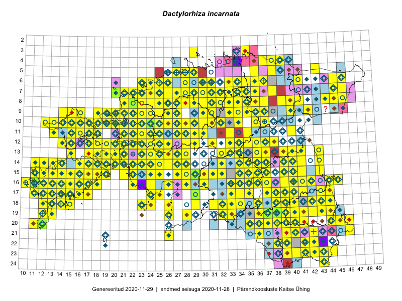

Dactylorhiza incarnata — kahkjaspunane sõrmkäpp
Orchidaceae :: Dactylorhiza incarnata (L.) Soó (2774); Dactylorhiza incarnata subsp. incarnata (L.) Soó (98); Orchis incarnata L. (53); Dactylorhiza incarnata f. ochrantha Landwehr (19); Dactylorhiza incarnata var. hyphaematodes (Neuman) Landw. (16); Dactylorhiza incarnata var. haematodes (Reichenb.) Soó (5); Dactylorhiza incarnata var. serotina (Hausskn.) Soó (5); Dactylorhiza incarnata var. macrophylla (Schur) Soó (3)

Kaart põhineb 5757 kirjel:
vaatlusi 2521
herbaareksemplare 452
PKÜ kirjeid1 371
ELFi kirjeid2 1955
LVA kirjeid3 271
EELISe kirjeid4 187
Taime kaasaegsed ja ajaloolised leiukohad asuvad 482 ruudus.
Tingmärgid ja leidudega ruutude arvud periooditi uues (u) ja 2005 andmestikus (v)
| █ | vahemik | u5 | v6 |
|---|---|---|---|
| █ | 2006–2020 | 445 | – |
| ◆/◇ | 1971–2005 | 336 | 314 |
| ○ | 1921–1970 | 241 | 34 |
| + | kuni 1920 | 27 | 0 |
| × | hävinud | – | 0 |
| ? | kaheldav | – | 1 |
| Ruut | Leidja(d) | Leiuaeg | Kirje |
|---|---|---|---|
| 08-28 | Toivo Sepp | 2020-09-18 | ELF: 24985 |
| 08-29 | Toivo Sepp | 2020-09-17 | ELF: 2645 |
| 09-29 | Toivo Sepp | 2020-09-16 | ELF: 22933 |
| 09-29 | Toivo Sepp | 2020-09-11 | ELF: 24982 |
| 09-29 | Toivo Sepp | 2020-09-11 | ELF: 2468 |
| 16-15 | Ott Luuk, Meeli Mesipuu | 2020-09-11 | PKÜ: 21036 |
| 15-16 | Mari Reitalu, Sirje Azarov | 2020-09-07 | ruut/ala: Dactylorhiza incarnata (L.) Soó |
| 11-28 | Toivo Sepp | 2020-09-05 | ELF: 2288 |
| 11-28 | Toivo Sepp | 2020-09-04 | ELF: 3032 |
| 11-28 | Toivo Sepp | 2020-09-04 | ELF: 143 |
| 16-14 | Mari Reitalu, Sirje Azarov | 2020-09-03 | ruut/ala: Dactylorhiza incarnata (L.) Soó |
| 16-17 | Mari Reitalu, Sirje Azarov | 2020-08-31 | ruut/ala: Dactylorhiza incarnata (L.) Soó |
| 14-22 | Toomas Kukk | 2020-08-30 | punkt: Dactylorhiza incarnata (L.) Soó |
| 14-22 | Toomas Kukk | 2020-08-30 | PKÜ: 20608 |
| 15-17 | Mari Reitalu, Sirje Azarov | 2020-08-27–2020-09-06 | ruut/ala: Dactylorhiza incarnata (L.) Soó |
| 11-28 | Toivo Sepp | 2020-08-27 | ELF: 2546 |
| 11-28 | Toivo Sepp | 2020-08-27 | ELF: 2510 |
| 23-44 | Jaanus Paal, Taimi Paal | 2020-08-27 | ELF: 358 |
| 04-37 | Toomas Kukk | 2020-08-26 | punkt: Dactylorhiza incarnata (L.) Soó |
| 04-37 | Toomas Kukk | 2020-08-26 | PKÜ: 21003 |
| 11-28 | Toivo Sepp | 2020-08-26 | ELF: 2924 |
| 11-28 | Ott Luuk, Toivo Sepp | 2020-08-26 | ELF: 147 |
| 11-28 | Ott Luuk | 2020-08-26 | ELF: 146 |
| 11-28 | Ott Luuk | 2020-08-26 | ELF: 144 |
| 11-28 | Ott Luuk | 2020-08-26 | ELF: 2941 |
| 11-28 | Ott Luuk | 2020-08-26 | ELF: 2388 |
| 11-28 | Ott Luuk | 2020-08-26 | ELF: 2105 |
| 11-28 | Ott Luuk | 2020-08-26 | ELF: 2262 |
| 10-28 | Toivo Sepp | 2020-08-25 | ELF: 3074 |
| 09-29 | Toivo Sepp | 2020-08-24 | ELF: 2007 |
| 10-30 | Ott Luuk | 2020-08-24 | punkt: Dactylorhiza incarnata (L.) Soó |
| 15-14 | Mari Reitalu, Sirje Azarov | 2020-08-24 | ruut/ala: Dactylorhiza incarnata (L.) Soó |
| 07-45 | Alar Soppe | 2020-08-24 | ELF: 168 |
| 10-30 | Toivo Sepp | 2020-08-22–2020-08-23 | ELF: 3041 |
| 10-30 | Toivo Sepp | 2020-08-22 | ELF: 3040 |
| 18-33 | Ott Luuk, Jaak-Albert Metsoja | 2020-08-21 | punkt: Dactylorhiza incarnata (L.) Soó |
| 18-33 | Ott Luuk, Jaak-Albert Metsoja | 2020-08-21 | ruut/ala: Dactylorhiza incarnata (L.) Soó |
| 14-16 | Mari Reitalu, Sirje Azarov | 2020-08-19–2020-08-20 | ruut/ala: Dactylorhiza incarnata (L.) Soó |
| 21-39 | Eerik Leibak | 2020-08-19 | ELF: 899 |
| 14-17 | Mari Reitalu, Sirje Azarov | 2020-08-18 | ruut/ala: Dactylorhiza incarnata (L.) Soó |
| 14-17 | Mari Reitalu, Sirje Azarov | 2020-08-18 | ruut/ala: Dactylorhiza incarnata (L.) Soó |
| 22-37 | Eerik Leibak | 2020-08-18 | ELF: 890 |
| 23-37 | Eerik Leibak | 2020-08-18 | ELF: 886 |
| 04-39;04-40 | Jaan Spiegel | 2020-08-17 | ELF: 24903 |
| 17-39 | Silvia Pihu | 2020-08-16 | ELF: 699 |
| 05-39 | Jaan Spiegel | 2020-08-16 | ELF: 968 |
| 24-43 | Jaanus Paal, Taimi Paal | 2020-08-12 | ELF: 356 |
| 13-18 | Mari Reitalu, Sirje Azarov | 2020-08-11–2020-08-12 | ruut/ala: Dactylorhiza incarnata (L.) Soó |
| 21-42 | Silvia Pihu | 2020-08-11 | ELF: 12305 |
| 21-42 | Silvia Pihu | 2020-08-11 | ELF: 9912 |
| 07-30 | Eerik Leibak | 2020-08-10 | ELF: 1207 |
| 07-29;07-30 | Eerik Leibak | 2020-08-10 | ELF: 24886 |
| 09-31 | Eerik Leibak | 2020-08-09 | ELF: 24885 |
| 16-17 | Mari Reitalu, Sirje Azarov | 2020-08-08–2020-08-29 | ruut/ala: Dactylorhiza incarnata (L.) Soó |
| 10-21 | Peedu Saar | 2020-08-07 | punkt: Dactylorhiza incarnata (L.) Soó |
| 10-21 | Peedu Saar | 2020-08-07 | punkt: Dactylorhiza incarnata (L.) Soó |
| 10-21 | Peedu Saar | 2020-08-07 | ruut/ala: Dactylorhiza incarnata (L.) Soó |
| 15-15 | Mari Reitalu, Sirje Azarov | 2020-08-07 | ruut/ala: Dactylorhiza incarnata (L.) Soó |
| 10-17 | Peedu Saar | 2020-08-06 | PKÜ: 20609 |
| 10-23 | Ott Luuk | 2020-08-05 | punkt: Dactylorhiza incarnata (L.) Soó |
| 14-39 | Peedu Saar | 2020-08-03 | ruut/ala: Dactylorhiza incarnata (L.) Soó |
| 16-17 | Mari Reitalu, Sirje Azarov | 2020-07-31 | ruut/ala: Dactylorhiza incarnata (L.) Soó |
| 06-39;06-40 | Jaan Spiegel | 2020-07-31 | ELF: 970 |
| 13-41 | Avo Veermäe | 2020-07-30 | LVA: -1228013068 |
| 08-45 | Peedu Saar | 2020-07-29 | PKÜ: 20503 |
| 19-41 | Jaanus Paal, Taimi Paal | 2020-07-24 | ELF: 11596 |
| 19-41 | Jaanus Paal, Taimi Paal | 2020-07-24 | ELF: 11596 |
| 08-39 | Triin Edovald | 2020-07-23 | LVA: 862968364 |
| 08-25 | Ott Luuk | 2020-07-23 | punkt: Dactylorhiza incarnata (L.) Soó |
| 14-14 | Mari Reitalu, Sirje Azarov, Aira Alasi | 2020-07-23 | ruut/ala: Dactylorhiza incarnata (L.) Soó |
| 09-36 | Avo Veermäe | 2020-07-23 | LVA: 1208801610 |
| 08-25 | Ott Luuk | 2020-07-22 | punkt: Dactylorhiza incarnata (L.) Soó |
| 18-42 | Meeli Mesipuu | 2020-07-22 | ruut/ala: Dactylorhiza incarnata (L.) Soó |
| 16-17 | Mari Reitalu, Sirje Azarov, Anne Teigamägi | 2020-07-22 | ruut/ala: Dactylorhiza incarnata (L.) Soó |
| 15-14 | Mari Reitalu, Sirje Azarov | 2020-07-21 | ruut/ala: Dactylorhiza incarnata (L.) Soó |
| 04-34 | Jaan Spiegel | 2020-07-21 | ELF: 2325 |
| 19-38;19-39;20-38;20-39 | Jaanus Paal, Taimi Paal | 2020-07-20 | ELF: 549 |
| 06-31 | Eerik Leibak | 2020-07-20 | ELF: 309 |
| 21-39 | Triin Edovald, Ann Kraut, Evelin Laanest, Andres Niroda, Kristi Oja, Ilmar Uibopuu, Marko Vainu | 2020-07-19 | LVA: 1577239912 |
| 06-31 | Eerik Leibak | 2020-07-19 | ELF: 316 |
| 06-31 | Eerik Leibak | 2020-07-19 | ELF: 310 |
| 06-31 | Eerik Leibak | 2020-07-19 | ELF: 311 |
| 06-31 | Eerik Leibak | 2020-07-19 | ELF: 313 |
| 06-31 | Eerik Leibak | 2020-07-19 | ELF: 21425 |
| 05-36 | Jaan Spiegel | 2020-07-18 | ELF: 159 |
| 05-36 | Jaan Spiegel | 2020-07-18 | ELF: 158 |
| 07-26 | Eerik Leibak | 2020-07-18 | ELF: 1355 |
| 07-24;07-25 | Eerik Leibak | 2020-07-18 | ELF: 2108 |
| 08-26 | Eerik Leibak | 2020-07-16 | ELF: 2442 |
| 08-26 | Eerik Leibak | 2020-07-16 | ELF: 2655 |
| 08-26 | Eerik Leibak | 2020-07-16 | ELF: 33 |
| 08-26 | Eerik Leibak | 2020-07-16 | ELF: 24882 |
| 07-36 | Jaan Spiegel | 2020-07-15 | ELF: 752 |
| 07-36 | Jaan Spiegel | 2020-07-15 | ELF: 24895 |
| 08-26 | Eerik Leibak | 2020-07-15 | ELF: 2745 |
| 08-26 | Eerik Leibak | 2020-07-15 | ELF: 2758 |
| 08-26 | Eerik Leibak | 2020-07-15 | ELF: 2751 |
| 08-26 | Eerik Leibak | 2020-07-15 | ELF: 32 |
| 19-40 | Avo Veermäe | 2020-07-15 | LVA: -1701410730 |
| 19-40 | Avo Veermäe | 2020-07-15 | LVA: 1702804846 |
| 07-31 | Eerik Leibak | 2020-07-14 | ELF: 305 |
| 07-31 | Eerik Leibak | 2020-07-14 | ELF: 308 |
| 11-40 | Ulvi Selgis, Enn Selgis | 2020-07-12 | punkt: Dactylorhiza incarnata (L.) Soó |
| 10-21 | Thea Kull | 2020-07-12 | punkt: Dactylorhiza incarnata (L.) Soó |
| 10-21 | Thea Kull | 2020-07-12 | punkt: Dactylorhiza incarnata (L.) Soó |
| 11-40 | Enn Selgis | 2020-07-12 | LVA: 878964042 |
| 07-22 | Kaili Kattai | 2020-07-11 | punkt: Dactylorhiza incarnata (L.) Soó |
| 13-24 | Silvia Pihu | 2020-07-10 | ELF: 981 |
| 19-40 | Avo Veermäe | 2020-07-10 | LVA: 224093364 |
| 19-40 | Avo Veermäe | 2020-07-10 | LVA: 498085760 |
| 19-40 | Avo Veermäe | 2020-07-10 | LVA: -1609486202 |
| 19-40 | Avo Veermäe | 2020-07-10 | LVA: 2119853574 |
| 14-23 | Silvia Pihu | 2020-07-09 | ELF: 9864 |
| 22-43 | Eerik Leibak | 2020-07-09 | ELF: 9957 |
| 23-42 | Eerik Leibak | 2020-07-09 | ELF: 9952 |
| 19-40 | Avo Veermäe | 2020-07-09 | LVA: 266058110 |
| 19-40 | Avo Veermäe | 2020-07-09 | LVA: 1534819930 |
| 19-41 | Avo Veermäe | 2020-07-09 | LVA: 1918912424 |
| 14-22 | Silvia Pihu | 2020-07-08 | ELF: 43 |
| 14-21 | Silvia Pihu | 2020-07-08 | ELF: 40 |
| 14-23;14-24 | Silvia Pihu | 2020-07-08 | ELF: 994 |
| 13-23 | Kaili Kattai | 2020-07-08 | punkt: Dactylorhiza incarnata (L.) Soó |
| 19-39 | Jaanus Paal, Taimi Paal | 2020-07-08 | ELF: 555 |
| 19-39 | Jaanus Paal, Taimi Paal | 2020-07-08 | ELF: 24864 |
| 20-45 | Toomas Kukk | 2020-07-07 | punkt: Dactylorhiza incarnata (L.) Soó |
| 20-45 | Toomas Kukk | 2020-07-07 | punkt: Dactylorhiza incarnata (L.) Soó |
| 20-45;20-46 | Toomas Kukk | 2020-07-07 | ELF: 24853 |
| 20-45 | Toomas Kukk | 2020-07-07 | ELF: 24857 |
| 14-24 | Silvia Pihu | 2020-07-07 | ELF: 2537 |
| 12-21 | Kaili Kattai | 2020-07-07 | punkt: Dactylorhiza incarnata (L.) Soó |
| 10-15 | Helle Mäemets, Kaire Torn | 2020-07-07 | punkt: Dactylorhiza incarnata (L.) Soó |
| 13-39 | Enn Selgis | 2020-07-07 | LVA: 1926955846 |
| 20-46 | Eerik Leibak | 2020-07-07 | ELF: 589 |
| 20-45;20-46 | Eerik Leibak | 2020-07-07 | ELF: 24854 |
| 19-41 | Avo Veermäe | 2020-07-07 | LVA: 674650852 |
| 07-22 | Villu Soon | 2020-07-06 | punkt: Dactylorhiza incarnata (L.) Soó |
| 20-36 | Ulvi Selgis, Angelika Portsmuth, Hans Albert William Portsmuth, Enn Selgis | 2020-07-05 | punkt: Dactylorhiza incarnata (L.) Soó |
| 20-36 | Ulvi Selgis, Angelika Portsmuth, Hans Albert William Portsmuth, Enn Selgis | 2020-07-05 | punkt: Dactylorhiza incarnata (L.) Soó |
| 20-36 | Ulvi Selgis, Angelika Portsmuth, Hans Albert William Portsmuth, Enn Selgis | 2020-07-05 | punkt: Dactylorhiza incarnata (L.) Soó |
| 20-36 | Ulvi Selgis, Angelika Portsmuth, Hans Albert William Portsmuth, Enn Selgis | 2020-07-05 | punkt: Dactylorhiza incarnata (L.) Soó |
| 20-36 | Ulvi Selgis, Angelika Portsmuth, Hans Albert William Portsmuth, Enn Selgis | 2020-07-05 | punkt: Dactylorhiza incarnata (L.) Soó |
| 20-36 | Merit Otsus, Ester Valdvee, Aare Laht, Tiiu-Maie Laht | 2020-07-05 | punkt: Dactylorhiza incarnata (L.) Soó |
| 19-38 | Mari Reitalu, Sirje Azarov, Riine Latserus | 2020-07-05 | ruut/ala: Dactylorhiza incarnata (L.) Soó |
| 19-38 | Mari Reitalu, Riine Latserus, Sirje Azarov | 2020-07-05 | punkt: Dactylorhiza incarnata (L.) Soó |
| 19-38 | Mari Reitalu, Riine Latserus, Sirje Azarov | 2020-07-05 | punkt: Dactylorhiza incarnata (L.) Soó |
| 19-38 | Mari Reitalu, Riine Latserus, Sirje Azarov | 2020-07-05 | punkt: Dactylorhiza incarnata (L.) Soó |
| 19-38 | Mari Reitalu, Riine Latserus, Sirje Azarov | 2020-07-05 | punkt: Dactylorhiza incarnata (L.) Soó |
| 19-38 | Mari Reitalu, Riine Latserus, Sirje Azarov | 2020-07-05 | punkt: Dactylorhiza incarnata (L.) Soó |
| 19-38 | Mari Reitalu, Riine Latserus, Sirje Azarov | 2020-07-05 | punkt: Dactylorhiza incarnata (L.) Soó |
| 19-38 | Mari Reitalu, Riine Latserus, Sirje Azarov | 2020-07-05 | punkt: Dactylorhiza incarnata (L.) Soó |
| 19-38 | Mari Reitalu, Riine Latserus, Sirje Azarov | 2020-07-05 | punkt: Dactylorhiza incarnata (L.) Soó |
| 18-38 | Kadri Aller, Ülle Jõgar, Ülle Püttsepp | 2020-07-05 | punkt: Dactylorhiza incarnata (L.) Soó |
| 18-38 | Ulvi Selgis, Angelika Portsmuth, Hans Albert William Portsmuth, Enn Selgis | 2020-07-04 | punkt: Dactylorhiza incarnata (L.) Soó |
| 19-37 | Sirje Azarov, Mari Reitalu, Riine Latserus | 2020-07-04 | punkt: Dactylorhiza incarnata (L.) Soó |
| 19-37 | Mari Reitalu, Riine Latserus, Sirje Azarov | 2020-07-04 | punkt: Dactylorhiza incarnata (L.) Soó |
| 19-37 | Mari Reitalu, Riine Latserus, Sirje Azarov | 2020-07-04 | punkt: Dactylorhiza incarnata (L.) Soó |
| 19-37 | Mari Reitalu, Riine Latserus, Sirje Azarov | 2020-07-04 | punkt: Dactylorhiza incarnata (L.) Soó |
| 19-37 | Mari Reitalu, Riine Latserus, Sirje Azarov | 2020-07-04 | punkt: Dactylorhiza incarnata (L.) Soó |
| 19-37 | Mari Reitalu, Riine Latserus, Sirje Azarov | 2020-07-04 | punkt: Dactylorhiza incarnata (L.) Soó |
| 19-37 | Mari Reitalu, Riine Latserus, Sirje Azarov | 2020-07-04 | punkt: Dactylorhiza incarnata (L.) Soó |
| 19-37 | Mari Reitalu, Riine Latserus, Sirje Azarov | 2020-07-04 | punkt: Dactylorhiza incarnata (L.) Soó |
| 19-37 | Mari Reitalu, Riine Latserus, Sirje Azarov | 2020-07-04 | punkt: Dactylorhiza incarnata (L.) Soó |
| 19-37 | Mari Reitalu, Riine Latserus, Sirje Azarov | 2020-07-04 | punkt: Dactylorhiza incarnata (L.) Soó |
| 19-37 | Mari Reitalu, Riine Latserus, Sirje Azarov | 2020-07-04 | punkt: Dactylorhiza incarnata (L.) Soó |
| 19-37 | Mari Reitalu, Riine Latserus, Sirje Azarov | 2020-07-04 | punkt: Dactylorhiza incarnata (L.) Soó |
| 19-37 | Mari Reitalu, Riine Latserus, Sirje Azarov | 2020-07-04 | punkt: Dactylorhiza incarnata (L.) Soó |
| 19-37 | Mari Reitalu, Riine Latserus, Sirje Azarov | 2020-07-04 | punkt: Dactylorhiza incarnata (L.) Soó |
| 19-37 | Mari Reitalu, Riine Latserus, Sirje Azarov | 2020-07-04 | punkt: Dactylorhiza incarnata (L.) Soó |
| 19-37 | Mari Reitalu, Riine Latserus, Sirje Azarov | 2020-07-04 | punkt: Dactylorhiza incarnata (L.) Soó |
| 19-37 | Mari Reitalu, Riine Latserus, Sirje Azarov | 2020-07-04 | punkt: Dactylorhiza incarnata (L.) Soó |
| 19-37 | Mari Reitalu, Riine Latserus, Sirje Azarov | 2020-07-04 | punkt: Dactylorhiza incarnata (L.) Soó |
| 19-37 | Mari Reitalu, Riine Latserus, Sirje Azarov | 2020-07-04 | punkt: Dactylorhiza incarnata (L.) Soó |
| 19-37 | Mari Reitalu, Riine Latserus, Sirje Azarov | 2020-07-04 | punkt: Dactylorhiza incarnata (L.) Soó |
| 19-37 | Mari Reitalu, Riine Latserus, Sirje Azarov | 2020-07-04 | punkt: Dactylorhiza incarnata (L.) Soó |
| 19-37 | Mari Reitalu, Riine Latserus, Sirje Azarov | 2020-07-04 | punkt: Dactylorhiza incarnata (L.) Soó |
| 19-37 | Mari Reitalu, Riine Latserus, Sirje Azarov | 2020-07-04 | punkt: Dactylorhiza incarnata (L.) Soó |
| 13-21 | Kaili Kattai | 2020-07-04 | punkt: Dactylorhiza incarnata (L.) Soó |
| 19-38 | Kadri Aller, Ülle Jõgar, Merit Otsus, Aiki Tibar | 2020-07-04 | punkt: Dactylorhiza incarnata (L.) Soó |
| 19-38 | Kadri Aller, Ülle Jõgar, Merit Otsus, Aiki Tibar | 2020-07-04 | punkt: Dactylorhiza incarnata (L.) Soó |
| 19-38 | Jekaterina Aida, Kaisa Alla, Reet Ohna, Arto-Randel Servet, Tarmo Niitla | 2020-07-04 | punkt: Dactylorhiza incarnata (L.) Soó |
| 19-38 | Jekaterina Aida, Kaisa Alla, Reet Ohna, Arto-Randel Servet, Tarmo Niitla | 2020-07-04 | punkt: Dactylorhiza incarnata (L.) Soó |
| 19-38 | Jekaterina Aida, Kaisa Alla, Reet Ohna, Arto-Randel Servet, Tarmo Niitla | 2020-07-04 | punkt: Dactylorhiza incarnata (L.) Soó |
| 19-38 | Jekaterina Aida, Kaisa Alla, Reet Ohna, Arto-Randel Servet, Tarmo Niitla | 2020-07-04 | punkt: Dactylorhiza incarnata (L.) Soó |
| 19-38 | Jekaterina Aida, Kaisa Alla, Reet Ohna, Arto-Randel Servet, Tarmo Niitla | 2020-07-04 | punkt: Dactylorhiza incarnata (L.) Soó |
| 19-38 | Jekaterina Aida, Kaisa Alla, Reet Ohna, Arto-Randel Servet | 2020-07-04 | punkt: Dactylorhiza incarnata (L.) Soó |
| 19-39 | Jaanus Paal, Taimi Paal | 2020-07-04 | ELF: 556 |
| 19-39 | Ester Valdvee, Aare Laht, Tiiu-Maie Laht | 2020-07-04 | punkt: Dactylorhiza incarnata (L.) Soó |
| 19-39 | Ester Valdvee, Aare Laht, Tiiu-Maie Laht | 2020-07-04 | punkt: Dactylorhiza incarnata (L.) Soó |
| 19-39 | Ester Valdvee, Aare Laht, Tiiu-Maie Laht | 2020-07-04 | punkt: Dactylorhiza incarnata (L.) Soó |
| 19-39 | Ester Valdvee, Aare Laht, Tiiu-Maie Laht | 2020-07-04 | punkt: Dactylorhiza incarnata (L.) Soó |
| 19-39 | Ester Valdvee, Aare Laht, Tiiu-Maie Laht | 2020-07-04 | punkt: Dactylorhiza incarnata (L.) Soó |
| 19-39 | Ester Valdvee, Aare Laht, Tiiu-Maie Laht | 2020-07-04 | punkt: Dactylorhiza incarnata (L.) Soó |
| 19-39 | Ester Valdvee, Aare Laht, Tiiu-Maie Laht | 2020-07-04 | punkt: Dactylorhiza incarnata (L.) Soó |
| 19-39 | Ester Valdvee, Aare Laht, Tiiu-Maie Laht | 2020-07-04 | punkt: Dactylorhiza incarnata (L.) Soó |
| 19-39 | Ester Valdvee, Aare Laht, Tiiu-Maie Laht | 2020-07-04 | punkt: Dactylorhiza incarnata (L.) Soó |
| 19-39 | Ester Valdvee, Aare Laht, Tiiu-Maie Laht | 2020-07-04 | punkt: Dactylorhiza incarnata (L.) Soó |
| 19-39 | Ester Valdvee, Aare Laht, Tiiu-Maie Laht | 2020-07-04 | punkt: Dactylorhiza incarnata (L.) Soó |
| 19-39 | Ester Valdvee, Aare Laht, Tiiu-Maie Laht | 2020-07-04 | punkt: Dactylorhiza incarnata (L.) Soó |
| 18-38 | Avo Veermäe | 2020-07-04 | LVA: 1478055162 |
| 17-11 | Rein Kalamees, Ott Luuk | 2020-07-03 | PKÜ: 20454 |
| 17-11 | Rein Kalamees, Ott Luuk | 2020-07-03 | PKÜ: 20457 |
| 17-11 | Rein Kalamees, Ott Luuk | 2020-07-03 | PKÜ: 20458 |
| 17-11 | Rein Kalamees, Ott Luuk | 2020-07-03 | PKÜ: 20460 |
| 17-11 | Rein Kalamees, Ott Luuk | 2020-07-03 | PKÜ: 20452 |
| 17-11 | Meeli Mesipuu | 2020-07-03 | PKÜ: 20185 |
| 17-11 | Meeli Mesipuu | 2020-07-03 | PKÜ: 20186 |
| 08-26;08-27;09-26;09-27 | Eerik Leibak | 2020-07-03 | ELF: 9918 |
| 08-26 | Eerik Leibak | 2020-07-03 | ELF: 20646 |
| 08-26 | Eerik Leibak | 2020-07-03 | ELF: 24880 |
| 19-12 | Toomas Kukk, Johannes Kõdar | 2020-07-02 | punkt: Dactylorhiza incarnata (L.) Soó |
| 19-12 | Toomas Kukk, Johannes Kõdar | 2020-07-02 | punkt: Dactylorhiza incarnata (L.) Soó |
| 19-12 | Toomas Kukk, Johannes Kõdar | 2020-07-02 | punkt: Dactylorhiza incarnata (L.) Soó |
| 19-12 | Toomas Kukk, Johannes Kõdar | 2020-07-02 | punkt: Dactylorhiza incarnata (L.) Soó |
| 19-12 | Toomas Kukk, Johannes Kõdar | 2020-07-02 | punkt: Dactylorhiza incarnata (L.) Soó |
| 19-12 | Toomas Kukk, Johannes Kõdar | 2020-07-02 | punkt: Dactylorhiza incarnata (L.) Soó |
| 19-12 | Toomas Kukk | 2020-07-02 | PKÜ: 20529 |
| 19-12 | Toomas Kukk | 2020-07-02 | PKÜ: 20527 |
| 20-12 | Peedu Saar | 2020-07-02 | PKÜ: 20547 |
| 17-11 | Ott Luuk, Rein Kalamees | 2020-07-02 | PKÜ: 21180 |
| 17-11 | Ott Luuk, Rein Kalamees | 2020-07-02 | PKÜ: 21181 |
| 17-11 | Ott Luuk, Rein Kalamees | 2020-07-02 | PKÜ: 21183 |
| 17-15 | Mari Reitalu, Sirje Azarov | 2020-07-02 | ruut/ala: Dactylorhiza incarnata (L.) Soó |
| 19-39 | Jaanus Paal, Taimi Paal | 2020-07-02 | ELF: 9976 |
| 09-26 | Eerik Leibak | 2020-07-02 | ELF: 20667 |
| 17-11 | Ott Luuk, Rein Kalamees | 2020-07-01 | PKÜ: 20215 |
| 17-11 | Meeli Mesipuu | 2020-07-01 | PKÜ: 21060 |
| 17-11 | Meeli Mesipuu | 2020-07-01 | PKÜ: 21112 |
| 17-11 | Meeli Mesipuu | 2020-07-01 | PKÜ: 21113 |
| 17-11 | Meeli Mesipuu | 2020-07-01 | PKÜ: 21115 |
| 17-11 | Meeli Mesipuu | 2020-07-01 | PKÜ: 21114 |
| 12-37 | Enn Selgis | 2020-07-01 | LVA: 821383124 |
| 17-15 | Toomas Kukk | 2020-06-30 | punkt: Dactylorhiza incarnata (L.) Soó |
| 17-15 | Toomas Kukk | 2020-06-30 | punkt: Dactylorhiza incarnata (L.) Soó |
| 17-15 | Toomas Kukk | 2020-06-30 | PKÜ: 20563 |
| 14-22 | Ott Luuk, Rein Kalamees | 2020-06-30 | PKÜ: 20589 |
| 14-22 | Ott Luuk, Rein Kalamees | 2020-06-30 | PKÜ: 20591 |
| 19-12 | Ants Animägi | 2020-06-29 | LVA: -1486759332 |
| 12-37 | Enn Selgis | 2020-06-28 | LVA: -2076883272 |
| 10-24 | Thea Kull | 2020-06-27 | punkt: Dactylorhiza incarnata (L.) Soó |
| 10-24 | Thea Kull | 2020-06-27 | punkt: Dactylorhiza incarnata (L.) Soó |
| 10-26 | Thea Kull | 2020-06-26 | punkt: Dactylorhiza incarnata (L.) Soó |
| 10-26 | Thea Kull | 2020-06-26 | punkt: Dactylorhiza incarnata (L.) Soó |
| 10-24 | Thea Kull | 2020-06-26 | punkt: Dactylorhiza incarnata (L.) Soó |
| 10-24 | Thea Kull | 2020-06-26 | punkt: Dactylorhiza incarnata (L.) Soó |
| 10-24 | Thea Kull | 2020-06-26 | punkt: Dactylorhiza incarnata (L.) Soó |
| 17-12 | Ants Animägi | 2020-06-26 | LVA: 1370286338 |
| 19-26 | Ulvi Selgis, Enn Selgis | 2020-06-24 | punkt: Dactylorhiza incarnata (L.) Soó |
| 19-26 | Enn Selgis | 2020-06-24 | LVA: -1088793520 |
| 08-28 | Ott Luuk | 2020-06-21 | punkt: Dactylorhiza incarnata (L.) Soó |
| 08-28 | Ott Luuk | 2020-06-21 | punkt: Dactylorhiza incarnata (L.) Soó |
| 07-28 | Ott Luuk | 2020-06-21 | punkt: Dactylorhiza incarnata (L.) Soó |
| 09-14 | Kätly Aksim | 2020-06-21 | LVA: -178070172 |
| 06-26 | Kaili Kattai | 2020-06-21 | punkt: Dactylorhiza incarnata (L.) Soó |
| 12-22 | Trinus Haitjema | 2020-06-20 | punkt: Dactylorhiza incarnata (L.) Soó |
| 20-39 | Ilmar Uibopuu | 2020-06-20 | LVA: -745304456 |
| 18-38 | Avo Veermäe | 2020-06-20 | LVA: 1790122650 |
| 17-38 | Avo Veermäe | 2020-06-20 | LVA: 675463478 |
| 10-25 | Thea Kull | 2020-06-19 | punkt: Dactylorhiza incarnata (L.) Soó |
| 10-25 | Thea Kull | 2020-06-19 | punkt: Dactylorhiza incarnata (L.) Soó |
| 10-24 | Thea Kull | 2020-06-19 | punkt: Dactylorhiza incarnata (L.) Soó |
| 05-29 | Peedu Saar, Mart Meriste | 2020-06-19 | punkt: Dactylorhiza incarnata (L.) Soó |
| 05-29 | Peedu Saar, Mart Meriste | 2020-06-19 | ruut/ala: Dactylorhiza incarnata (L.) Soó |
| 12-21;13-21 | Toomas Kukk, Rein Kalamees, Martin Tikk | 2020-06-18 | PKÜ: 21101 |
| 13-21 | Toomas Kukk, Martin Tikk, Rein Kalamees | 2020-06-18 | punkt: Dactylorhiza incarnata (L.) Soó |
| 12-21 | Toomas Kukk, Martin Tikk, Rein Kalamees | 2020-06-18 | punkt: Dactylorhiza incarnata (L.) Soó |
| 12-21 | Toomas Kukk, Martin Tikk, Rein Kalamees | 2020-06-18 | punkt: Dactylorhiza incarnata (L.) Soó |
| 13-21 | Toomas Kukk, Martin Tikk, Rein Kalamees | 2020-06-18 | punkt: Dactylorhiza incarnata (L.) Soó |
| 13-21 | Toomas Kukk, Martin Tikk, Rein Kalamees | 2020-06-18 | punkt: Dactylorhiza incarnata (L.) Soó |
| 13-21 | Toomas Kukk, Martin Tikk, Rein Kalamees | 2020-06-18 | punkt: Dactylorhiza incarnata (L.) Soó |
| 13-21 | Toomas Kukk, Martin Tikk, Rein Kalamees | 2020-06-18 | punkt: Dactylorhiza incarnata (L.) Soó |
| 12-21;13-21 | Toomas Kukk, Martin Tikk | 2020-06-18 | PKÜ: 21105 |
| 11-24 | Thea Kull | 2020-06-18 | punkt: Dactylorhiza incarnata (L.) Soó |
| 11-25 | Thea Kull | 2020-06-18 | punkt: Dactylorhiza incarnata (L.) Soó |
| 12-23 | Ott Luuk, Meeli Mesipuu | 2020-06-18 | PKÜ: 21144 |
| 12-23 | Meeli Mesipuu, Ott Luuk | 2020-06-18 | punkt: Dactylorhiza incarnata (L.) Soó |
| 12-23 | Meeli Mesipuu, Ott Luuk | 2020-06-18 | PKÜ: 21153 |
| 12-23 | Meeli Mesipuu | 2020-06-18 | PKÜ: 21155 |
| 12-23 | Meeli Mesipuu | 2020-06-18 | PKÜ: 21158 |
| 12-23 | Meeli Mesipuu | 2020-06-18 | PKÜ: 21157 |
| 12-24 | Thea Kull | 2020-06-17 | punkt: Dactylorhiza incarnata (L.) Soó |
| 11-24 | Thea Kull | 2020-06-17 | punkt: Dactylorhiza incarnata (L.) Soó |
| 10-21 | Meeli Mesipuu, Ott Luuk | 2020-06-17 | PKÜ: 21121 |
| 10-27 | Thea Kull | 2020-06-16 | punkt: Dactylorhiza incarnata (L.) Soó |
| 09-21 | Peedu Saar | 2020-06-16 | PKÜ: 20427 |
| 09-21 | Peedu Saar | 2020-06-16 | PKÜ: 20428 |
| 09-21 | Ott Luuk, Peedu Saar | 2020-06-16 | PKÜ: 20432 |
| 09-21 | Ott Luuk, Peedu Saar | 2020-06-16 | PKÜ: 20433 |
| 09-21 | Ott Luuk, Peedu Saar | 2020-06-16 | PKÜ: 20438 |
| 09-21 | Ott Luuk, Peedu Saar | 2020-06-16 | PKÜ: 20440 |
| 09-21 | Ott Luuk, Peedu Saar | 2020-06-16 | PKÜ: 20441 |
| 09-21 | Ott Luuk, Peedu Saar | 2020-06-16 | PKÜ: 20442 |
| 10-21 | Meeli Mesipuu, Ott Luuk | 2020-06-16 | PKÜ: 21124 |
| 12-22 | Meeli Mesipuu | 2020-06-16 | PKÜ: 21142 |
| 12-22 | Meeli Mesipuu | 2020-06-16 | PKÜ: 21143 |
| 08-27 | Toomas Kukk, Rein Kalamees | 2020-06-15 | punkt: Dactylorhiza incarnata (L.) Soó |
| 08-27 | Toomas Kukk | 2020-06-15 | PKÜ: 20463 |
| 09-21 | Ants Animägi | 2020-06-15 | LVA: 1072894980 |
| 06-30 | Ulvi Selgis, Enn Selgis | 2020-06-13 | punkt: Dactylorhiza incarnata (L.) Soó |
| 06-30 | Enn Selgis | 2020-06-13 | LVA: -1986857192 |
| 15-24 | Kaarel Võhandu | 2020-06-10 | punkt: Dactylorhiza incarnata (L.) Soó |
| 14-26 | Kaarel Võhandu | 2020-06-10 | punkt: Dactylorhiza incarnata (L.) Soó |
| 17-15 | Ants Animägi | 2020-06-10 | LVA: 691956114 |
| 17-14 | Ants Animägi | 2020-06-10 | LVA: -1260549464 |
| 14-21 | Heli Saag | 2020-06-07 | punkt: Dactylorhiza incarnata subsp. incarnata (L.) Soó |
| 17-11 | Meeli Mesipuu | 2020-01-07 | punkt: Dactylorhiza incarnata subsp. incarnata (L.) Soó |
| 10-24 | Tõnu Ploompuu | 2019-09-29 | ELF: 9880 |
| 16-13;16-14 | Mari Reitalu, Sirje Azarov | 2019-09-26 | ELF: 80 |
| 16-14 | Mari Reitalu, Sirje Azarov | 2019-09-23 | ruut/ala: Dactylorhiza incarnata (L.) Soó |
| 15-14;16-14 | Mari Reitalu, Sirje Azarov | 2019-09-23 | ELF: 74 |
| 15-14 | Mari Reitalu, Sirje Azarov | 2019-09-23 | ELF: 75 |
| 10-23 | Tõnu Ploompuu | 2019-09-07 | ELF: 193 |
| 10-23 | Tõnu Ploompuu | 2019-09-07 | ELF: 199 |
| 09-22 | Ott Luuk | 2019-09-04 | ELF: 324 |
| 09-22 | Ott Luuk | 2019-09-04 | ELF: 3020 |
| 09-22 | Ott Luuk | 2019-09-04 | ELF: 24833 |
| 09-22 | Ott Luuk | 2019-09-04 | ELF: 24834 |
| 09-22 | Ott Luuk | 2019-09-03 | punkt: Dactylorhiza incarnata (L.) Soó |
| 09-22 | Ott Luuk | 2019-09-03 | ELF: 2330 |
| 09-22 | Ott Luuk | 2019-09-03 | ELF: 24829 |
| 15-13 | Sirje Azarov, Mari Reitalu | 2019-08-31 | ELF: 9 |
| 15-13 | Mari Reitalu, Sirje Azarov | 2019-08-31 | ruut/ala: Dactylorhiza incarnata (L.) Soó |
| 15-13 | Mari Reitalu, Sirje Azarov | 2019-08-31 | ELF: 20989 |
| 08-30;09-30 | Toivo Sepp, Ott Luuk | 2019-08-30 | ELF: 934 |
| 15-32 | Thea Kull, Mari Reitalu | 2019-08-29 | punkt: Dactylorhiza incarnata (L.) Soó |
| 15-32 | Mari Reitalu, Thea Kull, Martin Tikk | 2019-08-29 | ruut/ala: Dactylorhiza incarnata (L.) Soó |
| 16-33 | Mari Reitalu, Thea Kull | 2019-08-27 | ruut/ala: Dactylorhiza incarnata (L.) Soó |
| 17-13 | Sirje Azarov, Mari Reitalu | 2019-08-25 | ELF: 24 |
| 17-13 | Sirje Azarov, Mari Reitalu | 2019-08-25 | ELF: 25 |
| 10-22 | Tõnu Ploompuu | 2019-08-21 | ELF: 24797 |
| 10-22 | Tõnu Ploompuu | 2019-08-20 | ELF: 2170 |
| 17-13 | Mari Reitalu, Sirje Azarov | 2019-08-19 | ELF: 23 |
| 17-13 | Mari Reitalu, Sirje Azarov | 2019-08-19 | ELF: 16715 |
| 17-13 | Mari Reitalu, Sirje Azarov | 2019-08-19 | ELF: 24784 |
| 13-25 | Thea Kull | 2019-08-18 | ruut/ala: Dactylorhiza incarnata (L.) Soó |
| 13-25 | Thea Kull | 2019-08-18 | ELF: 9920 |
| 12-26 | Thea Kull | 2019-08-16 | ruut/ala: Dactylorhiza incarnata (L.) Soó |
| 12-26 | Thea Kull | 2019-08-16 | ELF: 20727 |
| 09-22 | Peedu Saar | 2019-08-16 | ruut/ala: Dactylorhiza incarnata (L.) Soó |
| 09-22 | Peedu Saar | 2019-08-16 | ELF: 2344 |
| 09-22 | Peedu Saar | 2019-08-16 | ELF: 24823 |
| 09-22 | Peedu Saar | 2019-08-16 | ELF: 24824 |
| 09-22 | Peedu Saar | 2019-08-16 | ELF: 24825 |
| 08-21;09-21 | Peedu Saar | 2019-08-15 | ELF: 21047 |
| 16-13 | Mari Reitalu, Sirje Azarov | 2019-08-15 | ruut/ala: Dactylorhiza incarnata (L.) Soó |
| 16-13 | Mari Reitalu, Sirje Azarov | 2019-08-15 | ELF: 12 |
| 16-13 | Mari Reitalu, Sirje Azarov | 2019-08-15 | ELF: 14 |
| 17-41 | Toomas Hirse | 2019-08-13 | ELF: 10975 |
| 16-12 | Mari Reitalu, Sirje Azarov | 2019-08-09 | ELF: 51 |
| 16-12 | Mari Reitalu, Sirje Azarov | 2019-08-09 | ELF: 52 |
| 10-22 | Tõnu Ploompuu | 2019-08-08 | ELF: 227 |
| 08-39 | Toomas Kukk, Rein Kalamees | 2019-08-08 | punkt: Dactylorhiza incarnata (L.) Soó |
| 10-36 | Timo Luhamäe, Peedu Saar | 2019-08-08 | punkt: Dactylorhiza incarnata (L.) Soó |
| 10-36 | Peedu Saar, Timo Luhamäe | 2019-08-08 | ruut/ala: Dactylorhiza incarnata (L.) Soó |
| 07-33 | Ott Luuk, Jaak-Albert Metsoja | 2019-08-08 | ruut/ala: Dactylorhiza incarnata (L.) Soó |
| 07-33 | Ott Luuk, Jaak-Albert Metsoja | 2019-08-08 | punkt: Dactylorhiza incarnata (L.) Soó |
| 07-34 | Toomas Kukk, Rein Kalamees, Kaur Maran | 2019-08-07 | punkt: Dactylorhiza incarnata (L.) Soó |
| 07-34 | Toomas Kukk, Rein Kalamees, Kaur Maran | 2019-08-07 | punkt: Dactylorhiza incarnata (L.) Soó |
| 07-35 | Toomas Kukk, Rein Kalamees, Kaur Maran | 2019-08-07 | punkt: Dactylorhiza incarnata (L.) Soó |
| 06-36 | Timo Luhamäe, Peedu Saar | 2019-08-07 | punkt: Dactylorhiza incarnata (L.) Soó |
| 06-36 | Peedu Saar, Timo Luhamäe | 2019-08-07 | ruut/ala: Dactylorhiza incarnata (L.) Soó |
| 15-12 | Sirje Azarov, Mari Reitalu | 2019-08-06 | ELF: 106 |
| 15-12 | Sirje Azarov, Mari Reitalu | 2019-08-06 | ELF: 2627 |
| 15-12 | Mari Reitalu, Sirje Azarov | 2019-08-06 | ruut/ala: Dactylorhiza incarnata (L.) Soó |
| 12-24 | Tõnu Ploompuu, Arvo Talalaev | 2019-08-05 | ELF: 216 |
| 06-31 | Timo Luhamäe, Peedu Saar | 2019-08-05 | punkt: Dactylorhiza incarnata (L.) Soó |
| 16-12 | Sirje Azarov, Mari Reitalu | 2019-08-05 | ELF: 56 |
| 16-12 | Sirje Azarov, Mari Reitalu | 2019-08-05 | ELF: 61 |
| 06-31 | Peedu Saar, Timo Luhamäe | 2019-08-05 | ruut/ala: Dactylorhiza incarnata (L.) Soó |
| 06-37 | Meeli Mesipuu | 2019-08-05 | punkt: Dactylorhiza incarnata (L.) Soó |
| 06-37 | Meeli Mesipuu | 2019-08-05 | ruut/ala: Dactylorhiza incarnata (L.) Soó |
| 17-39 | Avo Veermäe | 2019-08-05 | LVA: -805709496 |
| 17-39 | Avo Veermäe | 2019-08-05 | LVA: -2106693012 |
| 17-39 | Avo Veermäe | 2019-08-05 | LVA: 1022845004 |
| 17-15 | Sirje Azarov | 2019-08-04 | ELF: 94 |
| 17-14 | Sirje Azarov | 2019-08-03 | ELF: 20 |
| 17-14 | Sirje Azarov | 2019-08-03 | ELF: 85 |
| 17-14 | Sirje Azarov | 2019-08-03 | ELF: 86 |
| 17-40 | Avo Veermäe | 2019-08-03 | LVA: 1484718492 |
| 19-41 | Avo Veermäe | 2019-08-01 | LVA: 398032994 |
| 10-32 | Ott Luuk | 2019-07-31 | punkt: Dactylorhiza incarnata (L.) Soó |
| 10-32 | Ott Luuk | 2019-07-31 | ruut/ala: Dactylorhiza incarnata (L.) Soó |
| 09-27 | Herdis Fridolin, Nele Jõessar, Kristin Pille, Kaire Sirel | 2019-07-31 | LVA: -192020986 |
| 08-21 | Peedu Saar | 2019-07-26 | ruut/ala: Dactylorhiza incarnata (L.) Soó |
| 08-21 | Peedu Saar | 2019-07-26 | ELF: 1486 |
| 08-21 | Peedu Saar | 2019-07-26 | ELF: 6084 |
| 08-21 | Peedu Saar | 2019-07-26 | ELF: 24818 |
| 18-39 | Thea Kull | 2019-07-25 | ruut/ala: Dactylorhiza incarnata (L.) Soó |
| 18-39 | Thea Kull | 2019-07-25 | punkt: Dactylorhiza incarnata (L.) Soó |
| 07-21 | Peedu Saar | 2019-07-25 | ELF: 5892 |
| 07-22 | Peedu Saar | 2019-07-24 | ruut/ala: Dactylorhiza incarnata (L.) Soó |
| 07-22 | Peedu Saar | 2019-07-24 | ELF: 20011 |
| 11-30 | Toivo Sepp, Ott Luuk | 2019-07-23 | ELF: 20378 |
| 17-39 | Thea Kull | 2019-07-23 | punkt: Dactylorhiza incarnata (L.) Soó |
| 11-29 | Ott Luuk, Toivo Sepp | 2019-07-23 | ELF: 1124 |
| 17-38 | Meeli Mesipuu | 2019-07-23 | punkt: Dactylorhiza incarnata (L.) Soó |
| 16-12 | Mari Reitalu | 2019-07-23 | ELF: 734 |
| 11-22 | Tõnu Ploompuu, Eliko Kõiv | 2019-07-21 | ELF: 232 |
| 11-24 | Tõnu Ploompuu, Eliko Kõiv | 2019-07-20 | ELF: 212 |
| 10-24 | Tõnu Ploompuu, Eliko Kõiv | 2019-07-20 | ELF: 9869 |
| 10-24;11-24 | Tõnu Ploompuu, Eliko Kõiv | 2019-07-20 | ELF: 24787 |
| 10-24 | Tõnu Ploompuu, Eliko Kõiv | 2019-07-20 | ELF: 24789 |
| 13-32 | Eerik Leibak | 2019-07-20 | ELF: 1182 |
| 13-32 | Eerik Leibak | 2019-07-20 | ELF: 1183 |
| 16-12 | Sirje Azarov | 2019-07-19 | ELF: 9928 |
| 17-13 | Mari Reitalu, Sirje Azarov | 2019-07-18 | ELF: 1 |
| 19-13 | Mari Reitalu, Sirje Azarov | 2019-07-18 | ELF: 13419 |
| 21-43 | Jarmo Jaanus | 2019-07-18 | EELIS: -76596034 |
| 09-27 | Eerik Leibak | 2019-07-17 | ELF: 871 |
| 08-27;09-27 | Eerik Leibak | 2019-07-17 | ELF: 875 |
| 09-27 | Eerik Leibak | 2019-07-17 | ELF: 21317 |
| 18-42 | Avo Veermäe | 2019-07-17 | LVA: 34492456 |
| 18-42 | Avo Veermäe | 2019-07-17 | LVA: -1278298128 |
| 18-42 | Avo Veermäe | 2019-07-17 | LVA: -1578600732 |
| 18-42 | Avo Veermäe | 2019-07-17 | LVA: -739931388 |
| 18-42 | Avo Veermäe | 2019-07-17 | LVA: -194176534 |
| 19-36 | Anneli Palo | 2019-07-17 | LVA: -549782562 |
| 19-36 | Peedu Saar, Ott Luuk | 2019-07-16 | punkt: Dactylorhiza incarnata (L.) Soó |
| 19-36 | Ott Luuk, Peedu Saar | 2019-07-16 | ruut/ala: Dactylorhiza incarnata (L.) Soó |
| 17-38 | Peedu Saar, Ott Luuk | 2019-07-15 | ruut/ala: Dactylorhiza incarnata (L.) Soó |
| 17-38 | Ott Luuk, Peedu Saar | 2019-07-15 | punkt: Dactylorhiza incarnata (L.) Soó |
| 17-38 | Ott Luuk, Peedu Saar | 2019-07-15 | punkt: Dactylorhiza incarnata (L.) Soó |
| 08-27;09-27 | Eerik Leibak | 2019-07-15 | ELF: 881 |
| 08-27 | Eerik Leibak | 2019-07-15 | ELF: 882 |
| 23-42 | Sirje Azarov, Jekaterina Aida, Riine Latserus, Ülle Jõgar, Hele Tulviste, Aiki Tibar | 2019-07-14 | punkt: Dactylorhiza incarnata (L.) Soó |
| 08-27 | Eerik Leibak | 2019-07-14 | ELF: 865 |
| 08-27 | Eerik Leibak | 2019-07-14 | ELF: 24759 |
| 17-39 | Avo Veermäe | 2019-07-14 | LVA: -290126534 |
| 17-39 | Avo Veermäe | 2019-07-13 | LVA: 379174874 |
| 17-39 | Thea Kull | 2019-07-12 | ruut/ala: Dactylorhiza incarnata (L.) Soó |
| 17-39 | Thea Kull | 2019-07-12 | punkt: Dactylorhiza incarnata (L.) Soó |
| 17-39 | Thea Kull | 2019-07-12 | punkt: Dactylorhiza incarnata (L.) Soó |
| 19-42 | Meeli Mesipuu | 2019-07-12 | punkt: Dactylorhiza incarnata (L.) Soó |
| 19-42 | Meeli Mesipuu | 2019-07-12 | punkt: Dactylorhiza incarnata (L.) Soó |
| 19-42 | Meeli Mesipuu | 2019-07-12 | punkt: Dactylorhiza incarnata (L.) Soó |
| 08-27 | Eerik Leibak | 2019-07-12 | ELF: 860 |
| 08-27 | Eerik Leibak | 2019-07-12 | ELF: 861 |
| 08-27 | Eerik Leibak | 2019-07-12 | ELF: 862 |
| 08-27 | Eerik Leibak | 2019-07-12 | ELF: 863 |
| 08-27 | Eerik Leibak | 2019-07-12 | ELF: 866 |
| 23-44 | Tiit Hallikma, Ott Luuk | 2019-07-11 | punkt: Dactylorhiza incarnata (L.) Soó |
| 19-38 | Thea Kull | 2019-07-11 | punkt: Dactylorhiza incarnata (L.) Soó |
| 19-13 | Mari Reitalu, Sirje Azarov | 2019-07-11 | ruut/ala: Dactylorhiza incarnata (L.) Soó |
| 19-13 | Mari Reitalu, Sirje Azarov | 2019-07-11 | ELF: 16770 |
| 19-41 | Avo Veermäe | 2019-07-11 | LVA: 589845450 |
| 22-38 | Timo Luhamäe, Peedu Saar | 2019-07-10 | punkt: Dactylorhiza incarnata (L.) Soó |
| 19-39 | Thea Kull | 2019-07-10 | ruut/ala: Dactylorhiza incarnata (L.) Soó |
| 19-39 | Thea Kull | 2019-07-10 | punkt: Dactylorhiza incarnata (L.) Soó |
| 19-39 | Thea Kull | 2019-07-10 | punkt: Dactylorhiza incarnata (L.) Soó |
| 16-11 | Sirje Azarov, Mari Reitalu | 2019-07-10 | ELF: 24779 |
| 22-38 | Peedu Saar, Timo Luhamäe | 2019-07-10 | ruut/ala: Dactylorhiza incarnata (L.) Soó |
| 22-39 | Peedu Saar, Timo Luhamäe | 2019-07-10 | ruut/ala: Dactylorhiza incarnata (L.) Soó |
| 20-45 | Ott Luuk, Tiit Hallikma | 2019-07-10 | punkt: Dactylorhiza incarnata (L.) Soó |
| 20-45 | Ott Luuk, Tiit Hallikma | 2019-07-10 | punkt: Dactylorhiza incarnata (L.) Soó |
| 20-45 | Ott Luuk, Tiit Hallikma | 2019-07-10 | ruut/ala: Dactylorhiza incarnata (L.) Soó |
| 19-41 | Meeli Mesipuu | 2019-07-10 | punkt: Dactylorhiza incarnata (L.) Soó |
| 20-37 | Timo Luhamäe, Peedu Saar | 2019-07-09 | punkt: Dactylorhiza incarnata (L.) Soó |
| 18-42 | Thea Kull, Meeli Mesipuu | 2019-07-09 | ruut/ala: Dactylorhiza incarnata (L.) Soó |
| 20-37 | Peedu Saar, Timo Luhamäe | 2019-07-09 | ruut/ala: Dactylorhiza incarnata (L.) Soó |
| 09-37 | Maili Lehtpuu | 2019-07-09 | punkt: Dactylorhiza incarnata (L.) Soó |
| 17-40 | Avo Veermäe | 2019-07-09 | LVA: -2122076726 |
| 17-40 | Avo Veermäe | 2019-07-09 | LVA: -516532510 |
| 17-40 | Avo Veermäe | 2019-07-09 | LVA: -1185117692 |
| 17-40 | Avo Veermäe | 2019-07-09 | LVA: 324471358 |
| 17-40 | Avo Veermäe | 2019-07-09 | LVA: -1262261414 |
| 17-40 | Avo Veermäe | 2019-07-09 | LVA: -2028912616 |
| 15-15 | Toomas Kukk, Eerik Leibak | 2019-07-05 | ruut/ala: Dactylorhiza incarnata (L.) Soó |
| 15-15 | Toomas Kukk | 2019-07-05 | punkt: Dactylorhiza incarnata (L.) Soó |
| 10-13 | Toomas Kukk | 2019-07-04 | punkt: Dactylorhiza incarnata (L.) Soó |
| 10-13 | Toomas Kukk | 2019-07-04 | ELF: 12034 |
| 15-40 | Ott Luuk, Peedu Saar | 2019-07-04 | punkt: Dactylorhiza incarnata (L.) Soó |
| 16-12 | Helle Mäemets, Kaire Torn | 2019-07-04 | punkt: Dactylorhiza incarnata (L.) Soó |
| 16-12 | Helle Mäemets | 2019-07-04 | punkt: Dactylorhiza incarnata (L.) Soó |
| 10-13 | Eerik Leibak | 2019-07-04 | ELF: 24697 |
| 17-40 | Avo Veermäe | 2019-07-04 | LVA: 1118527940 |
| 17-40 | Avo Veermäe | 2019-07-04 | LVA: -184512190 |
| 17-40 | Avo Veermäe | 2019-07-04 | LVA: -386883842 |
| 17-40 | Avo Veermäe | 2019-07-04 | LVA: -982104234 |
| 10-16 | Toomas Kukk | 2019-07-03 | punkt: Dactylorhiza incarnata (L.) Soó |
| 20-12 | Sirje Azarov, Mari Reitalu | 2019-07-03 | ELF: 2827 |
| 20-12 | Sirje Azarov, Mari Reitalu | 2019-07-03 | ELF: 13409 |
| 20-12 | Sirje Azarov, Mari Reitalu | 2019-07-03 | ELF: 24780 |
| 11-15 | Toomas Kukk | 2019-07-02 | punkt: Dactylorhiza incarnata (L.) Soó |
| 11-15 | Toomas Kukk | 2019-07-02 | ELF: 612 |
| 17-40 | Avo Veermäe | 2019-07-02 | LVA: 62047778 |
| 17-40 | Avo Veermäe | 2019-07-02 | LVA: -1262224136 |
| 17-40 | Avo Veermäe | 2019-07-02 | LVA: 1403880854 |
| 17-40 | Avo Veermäe | 2019-07-02 | LVA: -395284418 |
| 10-17 | Toomas Kukk, Eerik Leibak | 2019-07-01 | ELF: 1977 |
| 10-17 | Toomas Kukk, Eerik Leibak | 2019-07-01 | ELF: 1977 |
| 10-17 | Toomas Kukk, Eerik Leibak | 2019-07-01 | ELF: 18800 |
| 10-17 | Toomas Kukk, Eerik Leibak | 2019-07-01 | ELF: 24688 |
| 17-40 | Ott Luuk, Kaili Kattai | 2019-07-01 | punkt: Dactylorhiza incarnata (L.) Soó |
| 17-12 | Mari Reitalu | 2019-07-01 | ELF: 4696 |
| 10-34 | Jaanus Paal | 2019-07-01 | ELF: 253 |
| 10-17 | Eerik Leibak, Toomas Kukk | 2019-07-01 | punkt: Dactylorhiza incarnata f. ochrantha Landwehr |
| 10-17 | Eerik Leibak, Toomas Kukk | 2019-07-01 | punkt: Dactylorhiza incarnata (L.) Soó |
| 10-17 | Eerik Leibak, Toomas Kukk | 2019-07-01 | punkt: Dactylorhiza incarnata (L.) Soó |
| 10-17 | Eerik Leibak, Toomas Kukk | 2019-07-01 | punkt: Dactylorhiza incarnata (L.) Soó |
| 17-40 | Avo Veermäe | 2019-06-29 | LVA: 403382938 |
| 17-40 | Avo Veermäe | 2019-06-28 | LVA: -491234198 |
| 17-40 | Avo Veermäe | 2019-06-28 | LVA: 1138826508 |
| 15-12 | Mari Reitalu | 2019-06-27 | ELF: 108 |
| 15-11 | Mari Reitalu | 2019-06-27 | ELF: 125 |
| 15-11 | Mari Reitalu | 2019-06-27 | ELF: 129 |
| 15-12 | Ants Animägi | 2019-06-27 | LVA: 117155030 |
| 17-39 | Avo Veermäe | 2019-06-26 | LVA: 1995117324 |
| 17-39 | Avo Veermäe | 2019-06-26 | LVA: -994286582 |
| 17-39 | Avo Veermäe | 2019-06-26 | LVA: -991853646 |
| 13-21 | Toomas Kukk, Ott Luuk, Thea Kull | 2019-06-25 | punkt: Dactylorhiza incarnata (L.) Soó |
| 13-21 | Ott Luuk, Toomas Kukk, Thea Kull | 2019-06-25 | punkt: Dactylorhiza incarnata (L.) Soó |
| 13-21 | Ott Luuk, Toomas Kukk, Thea Kull | 2019-06-25 | ruut/ala: Dactylorhiza incarnata (L.) Soó |
| 17-39 | Avo Veermäe | 2019-06-22 | LVA: -1760291640 |
| 13-37 | Ulvi Selgis, Enn Selgis | 2019-06-21 | punkt: Dactylorhiza incarnata (L.) Soó |
| 13-37 | Enn Selgis | 2019-06-21 | LVA: -1695766384 |
| 14-11 | Mari Reitalu | 2019-06-20 | ruut/ala: Dactylorhiza incarnata (L.) Soó |
| 14-11 | Mari Reitalu | 2019-06-20 | ELF: 2894 |
| 12-37 | Enn Selgis | 2019-06-20 | LVA: -1197281364 |
| 13-40 | Ulvi Selgis | 2019-06-19 | LVA: -691803726 |
| 17-40 | Meeli Mesipuu | 2019-06-19 | punkt: Dactylorhiza incarnata (L.) Soó |
| 13-40 | Enn Selgis | 2019-06-19 | LVA: 1552660140 |
| 14-21 | Peedu Saar, Ott Luuk, Toomas Kukk, Tiit Hallikma | 2019-06-18 | punkt: Dactylorhiza incarnata (L.) Soó |
| 07-33 | Urmas Ojango | 2019-06-17 | punkt: Dactylorhiza incarnata (L.) Soó |
| 12-37 | Enn Selgis | 2019-06-15 | LVA: 93840596 |
| 12-37 | Enn Selgis | 2019-06-15 | LVA: 734531488 |
| 08-37 | Peedu Saar, Ott Luuk | 2019-06-12 | punkt: Dactylorhiza incarnata (L.) Soó |
| 08-37 | Ott Luuk, Peedu Saar | 2019-06-12 | ruut/ala: Dactylorhiza incarnata (L.) Soó |
| 06-26 | Marika Arro, Triin Edovald, Herdis Fridolin, Nele Jõessar, Timo Kark, Lauri Klein, Merit Otsus, Kristin Pille, Reigo Roasto, Kaire Sirel | 2019-06-12 | LVA: -1152201302 |
| 10-37 | Ott Luuk, Peedu Saar | 2019-06-10 | punkt: Dactylorhiza incarnata (L.) Soó |
| 16-45 | Ott Luuk | 2019-06-07 | punkt: Dactylorhiza incarnata (L.) Soó |
| 15-18 | Meeli Mesipuu | 2019-06-03 | ruut/ala: Dactylorhiza incarnata (L.) Soó |
| 12-18 | Toomas Kukk, Indrek Tammekänd | 2019-06-01 | punkt: Dactylorhiza incarnata (L.) Soó |
| 12-17 | Toomas Kukk, Indrek Tammekänd | 2019-06-01 | punkt: Dactylorhiza incarnata subsp. incarnata (L.) Soó |
| 16-40 | Ott Luuk, Thea Kull, Meeli Mesipuu | 2019-05-30 | punkt: Dactylorhiza incarnata (L.) Soó |
| 14-39 | Ott Luuk, Sten Mander, Kersti Tambets | 2019-05-28 | ruut/ala: Dactylorhiza incarnata (L.) Soó |
| 10-25 | Tõnu Ploompuu, Marko Vainu | 2018-09-07 | ELF: 2028 |
| 10-25 | Tõnu Ploompuu, Marko Vainu | 2018-09-07 | ELF: 2028 |
| 10-25 | Tõnu Ploompuu, Marko Vainu | 2018-09-07 | ELF: 9891 |
| 08-22;09-22;09-23 | Tõnu Ploompuu, Laura Paju, Helen Valts, Marko Vainu | 2018-09-06 | ELF: 325 |
| 09-22 | Tõnu Ploompuu, Laura Paju, Helen Valts, Marko Vainu | 2018-09-06 | ELF: 21059 |
| 09-22 | Tõnu Ploompuu, Laura Paju, Helen Valts, Marko Vainu | 2018-09-06 | ELF: 21060 |
| 18-41 | Toomas Hirse | 2018-09-06 | ELF: 24630 |
| 14-23 | Indrek Tammekänd | 2018-09-03 | ELF: 1418 |
| 14-23 | Indrek Tammekänd | 2018-09-03 | ELF: 3100 |
| 11-27 | Ott Luuk, Toivo Sepp | 2018-08-30 | ELF: 20677 |
| 19-39 | Toomas Hirse | 2018-08-28 | ELF: 17989 |
| 19-39 | Toomas Hirse | 2018-08-28 | ELF: 23337 |
| 19-39 | Toomas Hirse | 2018-08-28 | ELF: 24620 |
| 19-39 | Toomas Hirse | 2018-08-28 | ELF: 24621 |
| 10-30 | Ott Luuk, Toivo Sepp | 2018-08-27 | punkt: Dactylorhiza incarnata (L.) Soó |
| 10-30 | Ott Luuk, Toivo Sepp | 2018-08-27 | ELF: 20390 |
| 11-28 | Ott Luuk, Toivo Sepp | 2018-08-24 | ELF: 2918 |
| 17-13 | Sirje Azarov, Mari Reitalu | 2018-08-23 | punkt: Dactylorhiza incarnata (L.) Soó |
| 17-13 | Mari Reitalu, Sirje Azarov | 2018-08-23 | ELF: 2069 |
| 19-39 | Toomas Hirse | 2018-08-22 | ELF: 13892 |
| 16-17 | Sirje Azarov, Mari Reitalu | 2018-08-22 | punkt: Dactylorhiza incarnata (L.) Soó |
| 16-17 | Mari Reitalu, Sirje Azarov | 2018-08-22 | ELF: 102 |
| 16-17 | Mari Reitalu, Sirje Azarov | 2018-08-22 | ELF: 103 |
| 08-21 | Tõnu Ploompuu, Priit Kukk | 2018-08-21 | ELF: 6083 |
| 10-23 | Tõnu Ploompuu, Priit Kukk | 2018-08-21 | ELF: 7768 |
| 08-21 | Tõnu Ploompuu, Priit Kukk | 2018-08-21 | ELF: 24601 |
| 10-27 | Ott Luuk, Toivo Sepp | 2018-08-21 | ELF: 1026 |
| 10-27 | Ott Luuk, Toivo Sepp | 2018-08-21 | ELF: 24572 |
| 16-22 | Indrek Tammekänd | 2018-08-21 | ELF: 9871 |
| 16-23 | Indrek Tammekänd | 2018-08-21 | ELF: 24521 |
| 17-38 | Toomas Hirse | 2018-08-18 | ELF: 24610 |
| 17-38 | Toomas Hirse | 2018-08-18 | ELF: 24611 |
| 15-14 | Sirje Azarov, Mari Reitalu | 2018-08-18 | punkt: Dactylorhiza incarnata (L.) Soó |
| 15-14 | Sirje Azarov, Mari Reitalu | 2018-08-18 | punkt: Dactylorhiza incarnata (L.) Soó |
| 15-14 | Mari Reitalu, Sirje Azarov | 2018-08-18 | ruut/ala: Dactylorhiza incarnata (L.) Soó |
| 15-14 | Mari Reitalu, Sirje Azarov | 2018-08-18 | ELF: 1288 |
| 10-22 | Tõnu Ploompuu | 2018-08-14 | ELF: 277 |
| 11-21 | Tõnu Ploompuu, Priit Kukk | 2018-08-13 | ruut/ala: Dactylorhiza incarnata (L.) Soó |
| 11-21 | Tõnu Ploompuu, Priit Kukk | 2018-08-13 | ELF: 234 |
| 17-12 | Triin Reitalu, Mari Reitalu | 2018-08-11 | punkt: Dactylorhiza incarnata (L.) Soó |
| 17-12 | Triin Reitalu, Mari Reitalu | 2018-08-11 | punkt: Dactylorhiza incarnata (L.) Soó |
| 17-12 | Triin Reitalu, Mari Lepik | 2018-08-08 | punkt: Dactylorhiza incarnata (L.) Soó |
| 17-12 | Triin Reitalu, Mari Lepik | 2018-08-08 | punkt: Dactylorhiza incarnata (L.) Soó |
| 07-27 | Eerik Leibak | 2018-08-07 | ELF: 24550 |
| 17-12 | Triin Reitalu, Mari Lepik | 2018-08-06 | punkt: Dactylorhiza incarnata (L.) Soó |
| 17-12 | Triin Reitalu, Mari Lepik | 2018-08-06 | punkt: Dactylorhiza incarnata (L.) Soó |
| 15-12 | Sirje Azarov, Mari Reitalu | 2018-08-06 | punkt: Dactylorhiza incarnata (L.) Soó |
| 16-14 | Mari Reitalu, Sirje Azarov | 2018-08-06 | ELF: 92 |
| 15-12 | Mari Reitalu, Sirje Azarov | 2018-08-06 | ELF: 1300 |
| 17-15 | Mari Reitalu, Sirje Azarov | 2018-08-06 | ELF: 24663 |
| 07-26 | Eerik Leibak | 2018-08-06 | ELF: 21168 |
| 10-22 | Tõnu Ploompuu | 2018-08-05 | ELF: 941 |
| 10-22 | Tõnu Ploompuu | 2018-08-05 | ELF: 24594 |
| 17-15 | Sirje Azarov, Mari Reitalu | 2018-08-05 | punkt: Dactylorhiza incarnata (L.) Soó |
| 16-14 | Sirje Azarov, Mari Reitalu | 2018-08-05 | punkt: Dactylorhiza incarnata (L.) Soó |
| 17-27 | Aveliina Helm, Liis Marmor | 2018-08-05 | EELIS: 1992050340 |
| 17-27 | Aveliina Helm, Liis Marmor | 2018-08-05 | EELIS: 1992419226 |
| 17-27 | Aveliina Helm | 2018-08-05 | EELIS: -1031265920 |
| 11-23;11-24 | Tõnu Ploompuu, Mart Tartlan, Helen Valts, Tanel Pihelgas | 2018-08-03 | ELF: 24591 |
| 16-12 | Triin Reitalu, Mari Reitalu | 2018-08-03 | punkt: Dactylorhiza incarnata (L.) Soó |
| 09-31 | Ott Luuk, Toivo Sepp | 2018-08-02 | punkt: Dactylorhiza incarnata (L.) Soó |
| 16-33 | Peedu Saar | 2018-08-01 | ruut/ala: Dactylorhiza incarnata (L.) Soó |
| 16-33 | Peedu Saar | 2018-08-01 | punkt: Dactylorhiza incarnata (L.) Soó |
| 16-33 | Peedu Saar | 2018-08-01 | ELF: 22544 |
| 09-30 | Thea Kull | 2018-07-30 | punkt: Dactylorhiza incarnata (L.) Soó |
| 14-25 | Indrek Tammekänd | 2018-07-30 | ELF: 9991 |
| 14-25 | Indrek Tammekänd | 2018-07-30 | ELF: 20243 |
| 17-13 | Sirje Azarov, Mari Reitalu | 2018-07-24 | punkt: Dactylorhiza incarnata (L.) Soó |
| 20-12 | Sirje Azarov, Mari Reitalu | 2018-07-23 | punkt: Dactylorhiza incarnata (L.) Soó |
| 20-12 | Sirje Azarov, Mari Reitalu | 2018-07-23 | punkt: Dactylorhiza incarnata (L.) Soó |
| 17-13 | Mari Reitalu, Sirje Azarov | 2018-07-23 | ELF: 1449 |
| 20-12 | Mari Reitalu, Sirje Azarov | 2018-07-23 | ELF: 23521 |
| 08-26;09-26 | Thea Kull | 2018-07-15 | ELF: 1096 |
| 07-28;08-28 | Thea Kull | 2018-07-15 | ELF: 1423 |
| 09-26 | Thea Kull | 2018-07-15 | ELF: 2070 |
| 09-26 | Thea Kull | 2018-07-15 | ELF: 24025 |
| 09-26 | Thea Kull | 2018-07-15 | ELF: 24566 |
| 15-12 | Triin Reitalu, Ansis Blaus | 2018-07-13 | punkt: Dactylorhiza incarnata (L.) Soó |
| 15-12 | Triin Reitalu, Ansis Blaus | 2018-07-12 | punkt: Dactylorhiza incarnata (L.) Soó |
| 15-12 | Triin Reitalu, Ansis Blaus | 2018-07-12 | punkt: Dactylorhiza incarnata (L.) Soó |
| 20-12 | Mari Reitalu, Sirje Azarov | 2018-07-12 | ELF: 935 |
| 20-12 | Mari Reitalu, Sirje Azarov | 2018-07-12 | ELF: 936 |
| 17-12;17-13 | Mari Reitalu, Sirje Azarov | 2018-07-12 | ELF: 2473 |
| 07-24 | Eerik Leibak | 2018-07-12 | ELF: 24542 |
| 15-13 | Triin Reitalu, Ansis Blaus | 2018-07-11 | punkt: Dactylorhiza incarnata (L.) Soó |
| 10-18 | Toomas Kukk, Meeli Mesipuu | 2018-07-11 | punkt: Dactylorhiza incarnata (L.) Soó |
| 08-27 | Thea Kull | 2018-07-11 | ELF: 869 |
| 14-13 | Triin Reitalu, Ansis Blaus | 2018-07-10 | punkt: Dactylorhiza incarnata (L.) Soó |
| 08-26 | Thea Kull | 2018-07-10 | ELF: 2506 |
| 19-12 | Mari Reitalu, Sirje Azarov | 2018-07-10 | ELF: 1276 |
| 20-12 | Mari Reitalu, Sirje Azarov | 2018-07-10 | ELF: 2877 |
| 20-12 | Mari Reitalu, Sirje Azarov | 2018-07-10 | ELF: 13405 |
| 08-27 | Jana-Maria Habicht | 2018-07-10 | punkt: Dactylorhiza incarnata subsp. incarnata (L.) Soó |
| 07-29 | Thea Kull | 2018-07-09 | punkt: Dactylorhiza incarnata (L.) Soó |
| 11-40 | Ulvi Selgis, Eerika Purgel, Enn Selgis | 2018-07-08 | punkt: Dactylorhiza incarnata (L.) Soó |
| 11-40 | Ulvi Selgis, Eerika Purgel, Enn Selgis | 2018-07-08 | punkt: Dactylorhiza incarnata (L.) Soó |
| 11-40 | Ulvi Selgis, Eerika Purgel, Enn Selgis | 2018-07-08 | punkt: Dactylorhiza incarnata (L.) Soó |
| 07-35 | Thea Kull | 2018-07-07 | punkt: Dactylorhiza incarnata (L.) Soó |
| 20-45 | Toomas Kukk, Eerik Leibak | 2018-07-06 | punkt: Dactylorhiza incarnata (L.) Soó |
| 20-45;20-46 | Toomas Kukk, Eerik Leibak | 2018-07-06 | ELF: 1462 |
| 09-36 | Thea Kull | 2018-07-05 | ELF: 24555 |
| 09-37 | Thea Kull | 2018-07-05 | ELF: 24557 |
| 09-37 | Thea Kull | 2018-07-05 | ELF: 24558 |
| 15-34 | Enn Selgis | 2018-07-05 | LVA: -1795426906 |
| 06-23 | Ott Luuk, Meeli Mesipuu, Jaak-Albert Metsoja, Mari Metsoja, Peedu Saar | 2018-07-04–2018-07-06 | ruut/ala: Dactylorhiza incarnata (L.) Soó |
| 06-23 | Peedu Saar | 2018-07-04 | ruut/ala: Dactylorhiza incarnata (L.) Soó |
| 06-23 | Peedu Saar | 2018-07-04 | punkt: Dactylorhiza incarnata (L.) Soó |
| 17-38 | Avo Veermäe | 2018-07-04 | LVA: 806131442 |
| 09-36 | Avo Veermäe | 2018-07-03 | LVA: -1933428570 |
| 14-22 | Marje Loide | 2018-07-02 | punkt: Dactylorhiza incarnata subsp. incarnata (L.) Soó |
| 09-27 | Sirje Azarov, Arto-Randel Servet, Jekaterina Aida, Mari Reitalu | 2018-07-01 | punkt: Dactylorhiza incarnata (L.) Soó |
| 09-27 | Mari Reitalu, Sirje Azarov | 2018-07-01 | ruut/ala: Dactylorhiza incarnata (L.) Soó |
| 18-38 | Avo Veermäe | 2018-07-01 | LVA: 944611814 |
| 17-40 | Avo Veermäe | 2018-06-30 | LVA: 285851176 |
| 15-19 | Peedu Saar, Ott Luuk, Toomas Kukk, Ilmar Uibopuu | 2018-06-28 | ruut/ala: Dactylorhiza incarnata (L.) Soó |
| 05-25 | Helene Urva | 2018-06-28 | LVA: 1381218194 |
| 06-40 | Alar Soppe | 2018-06-28 | ELF: 24444 |
| 06-40 | Alar Soppe | 2018-06-28 | ELF: 24524 |
| 14-17 | Ants Animägi | 2018-06-27 | LVA: 1921335114 |
| 07-34 | Thea Kull | 2018-06-23 | punkt: Dactylorhiza incarnata (L.) Soó |
| 09-33 | Eerik Leibak | 2018-06-22 | ELF: 24535 |
| 12-37 | Ulvi Selgis, Enn Selgis | 2018-06-21 | punkt: Dactylorhiza incarnata (L.) Soó |
| 12-37 | Enn Selgis | 2018-06-21 | LVA: 470623842 |
| 09-37 | Margit Tennokene | 2018-06-20 | LVA: -279172644 |
| 19-41 | Avo Veermäe | 2018-06-20 | LVA: -1715308118 |
| 13-19 | Ulvi Selgis, Riine Latserus, Vilma Kuusk, Tiiu-Maie Laht, Aare Laht, Enn Selgis | 2018-06-17 | punkt: Dactylorhiza incarnata (L.) Soó |
| 13-19 | Ulvi Selgis, Riine Latserus, Vilma Kuusk, Tiiu-Maie Laht, Aare Laht, Enn Selgis | 2018-06-17 | punkt: Dactylorhiza incarnata (L.) Soó |
| 13-19 | Ulvi Selgis, Riine Latserus, Vilma Kuusk, Tiiu-Maie Laht, Aare Laht, Enn Selgis | 2018-06-17 | punkt: Dactylorhiza incarnata (L.) Soó |
| 13-19 | Ulvi Selgis, Riine Latserus, Vilma Kuusk, Tiiu-Maie Laht, Aare Laht, Enn Selgis | 2018-06-17 | punkt: Dactylorhiza incarnata (L.) Soó |
| 13-19 | Ulvi Selgis, Riine Latserus, Vilma Kuusk, Tiiu-Maie Laht, Aare Laht, Enn Selgis | 2018-06-17 | punkt: Dactylorhiza incarnata (L.) Soó |
| 13-19 | Ulvi Selgis, Riine Latserus, Vilma Kuusk, Tiiu-Maie Laht, Aare Laht, Enn Selgis | 2018-06-17 | punkt: Dactylorhiza incarnata (L.) Soó |
| 13-19 | Ulvi Selgis, Riine Latserus, Vilma Kuusk, Tiiu-Maie Laht, Aare Laht, Enn Selgis | 2018-06-17 | punkt: Dactylorhiza incarnata (L.) Soó |
| 13-19 | Ulvi Selgis, Riine Latserus, Vilma Kuusk, Tiiu-Maie Laht, Aare Laht, Enn Selgis | 2018-06-17 | punkt: Dactylorhiza incarnata (L.) Soó |
| 13-19 | Ulvi Selgis, Riine Latserus, Vilma Kuusk, Tiiu-Maie Laht, Aare Laht, Enn Selgis | 2018-06-17 | punkt: Dactylorhiza incarnata (L.) Soó |
| 13-19 | Ulvi Selgis, Riine Latserus, Vilma Kuusk, Tiiu-Maie Laht, Aare Laht, Enn Selgis | 2018-06-17 | punkt: Dactylorhiza incarnata (L.) Soó |
| 13-19 | Ulvi Selgis, Riine Latserus, Vilma Kuusk, Tiiu-Maie Laht, Aare Laht, Enn Selgis | 2018-06-17 | punkt: Dactylorhiza incarnata (L.) Soó |
| 13-19 | Ulvi Selgis, Riine Latserus, Vilma Kuusk, Tiiu-Maie Laht, Aare Laht, Enn Selgis | 2018-06-17 | punkt: Dactylorhiza incarnata (L.) Soó |
| 13-19 | Ulvi Selgis, Riine Latserus, Vilma Kuusk, Tiiu-Maie Laht, Aare Laht, Enn Selgis | 2018-06-17 | punkt: Dactylorhiza incarnata (L.) Soó |
| 13-19 | Ulvi Selgis, Riine Latserus, Vilma Kuusk, Tiiu-Maie Laht, Aare Laht, Enn Selgis | 2018-06-17 | punkt: Dactylorhiza incarnata (L.) Soó |
| 13-19 | Ulvi Selgis, Riine Latserus, Vilma Kuusk, Tiiu-Maie Laht, Aare Laht, Enn Selgis | 2018-06-17 | punkt: Dactylorhiza incarnata (L.) Soó |
| 13-19 | Ulvi Selgis, Riine Latserus, Vilma Kuusk, Tiiu-Maie Laht, Aare Laht, Enn Selgis | 2018-06-17 | punkt: Dactylorhiza incarnata (L.) Soó |
| 13-19 | Ulvi Selgis, Riine Latserus, Vilma Kuusk, Tiiu-Maie Laht, Aare Laht, Enn Selgis | 2018-06-17 | punkt: Dactylorhiza incarnata (L.) Soó |
| 13-19 | Ulvi Selgis, Riine Latserus, Vilma Kuusk, Tiiu-Maie Laht, Aare Laht, Enn Selgis | 2018-06-17 | punkt: Dactylorhiza incarnata (L.) Soó |
| 13-19 | Ulvi Selgis, Riine Latserus, Vilma Kuusk, Tiiu-Maie Laht, Aare Laht, Enn Selgis | 2018-06-17 | punkt: Dactylorhiza incarnata (L.) Soó |
| 13-19 | Ulvi Selgis, Riine Latserus, Vilma Kuusk, Tiiu-Maie Laht, Aare Laht, Enn Selgis | 2018-06-17 | punkt: Dactylorhiza incarnata (L.) Soó |
| 13-19 | Ulvi Selgis, Riine Latserus, Vilma Kuusk, Tiiu-Maie Laht, Aare Laht, Enn Selgis | 2018-06-17 | punkt: Dactylorhiza incarnata (L.) Soó |
| 13-19 | Ulvi Selgis, Riine Latserus, Vilma Kuusk, Tiiu-Maie Laht, Aare Laht, Enn Selgis | 2018-06-17 | punkt: Dactylorhiza incarnata (L.) Soó |
| 13-19 | Ulvi Selgis, Riine Latserus, Vilma Kuusk, Tiiu-Maie Laht, Aare Laht, Enn Selgis | 2018-06-17 | punkt: Dactylorhiza incarnata (L.) Soó |
| 13-19 | Ulvi Selgis, Riine Latserus, Vilma Kuusk, Tiiu-Maie Laht, Aare Laht, Enn Selgis | 2018-06-17 | punkt: Dactylorhiza incarnata (L.) Soó |
| 13-19 | Ulvi Selgis, Riine Latserus, Vilma Kuusk, Tiiu-Maie Laht, Aare Laht, Enn Selgis | 2018-06-17 | punkt: Dactylorhiza incarnata (L.) Soó |
| 13-19 | Ulvi Selgis, Riine Latserus, Vilma Kuusk, Tiiu-Maie Laht, Aare Laht, Enn Selgis | 2018-06-17 | punkt: Dactylorhiza incarnata (L.) Soó |
| 13-19 | Ulvi Selgis, Riine Latserus, Vilma Kuusk, Tiiu-Maie Laht, Aare Laht, Enn Selgis | 2018-06-17 | punkt: Dactylorhiza incarnata (L.) Soó |
| 13-19 | Ulvi Selgis, Riine Latserus, Vilma Kuusk, Tiiu-Maie Laht, Aare Laht, Enn Selgis | 2018-06-17 | punkt: Dactylorhiza incarnata (L.) Soó |
| 13-19 | Ulvi Selgis, Riine Latserus, Vilma Kuusk, Tiiu-Maie Laht, Aare Laht, Enn Selgis | 2018-06-17 | punkt: Dactylorhiza incarnata (L.) Soó |
| 13-19 | Ulvi Selgis, Riine Latserus, Vilma Kuusk, Tiiu-Maie Laht, Aare Laht, Enn Selgis | 2018-06-17 | punkt: Dactylorhiza incarnata (L.) Soó |
| 13-19 | Ulvi Selgis, Riine Latserus, Vilma Kuusk, Tiiu-Maie Laht, Aare Laht, Enn Selgis | 2018-06-17 | punkt: Dactylorhiza incarnata (L.) Soó |
| 13-19 | Ulvi Selgis, Riine Latserus, Vilma Kuusk, Tiiu-Maie Laht, Aare Laht, Enn Selgis | 2018-06-17 | punkt: Dactylorhiza incarnata (L.) Soó |
| 13-19 | Ulvi Selgis, Riine Latserus, Vilma Kuusk, Tiiu-Maie Laht, Aare Laht, Enn Selgis | 2018-06-17 | punkt: Dactylorhiza incarnata (L.) Soó |
| 13-19 | Ulvi Selgis, Riine Latserus, Vilma Kuusk, Tiiu-Maie Laht, Aare Laht, Enn Selgis | 2018-06-17 | punkt: Dactylorhiza incarnata (L.) Soó |
| 13-19 | Ulvi Selgis, Riine Latserus, Vilma Kuusk, Tiiu-Maie Laht, Aare Laht, Enn Selgis | 2018-06-17 | punkt: Dactylorhiza incarnata (L.) Soó |
| 13-19 | Ulvi Selgis, Riine Latserus, Vilma Kuusk, Tiiu-Maie Laht, Aare Laht, Enn Selgis | 2018-06-17 | punkt: Dactylorhiza incarnata (L.) Soó |
| 13-19 | Ulvi Selgis, Riine Latserus, Vilma Kuusk, Tiiu-Maie Laht, Aare Laht, Enn Selgis | 2018-06-17 | punkt: Dactylorhiza incarnata (L.) Soó |
| 13-20 | Sirje Azarov, Arto-Randel Servet, Säde-Reete Servet, Jekaterina Aida, Ülle Püttsepp | 2018-06-17 | punkt: Dactylorhiza incarnata (L.) Soó |
| 07-34 | Rünno Pärtel | 2018-06-17 | LVA: 1775070578 |
| 06-26 | Märten Rannu | 2018-06-17 | LVA: -48906234 |
| 15-11 | Ants Animägi | 2018-06-17 | LVA: 1668202002 |
| 18-23 | Värdi Soomann | 2018-06-16 | LVA: -1482312230 |
| 13-18 | Ulvi Selgis, Riine Latserus, Tiiu-Maie Laht, Aare Laht, Enn Selgis | 2018-06-16 | punkt: Dactylorhiza incarnata (L.) Soó |
| 13-18 | Ulvi Selgis, Riine Latserus, Tiiu-Maie Laht, Aare Laht, Enn Selgis | 2018-06-16 | punkt: Dactylorhiza incarnata (L.) Soó |
| 13-18 | Ulvi Selgis, Riine Latserus, Tiiu-Maie Laht, Aare Laht, Enn Selgis | 2018-06-16 | punkt: Dactylorhiza incarnata (L.) Soó |
| 13-18 | Ulvi Selgis, Riine Latserus, Tiiu-Maie Laht, Aare Laht, Enn Selgis | 2018-06-16 | punkt: Dactylorhiza incarnata (L.) Soó |
| 13-18 | Ulvi Selgis, Riine Latserus, Tiiu-Maie Laht, Aare Laht, Enn Selgis | 2018-06-16 | punkt: Dactylorhiza incarnata (L.) Soó |
| 13-18 | Ulvi Selgis, Riine Latserus, Tiiu-Maie Laht, Aare Laht, Enn Selgis | 2018-06-16 | punkt: Dactylorhiza incarnata (L.) Soó |
| 13-18 | Ulvi Selgis, Riine Latserus, Tiiu-Maie Laht, Aare Laht, Enn Selgis | 2018-06-16 | punkt: Dactylorhiza incarnata (L.) Soó |
| 13-18 | Ulvi Selgis, Riine Latserus, Tiiu-Maie Laht, Aare Laht, Enn Selgis | 2018-06-16 | punkt: Dactylorhiza incarnata (L.) Soó |
| 13-18 | Ulvi Selgis, Riine Latserus, Tiiu-Maie Laht, Aare Laht, Enn Selgis | 2018-06-16 | punkt: Dactylorhiza incarnata (L.) Soó |
| 13-18 | Ulvi Selgis, Riine Latserus, Tiiu-Maie Laht, Aare Laht, Enn Selgis | 2018-06-16 | punkt: Dactylorhiza incarnata (L.) Soó |
| 13-18 | Ulvi Selgis, Riine Latserus, Tiiu-Maie Laht, Aare Laht, Enn Selgis | 2018-06-16 | punkt: Dactylorhiza incarnata (L.) Soó |
| 13-18 | Ulvi Selgis, Riine Latserus, Tiiu-Maie Laht, Aare Laht, Enn Selgis | 2018-06-16 | punkt: Dactylorhiza incarnata (L.) Soó |
| 13-18 | Ulvi Selgis, Riine Latserus, Tiiu-Maie Laht, Aare Laht, Enn Selgis | 2018-06-16 | punkt: Dactylorhiza incarnata (L.) Soó |
| 13-18 | Ulvi Selgis, Riine Latserus, Tiiu-Maie Laht, Aare Laht, Enn Selgis | 2018-06-16 | punkt: Dactylorhiza incarnata (L.) Soó |
| 13-18 | Ulvi Selgis, Riine Latserus, Tiiu-Maie Laht, Aare Laht, Enn Selgis | 2018-06-16 | punkt: Dactylorhiza incarnata (L.) Soó |
| 13-18 | Ulvi Selgis, Riine Latserus, Tiiu-Maie Laht, Aare Laht, Enn Selgis | 2018-06-16 | punkt: Dactylorhiza incarnata (L.) Soó |
| 13-18 | Mari Reitalu, Merit Otsus | 2018-06-16 | punkt: Dactylorhiza incarnata (L.) Soó |
| 17-14 | Ants Animägi | 2018-06-16 | LVA: -926196216 |
| 13-19 | Ulvi Selgis, Riine Latserus, Vilma Kuusk, Enn Selgis | 2018-06-15 | punkt: Dactylorhiza incarnata (L.) Soó |
| 13-19 | Ulvi Selgis, Riine Latserus, Vilma Kuusk, Enn Selgis | 2018-06-15 | punkt: Dactylorhiza incarnata (L.) Soó |
| 13-19 | Ulvi Selgis, Riine Latserus, Vilma Kuusk, Enn Selgis | 2018-06-15 | punkt: Dactylorhiza incarnata (L.) Soó |
| 13-19 | Ulvi Selgis, Riine Latserus, Vilma Kuusk, Enn Selgis | 2018-06-15 | punkt: Dactylorhiza incarnata (L.) Soó |
| 13-19 | Ulvi Selgis, Riine Latserus, Vilma Kuusk, Enn Selgis | 2018-06-15 | punkt: Dactylorhiza incarnata (L.) Soó |
| 13-19 | Ulvi Selgis, Riine Latserus, Vilma Kuusk, Enn Selgis | 2018-06-15 | punkt: Dactylorhiza incarnata (L.) Soó |
| 13-19 | Ulvi Selgis, Riine Latserus, Vilma Kuusk, Enn Selgis | 2018-06-15 | punkt: Dactylorhiza incarnata (L.) Soó |
| 13-19 | Ulvi Selgis, Riine Latserus, Vilma Kuusk, Enn Selgis | 2018-06-15 | punkt: Dactylorhiza incarnata (L.) Soó |
| 13-19 | Ulvi Selgis, Riine Latserus, Vilma Kuusk, Enn Selgis | 2018-06-15 | punkt: Dactylorhiza incarnata (L.) Soó |
| 13-19 | Ulvi Selgis, Riine Latserus, Vilma Kuusk, Enn Selgis | 2018-06-15 | punkt: Dactylorhiza incarnata (L.) Soó |
| 13-19 | Ulvi Selgis, Riine Latserus, Vilma Kuusk, Enn Selgis | 2018-06-15 | punkt: Dactylorhiza incarnata (L.) Soó |
| 13-19 | Ulvi Selgis, Riine Latserus, Vilma Kuusk, Enn Selgis | 2018-06-15 | punkt: Dactylorhiza incarnata (L.) Soó |
| 13-19 | Ulvi Selgis, Riine Latserus, Vilma Kuusk, Enn Selgis | 2018-06-15 | punkt: Dactylorhiza incarnata (L.) Soó |
| 13-19 | Ulvi Selgis | 2018-06-15 | LVA: 45938592 |
| 13-19 | Sirje Azarov, Arto-Randel Servet, Jekaterina Aida, Tiiu-Maie Laht, Aare Laht, Säde-Reete Servet | 2018-06-15 | punkt: Dactylorhiza incarnata (L.) Soó |
| 13-19 | Mari Reitalu, Merit Otsus | 2018-06-15 | punkt: Dactylorhiza incarnata (L.) Soó |
| 19-26 | Iris Reinula | 2018-06-15 | punkt: Dactylorhiza incarnata (L.) Soó |
| 09-27 | Marit Kivisild, Jüri Kõiv, Aat Sarv | 2018-06-12 | LVA: 850865694 |
| 15-33 | Eero Kiuru | 2018-06-12 | LVA: 1129427734 |
| 20-39 | Ilmar Uibopuu | 2018-06-11 | punkt: Dactylorhiza incarnata subsp. incarnata (L.) Soó |
| 11-33 | Ülle Piirsalu | 2018-06-09 | LVA: -562566122 |
| 14-22 | Sarlotte Lõvi | 2018-06-09 | LVA: 1660112012 |
| 10-33 | Ülle Piirsalu | 2018-06-07 | LVA: 554338738 |
| 11-33 | Ülle Piirsalu | 2018-06-07 | LVA: 2063505986 |
| 08-29 | Alvar Jõekaar | 2018-06-07 | LVA: 504959130 |
| 19-33 | Mari Reitalu, Elle Roosaluste | 2018-06-02–2018-06-03 | ruut/ala: Dactylorhiza incarnata (L.) Soó |
| 18-23 | Indrek Tammekänd | 2018-05-31–2018-06-02 | ruut/ala: Dactylorhiza incarnata subsp. incarnata (L.) Soó |
| 08-22 | Jana-Maria Habicht | 2018-05-30 | TAM0141332: Dactylorhiza incarnata subsp. incarnata (L.) Soó |
| 10-21 | Jaan Lutt | 2018-05-29 | LVA: 450815208 |
| 15-11 | Toomas Kukk, Ilmar Uibopuu, Mari Reitalu | 2018-05-28 | punkt: Dactylorhiza incarnata (L.) Soó |
| 14-11 | Toomas Kukk, Ilmar Uibopuu, Mari Reitalu | 2018-05-28 | punkt: Dactylorhiza incarnata (L.) Soó |
| 16-14 | Toomas Kukk, Ilmar Uibopuu, Mari Reitalu | 2018-05-28 | punkt: Dactylorhiza incarnata (L.) Soó |
| 12-19 | Toomas Kukk, Ilmar Uibopuu, Mari Reitalu | 2018-05-27 | ruut/ala: Dactylorhiza incarnata (L.) Soó |
| 12-19 | Toomas Kukk, Ilmar Uibopuu, Mari Reitalu | 2018-05-27 | punkt: Dactylorhiza incarnata (L.) Soó |
| 10-36 | Indrek Tammekänd | 2018-05-27 | ruut/ala: Dactylorhiza incarnata subsp. incarnata (L.) Soó |
| 13-18 | Toomas Kukk, Ilmar Uibopuu | 2018-05-26 | punkt: Dactylorhiza incarnata (L.) Soó |
| 15-21 | Toomas Kukk, Ilmar Uibopuu | 2018-05-25 | punkt: Dactylorhiza incarnata (L.) Soó |
| 15-21 | Toomas Kukk, Ilmar Uibopuu | 2018-05-25 | punkt: Dactylorhiza incarnata (L.) Soó |
| 17-14 | Sirje Azarov | 2018-05-24 | LVA: 1968136238 |
| 15-19 | Sirje Azarov, Mari Reitalu, Maris Sepp | 2018-05-23 | punkt: Dactylorhiza incarnata (L.) Soó |
| 15-19 | Mari Reitalu, Sirje Azarov, Maris Sepp | 2018-05-23 | ruut/ala: Dactylorhiza incarnata (L.) Soó |
| 10-33 | Ülle Piirsalu | 2018-04-20 | LVA: 62301610 |
| 05-32 | Käthlin Rillo | 2017-09-18 | EELIS: 389639684 |
| 12-15 | Toomas Kukk, Indrek Tammekänd | 2017-09-13 | ruut/ala: Dactylorhiza incarnata (L.) Soó |
| 12-14 | Toomas Kukk, Indrek Tammekänd | 2017-09-13 | ruut/ala: Dactylorhiza incarnata (L.) Soó |
| 12-15 | Toomas Kukk, Indrek Tammekänd | 2017-09-13 | punkt: Dactylorhiza incarnata subsp. incarnata (L.) Soó |
| 12-15 | Indrek Tammekänd, Toomas Kukk | 2017-09-13 | punkt: Dactylorhiza incarnata subsp. incarnata (L.) Soó |
| 12-14 | Indrek Tammekänd, Toomas Kukk | 2017-09-13 | punkt: Dactylorhiza incarnata subsp. incarnata (L.) Soó |
| 10-12 | Toomas Kukk, Indrek Tammekänd | 2017-09-12 | ruut/ala: Dactylorhiza incarnata (L.) Soó |
| 10-12 | Toomas Kukk, Indrek Tammekänd | 2017-09-12 | punkt: Dactylorhiza incarnata subsp. incarnata (L.) Soó |
| 10-12 | Toomas Kukk, Indrek Tammekänd | 2017-09-12 | punkt: Dactylorhiza incarnata subsp. incarnata (L.) Soó |
| 18-31 | Toomas Kukk, Ott Luuk, Kersti Tambets, Timo Luhamäe, Sten Mander | 2017-08-29 | ruut/ala: Dactylorhiza incarnata (L.) Soó |
| 14-35 | Meeli Mesipuu, Ott Luuk, Helen Toom | 2017-08-28 | ruut/ala: Dactylorhiza incarnata (L.) Soó |
| 14-35 | Meeli Mesipuu, Ott Luuk, Helen Toom | 2017-08-28 | punkt: Dactylorhiza incarnata (L.) Soó |
| 14-35 | Meeli Mesipuu, Ott Luuk, Helen Toom | 2017-08-28 | punkt: Dactylorhiza incarnata (L.) Soó |
| 14-35 | Meeli Mesipuu, Ott Luuk, Helen Toom | 2017-08-28 | punkt: Dactylorhiza incarnata (L.) Soó |
| 14-35 | Meeli Mesipuu, Ott Luuk, Helen Toom | 2017-08-28 | punkt: Dactylorhiza incarnata (L.) Soó |
| 14-35 | Meeli Mesipuu | 2017-08-28 | punkt: Dactylorhiza incarnata (L.) Soó |
| 14-35 | Meeli Mesipuu | 2017-08-28 | punkt: Dactylorhiza incarnata (L.) Soó |
| 14-35 | Meeli Mesipuu | 2017-08-28 | punkt: Dactylorhiza incarnata (L.) Soó |
| 14-35 | Meeli Mesipuu | 2017-08-28 | punkt: Dactylorhiza incarnata (L.) Soó |
| 14-35 | Meeli Mesipuu | 2017-08-28 | punkt: Dactylorhiza incarnata (L.) Soó |
| 14-35 | Helen Toom, Meeli Mesipuu | 2017-08-28 | punkt: Dactylorhiza incarnata (L.) Soó |
| 14-35 | Helen Toom, Meeli Mesipuu | 2017-08-28 | punkt: Dactylorhiza incarnata (L.) Soó |
| 14-35 | Helen Toom, Meeli Mesipuu | 2017-08-28 | punkt: Dactylorhiza incarnata (L.) Soó |
| 14-35 | Helen Toom, Meeli Mesipuu | 2017-08-28 | punkt: Dactylorhiza incarnata (L.) Soó |
| 14-35 | Helen Toom, Meeli Mesipuu | 2017-08-28 | punkt: Dactylorhiza incarnata (L.) Soó |
| 14-35 | Helen Toom, Meeli Mesipuu | 2017-08-28 | punkt: Dactylorhiza incarnata (L.) Soó |
| 19-36 | Kaili Kattai, Ester Kattai | 2017-08-27 | punkt: Dactylorhiza incarnata (L.) Soó |
| 19-36 | Kaili Kattai, Ester Kattai | 2017-08-27 | punkt: Dactylorhiza incarnata (L.) Soó |
| 19-36 | Kaili Kattai, Ester Kattai | 2017-08-27 | punkt: Dactylorhiza incarnata (L.) Soó |
| 19-36 | Kaili Kattai, Ester Kattai | 2017-08-27 | punkt: Dactylorhiza incarnata (L.) Soó |
| 13-20 | Toomas Kukk, Peedu Saar, Ott Luuk | 2017-08-26 | ruut/ala: Dactylorhiza incarnata (L.) Soó |
| 13-20 | Toomas Kukk, Peedu Saar | 2017-08-26 | punkt: Dactylorhiza incarnata (L.) Soó |
| 06-31 | Eerik Leibak | 2017-08-25 | ELF: 312 |
| 11-40 | Peedu Saar, Ott Luuk | 2017-08-23 | punkt: Dactylorhiza incarnata (L.) Soó |
| 11-40 | Peedu Saar, Ott Luuk | 2017-08-23 | ruut/ala: Dactylorhiza incarnata (L.) Soó |
| 15-37 | Peedu Saar, Susanna Vain | 2017-08-22 | punkt: Dactylorhiza incarnata (L.) Soó |
| 15-37 | Meeli Mesipuu | 2017-08-22 | punkt: Dactylorhiza incarnata (L.) Soó |
| 15-37 | Meeli Mesipuu | 2017-08-22 | punkt: Dactylorhiza incarnata (L.) Soó |
| 15-37 | Meeli Mesipuu | 2017-08-22 | punkt: Dactylorhiza incarnata (L.) Soó |
| 15-37 | Meeli Mesipuu | 2017-08-22 | punkt: Dactylorhiza incarnata (L.) Soó |
| 15-37 | Karin Kikas, Liina Oja | 2017-08-22 | punkt: Dactylorhiza incarnata (L.) Soó |
| 15-37 | Karin Kikas, Liina Oja | 2017-08-22 | punkt: Dactylorhiza incarnata (L.) Soó |
| 15-37 | Karin Kikas, Liina Oja | 2017-08-22 | punkt: Dactylorhiza incarnata (L.) Soó |
| 15-37 | Karin Kikas, Liina Oja | 2017-08-22 | punkt: Dactylorhiza incarnata (L.) Soó |
| 15-37 | Karin Kikas, Liina Oja | 2017-08-22 | punkt: Dactylorhiza incarnata (L.) Soó |
| 15-37 | Helen Toom, Ott Luuk | 2017-08-22 | punkt: Dactylorhiza incarnata (L.) Soó |
| 15-37 | Helen Toom, Ott Luuk | 2017-08-22 | punkt: Dactylorhiza incarnata (L.) Soó |
| 14-35 | Peedu Saar | 2017-08-16 | punkt: Dactylorhiza incarnata (L.) Soó |
| 14-35 | Ott Luuk | 2017-08-16 | punkt: Dactylorhiza incarnata (L.) Soó |
| 14-35 | Ott Luuk | 2017-08-16 | punkt: Dactylorhiza incarnata (L.) Soó |
| 14-35 | Ott Luuk | 2017-08-16 | punkt: Dactylorhiza incarnata (L.) Soó |
| 15-37 | Karin Kikas, Liina Oja | 2017-08-16 | punkt: Dactylorhiza incarnata (L.) Soó |
| 15-37 | Karin Kikas, Liina Oja | 2017-08-16 | punkt: Dactylorhiza incarnata (L.) Soó |
| 15-37 | Karin Kikas, Liina Oja | 2017-08-16 | punkt: Dactylorhiza incarnata (L.) Soó |
| 15-37 | Karin Kikas, Liina Oja | 2017-08-16 | punkt: Dactylorhiza incarnata (L.) Soó |
| 15-37 | Karin Kikas, Liina Oja | 2017-08-16 | punkt: Dactylorhiza incarnata (L.) Soó |
| 15-37 | Karin Kikas, Liina Oja | 2017-08-16 | punkt: Dactylorhiza incarnata (L.) Soó |
| 15-37 | Karin Kikas, Liina Oja | 2017-08-16 | punkt: Dactylorhiza incarnata (L.) Soó |
| 15-37 | Karin Kikas, Liina Oja | 2017-08-16 | punkt: Dactylorhiza incarnata (L.) Soó |
| 15-37 | Karin Kikas, Liina Oja | 2017-08-16 | punkt: Dactylorhiza incarnata (L.) Soó |
| 15-37 | Karin Kikas, Liina Oja | 2017-08-16 | punkt: Dactylorhiza incarnata (L.) Soó |
| 14-35 | Peedu Saar | 2017-08-15–2017-09-16 | ruut/ala: Dactylorhiza incarnata (L.) Soó |
| 14-35 | Peedu Saar | 2017-08-15 | punkt: Dactylorhiza incarnata (L.) Soó |
| 14-35 | Peedu Saar | 2017-08-15 | punkt: Dactylorhiza incarnata (L.) Soó |
| 14-35 | Peedu Saar | 2017-08-15 | punkt: Dactylorhiza incarnata (L.) Soó |
| 14-35 | Peedu Saar | 2017-08-15 | punkt: Dactylorhiza incarnata (L.) Soó |
| 14-35 | Peedu Saar | 2017-08-15 | punkt: Dactylorhiza incarnata (L.) Soó |
| 14-35 | Peedu Saar | 2017-08-15 | punkt: Dactylorhiza incarnata (L.) Soó |
| 14-35 | Peedu Saar | 2017-08-15 | punkt: Dactylorhiza incarnata (L.) Soó |
| 14-35 | Peedu Saar | 2017-08-15 | punkt: Dactylorhiza incarnata (L.) Soó |
| 14-35 | Peedu Saar | 2017-08-15 | punkt: Dactylorhiza incarnata (L.) Soó |
| 14-35 | Peedu Saar | 2017-08-15 | punkt: Dactylorhiza incarnata (L.) Soó |
| 14-35 | Peedu Saar | 2017-08-15 | punkt: Dactylorhiza incarnata (L.) Soó |
| 14-35 | Peedu Saar | 2017-08-15 | punkt: Dactylorhiza incarnata (L.) Soó |
| 14-35 | Peedu Saar | 2017-08-15 | punkt: Dactylorhiza incarnata (L.) Soó |
| 14-35 | Peedu Saar | 2017-08-15 | punkt: Dactylorhiza incarnata (L.) Soó |
| 14-35 | Peedu Saar | 2017-08-15 | punkt: Dactylorhiza incarnata (L.) Soó |
| 14-35 | Peedu Saar | 2017-08-15 | punkt: Dactylorhiza incarnata (L.) Soó |
| 14-35 | Peedu Saar | 2017-08-15 | punkt: Dactylorhiza incarnata (L.) Soó |
| 14-35 | Peedu Saar | 2017-08-15 | punkt: Dactylorhiza incarnata (L.) Soó |
| 14-35 | Peedu Saar | 2017-08-15 | punkt: Dactylorhiza incarnata (L.) Soó |
| 14-35 | Peedu Saar | 2017-08-15 | punkt: Dactylorhiza incarnata (L.) Soó |
| 14-35 | Peedu Saar | 2017-08-15 | punkt: Dactylorhiza incarnata (L.) Soó |
| 14-35 | Peedu Saar | 2017-08-15 | punkt: Dactylorhiza incarnata (L.) Soó |
| 14-36 | Ott Luuk | 2017-08-15 | ruut/ala: Dactylorhiza incarnata (L.) Soó |
| 14-36 | Ott Luuk | 2017-08-15 | punkt: Dactylorhiza incarnata (L.) Soó |
| 14-36 | Ott Luuk | 2017-08-15 | punkt: Dactylorhiza incarnata (L.) Soó |
| 14-36 | Ott Luuk | 2017-08-15 | punkt: Dactylorhiza incarnata (L.) Soó |
| 14-36 | Ott Luuk | 2017-08-15 | punkt: Dactylorhiza incarnata (L.) Soó |
| 14-36 | Ott Luuk | 2017-08-15 | punkt: Dactylorhiza incarnata (L.) Soó |
| 14-36 | Ott Luuk | 2017-08-15 | punkt: Dactylorhiza incarnata (L.) Soó |
| 14-36 | Ott Luuk | 2017-08-15 | punkt: Dactylorhiza incarnata (L.) Soó |
| 14-36 | Ott Luuk | 2017-08-15 | punkt: Dactylorhiza incarnata (L.) Soó |
| 14-36 | Ott Luuk | 2017-08-15 | punkt: Dactylorhiza incarnata (L.) Soó |
| 14-36 | Meeli Mesipuu, Helen Toom | 2017-08-15 | punkt: Dactylorhiza incarnata (L.) Soó |
| 14-36 | Meeli Mesipuu, Helen Toom | 2017-08-15 | punkt: Dactylorhiza incarnata (L.) Soó |
| 14-36 | Meeli Mesipuu, Helen Toom | 2017-08-15 | punkt: Dactylorhiza incarnata (L.) Soó |
| 14-36 | Meeli Mesipuu, Helen Toom | 2017-08-15 | punkt: Dactylorhiza incarnata (L.) Soó |
| 14-36 | Meeli Mesipuu, Helen Toom | 2017-08-15 | punkt: Dactylorhiza incarnata (L.) Soó |
| 14-36 | Meeli Mesipuu, Helen Toom | 2017-08-15 | punkt: Dactylorhiza incarnata (L.) Soó |
| 14-36 | Meeli Mesipuu, Helen Toom | 2017-08-15 | punkt: Dactylorhiza incarnata (L.) Soó |
| 14-36 | Meeli Mesipuu, Helen Toom | 2017-08-15 | punkt: Dactylorhiza incarnata (L.) Soó |
| 14-36 | Meeli Mesipuu, Helen Toom | 2017-08-15 | punkt: Dactylorhiza incarnata (L.) Soó |
| 14-36 | Meeli Mesipuu, Helen Toom | 2017-08-15 | punkt: Dactylorhiza incarnata (L.) Soó |
| 14-36 | Meeli Mesipuu, Helen Toom | 2017-08-15 | punkt: Dactylorhiza incarnata (L.) Soó |
| 14-36 | Karin Kikas, Liina Oja | 2017-08-15 | punkt: Dactylorhiza incarnata (L.) Soó |
| 14-36 | Karin Kikas, Liina Oja | 2017-08-15 | punkt: Dactylorhiza incarnata (L.) Soó |
| 14-36 | Karin Kikas, Liina Oja | 2017-08-15 | punkt: Dactylorhiza incarnata (L.) Soó |
| 14-36 | Karin Kikas, Liina Oja | 2017-08-15 | punkt: Dactylorhiza incarnata (L.) Soó |
| 14-36 | Karin Kikas, Liina Oja | 2017-08-15 | punkt: Dactylorhiza incarnata (L.) Soó |
| 14-36 | Karin Kikas, Liina Oja | 2017-08-15 | punkt: Dactylorhiza incarnata (L.) Soó |
| 14-36 | Karin Kikas, Liina Oja | 2017-08-15 | punkt: Dactylorhiza incarnata (L.) Soó |
| 14-36 | Karin Kikas, Liina Oja | 2017-08-15 | punkt: Dactylorhiza incarnata (L.) Soó |
| 14-36 | Karin Kikas, Liina Oja | 2017-08-15 | punkt: Dactylorhiza incarnata (L.) Soó |
| 14-36 | Helen Toom, Meeli Mesipuu | 2017-08-15 | punkt: Dactylorhiza incarnata (L.) Soó |
| 14-36 | Helen Toom, Meeli Mesipuu | 2017-08-15 | punkt: Dactylorhiza incarnata (L.) Soó |
| 14-36 | Helen Toom, Meeli Mesipuu | 2017-08-15 | punkt: Dactylorhiza incarnata (L.) Soó |
| 14-36 | Helen Toom, Meeli Mesipuu | 2017-08-15 | punkt: Dactylorhiza incarnata (L.) Soó |
| 14-36 | Helen Toom, Meeli Mesipuu | 2017-08-15 | punkt: Dactylorhiza incarnata (L.) Soó |
| 14-36 | Helen Toom, Meeli Mesipuu | 2017-08-15 | punkt: Dactylorhiza incarnata (L.) Soó |
| 14-36 | Helen Toom, Meeli Mesipuu | 2017-08-15 | punkt: Dactylorhiza incarnata (L.) Soó |
| 14-36 | Helen Toom, Meeli Mesipuu | 2017-08-15 | punkt: Dactylorhiza incarnata (L.) Soó |
| 14-36 | Helen Toom, Meeli Mesipuu | 2017-08-15 | punkt: Dactylorhiza incarnata (L.) Soó |
| 14-36 | Helen Toom, Meeli Mesipuu | 2017-08-15 | punkt: Dactylorhiza incarnata (L.) Soó |
| 14-36 | Helen Toom, Meeli Mesipuu | 2017-08-15 | punkt: Dactylorhiza incarnata (L.) Soó |
| 14-36 | Helen Toom, Meeli Mesipuu | 2017-08-15 | punkt: Dactylorhiza incarnata (L.) Soó |
| 13-34 | Timo Luhamäe, Peedu Saar | 2017-08-14 | punkt: Dactylorhiza incarnata (L.) Soó |
| 13-34 | Timo Luhamäe, Peedu Saar | 2017-08-14 | punkt: Dactylorhiza incarnata (L.) Soó |
| 12-27 | Sirje Azarov | 2017-08-14 | EELIS: 166926034 |
| 14-37 | Peedu Saar | 2017-08-14 | punkt: Dactylorhiza incarnata (L.) Soó |
| 14-37 | Karin Kikas, Liina Oja | 2017-08-14 | punkt: Dactylorhiza incarnata (L.) Soó |
| 22-42 | Kaili Kattai, Ester Kattai | 2017-08-14 | punkt: Dactylorhiza incarnata (L.) Soó |
| 22-42 | Kaili Kattai, Ester Kattai | 2017-08-14 | punkt: Dactylorhiza incarnata (L.) Soó |
| 22-42 | Kaili Kattai, Ester Kattai | 2017-08-14 | punkt: Dactylorhiza incarnata (L.) Soó |
| 22-42 | Kaili Kattai, Ester Kattai | 2017-08-14 | punkt: Dactylorhiza incarnata (L.) Soó |
| 15-28 | Peedu Saar, Timo Luhamäe | 2017-08-11 | ruut/ala: Dactylorhiza incarnata (L.) Soó |
| 14-28 | Ott Luuk, Indrek Tammekänd | 2017-08-11 | ruut/ala: Dactylorhiza incarnata (L.) Soó |
| 19-38 | Kaili Kattai | 2017-08-11 | punkt: Dactylorhiza incarnata (L.) Soó |
| 19-38 | Kaili Kattai | 2017-08-11 | punkt: Dactylorhiza incarnata (L.) Soó |
| 19-38 | Kaili Kattai | 2017-08-11 | punkt: Dactylorhiza incarnata (L.) Soó |
| 07-25 | Mari Reitalu, Indrek Tammekänd | 2017-08-10 | ruut/ala: Dactylorhiza incarnata (L.) Soó |
| 07-23 | Mari Reitalu, Indrek Tammekänd | 2017-08-10 | ruut/ala: Dactylorhiza incarnata (L.) Soó |
| 07-25 | Mari Reitalu, Indrek Tammekänd | 2017-08-10 | punkt: Dactylorhiza incarnata subsp. incarnata (L.) Soó |
| 07-23 | Mari Reitalu, Indrek Tammekänd | 2017-08-10 | punkt: Dactylorhiza incarnata subsp. incarnata (L.) Soó |
| 08-30 | Thea Kull, Ott Luuk | 2017-08-09 | ruut/ala: Dactylorhiza incarnata (L.) Soó |
| 08-29 | Thea Kull, Ott Luuk | 2017-08-09 | punkt: Dactylorhiza incarnata (L.) Soó |
| 08-29 | Ott Luuk, Thea Kull | 2017-08-09 | ruut/ala: Dactylorhiza incarnata (L.) Soó |
| 08-29 | Ott Luuk, Thea Kull | 2017-08-09 | punkt: Dactylorhiza incarnata (L.) Soó |
| 08-30 | Ott Luuk, Thea Kull | 2017-08-09 | punkt: Dactylorhiza incarnata (L.) Soó |
| 12-29 | Meeli Mesipuu, Indrek Tammekänd | 2017-08-09 | ruut/ala: Dactylorhiza incarnata (L.) Soó |
| 05-37 | Toomas Hirse | 2017-08-08 | EELIS: -828445872 |
| 07-27 | Timo Luhamäe, Peedu Saar | 2017-08-08 | punkt: Dactylorhiza incarnata (L.) Soó |
| 07-27 | Timo Luhamäe, Peedu Saar | 2017-08-08 | punkt: Dactylorhiza incarnata (L.) Soó |
| 11-28 | Thea Kull, Ott Luuk | 2017-08-08 | punkt: Dactylorhiza incarnata (L.) Soó |
| 07-28 | Peedu Saar, Timo Luhamäe | 2017-08-08 | ruut/ala: Dactylorhiza incarnata (L.) Soó |
| 07-28 | Peedu Saar, Timo Luhamäe | 2017-08-08 | punkt: Dactylorhiza incarnata (L.) Soó |
| 07-27 | Peedu Saar, Timo Luhamäe | 2017-08-08 | ruut/ala: Dactylorhiza incarnata (L.) Soó |
| 09-26 | Meeli Mesipuu, Indrek Tammekänd | 2017-08-08 | ruut/ala: Dactylorhiza incarnata (L.) Soó |
| 09-26 | Meeli Mesipuu, Indrek Tammekänd | 2017-08-08 | punkt: Dactylorhiza incarnata subsp. incarnata (L.) Soó |
| 08-27 | Mari Reitalu, Eerik Leibak | 2017-08-08 | ruut/ala: Dactylorhiza incarnata (L.) Soó |
| 08-27 | Mari Reitalu, Eerik Leibak | 2017-08-08 | punkt: Dactylorhiza incarnata (L.) Soó |
| 13-34 | Peedu Saar, Timo Luhamäe | 2017-08-07 | ruut/ala: Dactylorhiza incarnata (L.) Soó |
| 12-33 | Ott Luuk, Thea Kull | 2017-08-07 | punkt: Dactylorhiza incarnata (L.) Soó |
| 14-20 | Meeli Mesipuu | 2017-08-07 | ruut/ala: Dactylorhiza incarnata (L.) Soó |
| 14-20 | Meeli Mesipuu | 2017-08-07 | punkt: Dactylorhiza incarnata (L.) Soó |
| 14-20 | Meeli Mesipuu | 2017-08-07 | punkt: Dactylorhiza incarnata (L.) Soó |
| 09-36 | Ulvi Selgis, Enn Selgis | 2017-08-05 | punkt: Dactylorhiza incarnata (L.) Soó |
| 09-36 | Ulvi Selgis | 2017-08-05 | LVA: -2049136694 |
| 15-37 | Thea Kull, Ott Luuk | 2017-08-04 | punkt: Dactylorhiza incarnata (L.) Soó |
| 15-37 | Thea Kull, Ott Luuk | 2017-08-04 | punkt: Dactylorhiza incarnata (L.) Soó |
| 15-37 | Thea Kull, Ott Luuk | 2017-08-04 | punkt: Dactylorhiza incarnata (L.) Soó |
| 15-37 | Thea Kull, Ott Luuk | 2017-08-04 | punkt: Dactylorhiza incarnata (L.) Soó |
| 15-37 | Thea Kull, Ott Luuk | 2017-08-04 | punkt: Dactylorhiza incarnata (L.) Soó |
| 15-37 | Thea Kull, Ott Luuk | 2017-08-04 | punkt: Dactylorhiza incarnata (L.) Soó |
| 15-37 | Thea Kull, Ott Luuk | 2017-08-04 | punkt: Dactylorhiza incarnata (L.) Soó |
| 15-37 | Thea Kull, Ott Luuk | 2017-08-04 | punkt: Dactylorhiza incarnata (L.) Soó |
| 15-37 | Thea Kull, Ott Luuk | 2017-08-04 | punkt: Dactylorhiza incarnata (L.) Soó |
| 15-37 | Thea Kull, Ott Luuk | 2017-08-04 | punkt: Dactylorhiza incarnata (L.) Soó |
| 15-37 | Thea Kull, Ott Luuk | 2017-08-04 | punkt: Dactylorhiza incarnata (L.) Soó |
| 15-37 | Thea Kull, Ott Luuk | 2017-08-04 | punkt: Dactylorhiza incarnata (L.) Soó |
| 15-37 | Thea Kull, Ott Luuk | 2017-08-04 | punkt: Dactylorhiza incarnata (L.) Soó |
| 15-37 | Thea Kull, Ott Luuk | 2017-08-04 | punkt: Dactylorhiza incarnata (L.) Soó |
| 15-37 | Thea Kull, Ott Luuk | 2017-08-04 | punkt: Dactylorhiza incarnata (L.) Soó |
| 15-37 | Thea Kull, Ott Luuk | 2017-08-04 | punkt: Dactylorhiza incarnata (L.) Soó |
| 15-37 | Thea Kull, Ott Luuk | 2017-08-04 | punkt: Dactylorhiza incarnata (L.) Soó |
| 15-37 | Peedu Saar | 2017-08-04 | punkt: Dactylorhiza incarnata (L.) Soó |
| 15-37 | Peedu Saar | 2017-08-04 | punkt: Dactylorhiza incarnata (L.) Soó |
| 06-20;07-20 | Kaili Orav, Elle Roosaluste | 2017-08-04 | EELIS: -1898702186 |
| 06-20 | Kaili Orav, Elle Roosaluste | 2017-08-04 | EELIS: 586940098 |
| 06-20 | Kaili Orav, Elle Roosaluste | 2017-08-04 | EELIS: 587947560 |
| 06-20 | Kaili Orav, Elle Roosaluste | 2017-08-04 | EELIS: 1613272314 |
| 06-20 | Kaili Orav, Elle Roosaluste | 2017-08-04 | EELIS: 2146774862 |
| 15-37 | Peedu Saar | 2017-08-03–2017-08-04 | ruut/ala: Dactylorhiza incarnata (L.) Soó |
| 15-37 | Peedu Saar | 2017-08-03 | punkt: Dactylorhiza incarnata (L.) Soó |
| 15-37 | Peedu Saar | 2017-08-03 | punkt: Dactylorhiza incarnata (L.) Soó |
| 15-37 | Peedu Saar | 2017-08-03 | punkt: Dactylorhiza incarnata (L.) Soó |
| 15-37 | Peedu Saar | 2017-08-03 | punkt: Dactylorhiza incarnata (L.) Soó |
| 07-24 | Toomas Kukk, Ilmar Uibopuu | 2017-07-30 | ruut/ala: Dactylorhiza incarnata (L.) Soó |
| 07-22 | Toomas Kukk, Ilmar Uibopuu | 2017-07-29 | ruut/ala: Dactylorhiza incarnata (L.) Soó |
| 07-22 | Toomas Kukk, Ilmar Uibopuu | 2017-07-29 | punkt: Dactylorhiza incarnata (L.) Soó |
| 15-37 | Meeli Mesipuu | 2017-07-29 | punkt: Dactylorhiza incarnata (L.) Soó |
| 15-37 | Meeli Mesipuu | 2017-07-29 | punkt: Dactylorhiza incarnata (L.) Soó |
| 15-37 | Meeli Mesipuu | 2017-07-29 | punkt: Dactylorhiza incarnata (L.) Soó |
| 15-37 | Meeli Mesipuu | 2017-07-29 | punkt: Dactylorhiza incarnata (L.) Soó |
| 07-21 | Toomas Kukk, Ilmar Uibopuu | 2017-07-28 | ruut/ala: Dactylorhiza incarnata (L.) Soó |
| 07-21 | Toomas Kukk, Ilmar Uibopuu | 2017-07-28 | punkt: Dactylorhiza incarnata (L.) Soó |
| 21-36 | Ott Luuk, Peedu Saar | 2017-07-28 | punkt: Dactylorhiza incarnata (L.) Soó |
| 06-23 | Toomas Kukk | 2017-07-27 | ruut/ala: Dactylorhiza incarnata (L.) Soó |
| 06-23 | Toomas Kukk | 2017-07-27 | punkt: Dactylorhiza incarnata (L.) Soó |
| 23-39 | Peedu Saar, Ott Luuk | 2017-07-27 | ruut/ala: Dactylorhiza incarnata (L.) Soó |
| 23-39 | Ott Luuk, Peedu Saar | 2017-07-27 | punkt: Dactylorhiza incarnata (L.) Soó |
| 23-39 | Ott Luuk, Peedu Saar | 2017-07-27 | punkt: Dactylorhiza incarnata (L.) Soó |
| 18-38 | Avo Veermäe | 2017-07-27 | LVA: -1828008940 |
| 06-23 | Toomas Kukk, Ilmar Uibopuu, Kadri Kuusksalu | 2017-07-26 | punkt: Dactylorhiza incarnata (L.) Soó |
| 06-23 | Toomas Kukk, Ilmar Uibopuu, Kadri Kuusksalu | 2017-07-26 | punkt: Dactylorhiza incarnata (L.) Soó |
| 19-38 | Peedu Saar, Ott Luuk | 2017-07-25 | ruut/ala: Dactylorhiza incarnata (L.) Soó |
| 20-38 | Peedu Saar, Ott Luuk | 2017-07-25 | punkt: Dactylorhiza incarnata (L.) Soó |
| 20-38 | Peedu Saar, Ott Luuk | 2017-07-25 | punkt: Dactylorhiza incarnata (L.) Soó |
| 20-38 | Ott Luuk, Peedu Saar | 2017-07-25 | ruut/ala: Dactylorhiza incarnata (L.) Soó |
| 19-38 | Ott Luuk, Peedu Saar | 2017-07-25 | punkt: Dactylorhiza incarnata (L.) Soó |
| 20-39 | Ilmar Uibopuu | 2017-07-24 | punkt: Dactylorhiza incarnata (L.) Soó |
| 20-41 | Avo Veermäe | 2017-07-24 | LVA: -841541744 |
| 20-41 | Avo Veermäe | 2017-07-24 | LVA: 196982266 |
| 20-41 | Avo Veermäe | 2017-07-24 | LVA: -1981436878 |
| 20-37 | Triin Reitalu, Ansis Blaus | 2017-07-23 | punkt: Dactylorhiza incarnata (L.) Soó |
| 20-37 | Triin Reitalu, Ansis Blaus | 2017-07-23 | punkt: Dactylorhiza incarnata (L.) Soó |
| 10-36 | Kaili Kattai, Helen Toom, Ester Kattai | 2017-07-23 | punkt: Dactylorhiza incarnata (L.) Soó |
| 10-36 | Kaili Kattai, Helen Toom, Ester Kattai | 2017-07-23 | punkt: Dactylorhiza incarnata (L.) Soó |
| 16-40 | Meeli Mesipuu | 2017-07-22–2017-07-30 | ruut/ala: Dactylorhiza incarnata (L.) Soó |
| 11-30 | Toivo Sepp | 2017-07-22 | punkt: Dactylorhiza incarnata (L.) Soó |
| 13-37 | Enn Selgis | 2017-07-22 | LVA: 773566604 |
| 20-38 | Triin Reitalu, Ansis Blaus | 2017-07-21 | punkt: Dactylorhiza incarnata (L.) Soó |
| 06-31 | Peedu Saar, Ott Luuk | 2017-07-21 | ruut/ala: Dactylorhiza incarnata (L.) Soó |
| 06-33 | Peedu Saar, Ott Luuk | 2017-07-21 | punkt: Dactylorhiza incarnata (L.) Soó |
| 06-33 | Ott Luuk, Peedu Saar | 2017-07-21 | ruut/ala: Dactylorhiza incarnata (L.) Soó |
| 06-31 | Ott Luuk, Peedu Saar | 2017-07-21 | punkt: Dactylorhiza incarnata (L.) Soó |
| 11-28 | Ants Animägi | 2017-07-21 | LVA: -2096838590 |
| 19-38 | Triin Reitalu, Ansis Blaus | 2017-07-20 | punkt: Dactylorhiza incarnata (L.) Soó |
| 19-38 | Triin Reitalu, Ansis Blaus | 2017-07-20 | punkt: Dactylorhiza incarnata (L.) Soó |
| 08-38 | Peeter Reiss | 2017-07-20 | LVA: -861657114 |
| 17-12 | Karin Kaljund, Aigi Ilves | 2017-07-20 | punkt: Dactylorhiza incarnata (L.) Soó |
| 20-45 | Kaili Kattai, Helen Toom, Ester Kattai | 2017-07-20 | punkt: Dactylorhiza incarnata (L.) Soó |
| 20-45 | Kaili Kattai, Helen Toom, Ester Kattai | 2017-07-20 | punkt: Dactylorhiza incarnata (L.) Soó |
| 20-46 | Kaili Kattai, Helen Toom, Ester Kattai | 2017-07-20 | punkt: Dactylorhiza incarnata (L.) Soó |
| 20-46 | Kaili Kattai, Helen Toom, Ester Kattai | 2017-07-20 | punkt: Dactylorhiza incarnata (L.) Soó |
| 06-35 | Peedu Saar, Ott Luuk | 2017-07-19 | punkt: Dactylorhiza incarnata (L.) Soó |
| 06-35 | Peedu Saar, Ott Luuk | 2017-07-19 | punkt: Dactylorhiza incarnata (L.) Soó |
| 06-35 | Ott Luuk, Peedu Saar | 2017-07-19 | ruut/ala: Dactylorhiza incarnata (L.) Soó |
| 12-37 | Enn Selgis | 2017-07-19 | LVA: -22212076 |
| 19-42 | Avo Veermäe | 2017-07-19 | LVA: -2091511894 |
| 22-41 | Triin Reitalu, Ansis Blaus | 2017-07-18 | punkt: Dactylorhiza incarnata (L.) Soó |
| 08-40 | Peedu Saar, Ott Luuk | 2017-07-18 | ruut/ala: Dactylorhiza incarnata (L.) Soó |
| 08-40 | Ott Luuk, Peedu Saar | 2017-07-18 | punkt: Dactylorhiza incarnata (L.) Soó |
| 22-38 | Triin Reitalu, Ansis Blaus | 2017-07-17 | punkt: Dactylorhiza incarnata (L.) Soó |
| 16-22 | Ulvi Selgis, Enn Selgis | 2017-07-16 | punkt: Dactylorhiza incarnata (L.) Soó |
| 16-22 | Ulvi Selgis | 2017-07-16 | LVA: -2062929536 |
| 12-35 | Ulvi Selgis, Enn Selgis | 2017-07-15 | punkt: Dactylorhiza incarnata (L.) Soó |
| 08-27;09-27 | Ants Animägi | 2017-07-15 | LVA: -1723235996 |
| 12-38 | Ulvi Selgis, Enn Selgis | 2017-07-14 | punkt: Dactylorhiza incarnata (L.) Soó |
| 12-38 | Ulvi Selgis | 2017-07-14 | LVA: -445487250 |
| 21-39 | Ilmar Uibopuu | 2017-07-14 | ruut/ala: Dactylorhiza incarnata (L.) Soó |
| 12-35 | Enn Selgis | 2017-07-13 | LVA: 396338684 |
| 12-35 | Enn Selgis | 2017-07-13 | LVA: 381052480 |
| 12-35 | Enn Selgis | 2017-07-13 | LVA: 324297936 |
| 18-24 | Mari Reitalu, Sirje Azarov, Ester Valdvee | 2017-07-12 | punkt: Dactylorhiza incarnata (L.) Soó |
| 18-24 | Mari Reitalu, Sirje Azarov, Ester Valdvee | 2017-07-12 | punkt: Dactylorhiza incarnata (L.) Soó |
| 18-24 | Mari Reitalu, Sirje Azarov, Ester Valdvee, Triin Reitalu | 2017-07-11–2017-07-13 | ruut/ala: Dactylorhiza incarnata (L.) Soó |
| 18-23 | Mari Reitalu, Sirje Azarov, Ester Valdvee, Triin Reitalu | 2017-07-11–2017-07-13 | ruut/ala: Dactylorhiza incarnata (L.) Soó |
| 18-42 | Avo Veermäe | 2017-07-11 | LVA: 658634010 |
| 18-42 | Avo Veermäe | 2017-07-11 | LVA: -185213752 |
| 18-42 | Avo Veermäe | 2017-07-11 | LVA: -632523934 |
| 16-12 | Triin Reitalu, Mari Reitalu | 2017-07-10 | punkt: Dactylorhiza incarnata (L.) Soó |
| 12-38 | Enn Selgis | 2017-07-09 | LVA: 584094230 |
| 15-33 | Eero Kiuru | 2017-07-09 | LVA: -213137078 |
| 20-39 | Ilmar Uibopuu | 2017-07-08 | LVA: 149088254 |
| 09-32;09-33 | Ants Animägi | 2017-07-07 | LVA: 1150103582 |
| 07-27 | Ants Animägi | 2017-07-07 | LVA: 1246024018 |
| 08-45 | Tõnu Feldmann, Katrit Karus | 2017-07-06 | ruut/ala: Dactylorhiza incarnata (L.) Soó |
| 08-45 | Tõnu Feldmann, Katrit Karus | 2017-07-06 | punkt: Dactylorhiza incarnata (L.) Soó |
| 18-38 | Avo Veermäe | 2017-07-06 | LVA: 321048636 |
| 10-33 | Ülle Piirsalu | 2017-07-05 | LVA: -38799918 |
| 08-29 | Tõnu Feldmann, Katrit Karus | 2017-07-05 | ruut/ala: Dactylorhiza incarnata (L.) Soó |
| 08-29 | Tõnu Feldmann, Katrit Karus | 2017-07-05 | punkt: Dactylorhiza incarnata (L.) Soó |
| 08-33 | Tõnu Feldmann, Katrit Karus | 2017-07-05 | ruut/ala: Dactylorhiza incarnata (L.) Soó |
| 08-33 | Tõnu Feldmann, Katrit Karus | 2017-07-05 | ruut/ala: Dactylorhiza incarnata (L.) Soó |
| 08-33 | Tõnu Feldmann, Katrit Karus | 2017-07-05 | punkt: Dactylorhiza incarnata (L.) Soó |
| 08-33 | Tõnu Feldmann, Katrit Karus | 2017-07-05 | punkt: Dactylorhiza incarnata (L.) Soó |
| 06-24 | Rein Kalamees | 2017-07-05 | ruut/ala: Dactylorhiza incarnata (L.) Soó |
| 18-29 | Indrek Tammekänd | 2017-07-05 | ruut/ala: Dactylorhiza incarnata subsp. incarnata (L.) Soó |
| 18-40 | Helle Mäemets, Kadi Palmik-Das | 2017-07-05 | punkt: Dactylorhiza incarnata (L.) Soó |
| 10-37 | Tõnu Feldmann, Katrit Karus | 2017-07-04 | ruut/ala: Dactylorhiza incarnata (L.) Soó |
| 10-37 | Tõnu Feldmann, Katrit Karus | 2017-07-04 | punkt: Dactylorhiza incarnata (L.) Soó |
| 16-41 | Peedu Saar, Ott Luuk | 2017-07-04 | punkt: Dactylorhiza incarnata (L.) Soó |
| 15-41 | Peedu Saar, Ott Luuk | 2017-07-04 | punkt: Dactylorhiza incarnata (L.) Soó |
| 15-41 | Ott Luuk, Peedu Saar | 2017-07-04 | ruut/ala: Dactylorhiza incarnata (L.) Soó |
| 07-22 | Meeli Mesipuu | 2017-07-04 | punkt: Dactylorhiza incarnata (L.) Soó |
| 08-35 | Katrit Karus, Tõnu Feldmann | 2017-07-04 | ruut/ala: Dactylorhiza incarnata (L.) Soó |
| 08-35 | Katrit Karus, Tõnu Feldmann | 2017-07-04 | punkt: Dactylorhiza incarnata (L.) Soó |
| 22-42 | Avo Veermäe | 2017-07-04 | LVA: 1671981842 |
| 16-41 | Peedu Saar, Ott Luuk | 2017-07-03–2017-07-04 | ruut/ala: Dactylorhiza incarnata (L.) Soó |
| 10-33 | Ülle Piirsalu | 2017-07-03 | LVA: 2091558852 |
| 16-34 | Tõnu Feldmann, Katrit Karus | 2017-07-03 | ruut/ala: Dactylorhiza incarnata (L.) Soó |
| 16-34 | Tõnu Feldmann, Katrit Karus | 2017-07-03 | punkt: Dactylorhiza incarnata (L.) Soó |
| 11-27 | Ranno Puumets | 2017-07-02 | punkt: Dactylorhiza incarnata subsp. incarnata (L.) Soó |
| 17-40 | Enn Selgis | 2017-07-02 | LVA: -20444728 |
| 06-23 | Enda Pärisma | 2017-07-02 | LVA: -1954653680 |
| 16-33 | Eero Kiuru | 2017-07-02 | LVA: 2068407286 |
| 12-26 | Ranno Puumets | 2017-07-01 | punkt: Dactylorhiza incarnata subsp. incarnata (L.) Soó |
| 20-39 | Ilmar Uibopuu | 2017-06-30 | LVA: 1713077286 |
| 10-33 | Ülle Piirsalu | 2017-06-29 | LVA: 1418196426 |
| 10-33 | Ülle Piirsalu | 2017-06-29 | LVA: 1378975664 |
| 12-37 | Ulvi Selgis, Enn Selgis | 2017-06-29 | punkt: Dactylorhiza incarnata (L.) Soó |
| 12-37 | Enn Selgis | 2017-06-29 | LVA: -1601056330 |
| 12-37 | Enn Selgis | 2017-06-29 | LVA: -1579553116 |
| 18-41 | Avo Veermäe | 2017-06-29 | LVA: 1747737810 |
| 11-33 | Ülle Piirsalu | 2017-06-28 | LVA: -974454746 |
| 14-37 | Meeli Mesipuu | 2017-06-28 | punkt: Dactylorhiza incarnata (L.) Soó |
| 14-37 | Meeli Mesipuu | 2017-06-28 | punkt: Dactylorhiza incarnata (L.) Soó |
| 12-38 | Ulvi Selgis | 2017-06-27 | LVA: 1544798548 |
| 12-38 | Enn Selgis, Ulvi Selgis | 2017-06-27 | punkt: Dactylorhiza incarnata (L.) Soó |
| 12-38 | Enn Selgis | 2017-06-27 | LVA: 1341563700 |
| 12-38 | Enn Selgis | 2017-06-27 | LVA: 1293178572 |
| 09-45 | Eerik Leibak | 2017-06-27 | ELF: 24492 |
| 17-14 | Ants Animägi | 2017-06-27 | LVA: 1430419330 |
| 07-39 | Avo Veermäe | 2017-06-26 | LVA: -1720653828 |
| 08-39 | Avo Veermäe | 2017-06-26 | LVA: -1587772810 |
| 08-39 | Avo Veermäe | 2017-06-26 | LVA: -1518123282 |
| 17-15 | Ants Animägi | 2017-06-26 | LVA: 44224546 |
| 17-15 | Ants Animägi | 2017-06-26 | LVA: -17501918 |
| 13-38 | Enn Selgis | 2017-06-25 | LVA: 503000050 |
| 18-38 | Avo Veermäe | 2017-06-24 | LVA: 1825665346 |
| 12-31 | Ülle Piirsalu | 2017-06-23 | LVA: 934315712 |
| 14-16 | Uudo Timm | 2017-06-23 | LVA: -731282762 |
| 05-27 | Toomas Kukk | 2017-06-22 | punkt: Dactylorhiza incarnata (L.) Soó |
| 05-27 | Toomas Kukk | 2017-06-22 | punkt: Dactylorhiza incarnata (L.) Soó |
| 16-34 | Thea Kull, Ott Luuk | 2017-06-22 | ruut/ala: Dactylorhiza incarnata (L.) Soó |
| 16-35 | Thea Kull, Ott Luuk | 2017-06-22 | punkt: Dactylorhiza incarnata (L.) Soó |
| 15-40 | Peedu Saar | 2017-06-22 | punkt: Dactylorhiza incarnata (L.) Soó |
| 16-35 | Ott Luuk, Thea Kull | 2017-06-22 | ruut/ala: Dactylorhiza incarnata (L.) Soó |
| 16-34 | Ott Luuk, Thea Kull | 2017-06-22 | punkt: Dactylorhiza incarnata (L.) Soó |
| 16-34 | Ott Luuk, Thea Kull | 2017-06-22 | punkt: Dactylorhiza incarnata (L.) Soó |
| 05-25 | Helene Urva | 2017-06-22 | LVA: 1352827134 |
| 17-40 | Enn Selgis | 2017-06-22 | LVA: -672350680 |
| 15-40 | Peedu Saar | 2017-06-21–2017-06-22 | ruut/ala: Dactylorhiza incarnata (L.) Soó |
| 17-37 | Thea Kull, Ott Luuk | 2017-06-21 | ruut/ala: Dactylorhiza incarnata (L.) Soó |
| 16-36 | Thea Kull, Ott Luuk | 2017-06-21 | punkt: Dactylorhiza incarnata (L.) Soó |
| 05-27 | Ranno Puumets | 2017-06-21 | punkt: Dactylorhiza incarnata subsp. incarnata (L.) Soó |
| 16-36 | Ott Luuk, Thea Kull | 2017-06-21 | ruut/ala: Dactylorhiza incarnata (L.) Soó |
| 17-37 | Ott Luuk, Thea Kull | 2017-06-21 | punkt: Dactylorhiza incarnata (L.) Soó |
| 15-28 | Triinu Saar | 2017-06-20 | LVA: 831369692 |
| 15-35 | Peedu Saar, Ott Luuk | 2017-06-20 | punkt: Dactylorhiza incarnata (L.) Soó |
| 14-35 | Peedu Saar, Ott Luuk | 2017-06-20 | punkt: Dactylorhiza incarnata (L.) Soó |
| 14-35 | Peedu Saar, Ott Luuk | 2017-06-20 | ruut/ala: Dactylorhiza incarnata (L.) Soó |
| 15-35 | Ott Luuk, Peedu Saar | 2017-06-20 | ruut/ala: Dactylorhiza incarnata (L.) Soó |
| 14-35 | Ott Luuk, Peedu Saar | 2017-06-20 | punkt: Dactylorhiza incarnata (L.) Soó |
| 14-37 | Thea Kull, Meeli Mesipuu | 2017-06-19 | ruut/ala: Dactylorhiza incarnata (L.) Soó |
| 15-40 | Peedu Saar, Ott Luuk | 2017-06-19 | ruut/ala: Dactylorhiza incarnata (L.) Soó |
| 14-37 | Meeli Mesipuu, Thea Kull | 2017-06-19 | punkt: Dactylorhiza incarnata (L.) Soó |
| 14-37 | Meeli Mesipuu, Thea Kull | 2017-06-19 | punkt: Dactylorhiza incarnata (L.) Soó |
| 17-33 | Hannu Ploompuu | 2017-06-19 | LVA: 557662264 |
| 18-32 | Uudo Timm | 2017-06-18 | LVA: 2097021344 |
| 12-18 | Toomas Kukk, Peeter Pärn | 2017-06-15 | punkt: Dactylorhiza incarnata (L.) Soó |
| 12-18 | Toomas Kukk, Peeter Pärn | 2017-06-15 | punkt: Dactylorhiza incarnata (L.) Soó |
| 12-18 | Toomas Kukk, Peeter Pärn | 2017-06-15 | punkt: Dactylorhiza incarnata (L.) Soó |
| 12-18 | Toomas Kukk, Peeter Pärn | 2017-06-15 | punkt: Dactylorhiza incarnata (L.) Soó |
| 11-18 | Toomas Kukk, Peeter Pärn | 2017-06-15 | punkt: Dactylorhiza incarnata (L.) Soó |
| 12-18 | Toomas Kukk, Peeter Pärn | 2017-06-15 | ruut/ala: Dactylorhiza incarnata (L.) Soó |
| 12-18 | Toomas Kukk, Peeter Pärn | 2017-06-15 | ruut/ala: Dactylorhiza incarnata (L.) Soó |
| 11-18 | Toomas Kukk, Peeter Pärn | 2017-06-15 | ruut/ala: Dactylorhiza incarnata (L.) Soó |
| 12-18 | Toomas Kukk | 2017-06-15 | punkt: Dactylorhiza incarnata (L.) Soó |
| 12-18 | Peedu Saar, Ilmar Uibopuu | 2017-06-15 | punkt: Dactylorhiza incarnata (L.) Soó |
| 12-18 | Peedu Saar, Ilmar Uibopuu | 2017-06-15 | punkt: Dactylorhiza incarnata (L.) Soó |
| 12-18 | Peedu Saar, Ilmar Uibopuu | 2017-06-15 | ruut/ala: Dactylorhiza incarnata (L.) Soó |
| 12-18 | Peedu Saar, Ilmar Uibopuu | 2017-06-15 | ruut/ala: Dactylorhiza incarnata (L.) Soó |
| 12-18 | Peedu Saar, Ilmar Uibopuu | 2017-06-15 | punkt: Dactylorhiza incarnata (L.) Soó |
| 12-18 | Ilmar Uibopuu, Peedu Saar | 2017-06-15 | ruut/ala: Dactylorhiza incarnata (L.) Soó |
| 14-21 | Kristina Kabitova | 2017-06-13 | LVA: 1870999426 |
| 14-13 | Toomas Kukk, Meeli Mesipuu, Mari Reitalu | 2016-10-06 | ruut/ala: Dactylorhiza incarnata (L.) Soó |
| 14-13 | Toomas Kukk, Meeli Mesipuu, Mari Reitalu | 2016-10-06 | punkt: Dactylorhiza incarnata (L.) Soó |
| 08-32 | Peedu Saar, Ott Luuk | 2016-09-28 | punkt: Dactylorhiza incarnata (L.) Soó |
| 08-32 | Ott Luuk, Peedu Saar | 2016-09-28 | ruut/ala: Dactylorhiza incarnata (L.) Soó |
| 10-19 | Ott Luuk, Meeli Mesipuu | 2016-09-15 | ruut/ala: Dactylorhiza incarnata (L.) Soó |
| 10-19 | Meeli Mesipuu, Ott Luuk | 2016-09-15 | punkt: Dactylorhiza incarnata (L.) Soó |
| 07-30 | Toomas Kukk, Peedu Saar | 2016-09-09 | ruut/ala: Dactylorhiza incarnata (L.) Soó |
| 07-30 | Peedu Saar, Toomas Kukk | 2016-09-09 | punkt: Dactylorhiza incarnata (L.) Soó |
| 09-30 | Peedu Saar, Toomas Kukk | 2016-09-06–2016-09-07 | punkt: Dactylorhiza incarnata (L.) Soó |
| 09-30 | Ott Luuk, Peedu Saar | 2016-09-06–2016-09-07 | ruut/ala: Dactylorhiza incarnata (L.) Soó |
| 05-38 | Thea Kull, Toomas Kukk | 2016-09-06 | ruut/ala: Dactylorhiza incarnata (L.) Soó |
| 05-38 | Thea Kull, Toomas Kukk | 2016-09-06 | punkt: Dactylorhiza incarnata (L.) Soó |
| 06-24 | Peedu Saar, Ott Luuk | 2016-09-06 | ruut/ala: Dactylorhiza incarnata (L.) Soó |
| 17-13 | Mari Reitalu, Triin Reitalu | 2016-09-04 | ruut/ala: Dactylorhiza incarnata (L.) Soó |
| 17-13 | Mari Reitalu, Triin Reitalu | 2016-09-04 | punkt: Dactylorhiza incarnata subsp. incarnata (L.) Soó |
| 16-11 | Mari Reitalu, Triin Reitalu | 2016-09-02 | punkt: Dactylorhiza incarnata (L.) Soó |
| 16-17 | Peedu Saar, Ott Luuk | 2016-09-01 | ruut/ala: Dactylorhiza incarnata (L.) Soó |
| 16-17 | Ott Luuk, Peedu Saar | 2016-09-01 | punkt: Dactylorhiza incarnata (L.) Soó |
| 14-16 | Peedu Saar, Ott Luuk | 2016-08-31 | punkt: Dactylorhiza incarnata (L.) Soó |
| 14-16 | Ott Luuk, Peedu Saar | 2016-08-31 | ruut/ala: Dactylorhiza incarnata (L.) Soó |
| 18-14 | Ott Luuk | 2016-08-30 | ruut/ala: Dactylorhiza incarnata (L.) Soó |
| 18-14 | Ott Luuk | 2016-08-30 | punkt: Dactylorhiza incarnata (L.) Soó |
| 15-18 | Mari Reitalu, Hannes Pehlak | 2016-08-26 | ruut/ala: Dactylorhiza incarnata (L.) Soó |
| 15-18 | Mari Reitalu, Hannes Pehlak | 2016-08-26 | punkt: Dactylorhiza incarnata (L.) Soó |
| 18-40 | Toomas Hirse | 2016-08-24 | ELF: 15076 |
| 18-38 | Thea Kull, Ott Luuk | 2016-08-23 | punkt: Dactylorhiza incarnata (L.) Soó |
| 18-38 | Ott Luuk, Thea Kull | 2016-08-23 | ruut/ala: Dactylorhiza incarnata (L.) Soó |
| 10-29 | Indrek Tammekänd, Üllar Tammekänd, Janno Tammekänd, Andreas Tammekänd, Tene Johanson | 2016-08-21 | punkt: Dactylorhiza incarnata subsp. incarnata (L.) Soó |
| 13-27 | Indrek Tammekänd | 2016-08-18 | punkt: Dactylorhiza incarnata subsp. incarnata (L.) Soó |
| 17-17 | Meeli Mesipuu, Toomas Kukk | 2016-08-16 | punkt: Dactylorhiza incarnata (L.) Soó |
| 17-17 | Meeli Mesipuu, Toomas Kukk | 2016-08-16 | punkt: Dactylorhiza incarnata (L.) Soó |
| 14-18 | Mari Reitalu | 2016-08-15 | ruut/ala: Dactylorhiza incarnata (L.) Soó |
| 14-18 | Mari Reitalu | 2016-08-15 | punkt: Dactylorhiza incarnata (L.) Soó |
| 15-19 | Mari Reitalu, Triin Reitalu | 2016-08-14 | ruut/ala: Dactylorhiza incarnata (L.) Soó |
| 15-19 | Mari Reitalu, Triin Reitalu | 2016-08-14 | punkt: Dactylorhiza incarnata (L.) Soó |
| 13-17 | Mari Reitalu, Triin Reitalu | 2016-08-14 | ruut/ala: Dactylorhiza incarnata (L.) Soó |
| 13-17 | Mari Reitalu, Triin Reitalu | 2016-08-14 | punkt: Dactylorhiza incarnata (L.) Soó |
| 13-17 | Mari Reitalu, Triin Reitalu | 2016-08-14 | punkt: Dactylorhiza incarnata (L.) Soó |
| 17-17 | Toomas Kukk, Meeli Mesipuu | 2016-08-12 | ruut/ala: Dactylorhiza incarnata (L.) Soó |
| 17-16 | Toomas Kukk, Meeli Mesipuu | 2016-08-12 | ruut/ala: Dactylorhiza incarnata (L.) Soó |
| 14-14 | Peedu Saar, Maret Gerz | 2016-08-12 | ruut/ala: Dactylorhiza incarnata (L.) Soó |
| 15-14 | Peedu Saar, Maret Gerz | 2016-08-12 | punkt: Dactylorhiza incarnata (L.) Soó |
| 17-16 | Meeli Mesipuu, Toomas Kukk | 2016-08-12 | punkt: Dactylorhiza incarnata (L.) Soó |
| 14-14 | Maret Gerz, Peedu Saar | 2016-08-12 | punkt: Dactylorhiza incarnata (L.) Soó |
| 15-14 | Maret Gerz, Peedu Saar | 2016-08-12 | ruut/ala: Dactylorhiza incarnata (L.) Soó |
| 17-14 | Toomas Kukk, Meeli Mesipuu, Johannes Kõdar | 2016-08-11 | ruut/ala: Dactylorhiza incarnata (L.) Soó |
| 17-15 | Toomas Kukk, Meeli Mesipuu, Johannes Kõdar | 2016-08-11 | punkt: Dactylorhiza incarnata (L.) Soó |
| 08-36 | Ott Luuk, Kersti Tambets, Janika Sammasto, Ülle Jõgar, Sten Mander | 2016-08-11 | ruut/ala: Dactylorhiza incarnata (L.) Soó |
| 09-36 | Ott Luuk | 2016-08-11 | ruut/ala: Dactylorhiza incarnata (L.) Soó |
| 17-15 | Meeli Mesipuu, Toomas Kukk, Johannes Kõdar | 2016-08-11 | ruut/ala: Dactylorhiza incarnata (L.) Soó |
| 17-14 | Meeli Mesipuu, Toomas Kukk, Johannes Kõdar | 2016-08-11 | punkt: Dactylorhiza incarnata (L.) Soó |
| 13-25 | Indrek Tammekänd | 2016-08-11 | punkt: Dactylorhiza incarnata subsp. incarnata (L.) Soó |
| 12-14 | Toomas Kukk, Meeli Mesipuu | 2016-08-10 | ruut/ala: Dactylorhiza incarnata (L.) Soó |
| 11-13 | Thea Kull, Peedu Saar | 2016-08-10 | ruut/ala: Dactylorhiza incarnata (L.) Soó |
| 11-13 | Thea Kull, Peedu Saar | 2016-08-10 | punkt: Dactylorhiza incarnata (L.) Soó |
| 16-18 | Sirje Azarov, Mari Reitalu | 2016-08-10 | punkt: Dactylorhiza incarnata (L.) Soó |
| 09-37 | Maili Lehtpuu | 2016-08-10 | punkt: Dactylorhiza incarnata (L.) Soó |
| 14-18 | Mari Reitalu, Sirje Azarov | 2016-08-09–2016-08-10 | ruut/ala: Dactylorhiza incarnata (L.) Soó |
| 10-14 | Toomas Kukk, Sander Laherand, Nele Jõessar | 2016-08-09 | punkt: Dactylorhiza incarnata (L.) Soó |
| 14-18 | Sirje Azarov, Mari Reitalu | 2016-08-09 | punkt: Dactylorhiza incarnata (L.) Soó |
| 10-14 | Sander Laherand, Toomas Kukk, Nele Jõessar | 2016-08-09 | ruut/ala: Dactylorhiza incarnata (L.) Soó |
| 09-14 | Meeli Mesipuu, Maret Gerz | 2016-08-09 | ruut/ala: Dactylorhiza incarnata (L.) Soó |
| 09-14 | Maret Gerz, Meeli Mesipuu | 2016-08-09 | punkt: Dactylorhiza incarnata (L.) Soó |
| 11-16 | Toomas Kukk, Thea Kull | 2016-08-08 | ruut/ala: Dactylorhiza incarnata (L.) Soó |
| 20-12 | Sirje Azarov, Mari Reitalu | 2016-08-08 | punkt: Dactylorhiza incarnata (L.) Soó |
| 16-18 | Mari Reitalu, Sirje Azarov | 2016-08-08 | ruut/ala: Dactylorhiza incarnata (L.) Soó |
| 20-12 | Mari Reitalu, Sirje Azarov | 2016-08-08 | ruut/ala: Dactylorhiza incarnata (L.) Soó |
| 12-21 | Kadri Tali | 2016-08-02 | punkt: Dactylorhiza incarnata (L.) Soó |
| 19-13 | Sirje Azarov, Mari Reitalu | 2016-07-31 | punkt: Dactylorhiza incarnata (L.) Soó |
| 18-13 | Sirje Azarov, Mari Reitalu | 2016-07-31 | punkt: Dactylorhiza incarnata (L.) Soó |
| 18-13 | Mari Reitalu, Sirje Azarov | 2016-07-31 | ruut/ala: Dactylorhiza incarnata (L.) Soó |
| 19-13 | Mari Reitalu, Sirje Azarov | 2016-07-31 | ruut/ala: Dactylorhiza incarnata (L.) Soó |
| 08-41 | Timo Luhamäe, Peedu Saar | 2016-07-29 | punkt: Dactylorhiza incarnata (L.) Soó |
| 08-41 | Peedu Saar, Timo Luhamäe | 2016-07-29 | ruut/ala: Dactylorhiza incarnata (L.) Soó |
| 08-41 | Peedu Saar, Timo Luhamäe | 2016-07-29 | punkt: Dactylorhiza incarnata (L.) Soó |
| 07-38 | Liina Oja, Eerik Leibak | 2016-07-28 | ruut/ala: Dactylorhiza incarnata (L.) Soó |
| 07-38 | Liina Oja, Eerik Leibak | 2016-07-28 | punkt: Dactylorhiza incarnata (L.) Soó |
| 05-36 | Tõnu Ploompuu, Eerik Leibak | 2016-07-27 | ruut/ala: Dactylorhiza incarnata (L.) Soó |
| 05-36 | Tõnu Ploompuu, Eerik Leibak | 2016-07-27 | punkt: Dactylorhiza incarnata (L.) Soó |
| 05-36 | Tõnu Ploompuu, Eerik Leibak | 2016-07-27 | punkt: Dactylorhiza incarnata (L.) Soó |
| 07-35 | Toomas Kukk, Sander Laherand, Nele Jõessar | 2016-07-27 | ruut/ala: Dactylorhiza incarnata (L.) Soó |
| 07-36 | Timo Luhamäe, Thea Kull | 2016-07-27 | punkt: Dactylorhiza incarnata (L.) Soó |
| 07-35 | Sander Laherand, Toomas Kukk, Nele Jõessar | 2016-07-27 | punkt: Dactylorhiza incarnata (L.) Soó |
| 07-35 | Sander Laherand, Toomas Kukk, Nele Jõessar | 2016-07-27 | punkt: Dactylorhiza incarnata (L.) Soó |
| 07-35 | Sander Laherand, Toomas Kukk, Nele Jõessar | 2016-07-27 | punkt: Dactylorhiza incarnata (L.) Soó |
| 15-11 | Mari Reitalu, Tiina Ojala | 2016-07-27 | punkt: Dactylorhiza incarnata (L.) Soó |
| 15-11 | Mari Reitalu | 2016-07-27 | punkt: Dactylorhiza incarnata subsp. incarnata (L.) Soó |
| 08-27 | Erkki Otsman, Sergei Smirnov | 2016-07-27 | ruut/ala: Dactylorhiza incarnata (L.) Soó |
| 04-38 | Thea Kull, Susanna Vain, Eerik Leibak | 2016-07-26 | ruut/ala: Dactylorhiza incarnata (L.) Soó |
| 04-38 | Susanna Vain, Eerik Leibak, Thea Kull | 2016-07-26 | punkt: Dactylorhiza incarnata (L.) Soó |
| 14-14 | Sirje Azarov, Mari Reitalu | 2016-07-26 | punkt: Dactylorhiza incarnata (L.) Soó |
| 03-35 | Sander Laherand, Ott Luuk, Nele Jõessar | 2016-07-26 | punkt: Dactylorhiza incarnata (L.) Soó |
| 03-35 | Ott Luuk, Sander Laherand, Nele Jõessar | 2016-07-26 | ruut/ala: Dactylorhiza incarnata (L.) Soó |
| 14-14 | Mari Reitalu, Sirje Azarov | 2016-07-26 | ruut/ala: Dactylorhiza incarnata (L.) Soó |
| 09-36 | Peedu Saar, Liina Oja, Susanna Vain | 2016-07-25 | ruut/ala: Dactylorhiza incarnata (L.) Soó |
| 10-37 | Peedu Saar, Liina Oja, Susanna Vain | 2016-07-25 | ruut/ala: Dactylorhiza incarnata (L.) Soó |
| 10-37 | Peedu Saar, Liina Oja, Susanna Vain | 2016-07-25 | punkt: Dactylorhiza incarnata (L.) Soó |
| 09-33 | Ott Luuk, Eerik Leibak | 2016-07-25 | punkt: Dactylorhiza incarnata (L.) Soó |
| 09-33 | Ott Luuk, Eerik Leibak | 2016-07-25 | ruut/ala: Dactylorhiza incarnata (L.) Soó |
| 09-36 | Liina Oja, Peedu Saar, Susanna Vain | 2016-07-25 | punkt: Dactylorhiza incarnata (L.) Soó |
| 11-33 | Tõnu Ploompuu, Marko Veinbergs, Eerik Leibak | 2016-07-22 | ruut/ala: Dactylorhiza incarnata (L.) Soó |
| 11-33 | Tõnu Ploompuu, Marko Veinbergs, Eerik Leibak | 2016-07-22 | punkt: Dactylorhiza incarnata (L.) Soó |
| 13-36 | Toomas Kukk, Raivo Kalle | 2016-07-22 | ruut/ala: Dactylorhiza incarnata (L.) Soó |
| 13-36 | Toomas Kukk, Raivo Kalle | 2016-07-22 | punkt: Dactylorhiza incarnata (L.) Soó |
| 10-31 | Toivo Sepp, Peedu Saar | 2016-07-22 | ruut/ala: Dactylorhiza incarnata (L.) Soó |
| 13-34 | Timo Luhamäe, Meeli Mesipuu | 2016-07-22 | punkt: Dactylorhiza incarnata (L.) Soó |
| 14-34 | Tiit Hallikma, Thea Kull | 2016-07-22 | punkt: Dactylorhiza incarnata (L.) Soó |
| 15-34 | Tiit Hallikma, Thea Kull | 2016-07-22 | punkt: Dactylorhiza incarnata (L.) Soó |
| 15-34 | Thea Kull, Tiit Hallikma | 2016-07-22 | ruut/ala: Dactylorhiza incarnata (L.) Soó |
| 14-34 | Thea Kull, Tiit Hallikma | 2016-07-22 | ruut/ala: Dactylorhiza incarnata (L.) Soó |
| 10-31 | Peedu Saar, Toivo Sepp | 2016-07-22 | punkt: Dactylorhiza incarnata (L.) Soó |
| 13-34 | Meeli Mesipuu, Timo Luhamäe | 2016-07-22 | ruut/ala: Dactylorhiza incarnata (L.) Soó |
| 16-33 | Jaak-Albert Metsoja, Mari Metsoja | 2016-07-22 | ruut/ala: Dactylorhiza incarnata (L.) Soó |
| 16-33 | Jaak-Albert Metsoja, Mari Metsoja | 2016-07-22 | punkt: Dactylorhiza incarnata (L.) Soó |
| 12-37 | Eeva-Maria Jeletsky, Tarmo Niitla | 2016-07-22 | punkt: Dactylorhiza incarnata (L.) Soó |
| 12-37 | Eeva-Maria Jeletsky, Tarmo Niitla | 2016-07-22 | ruut/ala: Dactylorhiza incarnata (L.) Soó |
| 12-31 | Aat Sarv, Indrek Tammekänd | 2016-07-22 | ruut/ala: Dactylorhiza incarnata (L.) Soó |
| 12-31 | Aat Sarv, Indrek Tammekänd | 2016-07-22 | punkt: Dactylorhiza incarnata (L.) Soó |
| 11-35 | Timo Luhamäe, Peedu Saar | 2016-07-21 | punkt: Dactylorhiza incarnata (L.) Soó |
| 13-32 | Thea Kull, Raivo Kalle, Susanna Vain | 2016-07-21 | ruut/ala: Dactylorhiza incarnata (L.) Soó |
| 13-32 | Susanna Vain, Thea Kull, Raivo Kalle | 2016-07-21 | punkt: Dactylorhiza incarnata (L.) Soó |
| 11-35 | Peedu Saar, Timo Luhamäe | 2016-07-21 | ruut/ala: Dactylorhiza incarnata (L.) Soó |
| 13-33 | Ott Luuk, Indrek Tammekänd | 2016-07-21 | ruut/ala: Dactylorhiza incarnata (L.) Soó |
| 13-33 | Ott Luuk, Indrek Tammekänd | 2016-07-21 | punkt: Dactylorhiza incarnata subsp. incarnata (L.) Soó |
| 10-34 | Mari Metsoja, Eerik Leibak | 2016-07-21 | ruut/ala: Dactylorhiza incarnata (L.) Soó |
| 10-34 | Mari Metsoja, Eerik Leibak | 2016-07-21 | punkt: Dactylorhiza incarnata (L.) Soó |
| 17-34 | Toivo Sepp, Meeli Mesipuu, Susanna Vain | 2016-07-20 | ruut/ala: Dactylorhiza incarnata (L.) Soó |
| 16-28 | Ott Luuk, Liina Oja | 2016-07-20 | ruut/ala: Dactylorhiza incarnata (L.) Soó |
| 17-34 | Meeli Mesipuu, Toivo Sepp, Susanna Vain | 2016-07-20 | punkt: Dactylorhiza incarnata (L.) Soó |
| 16-28 | Liina Oja, Ott Luuk | 2016-07-20 | punkt: Dactylorhiza incarnata (L.) Soó |
| 16-30 | Hannes Pehlak, Thea Kull | 2016-07-20 | ruut/ala: Dactylorhiza incarnata (L.) Soó |
| 18-34 | Thea Kull, Indrek Tammekänd | 2016-07-19 | ruut/ala: Dactylorhiza incarnata (L.) Soó |
| 18-34 | Thea Kull, Indrek Tammekänd | 2016-07-19 | punkt: Dactylorhiza incarnata subsp. incarnata (L.) Soó |
| 20-39 | Ilmar Uibopuu | 2016-07-19 | LVA: 90979942 |
| 07-31 | Toivo Sepp, Peedu Saar | 2016-07-18 | punkt: Dactylorhiza incarnata (L.) Soó |
| 07-31 | Peedu Saar, Toivo Sepp | 2016-07-18 | ruut/ala: Dactylorhiza incarnata (L.) Soó |
| 19-26 | Ott Luuk, Hannes Pehlak | 2016-07-18 | ruut/ala: Dactylorhiza incarnata (L.) Soó |
| 19-26 | Ott Luuk, Hannes Pehlak | 2016-07-18 | punkt: Dactylorhiza incarnata (L.) Soó |
| 21-39 | Ilmar Uibopuu | 2016-07-18 | LVA: 1240518872 |
| 08-37 | Mari Reitalu, Triin Reitalu | 2016-07-17 | punkt: Dactylorhiza incarnata (L.) Soó |
| 12-21 | Meeli Mesipuu | 2016-07-16 | punkt: Dactylorhiza incarnata (L.) Soó |
| 10-17 | Eeva-Maria Jeletsky, Tarmo Niitla | 2016-07-14 | punkt: Dactylorhiza incarnata (L.) Soó |
| 10-17 | Eeva-Maria Jeletsky, Tarmo Niitla | 2016-07-14 | punkt: Dactylorhiza incarnata (L.) Soó |
| 10-17 | Eeva-Maria Jeletsky, Tarmo Niitla | 2016-07-14 | ruut/ala: Dactylorhiza incarnata (L.) Soó |
| 16-38 | Toomas Hirse | 2016-07-13 | EELIS: -1939955010 |
| 16-38 | Toomas Hirse | 2016-07-13 | EELIS: -1932171490 |
| 16-38 | Toomas Hirse | 2016-07-13 | EELIS: -1931206962 |
| 09-37 | Mari Reitalu, Triin Reitalu | 2016-07-11 | ruut/ala: Dactylorhiza incarnata (L.) Soó |
| 09-37 | Mari Reitalu, Triin Reitalu | 2016-07-11 | punkt: Dactylorhiza incarnata (L.) Soó |
| 14-25 | Toomas Kukk, Oliver Parrest | 2016-07-08 | ruut/ala: Dactylorhiza incarnata (L.) Soó |
| 14-25 | Toomas Kukk, Oliver Parrest | 2016-07-08 | punkt: Dactylorhiza incarnata (L.) Soó |
| 14-27 | Timo Luhamäe, Peedu Saar | 2016-07-08 | punkt: Dactylorhiza incarnata (L.) Soó |
| 14-27 | Timo Luhamäe, Peedu Saar | 2016-07-08 | punkt: Dactylorhiza incarnata (L.) Soó |
| 13-28 | Tiit Hallikma, Thea Kull | 2016-07-08 | punkt: Dactylorhiza incarnata (L.) Soó |
| 13-28 | Thea Kull, Tiit Hallikma | 2016-07-08 | ruut/ala: Dactylorhiza incarnata (L.) Soó |
| 08-29 | Sander Laherand, Rein Kalamees | 2016-07-08 | ruut/ala: Dactylorhiza incarnata (L.) Soó |
| 08-29 | Rein Kalamees, Sander Laherand | 2016-07-08 | punkt: Dactylorhiza incarnata (L.) Soó |
| 08-29 | Rein Kalamees, Sander Laherand | 2016-07-08 | punkt: Dactylorhiza incarnata (L.) Soó |
| 08-29 | Rein Kalamees, Sander Laherand | 2016-07-08 | punkt: Dactylorhiza incarnata (L.) Soó |
| 08-29 | Rein Kalamees, Sander Laherand | 2016-07-08 | punkt: Dactylorhiza incarnata (L.) Soó |
| 14-27 | Peedu Saar, Timo Luhamäe | 2016-07-08 | ruut/ala: Dactylorhiza incarnata (L.) Soó |
| 07-22 | Mari Reitalu, Triin Reitalu, Sirje Azarov | 2016-07-08 | punkt: Dactylorhiza incarnata (L.) Soó |
| 08-24 | Jaak-Albert Metsoja, Mari Metsoja | 2016-07-08 | ruut/ala: Dactylorhiza incarnata (L.) Soó |
| 08-24 | Jaak-Albert Metsoja, Mari Metsoja | 2016-07-08 | punkt: Dactylorhiza incarnata (L.) Soó |
| 08-24 | Jaak-Albert Metsoja, Mari Metsoja | 2016-07-08 | punkt: Dactylorhiza incarnata (L.) Soó |
| 07-22 | Mari Reitalu, Eerik Leibak | 2016-07-07–2016-07-10 | ruut/ala: Dactylorhiza incarnata (L.) Soó |
| 09-18 | Toomas Kukk, Sander Laherand | 2016-07-07 | ruut/ala: Dactylorhiza incarnata (L.) Soó |
| 09-20 | Timo Luhamäe, Peedu Saar | 2016-07-07 | punkt: Dactylorhiza incarnata (L.) Soó |
| 08-21 | Tiit Hallikma, Tõnu Ploompuu | 2016-07-07 | punkt: Dactylorhiza incarnata (L.) Soó |
| 08-21 | Tiit Hallikma, Tõnu Ploompuu | 2016-07-07 | ruut/ala: Dactylorhiza incarnata (L.) Soó |
| 10-22 | Sirje Azarov, Oliver Parrest | 2016-07-07 | ruut/ala: Dactylorhiza incarnata (L.) Soó |
| 10-22 | Sirje Azarov, Oliver Parrest | 2016-07-07 | punkt: Dactylorhiza incarnata (L.) Soó |
| 10-22 | Sirje Azarov, Oliver Parrest | 2016-07-07 | punkt: Dactylorhiza incarnata (L.) Soó |
| 09-18 | Sander Laherand, Toomas Kukk | 2016-07-07 | punkt: Dactylorhiza incarnata (L.) Soó |
| 09-20 | Peedu Saar, Timo Luhamäe | 2016-07-07 | ruut/ala: Dactylorhiza incarnata (L.) Soó |
| 08-22 | Mari Reitalu, Eerik Leibak | 2016-07-07 | ruut/ala: Dactylorhiza incarnata (L.) Soó |
| 08-22 | Mari Reitalu, Eerik Leibak | 2016-07-07 | punkt: Dactylorhiza incarnata (L.) Soó |
| 09-21 | Jaak-Albert Metsoja, Mari Metsoja | 2016-07-07 | ruut/ala: Dactylorhiza incarnata (L.) Soó |
| 10-21 | Jaak-Albert Metsoja, Mari Metsoja | 2016-07-07 | ruut/ala: Dactylorhiza incarnata (L.) Soó |
| 10-21 | Jaak-Albert Metsoja, Mari Metsoja | 2016-07-07 | punkt: Dactylorhiza incarnata (L.) Soó |
| 13-41 | Ulvi Selgis | 2016-07-06 | punkt: Dactylorhiza incarnata (L.) Soó |
| 09-30 | Toomas Kukk, Sander Laherand | 2016-07-06 | punkt: Dactylorhiza incarnata (L.) Soó |
| 10-28 | Timo Luhamäe, Peedu Saar | 2016-07-06 | punkt: Dactylorhiza incarnata (L.) Soó |
| 17-25 | Tiit Hallikma, Tõnu Ploompuu | 2016-07-06 | ruut/ala: Dactylorhiza incarnata (L.) Soó |
| 10-26 | Sirje Azarov, Meeli Mesipuu | 2016-07-06 | punkt: Dactylorhiza incarnata (L.) Soó |
| 10-26 | Sirje Azarov, Meeli Mesipuu | 2016-07-06 | punkt: Dactylorhiza incarnata (L.) Soó |
| 10-26 | Sirje Azarov, Meeli Mesipuu | 2016-07-06 | punkt: Dactylorhiza incarnata (L.) Soó |
| 09-30 | Sander Laherand, Toomas Kukk | 2016-07-06 | ruut/ala: Dactylorhiza incarnata (L.) Soó |
| 10-28 | Peedu Saar, Timo Luhamäe, Johannes Kõdar | 2016-07-06 | ruut/ala: Dactylorhiza incarnata (L.) Soó |
| 10-26 | Meeli Mesipuu, Sirje Azarov | 2016-07-06 | ruut/ala: Dactylorhiza incarnata (L.) Soó |
| 10-26 | Meeli Mesipuu, Sirje Azarov | 2016-07-06 | punkt: Dactylorhiza incarnata (L.) Soó |
| 12-28 | Mari Reitalu, Eerik Leibak | 2016-07-06 | ruut/ala: Dactylorhiza incarnata (L.) Soó |
| 12-29 | Mari Reitalu, Eerik Leibak | 2016-07-06 | ruut/ala: Dactylorhiza incarnata (L.) Soó |
| 12-28 | Mari Reitalu, Eerik Leibak | 2016-07-06 | punkt: Dactylorhiza incarnata (L.) Soó |
| 12-29 | Mari Reitalu, Eerik Leibak | 2016-07-06 | punkt: Dactylorhiza incarnata (L.) Soó |
| 11-23 | Maret Gerz, Aat Sarv | 2016-07-06 | punkt: Dactylorhiza incarnata (L.) Soó |
| 10-23 | Maret Gerz, Aat Sarv | 2016-07-06 | punkt: Dactylorhiza incarnata (L.) Soó |
| 10-23 | Maret Gerz, Aat Sarv | 2016-07-06 | punkt: Dactylorhiza incarnata (L.) Soó |
| 09-27 | Liina Oja, Rein Kalamees | 2016-07-06 | punkt: Dactylorhiza incarnata (L.) Soó |
| 09-27 | Liina Oja, Rein Kalamees | 2016-07-06 | punkt: Dactylorhiza incarnata (L.) Soó |
| 10-24 | Helle Mäemets, Tiina Elvisto | 2016-07-06 | ruut/ala: Dactylorhiza incarnata (L.) Soó |
| 10-24 | Helle Mäemets, Tiina Elvisto | 2016-07-06 | punkt: Dactylorhiza incarnata (L.) Soó |
| 08-34 | Ester Valdvee | 2016-07-06 | LVA: 712504468 |
| 08-34 | Ester Valdvee | 2016-07-06 | LVA: 143539538 |
| 08-34 | Ester Valdvee | 2016-07-06 | LVA: -1256791832 |
| 13-41 | Enn Selgis | 2016-07-06 | LVA: 115112240 |
| 11-23 | Aat Sarv, Maret Gerz | 2016-07-06 | ruut/ala: Dactylorhiza incarnata (L.) Soó |
| 10-23 | Aat Sarv, Maret Gerz | 2016-07-06 | ruut/ala: Dactylorhiza incarnata (L.) Soó |
| 06-25 | Toomas Kukk, Sander Laherand | 2016-07-05 | ruut/ala: Dactylorhiza incarnata (L.) Soó |
| 13-25 | Timo Luhamäe, Peedu Saar | 2016-07-05 | punkt: Dactylorhiza incarnata (L.) Soó |
| 13-24 | Timo Luhamäe, Peedu Saar | 2016-07-05 | punkt: Dactylorhiza incarnata (L.) Soó |
| 13-23 | Thea Kull, Eerik Leibak | 2016-07-05 | punkt: Dactylorhiza incarnata (L.) Soó |
| 14-23 | Thea Kull, Eerik Leibak | 2016-07-05 | ruut/ala: Dactylorhiza incarnata (L.) Soó |
| 13-23 | Thea Kull, Eerik Leibak | 2016-07-05 | ruut/ala: Dactylorhiza incarnata (L.) Soó |
| 14-23 | Thea Kull, Eerik Leibak | 2016-07-05 | punkt: Dactylorhiza incarnata (L.) Soó |
| 12-24 | Sirje Azarov, Meeli Mesipuu | 2016-07-05 | ruut/ala: Dactylorhiza incarnata (L.) Soó |
| 06-25 | Sander Laherand, Toomas Kukk | 2016-07-05 | punkt: Dactylorhiza incarnata (L.) Soó |
| 13-24 | Peedu Saar, Timo Luhamäe, Johannes Kõdar | 2016-07-05 | ruut/ala: Dactylorhiza incarnata (L.) Soó |
| 13-25 | Peedu Saar, Timo Luhamäe, Johannes Kõdar | 2016-07-05 | ruut/ala: Dactylorhiza incarnata (L.) Soó |
| 12-24 | Meeli Mesipuu, Sirje Azarov | 2016-07-05 | punkt: Dactylorhiza incarnata (L.) Soó |
| 12-22 | Mari Reitalu, Oliver Parrest | 2016-07-05 | ruut/ala: Dactylorhiza incarnata (L.) Soó |
| 12-22 | Mari Reitalu, Oliver Parrest | 2016-07-05 | punkt: Dactylorhiza incarnata (L.) Soó |
| 13-21 | Maret Gerz, Aat Sarv | 2016-07-05 | punkt: Dactylorhiza incarnata (L.) Soó |
| 13-21 | Maret Gerz, Aat Sarv | 2016-07-05 | punkt: Dactylorhiza incarnata (L.) Soó |
| 12-20 | Liina Oja, Rein Kalamees | 2016-07-05 | punkt: Dactylorhiza incarnata (L.) Soó |
| 12-20 | Liina Oja, Rein Kalamees | 2016-07-05 | punkt: Dactylorhiza incarnata (L.) Soó |
| 10-26 | Imbi Kõiv, Jüri Kõiv | 2016-07-05 | LVA: -848829492 |
| 08-25 | Helle Mäemets, Tiina Elvisto | 2016-07-05 | ruut/ala: Dactylorhiza incarnata (L.) Soó |
| 08-25 | Helle Mäemets, Tiina Elvisto | 2016-07-05 | punkt: Dactylorhiza incarnata (L.) Soó |
| 13-21 | Aat Sarv, Maret Gerz | 2016-07-05 | ruut/ala: Dactylorhiza incarnata (L.) Soó |
| 16-22 | Timo Luhamäe, Peedu Saar | 2016-07-04 | punkt: Dactylorhiza incarnata (L.) Soó |
| 16-22 | Timo Luhamäe, Peedu Saar | 2016-07-04 | punkt: Dactylorhiza incarnata (L.) Soó |
| 16-24 | Thea Kull, Helle Mäemets | 2016-07-04 | punkt: Dactylorhiza incarnata (L.) Soó |
| 15-22 | Sirje Azarov, Meeli Mesipuu | 2016-07-04 | punkt: Dactylorhiza incarnata (L.) Soó |
| 16-22 | Peedu Saar, Timo Luhamäe, Johannes Kõdar | 2016-07-04 | ruut/ala: Dactylorhiza incarnata (L.) Soó |
| 15-22 | Meeli Mesipuu, Sirje Azarov | 2016-07-04 | ruut/ala: Dactylorhiza incarnata (L.) Soó |
| 14-22 | Mari Reitalu, Oliver Parrest | 2016-07-04 | ruut/ala: Dactylorhiza incarnata (L.) Soó |
| 14-22 | Mari Reitalu, Oliver Parrest | 2016-07-04 | punkt: Dactylorhiza incarnata (L.) Soó |
| 07-26 | Jaak-Albert Metsoja, Mari Metsoja | 2016-07-04 | punkt: Dactylorhiza incarnata (L.) Soó |
| 16-24 | Helle Mäemets, Thea Kull | 2016-07-04 | ruut/ala: Dactylorhiza incarnata (L.) Soó |
| 06-26 | Helene Urva | 2016-07-02 | LVA: 1827263286 |
| 12-37 | Ulvi Selgis | 2016-07-01 | punkt: Dactylorhiza incarnata (L.) Soó |
| 07-20 | Jaak-Albert Metsoja, Mari Metsoja | 2016-07-01 | ruut/ala: Dactylorhiza incarnata (L.) Soó |
| 12-37 | Enn Selgis | 2016-07-01 | LVA: 241166114 |
| 15-19 | Mari Reitalu, Triin Reitalu | 2016-06-30 | ruut/ala: Dactylorhiza incarnata (L.) Soó |
| 15-19 | Mari Reitalu, Triin Reitalu | 2016-06-30 | punkt: Dactylorhiza incarnata (L.) Soó |
| 07-20 | Jaak-Albert Metsoja, Mari Metsoja | 2016-06-30 | punkt: Dactylorhiza incarnata (L.) Soó |
| 07-20 | Jaak-Albert Metsoja, Mari Metsoja | 2016-06-30 | punkt: Dactylorhiza incarnata (L.) Soó |
| 14-19 | Meeli Mesipuu | 2016-06-29 | ruut/ala: Dactylorhiza incarnata (L.) Soó |
| 14-19 | Meeli Mesipuu | 2016-06-29 | punkt: Dactylorhiza incarnata (L.) Soó |
| 14-19 | Meeli Mesipuu | 2016-06-29 | punkt: Dactylorhiza incarnata (L.) Soó |
| 06-35 | Karin Kikas, Elle Rajandu | 2016-06-29 | punkt: Dactylorhiza incarnata subsp. incarnata (L.) Soó |
| 07-35 | Karin Kikas, Elle Rajandu | 2016-06-29 | punkt: Dactylorhiza incarnata subsp. incarnata (L.) Soó |
| 07-35 | Karin Kikas, Elle Rajandu | 2016-06-29 | punkt: Dactylorhiza incarnata subsp. incarnata (L.) Soó |
| 17-15 | Ulvi Selgis | 2016-06-28 | punkt: Dactylorhiza incarnata (L.) Soó |
| 16-15 | Meeli Mesipuu | 2016-06-28 | ruut/ala: Dactylorhiza incarnata (L.) Soó |
| 16-15 | Meeli Mesipuu | 2016-06-28 | punkt: Dactylorhiza incarnata (L.) Soó |
| 17-15 | Enn Selgis | 2016-06-28 | LVA: 189218336 |
| 19-12 | Ulvi Selgis | 2016-06-27 | punkt: Dactylorhiza incarnata (L.) Soó |
| 19-12 | Enn Selgis | 2016-06-27 | LVA: -1122899172 |
| 14-19 | Ants Animägi | 2016-06-25 | LVA: 1763599012 |
| 11-24 | Thea Kull | 2016-06-23 | punkt: Dactylorhiza incarnata (L.) Soó |
| 07-32 | Rein Kalamees, Kersti Püssa | 2016-06-23 | punkt: Dactylorhiza incarnata (L.) Soó |
| 07-32 | Rein Kalamees, Kersti Püssa | 2016-06-23 | punkt: Dactylorhiza incarnata (L.) Soó |
| 07-32 | Rein Kalamees, Kersti Püssa | 2016-06-23 | punkt: Dactylorhiza incarnata (L.) Soó |
| 14-22 | Erkki Otsman, Sergei Smirnov | 2016-06-23 | ruut/ala: Dactylorhiza incarnata (L.) Soó |
| 14-22 | Erkki Otsman, Sergei Smirnov | 2016-06-23 | punkt: Dactylorhiza incarnata (L.) Soó |
| 14-22 | Erkki Otsman, Sergei Smirnov | 2016-06-23 | punkt: Dactylorhiza incarnata (L.) Soó |
| 14-22 | Erkki Otsman, Sergei Smirnov | 2016-06-23 | punkt: Dactylorhiza incarnata (L.) Soó |
| 14-11 | Ants Animägi | 2016-06-23 | LVA: -2000797148 |
| 14-16 | Uudo Timm | 2016-06-22 | LVA: -849147808 |
| 15-16 | Uudo Timm | 2016-06-22 | LVA: -308303382 |
| 12-38 | Ulvi Selgis | 2016-06-22 | ruut/ala: Dactylorhiza incarnata (L.) Soó |
| 13-25 | Thea Kull | 2016-06-22 | ruut/ala: Dactylorhiza incarnata (L.) Soó |
| 13-25 | Thea Kull | 2016-06-22 | punkt: Dactylorhiza incarnata (L.) Soó |
| 13-25 | Thea Kull | 2016-06-22 | punkt: Dactylorhiza incarnata (L.) Soó |
| 13-25 | Thea Kull | 2016-06-22 | punkt: Dactylorhiza incarnata (L.) Soó |
| 13-25 | Thea Kull | 2016-06-22 | punkt: Dactylorhiza incarnata (L.) Soó |
| 16-10 | Sirje Azarov | 2016-06-22 | punkt: Dactylorhiza incarnata (L.) Soó |
| 14-23 | Erkki Otsman, Sergei Smirnov | 2016-06-22 | ruut/ala: Dactylorhiza incarnata (L.) Soó |
| 14-23 | Erkki Otsman, Sergei Smirnov | 2016-06-22 | punkt: Dactylorhiza incarnata (L.) Soó |
| 14-23 | Erkki Otsman, Sergei Smirnov | 2016-06-22 | punkt: Dactylorhiza incarnata (L.) Soó |
| 14-23 | Erkki Otsman, Sergei Smirnov | 2016-06-22 | punkt: Dactylorhiza incarnata (L.) Soó |
| 14-23 | Erkki Otsman, Sergei Smirnov | 2016-06-22 | punkt: Dactylorhiza incarnata (L.) Soó |
| 14-11 | Ants Animägi | 2016-06-22 | LVA: 600933932 |
| 12-37 | Ulvi Selgis | 2016-06-21 | punkt: Dactylorhiza incarnata (L.) Soó |
| 12-37 | Ulvi Selgis | 2016-06-21 | LVA: 1113708934 |
| 05-41 | Triin Amos | 2016-06-20 | EELIS: 1401107340 |
| 13-35 | Aire Narits | 2016-06-20 | LVA: 1990485696 |
| 13-35 | Aire Narits | 2016-06-20 | LVA: -987311046 |
| 19-13 | Meeli Mesipuu | 2016-06-19 | punkt: Dactylorhiza incarnata (L.) Soó |
| 14-21 | Kadri Tali | 2016-06-19 | punkt: Dactylorhiza incarnata (L.) Soó |
| 06-28 | Mari Reitalu, Olev Abner, Ester Valdvee, Tõnu Ploompuu | 2016-06-18 | ruut/ala: Dactylorhiza incarnata (L.) Soó |
| 06-28 | Jana-Maria Habicht | 2016-06-18 | LVA: -804653540 |
| 06-30 | Ilmar Uibopuu | 2016-06-18 | LVA: 129898000 |
| 06-46 | Erkki Otsman, Sergei Smirnov | 2016-06-17–2016-06-18 | ruut/ala: Dactylorhiza incarnata (L.) Soó |
| 06-46 | Erkki Otsman, Sergei Smirnov | 2016-06-17–2016-06-18 | punkt: Dactylorhiza incarnata (L.) Soó |
| 21-40 | Tarmo Niitla, Peedu Saar | 2016-06-17 | ruut/ala: Dactylorhiza incarnata (L.) Soó |
| 20-40 | Tarmo Niitla, Peedu Saar | 2016-06-17 | punkt: Dactylorhiza incarnata (L.) Soó |
| 21-40 | Peedu Saar, Tarmo Niitla | 2016-06-17 | punkt: Dactylorhiza incarnata (L.) Soó |
| 20-40 | Peedu Saar, Tarmo Niitla | 2016-06-17 | ruut/ala: Dactylorhiza incarnata (L.) Soó |
| 19-42 | Ott Luuk, Sander Laherand | 2016-06-17 | ruut/ala: Dactylorhiza incarnata (L.) Soó |
| 18-43 | Maret Gerz, Liina Oja | 2016-06-17 | ruut/ala: Dactylorhiza incarnata (L.) Soó |
| 18-43 | Liina Oja, Maret Gerz | 2016-06-17 | punkt: Dactylorhiza incarnata (L.) Soó |
| 11-28 | Jüri Kõiv | 2016-06-17 | LVA: 47625186 |
| 05-43 | Erkki Otsman, Sergei Smirnov | 2016-06-17 | ruut/ala: Dactylorhiza incarnata (L.) Soó |
| 05-43 | Erkki Otsman, Sergei Smirnov | 2016-06-17 | punkt: Dactylorhiza incarnata (L.) Soó |
| 22-41 | Toomas Kukk, Tiit Hallikma | 2016-06-16 | ruut/ala: Dactylorhiza incarnata (L.) Soó |
| 22-39 | Timo Luhamäe, Meeli Mesipuu | 2016-06-16 | punkt: Dactylorhiza incarnata (L.) Soó |
| 22-41 | Tiit Hallikma, Toomas Kukk, Johannes Kõdar | 2016-06-16 | punkt: Dactylorhiza incarnata (L.) Soó |
| 21-42 | Sander Laherand, Ott Luuk | 2016-06-16 | ruut/ala: Dactylorhiza incarnata (L.) Soó |
| 22-38 | Rein Kalamees, Eerik Leibak | 2016-06-16 | punkt: Dactylorhiza incarnata (L.) Soó |
| 22-38 | Rein Kalamees, Eerik Leibak | 2016-06-16 | ruut/ala: Dactylorhiza incarnata (L.) Soó |
| 21-42 | Ott Luuk, Sander Laherand | 2016-06-16 | punkt: Dactylorhiza incarnata (L.) Soó |
| 21-42 | Ott Luuk, Sander Laherand | 2016-06-16 | punkt: Dactylorhiza incarnata (L.) Soó |
| 21-42 | Ott Luuk, Sander Laherand | 2016-06-16 | punkt: Dactylorhiza incarnata (L.) Soó |
| 21-42 | Ott Luuk, Sander Laherand | 2016-06-16 | punkt: Dactylorhiza incarnata (L.) Soó |
| 22-39 | Meeli Mesipuu, Timo Luhamäe | 2016-06-16 | ruut/ala: Dactylorhiza incarnata (L.) Soó |
| 19-37 | Maret Gerz, Liina Oja | 2016-06-16 | ruut/ala: Dactylorhiza incarnata (L.) Soó |
| 19-37 | Maret Gerz, Liina Oja | 2016-06-16 | punkt: Dactylorhiza incarnata (L.) Soó |
| 19-37 | Maret Gerz, Liina Oja | 2016-06-16 | punkt: Dactylorhiza incarnata (L.) Soó |
| 19-37 | Maret Gerz, Liina Oja | 2016-06-16 | punkt: Dactylorhiza incarnata (L.) Soó |
| 19-37 | Maret Gerz, Liina Oja | 2016-06-16 | TAA0133735: Dactylorhiza incarnata (L.) Soó |
| 12-29 | Kärol Kalda | 2016-06-16 | LVA: 1553502382 |
| 23-43 | Timo Luhamäe, Meeli Mesipuu | 2016-06-15 | punkt: Dactylorhiza incarnata (L.) Soó |
| 23-43 | Timo Luhamäe, Meeli Mesipuu | 2016-06-15 | punkt: Dactylorhiza incarnata (L.) Soó |
| 24-43 | Timo Luhamäe, Meeli Mesipuu | 2016-06-15 | punkt: Dactylorhiza incarnata (L.) Soó |
| 24-43 | Timo Luhamäe, Meeli Mesipuu | 2016-06-15 | punkt: Dactylorhiza incarnata (L.) Soó |
| 19-44 | Tarmo Niitla, Peedu Saar | 2016-06-15 | ruut/ala: Dactylorhiza incarnata (L.) Soó |
| 19-44 | Tarmo Niitla, Peedu Saar | 2016-06-15 | punkt: Dactylorhiza incarnata (L.) Soó |
| 23-41 | Sander Laherand, Ott Luuk, Susanna Vain | 2016-06-15 | ruut/ala: Dactylorhiza incarnata (L.) Soó |
| 19-42 | Sander Laherand, Ott Luuk | 2016-06-15 | punkt: Dactylorhiza incarnata (L.) Soó |
| 23-44 | Rein Kalamees, Eerik Leibak | 2016-06-15 | ruut/ala: Dactylorhiza incarnata (L.) Soó |
| 23-44 | Rein Kalamees, Eerik Leibak | 2016-06-15 | punkt: Dactylorhiza incarnata (L.) Soó |
| 19-44 | Peedu Saar, Tarmo Niitla | 2016-06-15 | punkt: Dactylorhiza incarnata (L.) Soó |
| 19-44 | Peedu Saar, Tarmo Niitla | 2016-06-15 | punkt: Dactylorhiza incarnata (L.) Soó |
| 20-44 | Peedu Saar, Tarmo Niitla | 2016-06-15 | punkt: Dactylorhiza incarnata (L.) Soó |
| 20-44 | Peedu Saar, Tarmo Niitla | 2016-06-15 | ruut/ala: Dactylorhiza incarnata (L.) Soó |
| 23-41 | Ott Luuk, Sander Laherand, Susanna Vain | 2016-06-15 | punkt: Dactylorhiza incarnata (L.) Soó |
| 24-43 | Meeli Mesipuu, Timo Luhamäe | 2016-06-15 | ruut/ala: Dactylorhiza incarnata (L.) Soó |
| 23-43 | Meeli Mesipuu, Timo Luhamäe | 2016-06-15 | ruut/ala: Dactylorhiza incarnata (L.) Soó |
| 09-40 | Kersti Püssa, Rein Kalamees | 2016-06-15 | punkt: Dactylorhiza incarnata (L.) Soó |
| 11-34 | Villu Anvelt | 2016-06-14 | LVA: -1651279842 |
| 10-13 | Thea Kull | 2016-06-14 | punkt: Dactylorhiza incarnata (L.) Soó |
| 20-36 | Tarmo Niitla, Peedu Saar | 2016-06-14 | ruut/ala: Dactylorhiza incarnata (L.) Soó |
| 19-36 | Tarmo Niitla, Peedu Saar | 2016-06-14 | punkt: Dactylorhiza incarnata (L.) Soó |
| 23-40 | Sander Laherand, Ott Luuk, Susanna Vain | 2016-06-14 | ruut/ala: Dactylorhiza incarnata (L.) Soó |
| 23-42 | Rein Kalamees, Eerik Leibak | 2016-06-14 | ruut/ala: Dactylorhiza incarnata (L.) Soó |
| 23-42 | Rein Kalamees, Eerik Leibak | 2016-06-14 | punkt: Dactylorhiza incarnata (L.) Soó |
| 20-36 | Peedu Saar, Tarmo Niitla | 2016-06-14 | punkt: Dactylorhiza incarnata (L.) Soó |
| 19-36 | Peedu Saar, Tarmo Niitla | 2016-06-14 | ruut/ala: Dactylorhiza incarnata (L.) Soó |
| 23-40 | Ott Luuk, Sander Laherand, Susanna Vain | 2016-06-14 | punkt: Dactylorhiza incarnata (L.) Soó |
| 16-40 | Kai Rünk, Ülle Jõgar, Illi Tarmu | 2016-06-14 | punkt: Dactylorhiza incarnata (L.) Soó |
| 16-40 | Kai Rünk, Ülle Jõgar, Illi Tarmu | 2016-06-14 | ruut/ala: Dactylorhiza incarnata (L.) Soó |
| 14-37 | Enn Selgis | 2016-06-14 | LVA: -331858294 |
| 18-40 | Toomas Kukk, Tiit Hallikma, Johannes Kõdar | 2016-06-13 | ruut/ala: Dactylorhiza incarnata (L.) Soó |
| 19-40 | Toomas Kukk, Tiit Hallikma, Johannes Kõdar | 2016-06-13 | ruut/ala: Dactylorhiza incarnata (L.) Soó |
| 18-40 | Toomas Kukk, Tiit Hallikma, Johannes Kõdar | 2016-06-13 | punkt: Dactylorhiza incarnata (L.) Soó |
| 18-38 | Timo Luhamäe, Meeli Mesipuu | 2016-06-13 | ruut/ala: Dactylorhiza incarnata (L.) Soó |
| 18-38 | Timo Luhamäe, Meeli Mesipuu | 2016-06-13 | ruut/ala: Dactylorhiza incarnata (L.) Soó |
| 18-38 | Timo Luhamäe, Meeli Mesipuu | 2016-06-13 | punkt: Dactylorhiza incarnata (L.) Soó |
| 19-38 | Timo Luhamäe, Meeli Mesipuu | 2016-06-13 | punkt: Dactylorhiza incarnata (L.) Soó |
| 19-38 | Timo Luhamäe, Meeli Mesipuu | 2016-06-13 | punkt: Dactylorhiza incarnata (L.) Soó |
| 19-38 | Timo Luhamäe, Meeli Mesipuu | 2016-06-13 | punkt: Dactylorhiza incarnata (L.) Soó |
| 19-38 | Timo Luhamäe, Meeli Mesipuu | 2016-06-13 | punkt: Dactylorhiza incarnata (L.) Soó |
| 19-40 | Tiit Hallikma, Toomas Kukk | 2016-06-13 | punkt: Dactylorhiza incarnata (L.) Soó |
| 18-39 | Tarmo Niitla, Peedu Saar | 2016-06-13 | ruut/ala: Dactylorhiza incarnata (L.) Soó |
| 18-39 | Tarmo Niitla, Peedu Saar | 2016-06-13 | punkt: Dactylorhiza incarnata (L.) Soó |
| 18-39 | Tarmo Niitla, Peedu Saar | 2016-06-13 | punkt: Dactylorhiza incarnata (L.) Soó |
| 19-39 | Tarmo Niitla, Peedu Saar | 2016-06-13 | punkt: Dactylorhiza incarnata (L.) Soó |
| 18-39 | Peedu Saar, Tarmo Niitla | 2016-06-13 | punkt: Dactylorhiza incarnata (L.) Soó |
| 18-39 | Peedu Saar, Tarmo Niitla | 2016-06-13 | punkt: Dactylorhiza incarnata (L.) Soó |
| 19-39 | Peedu Saar, Tarmo Niitla | 2016-06-13 | punkt: Dactylorhiza incarnata (L.) Soó |
| 19-39 | Peedu Saar, Tarmo Niitla | 2016-06-13 | ruut/ala: Dactylorhiza incarnata (L.) Soó |
| 19-41 | Ott Luuk, Sander Laherand, Susanna Vain | 2016-06-13 | ruut/ala: Dactylorhiza incarnata (L.) Soó |
| 19-38 | Meeli Mesipuu, Timo Luhamäe | 2016-06-13 | ruut/ala: Dactylorhiza incarnata (L.) Soó |
| 16-44 | Maret Gerz, Liina Oja | 2016-06-13 | ruut/ala: Dactylorhiza incarnata (L.) Soó |
| 16-44 | Liina Oja, Maret Gerz | 2016-06-13 | punkt: Dactylorhiza incarnata (L.) Soó |
| 17-44 | Liina Oja, Maret Gerz | 2016-06-13 | punkt: Dactylorhiza incarnata (L.) Soó |
| 10-17 | Ants Animägi | 2016-06-13 | LVA: -1328558406 |
| 10-17 | Ants Animägi | 2016-06-13 | LVA: -636059624 |
| 11-17 | Ants Animägi | 2016-06-13 | LVA: -1376539108 |
| 15-34 | Ulvi Selgis | 2016-06-12 | ruut/ala: Dactylorhiza incarnata (L.) Soó |
| 20-39 | Ilmar Uibopuu | 2016-06-12 | LVA: -351097034 |
| 15-34 | Enn Selgis | 2016-06-12 | LVA: 1114880976 |
| 18-26 | Peedu Saar, Ott Luuk | 2016-06-10 | punkt: Dactylorhiza incarnata (L.) Soó |
| 18-26 | Ott Luuk, Peedu Saar | 2016-06-10 | ruut/ala: Dactylorhiza incarnata (L.) Soó |
| 18-26 | Ott Luuk, Peedu Saar | 2016-06-10 | punkt: Dactylorhiza incarnata (L.) Soó |
| 19-28 | Peedu Saar, Ott Luuk | 2016-06-09 | punkt: Dactylorhiza incarnata (L.) Soó |
| 19-28 | Ott Luuk, Peedu Saar | 2016-06-09 | ruut/ala: Dactylorhiza incarnata (L.) Soó |
| 13-39 | Kai Rünk, Ülle Jõgar, Illi Tarmu | 2016-06-08 | ruut/ala: Dactylorhiza incarnata (L.) Soó |
| 13-39 | Kai Rünk, Ülle Jõgar, Illi Tarmu | 2016-06-08 | punkt: Dactylorhiza incarnata (L.) Soó |
| 21-26 | Thea Kull, Peedu Saar | 2016-06-07 | ruut/ala: Dactylorhiza incarnata (L.) Soó |
| 19-26 | Thea Kull, Peedu Saar | 2016-06-07 | punkt: Dactylorhiza incarnata (L.) Soó |
| 19-26 | Thea Kull, Peedu Saar | 2016-06-07 | punkt: Dactylorhiza incarnata (L.) Soó |
| 19-26 | Peedu Saar, Thea Kull | 2016-06-07 | ruut/ala: Dactylorhiza incarnata (L.) Soó |
| 21-26 | Peedu Saar, Thea Kull | 2016-06-07 | punkt: Dactylorhiza incarnata (L.) Soó |
| 16-40 | Marju Silvet | 2016-06-07 | LVA: 1292229144 |
| 16-40 | Marju Silvet | 2016-06-07 | LVA: -45618028 |
| 10-26 | Jüri Kõiv | 2016-06-07 | LVA: 98592272 |
| 13-32 | Kristo Keevend, Triinu Keevend | 2016-06-05 | LVA: 2051911458 |
| 17-29 | Kai Vellak | 2016-06-05 | TU309689: Dactylorhiza incarnata (L.) Soó |
| 10-27 | Jüri Kõiv | 2016-06-05 | LVA: 1539119656 |
| 05-25 | Helene Urva | 2016-06-05 | LVA: -258289638 |
| 05-25 | Helene Urva | 2016-06-05 | LVA: -336798068 |
| 11-40 | Eeva-Maria Jeletsky, Tarmo Niitla | 2016-06-05 | ruut/ala: Dactylorhiza incarnata (L.) Soó |
| 11-40 | Eeva-Maria Jeletsky, Tarmo Niitla | 2016-06-05 | punkt: Dactylorhiza incarnata (L.) Soó |
| 16-45 | Ulvi Selgis | 2016-06-04 | ruut/ala: Dactylorhiza incarnata (L.) Soó |
| 16-45 | Ulvi Selgis | 2016-06-04 | LVA: -507020024 |
| 14-22 | Kaire Sirel | 2016-06-04 | LVA: 1129797408 |
| 11-32 | Imbi Kõiv, Jüri Kõiv | 2016-06-04 | LVA: -1694375020 |
| 07-26 | Thea Kull, Meeli Mesipuu | 2016-06-03 | punkt: Dactylorhiza incarnata (L.) Soó |
| 07-26 | Meeli Mesipuu, Thea Kull | 2016-06-03 | ruut/ala: Dactylorhiza incarnata (L.) Soó |
| 08-22 | Jana-Maria Habicht, Aare Lindt | 2016-06-03 | LVA: -138499114 |
| 08-22 | Jana-Maria Habicht | 2016-06-03 | TAM0131685: Dactylorhiza incarnata (L.) Soó |
| 07-28 | Thea Kull, Meeli Mesipuu | 2016-06-02 | punkt: Dactylorhiza incarnata (L.) Soó |
| 12-16 | Rita Miller | 2016-06-02 | EELIS: 253390262 |
| 07-28 | Meeli Mesipuu, Thea Kull | 2016-06-02 | ruut/ala: Dactylorhiza incarnata (L.) Soó |
| 16-11 | Mari Reitalu, Triin Reitalu | 2016-06-02 | punkt: Dactylorhiza incarnata (L.) Soó |
| 16-11 | Mari Reitalu, Triin Reitalu | 2016-06-02 | punkt: Dactylorhiza incarnata (L.) Soó |
| 12-37 | Ulvi Selgis | 2016-06-01 | ruut/ala: Dactylorhiza incarnata (L.) Soó |
| 12-37 | Ulvi Selgis | 2016-06-01 | LVA: 233951686 |
| 05-28 | Toomas Kukk, Peedu Saar | 2016-06-01 | punkt: Dactylorhiza incarnata (L.) Soó |
| 17-12 | Mari Reitalu | 2016-06-01 | punkt: Dactylorhiza incarnata (L.) Soó |
| 16-40 | Kaie Kasemets-Remmel | 2016-05-29 | LVA: -309523848 |
| 07-46 | Indrek Tammekänd | 2016-05-29 | punkt: Dactylorhiza incarnata subsp. incarnata (L.) Soó |
| 08-46 | Indrek Tammekänd | 2016-05-29 | punkt: Dactylorhiza incarnata subsp. incarnata (L.) Soó |
| 04-39 | Toomas Kukk, Thea Kull | 2016-05-26 | ruut/ala: Dactylorhiza incarnata (L.) Soó |
| 04-39 | Toomas Kukk, Thea Kull | 2016-05-26 | punkt: Dactylorhiza incarnata (L.) Soó |
| 04-39 | Thea Kull, Toomas Kukk | 2016-05-26 | punkt: Dactylorhiza incarnata (L.) Soó |
| 19-13 | Ants Animägi | 2016-05-25 | LVA: 409819994 |
| 17-24 | Indrek Tammekänd | 2016-05-23 | punkt: Dactylorhiza incarnata subsp. incarnata (L.) Soó |
| 17-11 | Ott Luuk | 2015-09-16 | PKÜ: 18523 |
| 16-17 | Peedu Saar | 2015-09-08 | PKÜ: 18336 |
| 16-17 | Peedu Saar | 2015-09-08 | PKÜ: 18338 |
| 16-17 | Peedu Saar | 2015-09-08 | PKÜ: 18339 |
| 16-17 | Peedu Saar | 2015-09-08 | PKÜ: 18340 |
| 16-17 | Peedu Saar | 2015-09-07–2015-09-11 | ruut/ala: Dactylorhiza incarnata (L.) Soó |
| 16-17 | Peedu Saar | 2015-09-07 | PKÜ: 18324 |
| 16-17 | Peedu Saar | 2015-09-07 | PKÜ: 18325 |
| 10-22 | Maris Rattur | 2015-09-04 | punkt: Dactylorhiza incarnata (L.) Soó |
| 10-22 | Maris Rattur | 2015-09-04 | punkt: Dactylorhiza incarnata (L.) Soó |
| 16-12 | Mari Reitalu | 2015-09-03 | ruut/ala: Dactylorhiza incarnata (L.) Soó |
| 16-13 | Mari Reitalu | 2015-08-29 | ruut/ala: Dactylorhiza incarnata (L.) Soó |
| 12-21 | Tiit Hallikma, Toomas Kukk | 2015-08-28 | PKÜ: 18614 |
| 12-21 | Tiit Hallikma, Toomas Kukk | 2015-08-28 | PKÜ: 18615 |
| 12-21 | Tiit Hallikma, Toomas Kukk | 2015-08-28 | PKÜ: 18621 |
| 12-22 | Toomas Kukk, Tiit Hallikma | 2015-08-27 | punkt: Dactylorhiza incarnata (L.) Soó |
| 12-24 | Toomas Kukk, Tiit Hallikma | 2015-08-27 | punkt: Dactylorhiza incarnata (L.) Soó |
| 12-21 | Toomas Kukk, Tiit Hallikma | 2015-08-27 | punkt: Dactylorhiza incarnata (L.) Soó |
| 12-21 | Toomas Kukk, Tiit Hallikma | 2015-08-27 | punkt: Dactylorhiza incarnata (L.) Soó |
| 12-22 | Toomas Kukk, Tiit Hallikma | 2015-08-27 | PKÜ: 18606 |
| 12-21 | Tiit Hallikma, Toomas Kukk | 2015-08-27 | ruut/ala: Dactylorhiza incarnata (L.) Soó |
| 12-21 | Tiit Hallikma, Toomas Kukk | 2015-08-27 | PKÜ: 18609 |
| 12-22 | Thea Kull, Eerik Leibak | 2015-08-27 | ruut/ala: Dactylorhiza incarnata (L.) Soó |
| 12-21 | Peedu Saar, Ott Luuk | 2015-08-27 | PKÜ: 19782 |
| 12-21 | Ott Luuk, Peedu Saar | 2015-08-27 | PKÜ: 19778 |
| 12-21 | Meeli Mesipuu, Maret Gerz | 2015-08-27 | PKÜ: 18686 |
| 12-21 | Meeli Mesipuu, Maret Gerz | 2015-08-27 | PKÜ: 18694 |
| 12-21 | Meeli Mesipuu, Maret Gerz | 2015-08-27 | PKÜ: 18699 |
| 09-42 | Tõnu Ploompuu | 2015-08-26–2015-08-29 | punkt: Dactylorhiza incarnata (L.) Soó |
| 12-23 | Thea Kull, Eerik Leibak | 2015-08-26 | PKÜ: 19812 |
| 12-23 | Thea Kull, Eerik Leibak | 2015-08-26 | PKÜ: 19810 |
| 09-21 | Peedu Saar, Ott Luuk | 2015-08-26 | PKÜ: 19827 |
| 11-22;12-22 | Peedu Saar, Ott Luuk | 2015-08-26 | PKÜ: 20064 |
| 11-21 | Tiit Hallikma, Toomas Kukk | 2015-08-25 | PKÜ: 18659 |
| 12-22 | Peedu Saar, Ott Luuk | 2015-08-25 | PKÜ: 20055 |
| 12-20 | Meeli Mesipuu, Maret Gerz | 2015-08-25 | ruut/ala: Dactylorhiza incarnata (L.) Soó |
| 12-20 | Meeli Mesipuu, Maret Gerz | 2015-08-25 | PKÜ: 18647 |
| 12-24 | Tiit Hallikma, Toomas Kukk | 2015-08-24 | ruut/ala: Dactylorhiza incarnata (L.) Soó |
| 12-22 | Ott Luuk, Peedu Saar | 2015-08-24 | ruut/ala: Dactylorhiza incarnata (L.) Soó |
| 16-12 | Mari Reitalu | 2015-08-23 | ruut/ala: Dactylorhiza incarnata (L.) Soó |
| 16-12 | Mari Reitalu | 2015-08-23 | punkt: Dactylorhiza incarnata (L.) Soó |
| 20-45 | Anneli Palo | 2015-08-20 | LVA: -1232512726 |
| 16-11 | Mari Reitalu, Triin Reitalu | 2015-08-19 | ruut/ala: Dactylorhiza incarnata (L.) Soó |
| 16-11 | Mari Reitalu | 2015-08-19 | punkt: Dactylorhiza incarnata (L.) Soó |
| 13-23 | Kirsi Loide, Marje Loide | 2015-08-19 | punkt: Dactylorhiza incarnata (L.) Soó |
| 13-23 | Kirsi Loide, Marje Loide | 2015-08-19 | punkt: Dactylorhiza incarnata (L.) Soó |
| 13-23 | Kirsi Loide, Marje Loide | 2015-08-18–2015-08-20 | ruut/ala: Dactylorhiza incarnata (L.) Soó |
| 08-24 | Sirje Lagle, Tõnu Ploompuu | 2015-08-18 | punkt: Dactylorhiza incarnata (L.) Soó |
| 08-25 | Tõnu Ploompuu, Meelis Muuga | 2015-08-17 | punkt: Dactylorhiza incarnata (L.) Soó |
| 08-25 | Meelis Muuga, Tõnu Ploompuu | 2015-08-17 | ruut/ala: Dactylorhiza incarnata (L.) Soó |
| 17-13 | Mari Reitalu | 2015-08-16 | punkt: Dactylorhiza incarnata (L.) Soó |
| 13-43 | Thea Kull, Meeli Mesipuu | 2015-08-14 | punkt: Dactylorhiza incarnata (L.) Soó |
| 14-13 | Mari Reitalu, Triin Reitalu | 2015-08-14 | ruut/ala: Dactylorhiza incarnata (L.) Soó |
| 14-13 | Mari Reitalu | 2015-08-14 | punkt: Dactylorhiza incarnata (L.) Soó |
| 12-21 | Kadri Tali | 2015-08-14 | punkt: Dactylorhiza incarnata (L.) Soó |
| 12-21 | Kadri Tali | 2015-08-14 | punkt: Dactylorhiza incarnata (L.) Soó |
| 17-12 | Mari Reitalu | 2015-08-13 | ruut/ala: Dactylorhiza incarnata (L.) Soó |
| 17-12 | Mari Reitalu | 2015-08-13 | punkt: Dactylorhiza incarnata (L.) Soó |
| 08-26 | Aat Sarv | 2015-08-13 | ruut/ala: Dactylorhiza incarnata (L.) Soó |
| 10-17 | Toomas Kukk, Eerik Leibak | 2015-08-12 | ruut/ala: Dactylorhiza incarnata (L.) Soó |
| 10-17 | Toomas Kukk, Eerik Leibak | 2015-08-12 | punkt: Dactylorhiza incarnata (L.) Soó |
| 17-13 | Mari Reitalu, Oliver Parrest | 2015-08-12 | ruut/ala: Dactylorhiza incarnata (L.) Soó |
| 19-38 | Eeva-Maria Jeletsky, Tarmo Niitla | 2015-08-12 | punkt: Dactylorhiza incarnata (L.) Soó |
| 19-38 | Eeva-Maria Jeletsky, Tarmo Niitla | 2015-08-12 | ruut/ala: Dactylorhiza incarnata (L.) Soó |
| 10-26 | Aat Sarv | 2015-08-12 | ruut/ala: Dactylorhiza incarnata (L.) Soó |
| 09-15 | Toomas Kukk, Eerik Leibak | 2015-08-11 | ruut/ala: Dactylorhiza incarnata (L.) Soó |
| 09-15 | Toomas Kukk, Eerik Leibak | 2015-08-11 | punkt: Dactylorhiza incarnata (L.) Soó |
| 13-41 | Peedu Saar | 2015-08-11 | punkt: Dactylorhiza incarnata (L.) Soó |
| 13-41 | Peedu Saar | 2015-08-11 | ruut/ala: Dactylorhiza incarnata (L.) Soó |
| 17-12 | Mari Reitalu | 2015-08-11 | punkt: Dactylorhiza incarnata subsp. incarnata (L.) Soó |
| 17-12 | Mari Reitalu | 2015-08-11 | punkt: Dactylorhiza incarnata (L.) Soó |
| 13-15 | Toomas Kukk, Eerik Leibak | 2015-08-10 | punkt: Dactylorhiza incarnata (L.) Soó |
| 13-15 | Toomas Kukk, Eerik Leibak | 2015-08-10 | ruut/ala: Dactylorhiza incarnata (L.) Soó |
| 13-40 | Peedu Saar | 2015-08-10 | punkt: Dactylorhiza incarnata (L.) Soó |
| 13-40 | Peedu Saar | 2015-08-10 | ruut/ala: Dactylorhiza incarnata (L.) Soó |
| 19-37 | Eeva-Maria Jeletsky, Tarmo Niitla | 2015-08-10 | punkt: Dactylorhiza incarnata (L.) Soó |
| 16-11 | Triin Reitalu, Mari Reitalu | 2015-08-09–2015-08-10 | ruut/ala: Dactylorhiza incarnata (L.) Soó |
| 16-11 | Mari Reitalu, Triin Reitalu | 2015-08-09–2015-08-10 | ruut/ala: Dactylorhiza incarnata (L.) Soó |
| 16-11 | Triin Reitalu, Mari Reitalu | 2015-08-09 | punkt: Dactylorhiza incarnata (L.) Soó |
| 16-11 | Triin Reitalu, Mari Reitalu | 2015-08-09 | punkt: Dactylorhiza incarnata (L.) Soó |
| 15-25 | Maret Gerz, Leena Gerz | 2015-08-08 | punkt: Dactylorhiza incarnata (L.) Soó |
| 20-11 | Toomas Kukk, Peedu Saar, Kersti Tambets, Sten Mander, Janika Sammasto | 2015-08-06 | punkt: Dactylorhiza incarnata (L.) Soó |
| 09-33 | Katrit Karus, Tõnu Feldmann | 2015-08-06 | ruut/ala: Dactylorhiza incarnata (L.) Soó |
| 19-43 | Vivika Väli, Ülo Väli | 2015-08-05 | punkt: Dactylorhiza incarnata subsp. incarnata (L.) Soó |
| 17-11 | Triin Reitalu, Mari Reitalu | 2015-08-05 | punkt: Dactylorhiza incarnata (L.) Soó |
| 20-11 | Toomas Kukk, Peedu Saar | 2015-08-05 | ruut/ala: Dactylorhiza incarnata (L.) Soó |
| 17-11 | Mari Reitalu, Triin Reitalu | 2015-08-05 | ruut/ala: Dactylorhiza incarnata (L.) Soó |
| 21-46 | Kersti Püssa, Rein Kalamees | 2015-08-05 | ruut/ala: Dactylorhiza incarnata (L.) Soó |
| 14-36 | Peedu Saar | 2015-08-04 | punkt: Dactylorhiza incarnata (L.) Soó |
| 14-36 | Peedu Saar | 2015-08-04 | ruut/ala: Dactylorhiza incarnata (L.) Soó |
| 16-10 | Oliver Parrest, Mari Reitalu | 2015-08-04 | punkt: Dactylorhiza incarnata (L.) Soó |
| 16-10 | Mari Reitalu, Oliver Parrest | 2015-08-04 | ruut/ala: Dactylorhiza incarnata (L.) Soó |
| 13-39 | Thea Kull | 2015-08-03 | ruut/ala: Dactylorhiza incarnata (L.) Soó |
| 13-39 | Thea Kull | 2015-08-03 | punkt: Dactylorhiza incarnata (L.) Soó |
| 18-12 | Oliver Parrest, Mari Reitalu, Sirje Azarov | 2015-08-02 | punkt: Dactylorhiza incarnata (L.) Soó |
| 18-12 | Mari Reitalu, Sirje Azarov, Oliver Parrest | 2015-08-02 | ruut/ala: Dactylorhiza incarnata (L.) Soó |
| 08-34 | Jana-Maria Habicht, Ester Valdvee | 2015-07-31 | ruut/ala: Dactylorhiza incarnata (L.) Soó |
| 08-34 | Jana-Maria Habicht, Ester Valdvee | 2015-07-31 | punkt: Dactylorhiza incarnata subsp. incarnata (L.) Soó |
| 08-34 | Jana-Maria Habicht, Ester Valdvee | 2015-07-31 | punkt: Dactylorhiza incarnata subsp. incarnata (L.) Soó |
| 16-40 | Thea Kull | 2015-07-30 | punkt: Dactylorhiza incarnata (L.) Soó |
| 09-35 | Jana-Maria Habicht, Ester Valdvee, Kirke Pilvik, Anu Nurk | 2015-07-30 | ruut/ala: Dactylorhiza incarnata (L.) Soó |
| 09-35 | Jana-Maria Habicht, Ester Valdvee, Kirke Pilvik, Anu Nurk | 2015-07-30 | punkt: Dactylorhiza incarnata subsp. incarnata (L.) Soó |
| 12-25 | Aat Sarv | 2015-07-30 | ruut/ala: Dactylorhiza incarnata (L.) Soó |
| 06-26 | Mari Metsoja, Jaak-Albert Metsoja | 2015-07-29 | ruut/ala: Dactylorhiza incarnata (L.) Soó |
| 09-33 | Katrit Karus, Tõnu Feldmann | 2015-07-29 | punkt: Dactylorhiza incarnata (L.) Soó |
| 16-16 | Sirje Azarov, Aira Alasi | 2015-07-28 | ruut/ala: Dactylorhiza incarnata (L.) Soó |
| 16-16 | Sirje Azarov, Aira Alasi | 2015-07-28 | punkt: Dactylorhiza incarnata (L.) Soó |
| 20-41 | Vivika Väli, Ülo Väli | 2015-07-27 | punkt: Dactylorhiza incarnata subsp. incarnata (L.) Soó |
| 11-35 | Peedu Saar, Ott Luuk | 2015-07-27 | punkt: Dactylorhiza incarnata (L.) Soó |
| 11-35 | Peedu Saar, Ott Luuk | 2015-07-27 | punkt: Dactylorhiza incarnata (L.) Soó |
| 11-35 | Ott Luuk, Peedu Saar | 2015-07-27 | ruut/ala: Dactylorhiza incarnata (L.) Soó |
| 09-34 | Jana-Maria Habicht, Ester Valdvee, Kirke Pilvik | 2015-07-26 | punkt: Dactylorhiza incarnata subsp. incarnata (L.) Soó |
| 09-34 | Jana-Maria Habicht, Ester Valdvee, Kirke Pilvik | 2015-07-25–2015-07-26 | ruut/ala: Dactylorhiza incarnata (L.) Soó |
| 09-34 | Jana-Maria Habicht, Ester Valdvee | 2015-07-25 | punkt: Dactylorhiza incarnata subsp. incarnata (L.) Soó |
| 06-41 | Toomas Kukk, Tiit Hallikma | 2015-07-24 | ruut/ala: Dactylorhiza incarnata (L.) Soó |
| 06-41 | Tiit Hallikma, Toomas Kukk | 2015-07-24 | punkt: Dactylorhiza incarnata (L.) Soó |
| 15-13 | Mari Reitalu, Oliver Parrest | 2015-07-24 | ruut/ala: Dactylorhiza incarnata (L.) Soó |
| 15-18 | Elle Rajandu, Karin Kikas | 2015-07-24 | punkt: Dactylorhiza incarnata subsp. incarnata (L.) Soó |
| 22-39 | Eeva-Maria Jeletsky, Tarmo Niitla | 2015-07-24 | punkt: Dactylorhiza incarnata (L.) Soó |
| 22-39 | Eeva-Maria Jeletsky, Tarmo Niitla | 2015-07-24 | ruut/ala: Dactylorhiza incarnata (L.) Soó |
| 07-46 | Peedu Saar, Liina Oja | 2015-07-23 | punkt: Dactylorhiza incarnata (L.) Soó |
| 17-12 | Mari Reitalu, Triin Reitalu | 2015-07-22–2015-07-31 | ruut/ala: Dactylorhiza incarnata (L.) Soó |
| 08-45 | Peedu Saar, Liina Oja | 2015-07-22 | ruut/ala: Dactylorhiza incarnata (L.) Soó |
| 08-45 | Peedu Saar, Liina Oja | 2015-07-22 | punkt: Dactylorhiza incarnata (L.) Soó |
| 17-12 | Mari Reitalu, Triin Reitalu | 2015-07-22 | punkt: Dactylorhiza incarnata (L.) Soó |
| 17-14 | Karin Kikas, Elle Rajandu | 2015-07-22 | ruut/ala: Dactylorhiza incarnata (L.) Soó |
| 17-15 | Karin Kikas, Elle Rajandu | 2015-07-22 | punkt: Dactylorhiza incarnata subsp. incarnata (L.) Soó |
| 17-15 | Karin Kikas, Elle Rajandu | 2015-07-22 | punkt: Dactylorhiza incarnata subsp. incarnata (L.) Soó |
| 23-38 | Jarmo Jaanus, Jüri Paas | 2015-07-22 | EELIS: 1771188938 |
| 17-14 | Elle Rajandu, Karin Kikas | 2015-07-22 | punkt: Dactylorhiza incarnata subsp. incarnata (L.) Soó |
| 17-14 | Elle Rajandu, Karin Kikas | 2015-07-22 | punkt: Dactylorhiza incarnata subsp. incarnata (L.) Soó |
| 14-39 | Erkki Otsman, Sergei Smirnov | 2015-07-21–2015-07-23 | ruut/ala: Dactylorhiza incarnata (L.) Soó |
| 14-39 | Erkki Otsman, Sergei Smirnov | 2015-07-21–2015-07-23 | punkt: Dactylorhiza incarnata (L.) Soó |
| 14-13 | Mari Reitalu, Oliver Parrest | 2015-07-21 | ruut/ala: Dactylorhiza incarnata (L.) Soó |
| 15-12 | Mari Reitalu, Oliver Parrest | 2015-07-21 | ruut/ala: Dactylorhiza incarnata (L.) Soó |
| 14-12 | Mari Reitalu, Oliver Parrest | 2015-07-21 | ruut/ala: Dactylorhiza incarnata (L.) Soó |
| 14-12 | Mari Reitalu, Oliver Parrest | 2015-07-21 | punkt: Dactylorhiza incarnata (L.) Soó |
| 11-28 | Hanna-Eliisa Luts, Tõnu Ploompuu | 2015-07-21 | ruut/ala: Dactylorhiza incarnata (L.) Soó |
| 10-20 | Tõnu Ploompuu, Anna-Grete Rebane, Hanna-Eliisa Luts | 2015-07-20 | ruut/ala: Dactylorhiza incarnata (L.) Soó |
| 06-45 | Thea Kull, Eerik Leibak | 2015-07-20 | punkt: Dactylorhiza incarnata (L.) Soó |
| 08-44 | Peedu Saar, Liina Oja | 2015-07-20 | ruut/ala: Dactylorhiza incarnata (L.) Soó |
| 08-44 | Peedu Saar, Liina Oja | 2015-07-20 | punkt: Dactylorhiza incarnata (L.) Soó |
| 08-44 | Peedu Saar, Liina Oja | 2015-07-20 | punkt: Dactylorhiza incarnata (L.) Soó |
| 03-29 | Kadi-Liis Kesler, Maria Ksenofontov | 2015-07-20 | punkt: Dactylorhiza incarnata (L.) Soó |
| 03-29 | Kadi-Liis Kesler, Maria Ksenofontov | 2015-07-20 | ruut/ala: Dactylorhiza incarnata (L.) Soó |
| 07-34 | Jana-Maria Habicht, Ester Valdvee | 2015-07-20 | ruut/ala: Dactylorhiza incarnata (L.) Soó |
| 07-34 | Jana-Maria Habicht, Ester Valdvee | 2015-07-20 | punkt: Dactylorhiza incarnata subsp. incarnata (L.) Soó |
| 11-28 | Hanna-Eliisa Luts, Tõnu Ploompuu | 2015-07-20 | punkt: Dactylorhiza incarnata (L.) Soó |
| 20-11 | Mari Reitalu, Triin Reitalu | 2015-07-19 | ruut/ala: Dactylorhiza incarnata (L.) Soó |
| 20-11 | Mari Reitalu, Triin Reitalu | 2015-07-19 | punkt: Dactylorhiza incarnata (L.) Soó |
| 20-11 | Mari Reitalu, Triin Reitalu | 2015-07-19 | punkt: Dactylorhiza incarnata (L.) Soó |
| 10-24 | Hanna-Eliisa Luts, Tõnu Ploompuu, Anna-Grete Rebane | 2015-07-19 | ruut/ala: Dactylorhiza incarnata (L.) Soó |
| 15-11 | Mari Reitalu, Oliver Parrest | 2015-07-16 | ruut/ala: Dactylorhiza incarnata (L.) Soó |
| 20-45 | Kersti Püssa, Rein Kalamees | 2015-07-16 | ruut/ala: Dactylorhiza incarnata (L.) Soó |
| 09-20 | Kadi-Liis Kesler | 2015-07-16 | punkt: Dactylorhiza incarnata (L.) Soó |
| 09-23 | Hanna-Eliisa Luts, Tõnu Ploompuu | 2015-07-16 | punkt: Dactylorhiza incarnata (L.) Soó |
| 15-39 | Peedu Saar | 2015-07-15 | punkt: Dactylorhiza incarnata (L.) Soó |
| 15-39 | Peedu Saar | 2015-07-15 | ruut/ala: Dactylorhiza incarnata (L.) Soó |
| 16-27 | Meeli Mesipuu | 2015-07-15 | EELIS: 1210540916 |
| 08-35 | Jana-Maria Habicht, Ester Valdvee | 2015-07-15 | punkt: Dactylorhiza incarnata subsp. incarnata (L.) Soó |
| 08-35 | Jana-Maria Habicht, Ester Valdvee | 2015-07-15 | punkt: Dactylorhiza incarnata subsp. incarnata (L.) Soó |
| 08-35 | Jana-Maria Habicht, Ester Valdvee | 2015-07-15 | punkt: Dactylorhiza incarnata subsp. incarnata (L.) Soó |
| 08-35 | Jana-Maria Habicht, Ester Valdvee | 2015-07-15 | punkt: Dactylorhiza incarnata subsp. incarnata (L.) Soó |
| 08-35 | Jana-Maria Habicht, Ester Valdvee, Kirke Pilvik | 2015-07-14–2015-07-26 | ruut/ala: Dactylorhiza incarnata (L.) Soó |
| 10-14 | Rita Miller, Andres Miller | 2015-07-14 | punkt: Dactylorhiza incarnata (L.) Soó |
| 14-11 | Mari Reitalu, Oliver Parrest | 2015-07-14 | ruut/ala: Dactylorhiza incarnata (L.) Soó |
| 15-12 | Mari Reitalu, Oliver Parrest | 2015-07-14 | ruut/ala: Dactylorhiza incarnata (L.) Soó |
| 15-12 | Mari Reitalu, Oliver Parrest | 2015-07-14 | punkt: Dactylorhiza incarnata (L.) Soó |
| 14-11 | Mari Reitalu, Oliver Parrest | 2015-07-14 | punkt: Dactylorhiza incarnata (L.) Soó |
| 09-21 | Kadi-Liis Kesler, Tõnu Ploompuu | 2015-07-14 | ruut/ala: Dactylorhiza incarnata (L.) Soó |
| 09-21 | Kadi-Liis Kesler, Tõnu Ploompuu | 2015-07-14 | punkt: Dactylorhiza incarnata (L.) Soó |
| 13-20 | Meeli Mesipuu | 2015-07-13 | ruut/ala: Dactylorhiza incarnata (L.) Soó |
| 13-20 | Meeli Mesipuu | 2015-07-13 | punkt: Dactylorhiza incarnata (L.) Soó |
| 13-20 | Meeli Mesipuu | 2015-07-13 | punkt: Dactylorhiza incarnata (L.) Soó |
| 13-20 | Meeli Mesipuu | 2015-07-13 | punkt: Dactylorhiza incarnata (L.) Soó |
| 09-20 | Kadi-Liis Kesler | 2015-07-13 | punkt: Dactylorhiza incarnata (L.) Soó |
| 14-19 | Meeli Mesipuu | 2015-07-11 | ruut/ala: Dactylorhiza incarnata (L.) Soó |
| 14-19 | Meeli Mesipuu | 2015-07-11 | punkt: Dactylorhiza incarnata (L.) Soó |
| 19-32 | Maria Abakumova, Tiit Hallikma | 2015-07-11 | ruut/ala: Dactylorhiza incarnata (L.) Soó |
| 19-32 | Maria Abakumova, Tiit Hallikma | 2015-07-11 | punkt: Dactylorhiza incarnata (L.) Soó |
| 14-16 | Meeli Mesipuu | 2015-07-10 | ruut/ala: Dactylorhiza incarnata (L.) Soó |
| 14-16 | Meeli Mesipuu | 2015-07-10 | punkt: Dactylorhiza incarnata subsp. incarnata (L.) Soó |
| 10-37 | Elle Rajandu | 2015-07-09–2015-07-13 | punkt: Dactylorhiza incarnata subsp. incarnata (L.) Soó |
| 18-32 | Maria Abakumova, Tiit Hallikma | 2015-07-09 | ruut/ala: Dactylorhiza incarnata (L.) Soó |
| 16-12 | Triin Reitalu, Mari Reitalu | 2015-07-08 | punkt: Dactylorhiza incarnata (L.) Soó |
| 13-17 | Meeli Mesipuu, Kadri Tali | 2015-07-08 | ruut/ala: Dactylorhiza incarnata (L.) Soó |
| 14-17 | Meeli Mesipuu, Kadri Tali | 2015-07-08 | ruut/ala: Dactylorhiza incarnata (L.) Soó |
| 14-17 | Meeli Mesipuu, Kadri Tali | 2015-07-08 | punkt: Dactylorhiza incarnata (L.) Soó |
| 16-12 | Mari Reitalu | 2015-07-08 | ruut/ala: Dactylorhiza incarnata (L.) Soó |
| 09-36 | Jana-Maria Habicht, Ester Valdvee, Tiiu Liimets | 2015-07-07 | ruut/ala: Dactylorhiza incarnata (L.) Soó |
| 09-36 | Jana-Maria Habicht, Ester Valdvee, Tiiu Liimets | 2015-07-07 | ruut/ala: Dactylorhiza incarnata (L.) Soó |
| 14-43 | Thea Kull, Eerik Leibak | 2015-07-06 | ruut/ala: Dactylorhiza incarnata (L.) Soó |
| 14-43 | Thea Kull, Eerik Leibak | 2015-07-06 | punkt: Dactylorhiza incarnata (L.) Soó |
| 15-43 | Thea Kull, Eerik Leibak | 2015-07-06 | punkt: Dactylorhiza incarnata (L.) Soó |
| 15-43 | Thea Kull, Eerik Leibak | 2015-07-06 | punkt: Dactylorhiza incarnata (L.) Soó |
| 16-17 | Meeli Mesipuu, Kadri Tali | 2015-07-06 | ruut/ala: Dactylorhiza incarnata (L.) Soó |
| 16-17 | Meeli Mesipuu, Kadri Tali | 2015-07-06 | punkt: Dactylorhiza incarnata (L.) Soó |
| 16-17 | Meeli Mesipuu, Kadri Tali | 2015-07-06 | punkt: Dactylorhiza incarnata (L.) Soó |
| 16-18 | Meeli Mesipuu, Kadri Tali | 2015-07-06 | ruut/ala: Dactylorhiza incarnata (L.) Soó |
| 16-17 | Kadri Tali, Meeli Mesipuu | 2015-07-06 | punkt: Dactylorhiza incarnata (L.) Soó |
| 15-36 | Helle Mäemets, Mare Leis | 2015-07-06 | ruut/ala: Dactylorhiza incarnata (L.) Soó |
| 17-43 | Thea Kull, Eerik Leibak | 2015-07-05 | ruut/ala: Dactylorhiza incarnata (L.) Soó |
| 17-43 | Thea Kull, Eerik Leibak | 2015-07-05 | punkt: Dactylorhiza incarnata (L.) Soó |
| 15-36 | Helle Mäemets, Mare Leis, Jaak-Albert Metsoja | 2015-07-05 | punkt: Dactylorhiza incarnata (L.) Soó |
| 11-30 | Toivo Sepp, Elle Roosaluste | 2015-07-04 | punkt: Dactylorhiza incarnata (L.) Soó |
| 11-29 | Toivo Sepp, Elle Roosaluste | 2015-07-04 | punkt: Dactylorhiza incarnata (L.) Soó |
| 11-30 | Toivo Sepp, Elle Roosaluste | 2015-07-04 | punkt: Dactylorhiza incarnata (L.) Soó |
| 18-44 | Peedu Saar | 2015-07-04 | punkt: Dactylorhiza incarnata (L.) Soó |
| 18-44 | Peedu Saar | 2015-07-04 | ruut/ala: Dactylorhiza incarnata (L.) Soó |
| 17-33 | Maria Abakumova, Helle Mäemets | 2015-07-03 | ruut/ala: Dactylorhiza incarnata (L.) Soó |
| 17-33 | Maria Abakumova, Helle Mäemets | 2015-07-03 | punkt: Dactylorhiza incarnata (L.) Soó |
| 08-33 | Erkki Otsman, Sergei Smirnov | 2015-07-02–2015-07-03 | ruut/ala: Dactylorhiza incarnata (L.) Soó |
| 08-33 | Erkki Otsman, Sergei Smirnov | 2015-07-02–2015-07-03 | punkt: Dactylorhiza incarnata (L.) Soó |
| 13-22 | Ilona Lepik | 2015-07-02 | EELIS: 282769754 |
| 19-13 | Anneli Palo | 2015-07-02 | LVA: -279120690 |
| 19-12 | Anneli Palo | 2015-07-02 | LVA: -1579602390 |
| 10-27 | Aat Sarv | 2015-07-02 | ruut/ala: Dactylorhiza incarnata (L.) Soó |
| 15-36 | Helle Mäemets, Mare Leis, Jaak-Albert Metsoja | 2015-07-01–2015-07-19 | punkt: Dactylorhiza incarnata (L.) Soó |
| 16-35 | Aat Sarv | 2015-07-01–2015-07-08 | ruut/ala: Dactylorhiza incarnata (L.) Soó |
| 19-13 | Oliver Parrest | 2015-07-01 | ruut/ala: Dactylorhiza incarnata (L.) Soó |
| 14-32 | Maria Abakumova, Helle Mäemets | 2015-07-01 | ruut/ala: Dactylorhiza incarnata (L.) Soó |
| 14-32 | Maria Abakumova, Helle Mäemets | 2015-07-01 | punkt: Dactylorhiza incarnata (L.) Soó |
| 06-26 | Ivar Leidus | 2015-07-01 | LVA: -389343058 |
| 15-22 | Vilma Kuusk, Indrek Tammekänd | 2015-06-30 | ruut/ala: Dactylorhiza incarnata subsp. incarnata (L.) Soó |
| 15-22 | Vilma Kuusk, Indrek Tammekänd | 2015-06-30 | punkt: Dactylorhiza incarnata subsp. incarnata (L.) Soó |
| 16-33 | Maria Abakumova | 2015-06-30 | ruut/ala: Dactylorhiza incarnata (L.) Soó |
| 16-33 | Maria Abakumova | 2015-06-30 | punkt: Dactylorhiza incarnata (L.) Soó |
| 05-28 | Erkki Otsman, Sergei Smirnov | 2015-06-29–2015-07-06 | punkt: Dactylorhiza incarnata (L.) Soó |
| 15-11 | Triin Reitalu, Mari Reitalu | 2015-06-29 | ruut/ala: Dactylorhiza incarnata (L.) Soó |
| 15-11 | Triin Reitalu, Mari Reitalu | 2015-06-29 | punkt: Dactylorhiza incarnata (L.) Soó |
| 17-33 | Maria Abakumova | 2015-06-29 | punkt: Dactylorhiza incarnata (L.) Soó |
| 08-34 | Jana-Maria Habicht, Ester Valdvee | 2015-06-28–2015-07-26 | ruut/ala: Dactylorhiza incarnata (L.) Soó |
| 13-26 | Toomas Kukk, Thea Kull, Timo Luhamäe, Ott Luuk, Peedu Saar | 2015-06-28 | ruut/ala: Dactylorhiza incarnata (L.) Soó |
| 13-26 | Toomas Kukk, Thea Kull, Timo Luhamäe, Ott Luuk, Peedu Saar | 2015-06-28 | ruut/ala: Dactylorhiza incarnata (L.) Soó |
| 13-21 | Rein Kalamees, Kersti Püssa | 2015-06-28 | ruut/ala: Dactylorhiza incarnata (L.) Soó |
| 13-26 | Ott Luuk | 2015-06-28 | punkt: Dactylorhiza incarnata (L.) Soó |
| 16-12 | Mari Reitalu | 2015-06-28 | ruut/ala: Dactylorhiza incarnata (L.) Soó |
| 16-12 | Mari Reitalu | 2015-06-28 | punkt: Dactylorhiza incarnata (L.) Soó |
| 08-34 | Jana-Maria Habicht, Ester Valdvee | 2015-06-28 | punkt: Dactylorhiza incarnata subsp. incarnata (L.) Soó |
| 08-34 | Jana-Maria Habicht, Ester Valdvee | 2015-06-28 | punkt: Dactylorhiza incarnata subsp. incarnata (L.) Soó |
| 08-34 | Jana-Maria Habicht, Ester Valdvee | 2015-06-28 | punkt: Dactylorhiza incarnata subsp. incarnata (L.) Soó |
| 06-26 | Ivar Leidus | 2015-06-28 | LVA: 707899892 |
| 22-40 | Maidu Kõoleht | 2015-06-27 | LVA: -366173522 |
| 05-28 | Erkki Otsman, Sergei Smirnov | 2015-06-26–2015-06-30 | ruut/ala: Dactylorhiza incarnata (L.) Soó |
| 14-20 | Meeli Mesipuu, Kadri Tali | 2015-06-26 | ruut/ala: Dactylorhiza incarnata (L.) Soó |
| 13-18 | Meeli Mesipuu, Kadri Tali | 2015-06-26 | punkt: Dactylorhiza incarnata (L.) Soó |
| 13-18 | Meeli Mesipuu, Kadri Tali | 2015-06-26 | punkt: Dactylorhiza incarnata (L.) Soó |
| 10-12 | Eeva-Maria Jeletsky, Tarmo Niitla | 2015-06-26 | punkt: Dactylorhiza incarnata (L.) Soó |
| 10-12 | Eeva-Maria Jeletsky, Tarmo Niitla | 2015-06-26 | punkt: Dactylorhiza incarnata (L.) Soó |
| 10-12 | Eeva-Maria Jeletsky, Tarmo Niitla | 2015-06-26 | punkt: Dactylorhiza incarnata (L.) Soó |
| 10-12 | Eeva-Maria Jeletsky, Tarmo Niitla | 2015-06-26 | ruut/ala: Dactylorhiza incarnata (L.) Soó |
| 09-20 | Kadi-Liis Kesler | 2015-06-25–2015-10-11 | ruut/ala: Dactylorhiza incarnata (L.) Soó |
| 13-18 | Meeli Mesipuu, Kadri Tali | 2015-06-25 | ruut/ala: Dactylorhiza incarnata (L.) Soó |
| 09-20 | Kadi-Liis Kesler | 2015-06-25 | punkt: Dactylorhiza incarnata (L.) Soó |
| 12-14 | Eeva-Maria Jeletsky, Tarmo Niitla | 2015-06-25 | punkt: Dactylorhiza incarnata (L.) Soó |
| 12-15 | Eeva-Maria Jeletsky, Tarmo Niitla | 2015-06-25 | punkt: Dactylorhiza incarnata (L.) Soó |
| 12-15 | Eeva-Maria Jeletsky, Tarmo Niitla | 2015-06-25 | punkt: Dactylorhiza incarnata (L.) Soó |
| 12-15 | Eeva-Maria Jeletsky, Tarmo Niitla | 2015-06-25 | punkt: Dactylorhiza incarnata (L.) Soó |
| 12-15 | Eeva-Maria Jeletsky, Tarmo Niitla | 2015-06-25 | ruut/ala: Dactylorhiza incarnata (L.) Soó |
| 17-11 | Mari Reitalu, Triin Reitalu | 2015-06-24 | ruut/ala: Dactylorhiza incarnata (L.) Soó |
| 18-36 | Helle Mäemets, Mare Leis | 2015-06-24 | ruut/ala: Dactylorhiza incarnata (L.) Soó |
| 17-35 | Helle Mäemets, Mare Leis | 2015-06-23 | ruut/ala: Dactylorhiza incarnata (L.) Soó |
| 16-11 | Sirje Azarov, Mari Reitalu | 2015-06-22–2015-06-23 | ruut/ala: Dactylorhiza incarnata (L.) Soó |
| 16-11 | Sirje Azarov, Mari Reitalu | 2015-06-22 | punkt: Dactylorhiza incarnata (L.) Soó |
| 16-42 | Peedu Saar | 2015-06-22 | punkt: Dactylorhiza incarnata (L.) Soó |
| 16-42 | Peedu Saar | 2015-06-22 | ruut/ala: Dactylorhiza incarnata (L.) Soó |
| 17-33 | Maria Abakumova | 2015-06-22 | ruut/ala: Dactylorhiza incarnata (L.) Soó |
| 17-33 | Maria Abakumova | 2015-06-22 | punkt: Dactylorhiza incarnata (L.) Soó |
| 16-37 | Helle Mäemets, Mare Leis | 2015-06-22 | ruut/ala: Dactylorhiza incarnata (L.) Soó |
| 16-37 | Helle Mäemets, Mare Leis | 2015-06-22 | ruut/ala: Dactylorhiza incarnata (L.) Soó |
| 07-24 | Erkki Otsman, Sergei Smirnov | 2015-06-22 | ruut/ala: Dactylorhiza incarnata (L.) Soó |
| 07-24 | Erkki Otsman, Sergei Smirnov | 2015-06-22 | punkt: Dactylorhiza incarnata (L.) Soó |
| 07-24 | Erkki Otsman, Sergei Smirnov | 2015-06-22 | punkt: Dactylorhiza incarnata (L.) Soó |
| 12-38 | Enn Selgis | 2015-06-22 | LVA: 1218982676 |
| 11-16 | Eeva-Maria Jeletsky, Tarmo Niitla | 2015-06-22 | punkt: Dactylorhiza incarnata (L.) Soó |
| 11-16 | Eeva-Maria Jeletsky, Tarmo Niitla | 2015-06-22 | ruut/ala: Dactylorhiza incarnata (L.) Soó |
| 15-40 | Thea Kull | 2015-06-21 | punkt: Dactylorhiza incarnata (L.) Soó |
| 14-41 | Peedu Saar, Ott Luuk | 2015-06-21 | ruut/ala: Dactylorhiza incarnata (L.) Soó |
| 14-41 | Ott Luuk, Peedu Saar | 2015-06-21 | punkt: Dactylorhiza incarnata (L.) Soó |
| 14-41 | Ott Luuk, Peedu Saar | 2015-06-21 | punkt: Dactylorhiza incarnata (L.) Soó |
| 15-19 | Meeli Mesipuu | 2015-06-21 | ruut/ala: Dactylorhiza incarnata (L.) Soó |
| 15-19 | Meeli Mesipuu | 2015-06-21 | punkt: Dactylorhiza incarnata (L.) Soó |
| 15-12 | Mari Reitalu, Oliver Parrest | 2015-06-21 | punkt: Dactylorhiza incarnata (L.) Soó |
| 12-17 | Eeva-Maria Jeletsky, Tarmo Niitla | 2015-06-21 | punkt: Dactylorhiza incarnata (L.) Soó |
| 12-17 | Eeva-Maria Jeletsky, Tarmo Niitla | 2015-06-21 | punkt: Dactylorhiza incarnata (L.) Soó |
| 12-17 | Eeva-Maria Jeletsky, Tarmo Niitla | 2015-06-21 | punkt: Dactylorhiza incarnata (L.) Soó |
| 12-17 | Eeva-Maria Jeletsky, Tarmo Niitla | 2015-06-21 | ruut/ala: Dactylorhiza incarnata (L.) Soó |
| 14-19 | Meeli Mesipuu | 2015-06-20 | ruut/ala: Dactylorhiza incarnata (L.) Soó |
| 14-19 | Meeli Mesipuu | 2015-06-20 | punkt: Dactylorhiza incarnata subsp. incarnata (L.) Soó |
| 14-19 | Meeli Mesipuu | 2015-06-20 | punkt: Dactylorhiza incarnata (L.) Soó |
| 13-39 | Enn Selgis | 2015-06-20 | LVA: -835608642 |
| 11-17 | Eeva-Maria Jeletsky, Tarmo Niitla | 2015-06-20 | punkt: Dactylorhiza incarnata (L.) Soó |
| 11-17 | Eeva-Maria Jeletsky, Tarmo Niitla | 2015-06-20 | ruut/ala: Dactylorhiza incarnata (L.) Soó |
| 17-40 | Thea Kull, Peedu Saar | 2015-06-19 | ruut/ala: Dactylorhiza incarnata (L.) Soó |
| 17-41 | Thea Kull, Peedu Saar | 2015-06-19 | ruut/ala: Dactylorhiza incarnata (L.) Soó |
| 09-38 | Peeter Reiss | 2015-06-19 | LVA: 869159938 |
| 17-41 | Peedu Saar, Thea Kull | 2015-06-19 | punkt: Dactylorhiza incarnata (L.) Soó |
| 17-40 | Peedu Saar, Thea Kull | 2015-06-19 | punkt: Dactylorhiza incarnata (L.) Soó |
| 23-42 | Miina Krabbi | 2015-06-19 | LVA: -1548659484 |
| 16-26 | Meeli Mesipuu | 2015-06-19 | ruut/ala: Dactylorhiza incarnata (L.) Soó |
| 16-27 | Meeli Mesipuu | 2015-06-19 | EELIS: -2087497196 |
| 16-27 | Meeli Mesipuu | 2015-06-19 | EELIS: -866817938 |
| 16-27 | Meeli Mesipuu | 2015-06-19 | EELIS: -548292090 |
| 16-27 | Meeli Mesipuu | 2015-06-19 | EELIS: -389532792 |
| 16-27 | Meeli Mesipuu | 2015-06-19 | EELIS: 829205504 |
| 16-27 | Meeli Mesipuu | 2015-06-19 | EELIS: 1018302642 |
| 16-27 | Meeli Mesipuu | 2015-06-19 | EELIS: 1155714950 |
| 16-27 | Meeli Mesipuu | 2015-06-19 | EELIS: 1467703810 |
| 16-27 | Meeli Mesipuu | 2015-06-18 | EELIS: -1363725332 |
| 16-27 | Meeli Mesipuu | 2015-06-18 | EELIS: 1147920324 |
| 14-18 | Hannes Pehlak | 2015-06-17–2015-06-21 | ruut/ala: Dactylorhiza incarnata (L.) Soó |
| 17-39 | Thea Kull, Peedu Saar | 2015-06-17 | ruut/ala: Dactylorhiza incarnata (L.) Soó |
| 17-39 | Peedu Saar, Thea Kull | 2015-06-17 | punkt: Dactylorhiza incarnata (L.) Soó |
| 16-27 | Meeli Mesipuu | 2015-06-17 | EELIS: 69909614 |
| 16-27 | Meeli Mesipuu | 2015-06-17 | EELIS: 1018326504 |
| 16-27 | Meeli Mesipuu | 2015-06-17 | EELIS: 1588403940 |
| 21-40 | Maidu Kõoleht | 2015-06-17 | LVA: -893044636 |
| 11-17 | Eeva-Maria Jeletsky, Tarmo Niitla | 2015-06-17 | punkt: Dactylorhiza incarnata (L.) Soó |
| 11-17 | Eeva-Maria Jeletsky, Tarmo Niitla | 2015-06-17 | punkt: Dactylorhiza incarnata (L.) Soó |
| 11-17 | Eeva-Maria Jeletsky, Tarmo Niitla | 2015-06-17 | punkt: Dactylorhiza incarnata (L.) Soó |
| 11-17 | Eeva-Maria Jeletsky, Tarmo Niitla | 2015-06-17 | ruut/ala: Dactylorhiza incarnata (L.) Soó |
| 11-18 | Eeva-Maria Jeletsky, Tarmo Niitla | 2015-06-17 | punkt: Dactylorhiza incarnata (L.) Soó |
| 11-18 | Eeva-Maria Jeletsky, Tarmo Niitla | 2015-06-17 | punkt: Dactylorhiza incarnata (L.) Soó |
| 11-18 | Eeva-Maria Jeletsky, Tarmo Niitla | 2015-06-17 | punkt: Dactylorhiza incarnata (L.) Soó |
| 11-18 | Eeva-Maria Jeletsky, Tarmo Niitla | 2015-06-17 | punkt: Dactylorhiza incarnata (L.) Soó |
| 11-18 | Eeva-Maria Jeletsky, Tarmo Niitla | 2015-06-17 | punkt: Dactylorhiza incarnata (L.) Soó |
| 11-18 | Eeva-Maria Jeletsky, Tarmo Niitla | 2015-06-17 | ruut/ala: Dactylorhiza incarnata (L.) Soó |
| 13-18 | Hannes Pehlak | 2015-06-16–2015-06-19 | ruut/ala: Dactylorhiza incarnata (L.) Soó |
| 18-15 | Ott Luuk, Elle Roosaluste, Jaak-Albert Metsoja | 2015-06-16 | ruut/ala: Dactylorhiza incarnata (L.) Soó |
| 10-15 | Thea Kull | 2015-06-15 | punkt: Dactylorhiza incarnata (L.) Soó |
| 10-15 | Thea Kull | 2015-06-15 | ruut/ala: Dactylorhiza incarnata (L.) Soó |
| 14-16 | Ott Luuk, Elle Roosaluste, Jaak-Albert Metsoja | 2015-06-15 | ruut/ala: Dactylorhiza incarnata (L.) Soó |
| 13-25 | Indrek Tammekänd, Katrin Aavik | 2015-06-15 | punkt: Dactylorhiza incarnata subsp. incarnata (L.) Soó |
| 15-12 | Esa Ervasti | 2015-06-15 | punkt: Dactylorhiza incarnata subsp. incarnata (L.) Soó |
| 10-14 | Thea Kull | 2015-06-14 | punkt: Dactylorhiza incarnata (L.) Soó |
| 10-14 | Thea Kull | 2015-06-14 | ruut/ala: Dactylorhiza incarnata (L.) Soó |
| 10-13 | Thea Kull | 2015-06-14 | ruut/ala: Dactylorhiza incarnata (L.) Soó |
| 04-39 | Ants Tull | 2015-06-14 | LVA: 1167836564 |
| 12-34 | Toomas Kukk, Tiit Hallikma | 2015-06-12 | ruut/ala: Dactylorhiza incarnata (L.) Soó |
| 12-35 | Toomas Kukk, Tiit Hallikma | 2015-06-12 | ruut/ala: Dactylorhiza incarnata (L.) Soó |
| 13-36 | Timo Luhamäe, Meeli Mesipuu | 2015-06-12 | punkt: Dactylorhiza incarnata (L.) Soó |
| 13-36 | Timo Luhamäe, Meeli Mesipuu | 2015-06-12 | punkt: Dactylorhiza incarnata (L.) Soó |
| 13-36 | Timo Luhamäe, Meeli Mesipuu | 2015-06-12 | punkt: Dactylorhiza incarnata (L.) Soó |
| 12-34 | Tiit Hallikma, Toomas Kukk | 2015-06-12 | punkt: Dactylorhiza incarnata subsp. incarnata (L.) Soó |
| 12-35 | Tiit Hallikma, Toomas Kukk | 2015-06-12 | punkt: Dactylorhiza incarnata subsp. incarnata (L.) Soó |
| 12-36 | Peedu Saar, Liina Oja | 2015-06-12 | punkt: Dactylorhiza incarnata (L.) Soó |
| 12-36 | Peedu Saar, Liina Oja | 2015-06-12 | ruut/ala: Dactylorhiza incarnata (L.) Soó |
| 13-36 | Meeli Mesipuu, Timo Luhamäe | 2015-06-12 | ruut/ala: Dactylorhiza incarnata (L.) Soó |
| 12-33 | Timo Luhamäe, Meeli Mesipuu | 2015-06-11 | punkt: Dactylorhiza incarnata (L.) Soó |
| 12-33 | Timo Luhamäe, Meeli Mesipuu | 2015-06-11 | punkt: Dactylorhiza incarnata (L.) Soó |
| 12-33 | Timo Luhamäe, Meeli Mesipuu | 2015-06-11 | punkt: Dactylorhiza incarnata (L.) Soó |
| 15-29 | Peedu Saar, Liina Oja | 2015-06-11 | punkt: Dactylorhiza incarnata (L.) Soó |
| 15-29 | Peedu Saar, Liina Oja | 2015-06-11 | punkt: Dactylorhiza incarnata (L.) Soó |
| 15-29 | Peedu Saar, Liina Oja | 2015-06-11 | ruut/ala: Dactylorhiza incarnata (L.) Soó |
| 15-29 | Peedu Saar, Liina Oja | 2015-06-11 | TAA0135378: Dactylorhiza incarnata (L.) Soó |
| 12-33 | Meeli Mesipuu, Timo Luhamäe | 2015-06-11 | ruut/ala: Dactylorhiza incarnata (L.) Soó |
| 12-33 | Meeli Mesipuu, Timo Luhamäe | 2015-06-11 | punkt: Dactylorhiza incarnata (L.) Soó |
| 13-34 | Mari Metsoja, Jaak-Albert Metsoja | 2015-06-11 | ruut/ala: Dactylorhiza incarnata (L.) Soó |
| 09-21 | Kairi Puur | 2015-06-11 | LVA: 1174739744 |
| 15-31 | Toomas Kukk, Tiit Hallikma | 2015-06-10 | ruut/ala: Dactylorhiza incarnata (L.) Soó |
| 15-30 | Tiit Hallikma, Toomas Kukk | 2015-06-10 | ruut/ala: Dactylorhiza incarnata (L.) Soó |
| 15-30 | Tiit Hallikma, Toomas Kukk | 2015-06-10 | punkt: Dactylorhiza incarnata (L.) Soó |
| 15-31 | Tiit Hallikma, Toomas Kukk | 2015-06-10 | punkt: Dactylorhiza incarnata (L.) Soó |
| 12-38 | Enn Selgis | 2015-06-10 | LVA: -426344590 |
| 12-38 | Enn Selgis | 2015-06-10 | LVA: -714202688 |
| 12-28 | Tiit Hallikma, Toomas Kukk, Indrek Tammekänd | 2015-06-09 | ruut/ala: Dactylorhiza incarnata (L.) Soó |
| 12-28 | Tiit Hallikma, Indrek Tammekänd, Toomas Kukk | 2015-06-09 | punkt: Dactylorhiza incarnata (L.) Soó |
| 12-28 | Tiit Hallikma, Indrek Tammekänd, Toomas Kukk | 2015-06-09 | punkt: Dactylorhiza incarnata (L.) Soó |
| 17-12 | Esa Ervasti | 2015-06-09 | punkt: Dactylorhiza incarnata subsp. incarnata (L.) Soó |
| 13-32 | Timo Luhamäe, Meeli Mesipuu | 2015-06-08 | punkt: Dactylorhiza incarnata (L.) Soó |
| 14-27 | Tiit Hallikma, Toomas Kukk, Indrek Tammekänd | 2015-06-08 | ruut/ala: Dactylorhiza incarnata (L.) Soó |
| 14-27 | Tiit Hallikma, Indrek Tammekänd, Toomas Kukk | 2015-06-08 | punkt: Dactylorhiza incarnata (L.) Soó |
| 14-26 | Tiit Hallikma, Indrek Tammekänd, Toomas Kukk | 2015-06-08 | ruut/ala: Dactylorhiza incarnata (L.) Soó |
| 14-26 | Tiit Hallikma, Indrek Tammekänd, Toomas Kukk | 2015-06-08 | punkt: Dactylorhiza incarnata (L.) Soó |
| 14-26 | Tiit Hallikma, Indrek Tammekänd, Toomas Kukk | 2015-06-08 | punkt: Dactylorhiza incarnata (L.) Soó |
| 14-26 | Tiit Hallikma, Indrek Tammekänd, Toomas Kukk | 2015-06-08 | punkt: Dactylorhiza incarnata (L.) Soó |
| 13-32 | Meeli Mesipuu, Timo Luhamäe | 2015-06-08 | ruut/ala: Dactylorhiza incarnata (L.) Soó |
| 06-38 | Viive Kiis | 2015-06-07 | LVA: 643295244 |
| 14-21 | Helene Urva | 2015-06-06 | LVA: -1489258968 |
| 13-20 | Kadri Tali | 2015-06-05–2015-07-30 | ruut/ala: Dactylorhiza incarnata (L.) Soó |
| 06-23 | Jaak-Albert Metsoja, Mari Metsoja, Ott Luuk | 2015-06-05 | ruut/ala: Dactylorhiza incarnata (L.) Soó |
| 06-23 | Mari Metsoja, Jaak-Albert Metsoja, Ott Luuk | 2015-06-04 | ruut/ala: Dactylorhiza incarnata (L.) Soó |
| 13-19 | Kadri Tali | 2015-06-03–2015-07-06 | ruut/ala: Dactylorhiza incarnata (L.) Soó |
| 12-37 | Enn Selgis | 2015-06-03 | LVA: 1776201162 |
| 10-15 | Toomas Kukk, Peedu Saar | 2015-05-28 | punkt: Dactylorhiza incarnata (L.) Soó |
| 10-15 | Peedu Saar, Toomas Kukk | 2015-05-28 | ruut/ala: Dactylorhiza incarnata (L.) Soó |
| 14-24 | Indrek Tammekänd | 2015-05-23 | ruut/ala: Dactylorhiza incarnata subsp. incarnata (L.) Soó |
| 13-36 | Meeli Mesipuu, Timo Luhamäe | 2015-05-22 | punkt: Dactylorhiza incarnata subsp. incarnata (L.) Soó |
| 13-36 | Meeli Mesipuu, Timo Luhamäe | 2015-05-22 | punkt: Dactylorhiza incarnata (L.) Soó |
| 16-11 | Mari Reitalu | 2015-05-22 | ruut/ala: Dactylorhiza incarnata (L.) Soó |
| 16-11 | Mari Reitalu | 2015-05-22 | punkt: Dactylorhiza incarnata (L.) Soó |
| 19-13 | Oliver Parrest | 2015-05-20 | ruut/ala: Dactylorhiza incarnata (L.) Soó |
| 19-13 | Oliver Parrest | 2015-05-20 | ruut/ala: Dactylorhiza incarnata (L.) Soó |
| 16-26 | Indrek Tammekänd | 2015-05-11–2015-07-27 | ruut/ala: Dactylorhiza incarnata subsp. incarnata (L.) Soó |
| 14-16 | Mari Reitalu, Sirje Azarov | 2015-05-09 | ruut/ala: Dactylorhiza incarnata (L.) Soó |
| 15-27 | Indrek Tammekänd | 2015-04-04–2015-07-03 | ruut/ala: Dactylorhiza incarnata subsp. incarnata (L.) Soó |
| 13-21 | Aat Sarv | 2014-09-29 | punkt: Dactylorhiza incarnata (L.) Soó |
| 15-13 | Meeli Mesipuu | 2014-09-08 | punkt: Dactylorhiza incarnata (L.) Soó |
| 15-13 | Meeli Mesipuu | 2014-09-08 | PKÜ: 17631 |
| 06-26 | Peedu Saar, Ott Luuk | 2014-09-03 | ruut/ala: Dactylorhiza incarnata (L.) Soó |
| 10-27 | Maris Rattur, Sille Janson | 2014-09-03 | punkt: Dactylorhiza incarnata (L.) Soó |
| 08-35 | Peedu Saar, Ott Luuk | 2014-09-02 | ruut/ala: Dactylorhiza incarnata (L.) Soó |
| 17-12 | Mari Reitalu | 2014-09-02 | ruut/ala: Dactylorhiza incarnata (L.) Soó |
| 13-23 | Ott Luuk, Peedu Saar | 2014-08-29 | ruut/ala: Dactylorhiza incarnata (L.) Soó |
| 11-15 | Peedu Saar | 2014-08-28 | ruut/ala: Dactylorhiza incarnata (L.) Soó |
| 10-16 | Ott Luuk | 2014-08-28 | ruut/ala: Dactylorhiza incarnata (L.) Soó |
| 08-27 | Ott Luuk | 2014-08-27 | ruut/ala: Dactylorhiza incarnata (L.) Soó |
| 14-22 | Toomas Kukk, Ott Luuk, Sander Laherand | 2014-08-24 | ruut/ala: Dactylorhiza incarnata (L.) Soó |
| 15-13 | Meeli Mesipuu | 2014-08-24 | punkt: Dactylorhiza incarnata (L.) Soó |
| 15-13 | Meeli Mesipuu | 2014-08-24 | PKÜ: 17609 |
| 15-13 | Meeli Mesipuu | 2014-08-24 | PKÜ: 17613 |
| 10-23 | Toomas Kukk, Thea Kull | 2014-08-22 | punkt: Dactylorhiza incarnata (L.) Soó |
| 10-23 | Toomas Kukk, Thea Kull | 2014-08-22 | ruut/ala: Dactylorhiza incarnata (L.) Soó |
| 09-22 | Ott Luuk, Peedu Saar, Maret Gerz | 2014-08-21–2014-08-22 | ruut/ala: Dactylorhiza incarnata (L.) Soó |
| 10-22 | Toomas Kukk, Thea Kull | 2014-08-21 | ruut/ala: Dactylorhiza incarnata (L.) Soó |
| 11-22 | Toomas Kukk, Thea Kull | 2014-08-21 | ruut/ala: Dactylorhiza incarnata (L.) Soó |
| 11-22 | Toomas Kukk, Thea Kull | 2014-08-21 | punkt: Dactylorhiza incarnata (L.) Soó |
| 07-29 | Toomas Kukk, Thea Kull | 2014-08-20 | punkt: Dactylorhiza incarnata (L.) Soó |
| 07-29 | Toomas Kukk, Thea Kull | 2014-08-20 | ruut/ala: Dactylorhiza incarnata (L.) Soó |
| 20-12 | Maris Rattur, Andres Rattur | 2014-08-19–2014-09-27 | punkt: Dactylorhiza incarnata (L.) Soó |
| 20-11 | Mari Reitalu, Triin Reitalu | 2014-08-15–2014-08-17 | ruut/ala: Dactylorhiza incarnata (L.) Soó |
| 10-30 | Ott Luuk, Peedu Saar | 2014-08-14 | ruut/ala: Dactylorhiza incarnata (L.) Soó |
| 13-43 | Meeli Mesipuu, Thea Kull | 2014-08-14 | ruut/ala: Dactylorhiza incarnata (L.) Soó |
| 14-37 | Meeli Mesipuu, Peedu Saar | 2014-08-14 | ruut/ala: Dactylorhiza incarnata (L.) Soó |
| 20-12 | Maris Rattur, Andres Rattur | 2014-08-12 | punkt: Dactylorhiza incarnata (L.) Soó |
| 20-11 | Aat Sarv | 2014-08-07 | punkt: Dactylorhiza incarnata (L.) Soó |
| 15-11 | Mari Reitalu | 2014-08-06 | punkt: Dactylorhiza incarnata (L.) Soó |
| 09-33 | Peedu Saar, Ott Luuk | 2014-08-05 | ruut/ala: Dactylorhiza incarnata (L.) Soó |
| 10-36 | Ott Luuk, Peedu Saar | 2014-08-04 | punkt: Dactylorhiza incarnata (L.) Soó |
| 07-36 | Ott Luuk, Peedu Saar | 2014-08-04 | punkt: Dactylorhiza incarnata (L.) Soó |
| 06-37 | Ott Luuk, Peedu Saar | 2014-08-04 | punkt: Dactylorhiza incarnata (L.) Soó |
| 06-37 | Ott Luuk, Peedu Saar | 2014-08-04 | punkt: Dactylorhiza incarnata (L.) Soó |
| 10-23 | Maris Rattur | 2014-07-27 | punkt: Dactylorhiza incarnata (L.) Soó |
| 12-20 | Ott Luuk | 2014-07-24–2014-07-28 | ruut/ala: Dactylorhiza incarnata (L.) Soó |
| 16-12 | Mari Reitalu | 2014-07-22 | punkt: Dactylorhiza incarnata (L.) Soó |
| 08-30 | Ester Valdvee | 2014-07-21 | punkt: Dactylorhiza incarnata (L.) Soó |
| 08-30 | Ester Valdvee | 2014-07-21 | punkt: Dactylorhiza incarnata (L.) Soó |
| 14-13 | Aat Sarv | 2014-07-21 | punkt: Dactylorhiza incarnata (L.) Soó |
| 15-12 | Aat Sarv | 2014-07-21 | punkt: Dactylorhiza incarnata (L.) Soó |
| 09-33 | Ester Valdvee | 2014-07-19 | punkt: Dactylorhiza incarnata (L.) Soó |
| 09-33 | Ester Valdvee | 2014-07-19 | punkt: Dactylorhiza incarnata (L.) Soó |
| 08-33 | Ester Valdvee | 2014-07-19 | punkt: Dactylorhiza incarnata (L.) Soó |
| 18-14 | Mari Reitalu, Triin Reitalu | 2014-07-17–2014-07-18 | ruut/ala: Dactylorhiza incarnata (L.) Soó |
| 08-31 | Thea Kull | 2014-07-17 | ruut/ala: Dactylorhiza incarnata (L.) Soó |
| 08-31 | Thea Kull | 2014-07-17 | punkt: Dactylorhiza incarnata (L.) Soó |
| 18-15 | Mari Reitalu | 2014-07-17 | ruut/ala: Dactylorhiza incarnata (L.) Soó |
| 10-12 | Aat Sarv | 2014-07-17 | punkt: Dactylorhiza incarnata (L.) Soó |
| 13-19 | Kadri Tali | 2014-07-16 | punkt: Dactylorhiza incarnata (L.) Soó |
| 13-39 | Enn Selgis, Ulvi Selgis | 2014-07-16 | LVA: 706573712 |
| 13-19 | Kadri Tali | 2014-07-15 | punkt: Dactylorhiza incarnata (L.) Soó |
| 09-33 | Thea Kull | 2014-07-14 | ruut/ala: Dactylorhiza incarnata (L.) Soó |
| 11-17 | Rita Miller, Anni Miller, Liisu Miller, Sander Miller | 2014-07-12 | punkt: Dactylorhiza incarnata (L.) Soó |
| 12-14 | Rita Miller | 2014-07-11 | punkt: Dactylorhiza incarnata (L.) Soó |
| 09-38 | Peeter Reiss | 2014-07-10 | LVA: 1594371860 |
| 09-23 | Mari Reitalu | 2014-07-10 | ruut/ala: Dactylorhiza incarnata (L.) Soó |
| 07-29 | Jüri Kõiv | 2014-07-09 | LVA: 1556325916 |
| 21-39 | Ilmar Uibopuu | 2014-07-09 | LVA: 369402670 |
| 11-18 | Rita Miller | 2014-07-08 | punkt: Dactylorhiza incarnata (L.) Soó |
| 07-20 | Olev Abner | 2014-07-08 | TALL C008540: Dactylorhiza incarnata (L.) Soó |
| 24-38 | Sander Laherand | 2014-07-03 | EELIS: -2073437097 |
| 14-21 | Mirjam Metsare | 2014-07-03 | punkt: Dactylorhiza incarnata (L.) Soó |
| 12-38 | Enn Selgis, Ulvi Selgis | 2014-07-03 | LVA: -1735119376 |
| 05-25 | Helene Urva | 2014-07-02 | LVA: -1659266746 |
| 14-11 | Jüri Kõiv | 2014-06-30 | LVA: -1142415508 |
| 14-11 | Jüri Kõiv | 2014-06-30 | LVA: -1603199224 |
| 14-19 | Signe Mehik | 2014-06-28 | LVA: -1938579350 |
| 14-19 | Signe Mehik | 2014-06-28 | LVA: -1959616316 |
| 17-11 | Peedu Saar, Toomas Kukk, Ott Luuk, Thea Kull, Mari Reitalu | 2014-06-28 | ruut/ala: Dactylorhiza incarnata (L.) Soó |
| 17-14 | Meeli Mesipuu | 2014-06-25 | PKÜ: 17535 |
| 16-40 | Maret Gerz, Ott Luuk | 2014-06-25 | ruut/ala: Dactylorhiza incarnata (L.) Soó |
| 04-39 | Ants Tull | 2014-06-24 | LVA: -281849880 |
| 04-39 | Ants Tull | 2014-06-24 | LVA: -1747759198 |
| 05-30 | Aiki Tibar | 2014-06-23 | LVA: -128989998 |
| 04-39 | Ants Tull | 2014-06-22 | LVA: -167538804 |
| 06-28 | Aiki Tibar | 2014-06-22 | LVA: -1764768158 |
| 17-12 | Reelika Holtsmeier, Reigo Roasto | 2014-06-21 | LVA: -1073974580 |
| 13-24 | Marek Sammul, Ott Luuk | 2014-06-21 | ruut/ala: Dactylorhiza incarnata (L.) Soó |
| 06-30 | Arne Kivistik | 2014-06-21 | LVA: -1001286896 |
| 15-34 | Andrus Maimann, Tiina Topoleva | 2014-06-21 | LVA: 1154895098 |
| 14-35 | Andrus Maimann, Tiina Topoleva | 2014-06-21 | LVA: -84849174 |
| 16-12 | Toomas Kukk, Mari Reitalu | 2014-06-20 | ruut/ala: Dactylorhiza incarnata (L.) Soó |
| 05-28 | Meelis Uustal | 2014-06-20 | LVA: -290486534 |
| 07-26 | Kadi Tuul | 2014-06-20 | LVA: 1717289974 |
| 18-15 | Toomas Kukk | 2014-06-18 | ruut/ala: Dactylorhiza incarnata (L.) Soó |
| 18-14 | Toomas Kukk | 2014-06-18 | ruut/ala: Dactylorhiza incarnata (L.) Soó |
| 18-14 | Toomas Kukk | 2014-06-18 | punkt: Dactylorhiza incarnata (L.) Soó |
| 18-14 | Toomas Kukk | 2014-06-18 | punkt: Dactylorhiza incarnata (L.) Soó |
| 18-14 | Toomas Kukk | 2014-06-18 | punkt: Dactylorhiza incarnata (L.) Soó |
| 24-39 | Hele Tulviste | 2014-06-18 | LVA: 783062994 |
| 10-17 | Rita Miller | 2014-06-16 | punkt: Dactylorhiza incarnata (L.) Soó |
| 09-16 | Rita Miller | 2014-06-16 | punkt: Dactylorhiza incarnata (L.) Soó |
| 09-16 | Rita Miller | 2014-06-16 | punkt: Dactylorhiza incarnata (L.) Soó |
| 06-28 | Aiki Tibar | 2014-06-15 | LVA: 1911103220 |
| 18-13 | Mari Reitalu | 2014-06-14 | ruut/ala: Dactylorhiza incarnata (L.) Soó |
| 17-15 | Signe Mehik | 2014-06-11 | LVA: 1453897958 |
| 09-26 | Peedu Saar, Kersti Püssa, Rein Kalamees, Toomas Kukk | 2014-06-11 | ruut/ala: Dactylorhiza incarnata (L.) Soó |
| 19-12 | Ott Luuk, Mari Reitalu, Thea Kull | 2014-05-23 | ruut/ala: Dactylorhiza incarnata (L.) Soó |
| 15-11 | Mari Reitalu | 2014-05-18 | ruut/ala: Dactylorhiza incarnata (L.) Soó |
| 07-30 | Ruth Aguraiuja, Sille Janson, Mare Raidma | 2013-09-24–2013-09-25 | punkt: Dactylorhiza incarnata (L.) Soó |
| 16-12 | Mari Reitalu | 2013-09-13 | punkt: Dactylorhiza incarnata (L.) Soó |
| 16-12 | Mari Reitalu | 2013-09-08 | punkt: Dactylorhiza incarnata (L.) Soó |
| 18-23 | Eerik Leibak | 2013-09-07 | ELF: 24031 |
| 16-12 | Mari Reitalu | 2013-08-23 | punkt: Dactylorhiza incarnata (L.) Soó |
| 06-34 | Ruth Aguraiuja, Sille Janson, Mare Raidma | 2013-08-22 | punkt: Dactylorhiza incarnata (L.) Soó |
| 17-12 | Mari Reitalu | 2013-08-21 | punkt: Dactylorhiza incarnata (L.) Soó |
| 14-20 | Aat Sarv | 2013-08-17 | punkt: Dactylorhiza incarnata (L.) Soó |
| 15-11 | Aat Sarv | 2013-08-16 | punkt: Dactylorhiza incarnata (L.) Soó |
| 15-11 | Aat Sarv | 2013-08-16 | punkt: Dactylorhiza incarnata (L.) Soó |
| 17-12 | Mari Reitalu | 2013-08-14 | punkt: Dactylorhiza incarnata (L.) Soó |
| 09-26 | Toomas Hirse, Kaupo Kohv, Ants Animägi, Priit Voolaid, Eerik Leibak | 2013-08-07 | ELF: 24024 |
| 09-26 | Toomas Hirse, Kaupo Kohv, Ants Animägi, Priit Voolaid, Eerik Leibak | 2013-08-07 | ELF: 1101 |
| 07-27 | Riina Martverk, Eerik Leibak | 2013-08-07 | ELF: 24030 |
| 07-27 | Riina Martverk, Eerik Leibak | 2013-08-07 | ELF: 24029 |
| 08-26;08-27 | Kaupo Kohv, Priit Voolaid | 2013-08-07 | ELF: 262 |
| 08-26 | Kaupo Kohv, Priit Voolaid | 2013-08-07 | ELF: 15898 |
| 08-27 | Toomas Hirse, Kaupo Kohv, Ants Animägi, Eerik Leibak | 2013-08-06 | ELF: 11439 |
| 16-27 | Meeli Mesipuu | 2013-08-06 | EELIS: -786296292 |
| 16-27 | Meeli Mesipuu | 2013-08-06 | EELIS: -159991744 |
| 09-21 | Uve Ramst | 2013-08-05 | punkt: Dactylorhiza incarnata (L.) Soó |
| 10-14 | Rita Miller | 2013-08-01 | punkt: Dactylorhiza incarnata (L.) Soó |
| 09-26 | Aat Sarv | 2013-08-01 | punkt: Dactylorhiza incarnata (L.) Soó |
| 20-12 | Jana-Maria Habicht | 2013-07-31 | punkt: Dactylorhiza incarnata (L.) Soó |
| 20-12 | Jana-Maria Habicht | 2013-07-31 | punkt: Dactylorhiza incarnata (L.) Soó |
| 07-45 | Katrit Karus, Tõnu Feldmann | 2013-07-30 | punkt: Dactylorhiza incarnata (L.) Soó |
| 06-26 | Mari Reitalu | 2013-07-13 | punkt: Dactylorhiza incarnata subsp. incarnata (L.) Soó |
| 05-29 | Peedu Saar, Sander Laherand | 2013-07-07 | ruut/ala: Dactylorhiza incarnata (L.) Soó |
| 19-39 | Katrit Karus, Tõnu Feldmann | 2013-07-05 | punkt: Dactylorhiza incarnata (L.) Soó |
| 13-41 | Ulvi Selgis | 2013-07-04 | LVA: -407014370 |
| 09-21 | Mirjam Metsare | 2013-07-04 | punkt: Dactylorhiza incarnata (L.) Soó |
| 12-21 | Mirjam Metsare | 2013-07-04 | punkt: Dactylorhiza incarnata (L.) Soó |
| 12-21 | Mirjam Metsare | 2013-07-04 | punkt: Dactylorhiza incarnata (L.) Soó |
| 12-21 | Mirjam Metsare | 2013-07-04 | punkt: Dactylorhiza incarnata (L.) Soó |
| 19-38 | Katrit Karus, Tõnu Feldmann | 2013-07-02 | punkt: Dactylorhiza incarnata (L.) Soó |
| 19-38 | Katrit Karus, Tõnu Feldmann | 2013-07-02 | punkt: Dactylorhiza incarnata (L.) Soó |
| 19-38 | Katrit Karus, Tõnu Feldmann | 2013-07-02 | punkt: Dactylorhiza incarnata (L.) Soó |
| 19-38 | Katrit Karus, Tõnu Feldmann | 2013-07-01 | punkt: Dactylorhiza incarnata (L.) Soó |
| 19-37 | Katrit Karus, Tõnu Feldmann | 2013-07-01 | punkt: Dactylorhiza incarnata (L.) Soó |
| 19-38 | Katrit Karus, Tõnu Feldmann | 2013-07-01 | punkt: Dactylorhiza incarnata (L.) Soó |
| 14-21 | Toomas Kukk | 2013-06-29 | ruut/ala: Dactylorhiza incarnata (L.) Soó |
| 13-19 | Kadri Tali | 2013-06-25 | punkt: Dactylorhiza incarnata (L.) Soó |
| 19-35 | Olev Merivee | 2013-06-23 | LVA: 1147978496 |
| 13-19 | Anna Baklan | 2013-06-22 | punkt: Dactylorhiza incarnata (L.) Soó |
| 19-38 | Katrit Karus, Tõnu Feldmann | 2013-06-21 | punkt: Dactylorhiza incarnata (L.) Soó |
| 20-40 | Ilmar Uibopuu | 2013-06-21 | LVA: 829618942 |
| 18-39 | Katrit Karus, Tõnu Feldmann | 2013-06-20 | punkt: Dactylorhiza incarnata (L.) Soó |
| 18-38 | Katrit Karus, Tõnu Feldmann | 2013-06-20 | punkt: Dactylorhiza incarnata (L.) Soó |
| 18-38 | Katrit Karus, Tõnu Feldmann | 2013-06-20 | punkt: Dactylorhiza incarnata (L.) Soó |
| 18-38 | Katrit Karus, Tõnu Feldmann | 2013-06-20 | punkt: Dactylorhiza incarnata (L.) Soó |
| 06-30 | Veiko Õunapuu | 2013-06-19 | LVA: -1815100672 |
| 11-28 | Ott Luuk, Sander Laherand | 2013-06-19 | punkt: Dactylorhiza incarnata (L.) Soó |
| 06-23 | Meeli Mesipuu | 2013-06-19 | punkt: Dactylorhiza incarnata subsp. incarnata (L.) Soó |
| 18-38 | Katrit Karus, Tõnu Feldmann | 2013-06-19 | punkt: Dactylorhiza incarnata (L.) Soó |
| 07-29 | Maret Gerz, Ott Luuk, Peedu Saar | 2013-06-18 | punkt: Dactylorhiza incarnata (L.) Soó |
| 08-29 | Ott Luuk, Peedu Saar | 2013-06-12 | punkt: Dactylorhiza incarnata (L.) Soó |
| 17-15 | Mari Reitalu, Triin Reitalu | 2013-06-12 | ruut/ala: Dactylorhiza incarnata (L.) Soó |
| 10-26 | Ott Luuk, Peedu Saar | 2013-06-10 | punkt: Dactylorhiza incarnata (L.) Soó |
| 16-40 | Tõnu Kesküla | 2013-06-09 | punkt: Dactylorhiza incarnata (L.) Soó |
| 09-42 | Eerik Leibak | 2013-06-06 | ELF: 10598 |
| 09-42;09-43 | Eerik Leibak | 2013-06-06 | ELF: 23818 |
| 09-43;09-44 | Eerik Leibak | 2013-06-05 | ELF: 778 |
| 09-37 | Katrit Karus, Tõnu Feldmann | 2013 | punkt: Dactylorhiza incarnata (L.) Soó |
| 14-36 | Peedu Saar | 2012-09-26 | ELF: 23022 |
| 16-13 | Mari Reitalu | 2012-09-17 | punkt: Dactylorhiza incarnata (L.) Soó |
| 15-37 | Peedu Saar | 2012-09-09 | ELF: 23538 |
| 13-23 | Indrek Tammekänd | 2012-09-09 | ELF: 23933 |
| 15-43 | Ott Luuk | 2012-09-05 | ELF: 23914 |
| 15-43 | Ott Luuk | 2012-09-05 | ELF: 23915 |
| 15-12 | Mari Reitalu | 2012-09-04 | ELF: 23032 |
| 15-12 | Mari Reitalu | 2012-09-04 | ELF: 23033 |
| 15-11 | Mari Reitalu | 2012-09-04 | ELF: 1311 |
| 15-11;16-11 | Mari Reitalu | 2012-09-04 | ELF: 1310 |
| 15-11 | Mari Reitalu | 2012-09-04 | ELF: 24003 |
| 15-11 | Mari Reitalu | 2012-09-04 | ELF: 24004 |
| 07-46;08-46 | Alar Soppe | 2012-09-04 | ELF: 2735 |
| 07-34 | Alar Soppe | 2012-09-03 | ELF: 22958 |
| 09-22 | Tõnu Ploompuu, Annely Pruel, Mart Tartlan | 2012-09-02 | ELF: 2402 |
| 09-22 | Tõnu Ploompuu, Annely Pruel, Mart Tartlan | 2012-09-02 | ELF: 23872 |
| 09-22 | Tõnu Ploompuu, Annely Pruel, Mart Tartlan | 2012-09-02 | ELF: 2174 |
| 17-12 | Mari Reitalu | 2012-09-02 | ELF: 23998 |
| 17-12 | Mari Reitalu | 2012-09-02 | ELF: 23997 |
| 17-13 | Mari Reitalu | 2012-09-02 | ELF: 23026 |
| 17-13 | Mari Reitalu | 2012-09-02 | ELF: 23027 |
| 09-23;09-24 | Tõnu Ploompuu, Nele Otsmann | 2012-08-31 | ELF: 22949 |
| 09-24 | Tõnu Ploompuu, Nele Otsmann | 2012-08-31 | ELF: 22945 |
| 18-36 | Peedu Saar | 2012-08-30 | ELF: 23501 |
| 14-33 | Peedu Saar | 2012-08-29 | ELF: 23442 |
| 14-33 | Peedu Saar | 2012-08-29 | ELF: 23441 |
| 08-45;09-45 | Alar Soppe | 2012-08-29 | ELF: 23434 |
| 08-45 | Alar Soppe | 2012-08-29 | ELF: 23001 |
| 15-16 | Sirje Azarov | 2012-08-28 | ELF: 1275 |
| 15-16 | Sirje Azarov | 2012-08-28 | ELF: 23963 |
| 16-17 | Sirje Azarov | 2012-08-28 | ELF: 23064 |
| 16-17 | Sirje Azarov | 2012-08-28 | ELF: 23062 |
| 16-12 | Mari Reitalu | 2012-08-28 | ELF: 1313 |
| 16-12 | Mari Reitalu | 2012-08-28 | ELF: 24001 |
| 16-12 | Mari Reitalu | 2012-08-28 | ELF: 24002 |
| 13-34 | Peedu Saar | 2012-08-26 | ELF: 23898 |
| 16-13 | Mari Reitalu | 2012-08-25 | ELF: 23992 |
| 15-14 | Mari Reitalu | 2012-08-25 | ELF: 23993 |
| 15-14 | Mari Reitalu | 2012-08-25 | ELF: 23036 |
| 15-13 | Mari Reitalu | 2012-08-24 | ELF: 1293 |
| 15-13 | Mari Reitalu | 2012-08-24 | ELF: 23988 |
| 15-13 | Mari Reitalu | 2012-08-23 | ELF: 23984 |
| 15-12 | Peedu Saar | 2012-08-22 | punkt: Dactylorhiza incarnata (L.) Soó |
| 14-13 | Mari Reitalu | 2012-08-22 | ELF: 1298 |
| 13-23 | Eerik Leibak | 2012-08-22 | ELF: 23502 |
| 14-13 | Mari Reitalu | 2012-08-21 | punkt: Dactylorhiza incarnata (L.) Soó |
| 14-13 | Mari Reitalu | 2012-08-21 | ELF: 1307 |
| 14-13;15-13 | Mari Reitalu | 2012-08-21 | ELF: 1306 |
| 15-13 | Mari Reitalu | 2012-08-21 | ELF: 23985 |
| 13-23 | Eerik Leibak | 2012-08-21 | ELF: 23506 |
| 13-23 | Eerik Leibak | 2012-08-21 | ELF: 23508 |
| 09-30;09-31 | Toivo Sepp | 2012-08-18 | ELF: 23458 |
| 09-30;09-31 | Toivo Sepp | 2012-08-18 | ELF: 23459 |
| 14-11 | Mari Reitalu | 2012-08-18 | ELF: 29 |
| 14-11 | Mari Reitalu | 2012-08-18 | ELF: 23973 |
| 14-11 | Mari Reitalu | 2012-08-18 | ELF: 23974 |
| 14-11 | Mari Reitalu | 2012-08-18 | ELF: 30 |
| 10-26 | Eerik Leibak | 2012-08-18 | ELF: 22975 |
| 10-26 | Eerik Leibak | 2012-08-18 | ELF: 22973 |
| 10-26 | Eerik Leibak | 2012-08-18 | ELF: 22972 |
| 09-31 | Toivo Sepp | 2012-08-17 | ELF: 23856 |
| 09-30;09-31 | Toivo Sepp | 2012-08-17 | ELF: 23453 |
| 09-30 | Toivo Sepp | 2012-08-17 | ELF: 1069 |
| 09-30 | Toivo Sepp | 2012-08-16 | ELF: 23851 |
| 08-25 | Eerik Leibak | 2012-08-16 | ELF: 23822 |
| 08-25 | Eerik Leibak | 2012-08-16 | ELF: 23450 |
| 17-13 | Mari Reitalu | 2012-08-15 | ELF: 23519 |
| 17-13 | Mari Reitalu | 2012-08-15 | ELF: 23520 |
| 09-36 | Eerik Leibak | 2012-08-15 | ELF: 2106 |
| 09-36 | Eerik Leibak | 2012-08-15 | ELF: 23419 |
| 09-36 | Eerik Leibak | 2012-08-15 | ELF: 23420 |
| 08-30 | Toivo Sepp | 2012-08-14 | ELF: 1058 |
| 19-44 | Eerik Leibak | 2012-08-12 | ELF: 23194 |
| 10-32 | Toivo Sepp | 2012-08-10 | ELF: 22979 |
| 15-18 | Sirje Azarov | 2012-08-10 | ELF: 2240 |
| 16-12 | Mari Reitalu | 2012-08-10 | ELF: 1323 |
| 16-12 | Mari Reitalu | 2012-08-10 | ELF: 23969 |
| 13-23 | Indrek Tammekänd | 2012-08-09 | ELF: 15954 |
| 10-24 | Eerik Leibak | 2012-08-08 | ELF: 23488 |
| 08-24 | Eerik Leibak | 2012-08-08 | ELF: 23812 |
| 13-25 | Indrek Tammekänd | 2012-08-07 | ELF: 23939 |
| 13-25 | Indrek Tammekänd | 2012-08-07 | ELF: 23940 |
| 13-21 | Eerik Leibak | 2012-08-07 | ELF: 23066 |
| 13-21 | Eerik Leibak | 2012-08-07 | ELF: 1559 |
| 13-21 | Eerik Leibak | 2012-08-07 | ELF: 1557 |
| 13-21 | Eerik Leibak | 2012-08-07 | ELF: 1558 |
| 13-21 | Eerik Leibak | 2012-08-07 | ELF: 23069 |
| 13-18 | Eerik Leibak | 2012-08-06 | ELF: 2582 |
| 14-19 | Eerik Leibak | 2012-08-06 | ELF: 18250 |
| 15-14 | Eerik Leibak | 2012-08-05 | ELF: 23804 |
| 18-13 | Eerik Leibak | 2012-08-05 | ELF: 23808 |
| 18-13 | Eerik Leibak | 2012-08-05 | ELF: 1274 |
| 14-17 | Sirje Azarov | 2012-08-04 | ELF: 23958 |
| 08-23 | Ott Luuk, Peedu Saar | 2012-08-04 | punkt: Dactylorhiza incarnata (L.) Soó |
| 08-23 | Ott Luuk, Peedu Saar | 2012-08-04 | punkt: Dactylorhiza incarnata (L.) Soó |
| 11-14 | Eerik Leibak | 2012-08-03 | ELF: 23794 |
| 17-12 | Mari Reitalu | 2012-08-01 | ELF: 1312 |
| 16-12 | Mari Reitalu | 2012-08-01 | ELF: 1314 |
| 16-12 | Mari Reitalu | 2012-08-01 | ELF: 23966 |
| 16-12 | Mari Reitalu | 2012-08-01 | ELF: 23971 |
| 09-19 | Thea Kull | 2012-07-31 | punkt: Dactylorhiza incarnata (L.) Soó |
| 19-38 | Peedu Saar | 2012-07-30 | ELF: 23343 |
| 19-38 | Peedu Saar | 2012-07-30 | ELF: 23342 |
| 18-38 | Peedu Saar | 2012-07-30 | ELF: 23207 |
| 08-27;09-27 | Eerik Leibak | 2012-07-30 | ELF: 23426 |
| 09-27 | Eerik Leibak | 2012-07-30 | ELF: 23425 |
| 20-36 | Peedu Saar | 2012-07-26 | ELF: 23132 |
| 15-11 | Mari Reitalu | 2012-07-26 | ruut/ala: Dactylorhiza incarnata (L.) Soó |
| 15-11 | Mari Reitalu | 2012-07-26 | punkt: Dactylorhiza incarnata (L.) Soó |
| 14-11 | Mari Reitalu | 2012-07-26 | ELF: 70 |
| 14-11 | Mari Reitalu | 2012-07-26 | ELF: 23965 |
| 14-11 | Mari Reitalu | 2012-07-26 | ELF: 23190 |
| 15-12 | Mari Reitalu | 2012-07-26 | ELF: 23249 |
| 15-12 | Mari Reitalu | 2012-07-26 | ELF: 23248 |
| 13-25 | Indrek Tammekänd | 2012-07-26 | ELF: 23550 |
| 13-25 | Indrek Tammekänd | 2012-07-26 | ELF: 23935 |
| 13-25 | Indrek Tammekänd | 2012-07-26 | ELF: 23937 |
| 17-38 | Peedu Saar | 2012-07-25 | ELF: 23201 |
| 18-38 | Peedu Saar | 2012-07-25 | ELF: 23200 |
| 20-44 | Eerik Leibak | 2012-07-21 | ELF: 23402 |
| 19-45 | Eerik Leibak | 2012-07-21 | ELF: 23791 |
| 08-44 | Alar Soppe | 2012-07-20 | ELF: 23010 |
| 10-24 | Peedu Saar, Timo Luhamäe | 2012-07-18 | punkt: Dactylorhiza incarnata (L.) Soó |
| 10-24 | Peedu Saar, Timo Luhamäe | 2012-07-18 | punkt: Dactylorhiza incarnata (L.) Soó |
| 10-24 | Peedu Saar, Timo Luhamäe | 2012-07-18 | punkt: Dactylorhiza incarnata (L.) Soó |
| 10-24 | Peedu Saar, Timo Luhamäe | 2012-07-18 | punkt: Dactylorhiza incarnata (L.) Soó |
| 10-24 | Peedu Saar, Ott Luuk | 2012-07-17 | punkt: Dactylorhiza incarnata (L.) Soó |
| 10-24 | Peedu Saar, Ott Luuk | 2012-07-17 | punkt: Dactylorhiza incarnata (L.) Soó |
| 09-24 | Peedu Saar, Ott Luuk | 2012-07-17 | punkt: Dactylorhiza incarnata (L.) Soó |
| 09-24 | Peedu Saar, Ott Luuk | 2012-07-17 | punkt: Dactylorhiza incarnata (L.) Soó |
| 10-24 | Ott Luuk, Peedu Saar | 2012-07-17 | punkt: Dactylorhiza incarnata (L.) Soó |
| 10-24 | Ott Luuk, Peedu Saar | 2012-07-17 | punkt: Dactylorhiza incarnata (L.) Soó |
| 09-24 | Ott Luuk, Peedu Saar | 2012-07-17 | punkt: Dactylorhiza incarnata (L.) Soó |
| 10-24 | Ott Luuk, Peedu Saar | 2012-07-17 | punkt: Dactylorhiza incarnata (L.) Soó |
| 10-24 | Ott Luuk, Peedu Saar | 2012-07-17 | punkt: Dactylorhiza incarnata var. haematodes (Reichenb.) Soó |
| 10-23 | Mare Leis, Thea Kull | 2012-07-17 | punkt: Dactylorhiza incarnata (L.) Soó |
| 10-23 | Mare Leis, Thea Kull | 2012-07-17 | punkt: Dactylorhiza incarnata (L.) Soó |
| 10-23 | Mare Leis, Thea Kull | 2012-07-17 | punkt: Dactylorhiza incarnata (L.) Soó |
| 10-23 | Mare Leis, Thea Kull | 2012-07-17 | punkt: Dactylorhiza incarnata (L.) Soó |
| 10-23 | Mare Leis, Thea Kull | 2012-07-17 | punkt: Dactylorhiza incarnata (L.) Soó |
| 10-23 | Mare Leis, Thea Kull | 2012-07-17 | punkt: Dactylorhiza incarnata f. ochrantha Landwehr |
| 10-24 | Toomas Kukk | 2012-07-16 | punkt: Dactylorhiza incarnata (L.) Soó |
| 10-24 | Toomas Kukk | 2012-07-16 | punkt: Dactylorhiza incarnata (L.) Soó |
| 09-25 | Peedu Saar, Ott Luuk | 2012-07-16 | punkt: Dactylorhiza incarnata (L.) Soó |
| 09-25 | Ott Luuk, Peedu Saar | 2012-07-16 | punkt: Dactylorhiza incarnata (L.) Soó |
| 09-25 | Ott Luuk, Peedu Saar | 2012-07-16 | punkt: Dactylorhiza incarnata (L.) Soó |
| 09-25 | Ott Luuk, Peedu Saar | 2012-07-16 | punkt: Dactylorhiza incarnata (L.) Soó |
| 10-24 | Kuldar Pärn | 2012-07-16 | punkt: Dactylorhiza incarnata (L.) Soó |
| 10-24 | Kuldar Pärn | 2012-07-16 | punkt: Dactylorhiza incarnata (L.) Soó |
| 10-24 | Kuldar Pärn | 2012-07-16 | punkt: Dactylorhiza incarnata (L.) Soó |
| 10-24 | Kuldar Pärn | 2012-07-16 | punkt: Dactylorhiza incarnata (L.) Soó |
| 10-24 | Kuldar Pärn | 2012-07-16 | punkt: Dactylorhiza incarnata (L.) Soó |
| 10-24 | Kuldar Pärn | 2012-07-16 | punkt: Dactylorhiza incarnata (L.) Soó |
| 10-24 | Kuldar Pärn | 2012-07-16 | punkt: Dactylorhiza incarnata (L.) Soó |
| 10-24 | Kuldar Pärn | 2012-07-16 | punkt: Dactylorhiza incarnata (L.) Soó |
| 15-11 | Toomas Kukk | 2012-07-15 | punkt: Dactylorhiza incarnata (L.) Soó |
| 15-11 | Toomas Kukk | 2012-07-15 | punkt: Dactylorhiza incarnata (L.) Soó |
| 15-11 | Toomas Kukk | 2012-07-15 | punkt: Dactylorhiza incarnata (L.) Soó |
| 15-11 | Toomas Kukk | 2012-07-15 | punkt: Dactylorhiza incarnata (L.) Soó |
| 15-11 | Toomas Kukk | 2012-07-15 | punkt: Dactylorhiza incarnata (L.) Soó |
| 15-11 | Sander Laherand | 2012-07-15 | punkt: Dactylorhiza incarnata (L.) Soó |
| 15-11 | Sander Laherand | 2012-07-15 | punkt: Dactylorhiza incarnata (L.) Soó |
| 15-11 | Sander Laherand | 2012-07-15 | punkt: Dactylorhiza incarnata (L.) Soó |
| 15-11 | Sander Laherand | 2012-07-15 | punkt: Dactylorhiza incarnata (L.) Soó |
| 15-11 | Sander Laherand | 2012-07-15 | punkt: Dactylorhiza incarnata (L.) Soó |
| 15-11 | Sander Laherand | 2012-07-15 | punkt: Dactylorhiza incarnata (L.) Soó |
| 15-11 | Sander Laherand | 2012-07-15 | punkt: Dactylorhiza incarnata (L.) Soó |
| 15-11 | Sander Laherand | 2012-07-15 | punkt: Dactylorhiza incarnata (L.) Soó |
| 15-11 | Sander Laherand | 2012-07-15 | punkt: Dactylorhiza incarnata (L.) Soó |
| 15-11 | Sander Laherand | 2012-07-15 | punkt: Dactylorhiza incarnata (L.) Soó |
| 15-11 | Peedu Saar | 2012-07-15 | punkt: Dactylorhiza incarnata (L.) Soó |
| 15-11 | Peedu Saar | 2012-07-15 | punkt: Dactylorhiza incarnata (L.) Soó |
| 15-11 | Peedu Saar | 2012-07-15 | punkt: Dactylorhiza incarnata (L.) Soó |
| 15-11 | Peedu Saar | 2012-07-15 | punkt: Dactylorhiza incarnata (L.) Soó |
| 15-11 | Ott Luuk | 2012-07-15 | punkt: Dactylorhiza incarnata (L.) Soó |
| 15-11 | Ott Luuk | 2012-07-15 | punkt: Dactylorhiza incarnata (L.) Soó |
| 15-11 | Ott Luuk | 2012-07-15 | punkt: Dactylorhiza incarnata (L.) Soó |
| 15-11 | Ott Luuk | 2012-07-15 | punkt: Dactylorhiza incarnata (L.) Soó |
| 15-11 | Ott Luuk | 2012-07-15 | punkt: Dactylorhiza incarnata (L.) Soó |
| 15-11 | Ott Luuk | 2012-07-15 | punkt: Dactylorhiza incarnata (L.) Soó |
| 15-11 | Ott Luuk | 2012-07-15 | punkt: Dactylorhiza incarnata (L.) Soó |
| 15-11 | Ott Luuk | 2012-07-15 | punkt: Dactylorhiza incarnata (L.) Soó |
| 08-32;09-32 | Eerik Leibak | 2012-07-14 | ELF: 1413 |
| 11-22 | Tõnu Ploompuu | 2012-07-12 | ELF: 23255 |
| 10-23 | Ott Luuk, Peedu Saar | 2012-07-12 | punkt: Dactylorhiza incarnata (L.) Soó |
| 10-23 | Ott Luuk, Peedu Saar | 2012-07-12 | punkt: Dactylorhiza incarnata (L.) Soó |
| 10-23 | Ott Luuk, Peedu Saar | 2012-07-12 | punkt: Dactylorhiza incarnata (L.) Soó |
| 09-23 | Meelis Sepp, Peedu Saar | 2012-07-11 | punkt: Dactylorhiza incarnata (L.) Soó |
| 08-23 | Toomas Kukk, Timo Luhamäe | 2012-07-10 | punkt: Dactylorhiza incarnata (L.) Soó |
| 08-23 | Toomas Kukk, Timo Luhamäe | 2012-07-10 | punkt: Dactylorhiza incarnata (L.) Soó |
| 08-23 | Toomas Kukk, Timo Luhamäe | 2012-07-10 | punkt: Dactylorhiza incarnata (L.) Soó |
| 08-23 | Toomas Kukk, Timo Luhamäe | 2012-07-10 | punkt: Dactylorhiza incarnata (L.) Soó |
| 08-23 | Toomas Kukk, Timo Luhamäe | 2012-07-10 | punkt: Dactylorhiza incarnata (L.) Soó |
| 08-22 | Mari Reitalu, Eerik Leibak | 2012-07-10 | ELF: 23786 |
| 20-39 | Ilmar Uibopuu | 2012-07-10 | LVA: 1561959089 |
| 10-23 | Thea Kull | 2012-07-09 | punkt: Dactylorhiza incarnata (L.) Soó |
| 10-24 | Thea Kull | 2012-07-09 | punkt: Dactylorhiza incarnata (L.) Soó |
| 10-24 | Thea Kull | 2012-07-09 | punkt: Dactylorhiza incarnata (L.) Soó |
| 19-35 | Olev Merivee | 2012-07-09 | LVA: -468070797 |
| 19-36 | Katrit Karus, Tõnu Feldmann | 2012-07-09 | punkt: Dactylorhiza incarnata (L.) Soó |
| 20-35 | Katrit Karus, Tõnu Feldmann | 2012-07-09 | punkt: Dactylorhiza incarnata (L.) Soó |
| 08-22 | Eerik Leibak, Mari Reitalu | 2012-07-09 | punkt: Dactylorhiza incarnata (L.) Soó |
| 10-24 | Thea Kull | 2012-07-08 | punkt: Dactylorhiza incarnata (L.) Soó |
| 10-24 | Thea Kull | 2012-07-08 | punkt: Dactylorhiza incarnata (L.) Soó |
| 10-24 | Thea Kull | 2012-07-08 | punkt: Dactylorhiza incarnata (L.) Soó |
| 10-24 | Thea Kull | 2012-07-08 | punkt: Dactylorhiza incarnata (L.) Soó |
| 10-24 | Thea Kull | 2012-07-08 | punkt: Dactylorhiza incarnata (L.) Soó |
| 10-24 | Thea Kull | 2012-07-08 | punkt: Dactylorhiza incarnata (L.) Soó |
| 10-24 | Thea Kull | 2012-07-08 | punkt: Dactylorhiza incarnata (L.) Soó |
| 10-24 | Thea Kull | 2012-07-08 | punkt: Dactylorhiza incarnata (L.) Soó |
| 11-24 | Thea Kull | 2012-07-07 | punkt: Dactylorhiza incarnata (L.) Soó |
| 11-24 | Thea Kull | 2012-07-07 | punkt: Dactylorhiza incarnata (L.) Soó |
| 11-24 | Thea Kull | 2012-07-07 | punkt: Dactylorhiza incarnata (L.) Soó |
| 11-24 | Thea Kull | 2012-07-07 | punkt: Dactylorhiza incarnata (L.) Soó |
| 08-22 | Eerik Leibak, Laura Kütt, Mari Reitalu | 2012-07-07 | punkt: Dactylorhiza incarnata (L.) Soó |
| 08-22 | Eerik Leibak, Laura Kütt, Mari Reitalu | 2012-07-07 | punkt: Dactylorhiza incarnata (L.) Soó |
| 09-23 | Timo Luhamäe, Peedu Saar | 2012-07-06 | punkt: Dactylorhiza incarnata (L.) Soó |
| 09-23 | Ott Luuk, Meelis Sepp | 2012-07-06 | punkt: Dactylorhiza incarnata (L.) Soó |
| 09-23 | Ott Luuk, Meelis Sepp | 2012-07-06 | punkt: Dactylorhiza incarnata (L.) Soó |
| 09-23 | Ott Luuk, Meelis Sepp | 2012-07-06 | punkt: Dactylorhiza incarnata (L.) Soó |
| 09-23 | Ott Luuk, Meelis Sepp | 2012-07-06 | punkt: Dactylorhiza incarnata (L.) Soó |
| 09-23 | Ott Luuk, Meelis Sepp | 2012-07-06 | punkt: Dactylorhiza incarnata (L.) Soó |
| 09-23 | Ott Luuk, Meelis Sepp | 2012-07-06 | punkt: Dactylorhiza incarnata (L.) Soó |
| 09-23 | Ott Luuk, Meelis Sepp | 2012-07-06 | punkt: Dactylorhiza incarnata (L.) Soó |
| 09-23 | Ott Luuk, Meelis Sepp | 2012-07-06 | punkt: Dactylorhiza incarnata (L.) Soó |
| 09-23 | Ott Luuk, Meelis Sepp | 2012-07-06 | punkt: Dactylorhiza incarnata (L.) Soó |
| 09-23 | Ott Luuk, Meelis Sepp | 2012-07-06 | punkt: Dactylorhiza incarnata (L.) Soó |
| 11-20 | Toomas Hirse, Leelo Kurbel, Rainar Kurbel | 2012-07-03 | EELIS: -1367111627 |
| 11-20 | Toomas Hirse, Leelo Kurbel, Rainar Kurbel | 2012-07-03 | EELIS: -1365475040 |
| 11-20 | Toomas Hirse, Leelo Kurbel, Rainar Kurbel | 2012-07-03 | EELIS: 939851771 |
| 11-20 | Toomas Hirse, Leelo Kurbel, Rainar Kurbel | 2012-07-03 | EELIS: 1353829454 |
| 11-20 | Toomas Hirse, Leelo Kurbel, Rainar Kurbel | 2012-07-03 | EELIS: 1931882291 |
| 18-42 | Eerik Leibak | 2012-07-03 | ELF: 23492 |
| 18-42 | Eerik Leibak | 2012-07-03 | ELF: 12679 |
| 18-42 | Eerik Leibak | 2012-07-03 | ELF: 23493 |
| 18-42 | Eerik Leibak | 2012-07-03 | ELF: 23494 |
| 18-42 | Eerik Leibak | 2012-07-03 | ELF: 23495 |
| 11-20 | Toomas Hirse, Leelo Kurbel, Rainar Kurbel | 2012-07-02 | EELIS: -2050017332 |
| 11-20 | Toomas Hirse, Leelo Kurbel, Rainar Kurbel | 2012-07-02 | EELIS: -1342353215 |
| 11-20 | Toomas Hirse, Leelo Kurbel, Rainar Kurbel | 2012-07-02 | EELIS: -1319856146 |
| 11-20 | Toomas Hirse, Leelo Kurbel, Rainar Kurbel | 2012-07-02 | EELIS: -673333136 |
| 11-20 | Toomas Hirse, Leelo Kurbel, Rainar Kurbel | 2012-07-02 | EELIS: -313518166 |
| 11-20 | Toomas Hirse, Leelo Kurbel, Rainar Kurbel | 2012-07-02 | EELIS: -36189248 |
| 11-20 | Toomas Hirse, Leelo Kurbel, Rainar Kurbel | 2012-07-02 | EELIS: 31361239 |
| 11-20 | Toomas Hirse, Leelo Kurbel, Rainar Kurbel | 2012-07-02 | EELIS: 1660789788 |
| 11-20 | Toomas Hirse, Leelo Kurbel, Rainar Kurbel | 2012-07-02 | EELIS: 2004197003 |
| 11-23 | Pirje Pärna | 2012-07-02 | LVA: -443582003 |
| 12-38 | Ulvi Selgis | 2012-06-30 | LVA: -910068746 |
| 14-21 | Toomas Kukk | 2012-06-29 | punkt: Dactylorhiza incarnata (L.) Soó |
| 14-21 | Toomas Kukk | 2012-06-29 | punkt: Dactylorhiza incarnata (L.) Soó |
| 11-23 | Peedu Saar | 2012-06-29 | punkt: Dactylorhiza incarnata (L.) Soó |
| 11-23 | Peedu Saar | 2012-06-29 | punkt: Dactylorhiza incarnata (L.) Soó |
| 11-23 | Ott Luuk, Peedu Saar, Sander Laherand | 2012-06-29 | punkt: Dactylorhiza incarnata (L.) Soó |
| 12-38 | Ulvi Selgis | 2012-06-28 | LVA: -1706763226 |
| 14-17 | Sirje Azarov | 2012-06-28 | ELF: 1277 |
| 14-17 | Sirje Azarov | 2012-06-28 | ELF: 23057 |
| 14-22;14-23 | Eerik Leibak, Elve Lode, Mall Orru | 2012-06-28 | ELF: 23784 |
| 14-17 | Sirje Azarov | 2012-06-27 | ELF: 23049 |
| 14-17 | Sirje Azarov | 2012-06-27 | ELF: 23048 |
| 14-17 | Sirje Azarov | 2012-06-27 | ELF: 23047 |
| 14-17 | Sirje Azarov | 2012-06-27 | ELF: 23947 |
| 14-17 | Sirje Azarov | 2012-06-27 | ELF: 1282 |
| 12-24 | Eerik Leibak | 2012-06-27 | ELF: 23254 |
| 12-24 | Eerik Leibak | 2012-06-27 | ELF: 23252 |
| 14-17 | Sirje Azarov | 2012-06-26 | ELF: 23953 |
| 14-17 | Sirje Azarov | 2012-06-26 | ELF: 23952 |
| 14-17 | Sirje Azarov | 2012-06-26 | ELF: 23950 |
| 10-27 | Eerik Leibak | 2012-06-26 | ELF: 17918 |
| 10-27 | Eerik Leibak | 2012-06-26 | ELF: 23782 |
| 09-26 | Eerik Leibak | 2012-06-26 | ELF: 23461 |
| 08-26 | Eerik Leibak | 2012-06-26 | ELF: 23460 |
| 14-21 | Toomas Kukk | 2012-06-25 | punkt: Dactylorhiza incarnata (L.) Soó |
| 14-21 | Toomas Kukk | 2012-06-25 | ruut/ala: Dactylorhiza incarnata (L.) Soó |
| 20-39 | Ilmar Uibopuu | 2012-06-24 | LVA: 2042063188 |
| 08-27 | Eerik Leibak | 2012-06-24 | ELF: 23779 |
| 08-27 | Eerik Leibak | 2012-06-24 | ELF: 23780 |
| 08-27 | Eerik Leibak | 2012-06-24 | ELF: 23781 |
| 08-27 | Eerik Leibak | 2012-06-24 | ELF: 23374 |
| 22-38 | Eerik Leibak | 2012-06-20 | ELF: 23774 |
| 21-37 | Eerik Leibak | 2012-06-20 | ELF: 2336 |
| 08-43;09-43 | Alar Soppe | 2012-06-20 | ELF: 775 |
| 10-24 | Peedu Saar, Timo Luhamäe | 2012-06-17 | punkt: Dactylorhiza incarnata (L.) Soó |
| 09-19 | Jana-Maria Habicht | 2012-06-17 | LVA: -450116706 |
| 09-33 | Jüri Kõiv | 2012-06-16 | LVA: 959760199 |
| 10-24 | Peedu Saar, Timo Luhamäe | 2012-06-15 | punkt: Dactylorhiza incarnata (L.) Soó |
| 10-24 | Peedu Saar, Timo Luhamäe | 2012-06-15 | punkt: Dactylorhiza incarnata (L.) Soó |
| 10-24 | Peedu Saar, Timo Luhamäe | 2012-06-15 | punkt: Dactylorhiza incarnata (L.) Soó |
| 10-24 | Peedu Saar, Timo Luhamäe | 2012-06-15 | punkt: Dactylorhiza incarnata (L.) Soó |
| 10-24 | Peedu Saar, Timo Luhamäe | 2012-06-15 | punkt: Dactylorhiza incarnata (L.) Soó |
| 10-24 | Peedu Saar, Timo Luhamäe | 2012-06-15 | punkt: Dactylorhiza incarnata (L.) Soó |
| 10-24 | Peedu Saar, Timo Luhamäe | 2012-06-15 | punkt: Dactylorhiza incarnata (L.) Soó |
| 10-24 | Peedu Saar, Timo Luhamäe | 2012-06-15 | punkt: Dactylorhiza incarnata (L.) Soó |
| 10-24 | Ott Luuk, Triin Tanilas, Geron Perens | 2012-06-15 | punkt: Dactylorhiza incarnata (L.) Soó |
| 10-24 | Ott Luuk, Triin Tanilas, Geron Perens | 2012-06-15 | punkt: Dactylorhiza incarnata (L.) Soó |
| 10-24 | Ott Luuk, Triin Tanilas, Geron Perens | 2012-06-15 | punkt: Dactylorhiza incarnata (L.) Soó |
| 10-24 | Ott Luuk, Triin Tanilas, Geron Perens | 2012-06-15 | punkt: Dactylorhiza incarnata (L.) Soó |
| 10-24 | Ott Luuk, Triin Tanilas, Geron Perens | 2012-06-15 | punkt: Dactylorhiza incarnata (L.) Soó |
| 10-24 | Ott Luuk, Triin Tanilas, Geron Perens | 2012-06-15 | punkt: Dactylorhiza incarnata (L.) Soó |
| 10-24 | Ott Luuk, Triin Tanilas, Geron Perens | 2012-06-15 | punkt: Dactylorhiza incarnata (L.) Soó |
| 11-23 | Ott Luuk, Triin Tanilas, Geron Perens | 2012-06-15 | punkt: Dactylorhiza incarnata (L.) Soó |
| 11-23 | Ott Luuk, Triin Tanilas, Geron Perens | 2012-06-15 | punkt: Dactylorhiza incarnata (L.) Soó |
| 11-23 | Ott Luuk, Triin Tanilas, Geron Perens | 2012-06-15 | punkt: Dactylorhiza incarnata (L.) Soó |
| 11-23 | Ott Luuk, Triin Tanilas, Geron Perens | 2012-06-15 | punkt: Dactylorhiza incarnata (L.) Soó |
| 11-23 | Ott Luuk, Triin Tanilas, Geron Perens | 2012-06-15 | punkt: Dactylorhiza incarnata (L.) Soó |
| 11-24 | Peedu Saar, Timo Luhamäe | 2012-06-14 | punkt: Dactylorhiza incarnata (L.) Soó |
| 10-24 | Peedu Saar, Timo Luhamäe | 2012-06-14 | punkt: Dactylorhiza incarnata (L.) Soó |
| 10-24 | Peedu Saar, Timo Luhamäe | 2012-06-14 | punkt: Dactylorhiza incarnata (L.) Soó |
| 10-24 | Peedu Saar, Timo Luhamäe | 2012-06-14 | punkt: Dactylorhiza incarnata (L.) Soó |
| 10-24 | Peedu Saar, Timo Luhamäe | 2012-06-14 | punkt: Dactylorhiza incarnata (L.) Soó |
| 11-24 | Ott Luuk, Triin Tanilas, Geron Perens | 2012-06-14 | punkt: Dactylorhiza incarnata (L.) Soó |
| 11-24 | Ott Luuk, Triin Tanilas, Geron Perens | 2012-06-14 | punkt: Dactylorhiza incarnata (L.) Soó |
| 11-24 | Ott Luuk, Triin Tanilas, Geron Perens | 2012-06-14 | punkt: Dactylorhiza incarnata (L.) Soó |
| 11-24 | Ott Luuk, Triin Tanilas, Geron Perens | 2012-06-14 | punkt: Dactylorhiza incarnata (L.) Soó |
| 11-24 | Ott Luuk, Triin Tanilas, Geron Perens | 2012-06-14 | punkt: Dactylorhiza incarnata (L.) Soó |
| 11-24 | Ott Luuk, Triin Tanilas, Geron Perens | 2012-06-14 | punkt: Dactylorhiza incarnata (L.) Soó |
| 11-24 | Ott Luuk, Triin Tanilas, Geron Perens | 2012-06-14 | punkt: Dactylorhiza incarnata (L.) Soó |
| 11-24 | Ott Luuk, Triin Tanilas, Geron Perens | 2012-06-14 | punkt: Dactylorhiza incarnata (L.) Soó |
| 10-24 | Ott Luuk, Triin Tanilas, Geron Perens | 2012-06-14 | punkt: Dactylorhiza incarnata (L.) Soó |
| 10-24 | Peedu Saar, Timo Luhamäe | 2012-06-13 | punkt: Dactylorhiza incarnata (L.) Soó |
| 10-24 | Peedu Saar, Timo Luhamäe | 2012-06-13 | punkt: Dactylorhiza incarnata (L.) Soó |
| 10-24 | Peedu Saar, Timo Luhamäe | 2012-06-13 | punkt: Dactylorhiza incarnata (L.) Soó |
| 10-24 | Peedu Saar, Timo Luhamäe | 2012-06-13 | punkt: Dactylorhiza incarnata (L.) Soó |
| 10-24 | Peedu Saar, Timo Luhamäe | 2012-06-13 | punkt: Dactylorhiza incarnata (L.) Soó |
| 10-24 | Peedu Saar, Timo Luhamäe | 2012-06-13 | punkt: Dactylorhiza incarnata (L.) Soó |
| 10-24 | Peedu Saar, Timo Luhamäe | 2012-06-13 | punkt: Dactylorhiza incarnata (L.) Soó |
| 10-24 | Peedu Saar, Timo Luhamäe | 2012-06-13 | punkt: Dactylorhiza incarnata (L.) Soó |
| 10-24 | Peedu Saar, Timo Luhamäe | 2012-06-13 | punkt: Dactylorhiza incarnata (L.) Soó |
| 10-24 | Peedu Saar, Timo Luhamäe | 2012-06-13 | punkt: Dactylorhiza incarnata (L.) Soó |
| 10-24 | Peedu Saar, Timo Luhamäe | 2012-06-13 | punkt: Dactylorhiza incarnata (L.) Soó |
| 10-24 | Peedu Saar, Timo Luhamäe | 2012-06-13 | punkt: Dactylorhiza incarnata (L.) Soó |
| 10-24 | Peedu Saar, Timo Luhamäe | 2012-06-13 | punkt: Dactylorhiza incarnata (L.) Soó |
| 10-24 | Peedu Saar, Timo Luhamäe | 2012-06-13 | punkt: Dactylorhiza incarnata (L.) Soó |
| 10-24 | Peedu Saar, Timo Luhamäe | 2012-06-13 | punkt: Dactylorhiza incarnata (L.) Soó |
| 10-24 | Peedu Saar, Timo Luhamäe | 2012-06-13 | punkt: Dactylorhiza incarnata (L.) Soó |
| 10-24 | Peedu Saar | 2012-06-13 | TAA0116702: Dactylorhiza incarnata (L.) Soó |
| 10-24 | Ott Luuk, Triin Tanilas, Geron Perens | 2012-06-13 | punkt: Dactylorhiza incarnata (L.) Soó |
| 10-24 | Ott Luuk, Triin Tanilas, Geron Perens | 2012-06-13 | punkt: Dactylorhiza incarnata (L.) Soó |
| 10-24 | Ott Luuk, Triin Tanilas, Geron Perens | 2012-06-13 | punkt: Dactylorhiza incarnata (L.) Soó |
| 10-24 | Ott Luuk, Triin Tanilas, Geron Perens | 2012-06-13 | punkt: Dactylorhiza incarnata (L.) Soó |
| 10-24 | Ott Luuk, Triin Tanilas, Geron Perens | 2012-06-13 | punkt: Dactylorhiza incarnata (L.) Soó |
| 10-24 | Ott Luuk, Triin Tanilas, Geron Perens | 2012-06-13 | punkt: Dactylorhiza incarnata (L.) Soó |
| 10-24 | Ott Luuk, Triin Tanilas, Geron Perens | 2012-06-13 | punkt: Dactylorhiza incarnata (L.) Soó |
| 10-24 | Ott Luuk, Triin Tanilas, Geron Perens | 2012-06-13 | punkt: Dactylorhiza incarnata (L.) Soó |
| 10-24 | Ott Luuk, Triin Tanilas, Geron Perens | 2012-06-13 | punkt: Dactylorhiza incarnata (L.) Soó |
| 10-24 | Ott Luuk, Triin Tanilas, Geron Perens | 2012-06-13 | punkt: Dactylorhiza incarnata (L.) Soó |
| 10-24 | Ott Luuk, Triin Tanilas, Geron Perens | 2012-06-13 | punkt: Dactylorhiza incarnata (L.) Soó |
| 10-24 | Ott Luuk, Triin Tanilas, Geron Perens | 2012-06-13 | punkt: Dactylorhiza incarnata (L.) Soó |
| 10-24 | Ott Luuk, Triin Tanilas, Geron Perens | 2012-06-13 | punkt: Dactylorhiza incarnata (L.) Soó |
| 10-24 | Ott Luuk, Triin Tanilas, Geron Perens | 2012-06-13 | punkt: Dactylorhiza incarnata (L.) Soó |
| 10-24 | Ott Luuk, Triin Tanilas, Geron Perens | 2012-06-13 | punkt: Dactylorhiza incarnata (L.) Soó |
| 10-24 | Ott Luuk, Triin Tanilas, Geron Perens | 2012-06-13 | punkt: Dactylorhiza incarnata (L.) Soó |
| 10-24 | Ott Luuk, Triin Tanilas, Geron Perens | 2012-06-13 | punkt: Dactylorhiza incarnata (L.) Soó |
| 10-24 | Ott Luuk, Triin Tanilas, Geron Perens | 2012-06-13 | punkt: Dactylorhiza incarnata (L.) Soó |
| 10-24 | Ott Luuk, Triin Tanilas, Geron Perens | 2012-06-13 | punkt: Dactylorhiza incarnata (L.) Soó |
| 10-24 | Ott Luuk, Triin Tanilas, Geron Perens | 2012-06-13 | punkt: Dactylorhiza incarnata (L.) Soó |
| 10-24 | Ott Luuk, Triin Tanilas, Geron Perens | 2012-06-13 | punkt: Dactylorhiza incarnata (L.) Soó |
| 11-24 | Peedu Saar, Timo Luhamäe | 2012-06-12 | punkt: Dactylorhiza incarnata (L.) Soó |
| 11-24 | Peedu Saar, Timo Luhamäe | 2012-06-12 | punkt: Dactylorhiza incarnata (L.) Soó |
| 10-24 | Peedu Saar, Timo Luhamäe | 2012-06-12 | punkt: Dactylorhiza incarnata (L.) Soó |
| 10-24 | Ott Luuk, Geron Perens | 2012-06-12 | punkt: Dactylorhiza incarnata var. haematodes (Reichenb.) Soó |
| 10-24 | Ott Luuk, Geron Perens | 2012-06-12 | punkt: Dactylorhiza incarnata var. haematodes (Reichenb.) Soó |
| 10-24 | Ott Luuk, Geron Perens | 2012-06-12 | punkt: Dactylorhiza incarnata (L.) Soó |
| 10-24 | Ott Luuk, Geron Perens | 2012-06-12 | punkt: Dactylorhiza incarnata (L.) Soó |
| 10-24 | Ott Luuk, Geron Perens | 2012-06-12 | punkt: Dactylorhiza incarnata (L.) Soó |
| 10-24 | Ott Luuk, Geron Perens | 2012-06-12 | punkt: Dactylorhiza incarnata (L.) Soó |
| 10-24 | Ott Luuk, Geron Perens | 2012-06-12 | punkt: Dactylorhiza incarnata (L.) Soó |
| 10-24 | Ott Luuk, Geron Perens | 2012-06-12 | punkt: Dactylorhiza incarnata (L.) Soó |
| 10-24 | Ott Luuk, Geron Perens | 2012-06-12 | punkt: Dactylorhiza incarnata (L.) Soó |
| 10-24 | Ott Luuk, Geron Perens | 2012-06-12 | punkt: Dactylorhiza incarnata (L.) Soó |
| 10-24 | Ott Luuk, Geron Perens | 2012-06-12 | punkt: Dactylorhiza incarnata (L.) Soó |
| 10-24 | Ott Luuk, Geron Perens | 2012-06-12 | punkt: Dactylorhiza incarnata (L.) Soó |
| 10-24 | Ott Luuk, Geron Perens | 2012-06-12 | punkt: Dactylorhiza incarnata (L.) Soó |
| 10-24 | Ott Luuk, Geron Perens | 2012-06-12 | punkt: Dactylorhiza incarnata (L.) Soó |
| 10-24 | Ott Luuk, Geron Perens | 2012-06-12 | punkt: Dactylorhiza incarnata (L.) Soó |
| 10-24 | Ott Luuk, Geron Perens | 2012-06-12 | punkt: Dactylorhiza incarnata var. haematodes (Reichenb.) Soó |
| 10-24 | Ott Luuk, Geron Perens | 2012-06-12 | punkt: Dactylorhiza incarnata (L.) Soó |
| 10-24 | Ott Luuk, Geron Perens | 2012-06-12 | punkt: Dactylorhiza incarnata (L.) Soó |
| 10-24 | Ott Luuk, Geron Perens | 2012-06-11 | punkt: Dactylorhiza incarnata (L.) Soó |
| 10-24 | Ott Luuk, Geron Perens | 2012-06-11 | punkt: Dactylorhiza incarnata (L.) Soó |
| 10-24 | Ott Luuk, Geron Perens | 2012-06-11 | punkt: Dactylorhiza incarnata (L.) Soó |
| 17-39 | Peedu Saar | 2012-06-07 | ELF: 2447 |
| 18-40 | Peedu Saar | 2012-06-07 | ELF: 503 |
| 18-40 | Peedu Saar | 2012-06-07 | ELF: 23884 |
| 17-11 | Meeli Mesipuu, Virve Sõber | 2012-06-07 | punkt: Dactylorhiza incarnata (L.) Soó |
| 18-40 | Peedu Saar | 2012-06-05 | ELF: 23881 |
| 18-40 | Peedu Saar | 2012-06-05 | ELF: 502 |
| 16-38 | Kaupo Kohv | 2012-06-05 | EELIS: -1041437257 |
| 10-23 | Ott Luuk | 2012-06-03 | punkt: Dactylorhiza incarnata (L.) Soó |
| 03-34 | Katrin Jürgens | 2011-09-29 | EELIS: 713752540 |
| 19-35 | Toomas Kukk, Eerik Leibak | 2011-09-20 | ELF: 23643 |
| 14-26 | Indrek Tammekänd | 2011-09-15 | ELF: 23080 |
| 16-23 | Indrek Tammekänd | 2011-09-10 | ELF: 23093 |
| 12-28 | Indrek Tammekänd, Kadri Hänni, Marja-Liisa Meriste | 2011-09-08 | ELF: 21767 |
| 04-34 | Peedu Saar, Ott Luuk | 2011-09-07 | PKÜ: 17236 |
| 15-23 | Indrek Tammekänd | 2011-09-02 | ELF: 23090 |
| 03-36 | Meeli Mesipuu, Thea Kull | 2011-08-30 | PKÜ: 17071 |
| 18-38 | Eerik Leibak | 2011-08-26 | ELF: 23347 |
| 19-39 | Eerik Leibak | 2011-08-21 | ELF: 23337 |
| 19-39 | Eerik Leibak | 2011-08-21 | ELF: 23213 |
| 19-38 | Eerik Leibak | 2011-08-21 | ELF: 2780 |
| 18-39 | Eerik Leibak | 2011-08-19 | ELF: 10838 |
| 19-39 | Eerik Leibak | 2011-08-19 | ELF: 10846 |
| 18-39 | Eerik Leibak | 2011-08-19 | ELF: 23339 |
| 18-39 | Eerik Leibak | 2011-08-19 | ELF: 23292 |
| 19-37;19-38 | Eerik Leibak | 2011-08-18 | ELF: 14627 |
| 19-38 | Eerik Leibak | 2011-08-18 | ELF: 23140 |
| 04-36 | Peedu Saar, Ott Luuk | 2011-08-04 | PKÜ: 16873 |
| 15-24 | Indrek Tammekänd | 2011-07-29 | ELF: 23087 |
| 15-24;16-24 | Indrek Tammekänd | 2011-07-29 | ELF: 23086 |
| 07-20 | Anneli Palo | 2011-07-26 | ELF: 22941 |
| 07-20 | Anneli Palo | 2011-07-26 | ELF: 22942 |
| 18-15 | Mari Reitalu | 2011-07-22 | punkt: Dactylorhiza incarnata (L.) Soó |
| 19-37 | Eerik Leibak | 2011-07-18 | ELF: 23215 |
| 04-35 | Meeli Mesipuu | 2011-07-11 | PKÜ: 17145 |
| 14-16 | Mari Reitalu | 2011-07-09 | ruut/ala: Dactylorhiza incarnata (L.) Soó |
| 09-37 | Katrit Karus, Tõnu Feldmann | 2011-07-07 | punkt: Dactylorhiza incarnata (L.) Soó |
| 18-15 | Jana-Maria Habicht | 2011-07-06 | LVA: -878325956 |
| 18-29 | Indrek Tammekänd | 2011-07-05 | ELF: 23768 |
| 20-38 | Eerik Leibak | 2011-07-02 | ELF: 23218 |
| 20-38 | Eerik Leibak | 2011-07-02 | ELF: 23330 |
| 20-38 | Eerik Leibak | 2011-07-02 | ELF: 23217 |
| 14-21 | Toomas Kukk, Meeli Mesipuu | 2011-07-01 | ruut/ala: Dactylorhiza incarnata (L.) Soó |
| 14-21 | Toomas Kukk, Meeli Mesipuu | 2011-07-01 | ruut/ala: Dactylorhiza incarnata (L.) Soó |
| 19-38 | Eerik Leibak | 2011-06-29 | ELF: 23222 |
| 15-24 | Indrek Tammekänd | 2011-06-25 | ELF: 2549 |
| 14-13 | Eerik Leibak, Vilge Lahtmets | 2011-06-19 | ELF: 1305 |
| 14-14 | Eerik Leibak, Vilge Lahtmets | 2011-06-19 | ELF: 23372 |
| 14-14 | Eerik Leibak | 2011-06-19 | ELF: 1308 |
| 19-35;20-35 | Olev Merivee | 2011-06-18 | LVA: -396165160 |
| 16-11 | Uve Ramst | 2011-06-15 | TAM0121335: Dactylorhiza incarnata (L.) Soó |
| 13-25 | Eerik Leibak | 2011-06-04 | ELF: 23073 |
| 10-39 | Tõnu Ploompuu | 2011 | ELF: 17757 |
| 16-17 | Kadri Tali | 2010-11-21 | ELF: 20344 |
| 16-17 | Kadri Tali | 2010-11-21 | ELF: 20345 |
| 16-17 | Kadri Tali | 2010-11-21 | ELF: 20346 |
| 15-22 | Marika Kose | 2010-11-19 | ELF: 21679 |
| 08-27 | Aat Sarv | 2010-11-13 | ELF: 20199 |
| 08-27 | Aat Sarv | 2010-11-13 | ELF: 20201 |
| 08-26 | Aat Sarv | 2010-11-13 | ELF: 20208 |
| 08-27;09-27 | Aat Sarv | 2010-11-06 | ELF: 20191 |
| 11-29 | Ott Luuk, Peedu Saar | 2010-11-01 | ELF: 19117 |
| 11-28 | Eerik Leibak | 2010-11-01 | ELF: 19121 |
| 11-28 | Eerik Leibak | 2010-11-01 | ELF: 19123 |
| 13-27 | Toomas Kukk, Eerik Leibak | 2010-10-31 | ELF: 2562 |
| 13-28 | Peedu Saar | 2010-10-31 | ELF: 19109 |
| 13-27 | Ott Luuk, Karin Kaja | 2010-10-31 | ELF: 19038 |
| 13-27 | Meeli Mesipuu | 2010-10-31 | ELF: 19050 |
| 12-26 | Karin Kikas, Martti Rohusaar | 2010-10-31 | ELF: 19018 |
| 13-28 | Rein Kuresoo | 2010-10-30 | ELF: 21754 |
| 13-28 | Rein Kuresoo | 2010-10-30 | ELF: 21755 |
| 13-28 | Meelis Sepp, Meeli Mesipuu | 2010-10-30 | ELF: 19040 |
| 07-22 | Kaupo Kohv | 2010-10-29 | ELF: 20011 |
| 18-23 | Marika Kose, Ülle Valgi | 2010-10-23 | ELF: 1611 |
| 16-24 | Marika Kose, Ülle Valgi | 2010-10-22 | ELF: 21638 |
| 16-24 | Marika Kose, Ülle Valgi | 2010-10-22 | ELF: 21640 |
| 20-38;20-39 | Rein Kuresoo | 2010-10-17 | ELF: 22667 |
| 16-25 | Marika Kose, Ülle Valgi | 2010-10-17 | ELF: 21634 |
| 16-25 | Marika Kose, Ülle Valgi | 2010-10-17 | ELF: 21635 |
| 08-26;09-26 | Aat Sarv | 2010-10-15 | ELF: 20184 |
| 08-26 | Aat Sarv | 2010-10-15 | ELF: 20185 |
| 08-26 | Aat Sarv | 2010-10-15 | ELF: 20186 |
| 08-26 | Aat Sarv | 2010-10-15 | ELF: 20187 |
| 06-38 | Jaan Spiegel | 2010-10-13 | ELF: 17632 |
| 19-37 | Rein Kuresoo | 2010-10-08 | ELF: 22758 |
| 19-37 | Rein Kuresoo | 2010-10-08 | ELF: 22759 |
| 16-13 | Mari Reitalu | 2010-10-07 | ELF: 17148 |
| 10-26 | Aat Sarv | 2010-10-07 | ELF: 20173 |
| 10-25 | Aat Sarv | 2010-10-07 | ELF: 20176 |
| 10-26 | Aat Sarv | 2010-10-06 | ELF: 20166 |
| 10-26 | Aat Sarv | 2010-10-06 | ELF: 20167 |
| 16-13 | Sirje Azarov | 2010-10-03 | ELF: 15910 |
| 18-40 | Rein Kuresoo | 2010-10-03 | ELF: 22612 |
| 13-18 | Meeli Mesipuu | 2010-10-03 | ELF: 18200 |
| 13-18 | Meeli Mesipuu | 2010-10-03 | ELF: 18204 |
| 13-18 | Meeli Mesipuu | 2010-10-03 | ELF: 18204 |
| 13-18 | Meeli Mesipuu | 2010-10-03 | ELF: 18205 |
| 13-18 | Meeli Mesipuu | 2010-10-03 | ELF: 76 |
| 16-13 | Mari Reitalu | 2010-10-03 | ELF: 17186 |
| 10-26 | Aat Sarv | 2010-10-03 | ELF: 20157 |
| 10-26 | Aat Sarv | 2010-10-03 | ELF: 20160 |
| 15-13 | Sirje Azarov | 2010-10-02 | ELF: 15901 |
| 16-13 | Mari Reitalu | 2010-10-02 | ELF: 17175 |
| 16-13 | Mari Reitalu | 2010-10-02 | ELF: 17182 |
| 09-34 | Indrek Hiiesalu | 2010-10-02 | ELF: 18971 |
| 10-26 | Aat Sarv | 2010-10-02 | ELF: 20151 |
| 18-39;18-40 | Rein Kuresoo | 2010-10-01 | ELF: 22598 |
| 14-41 | Meelis Sepp | 2010-10-01 | ELF: 17022 |
| 14-19 | Meeli Mesipuu | 2010-10-01 | ELF: 18234 |
| 16-13 | Mari Reitalu | 2010-10-01 | ELF: 17139 |
| 16-13 | Mari Reitalu | 2010-10-01 | ELF: 17141 |
| 16-13 | Mari Reitalu | 2010-10-01 | ELF: 17144 |
| 16-13 | Mari Reitalu | 2010-10-01 | ELF: 17145 |
| 17-34 | Toivo Sepp | 2010-09-30 | ELF: 22351 |
| 14-19 | Meeli Mesipuu | 2010-09-30 | punkt: Dactylorhiza incarnata (L.) Soó |
| 14-19 | Meeli Mesipuu | 2010-09-30 | ELF: 18268 |
| 14-41 | Meelis Sepp | 2010-09-29 | ELF: 17009 |
| 14-41 | Meelis Sepp | 2010-09-29 | ELF: 17010 |
| 14-19 | Meeli Mesipuu | 2010-09-29 | punkt: Dactylorhiza incarnata (L.) Soó |
| 14-19 | Meeli Mesipuu | 2010-09-29 | punkt: Dactylorhiza incarnata (L.) Soó |
| 14-19 | Meeli Mesipuu | 2010-09-29 | punkt: Dactylorhiza incarnata (L.) Soó |
| 14-18 | Meeli Mesipuu | 2010-09-29 | ELF: 18221 |
| 14-19 | Meeli Mesipuu | 2010-09-29 | ELF: 18260 |
| 14-19 | Meeli Mesipuu | 2010-09-29 | ELF: 18262 |
| 14-19 | Meeli Mesipuu | 2010-09-29 | ELF: 18262 |
| 14-19 | Meeli Mesipuu | 2010-09-29 | ELF: 18263 |
| 14-19 | Meeli Mesipuu | 2010-09-29 | ELF: 18264 |
| 15-12 | Mari Reitalu | 2010-09-29 | ELF: 17074 |
| 16-12 | Mari Reitalu | 2010-09-29 | ELF: 17077 |
| 16-12 | Mari Reitalu | 2010-09-29 | ELF: 17080 |
| 15-12 | Mari Reitalu | 2010-09-29 | ELF: 1283 |
| 06-34 | Vallo Valdmann, Ene Valdmann | 2010-09-28 | ELF: 2207 |
| 17-34 | Toivo Sepp | 2010-09-28 | ELF: 22343 |
| 14-19 | Meeli Mesipuu | 2010-09-28 | punkt: Dactylorhiza incarnata (L.) Soó |
| 15-12 | Mari Reitalu | 2010-09-28 | ELF: 17065 |
| 15-12 | Mari Reitalu | 2010-09-28 | ELF: 17070 |
| 15-12;16-12 | Mari Reitalu | 2010-09-28 | ELF: 17071 |
| 15-12 | Mari Reitalu | 2010-09-28 | ELF: 17073 |
| 07-27 | Arne Kivistik | 2010-09-28 | ELF: 15881 |
| 07-27 | Arne Kivistik | 2010-09-28 | ELF: 15883 |
| 07-27 | Arne Kivistik | 2010-09-28 | ELF: 15884 |
| 07-27 | Arne Kivistik | 2010-09-28 | ELF: 15885 |
| 08-27 | Arne Kivistik | 2010-09-28 | ELF: 15893 |
| 17-33 | Toivo Sepp | 2010-09-27 | ELF: 22338 |
| 07-27 | Arne Kivistik | 2010-09-27 | ELF: 24030 |
| 08-27 | Arne Kivistik | 2010-09-27 | ELF: 3013 |
| 08-27 | Arne Kivistik | 2010-09-27 | ELF: 3013 |
| 17-34 | Toivo Sepp | 2010-09-26 | ELF: 22333 |
| 19-13 | Oliver Parrest | 2010-09-26 | ELF: 16768 |
| 16-12 | Mari Reitalu | 2010-09-26 | ELF: 17108 |
| 16-12 | Mari Reitalu | 2010-09-26 | ELF: 17109 |
| 16-12 | Mari Reitalu | 2010-09-26 | ELF: 17110 |
| 16-12 | Mari Reitalu | 2010-09-26 | ELF: 17111 |
| 16-12 | Mari Reitalu | 2010-09-26 | ELF: 17114 |
| 16-12 | Mari Reitalu | 2010-09-26 | ELF: 17115 |
| 18-33 | Toivo Sepp | 2010-09-25 | ELF: 22325 |
| 16-14;16-15 | Sirje Azarov | 2010-09-25 | ELF: 16697 |
| 16-15 | Sirje Azarov | 2010-09-25 | ELF: 16700 |
| 17-15 | Sirje Azarov | 2010-09-25 | ELF: 16702 |
| 17-15 | Sirje Azarov | 2010-09-25 | ELF: 16703 |
| 15-13 | Rein Nellis, Raul Melsas | 2010-09-25 | ELF: 20970 |
| 19-12 | Oliver Parrest | 2010-09-25 | ELF: 16755 |
| 19-12 | Oliver Parrest | 2010-09-25 | ELF: 16756 |
| 16-13 | Mari Reitalu | 2010-09-25 | ELF: 17130 |
| 09-33 | Indrek Hiiesalu | 2010-09-25 | ELF: 18981 |
| 09-31 | Arne Kivistik | 2010-09-25 | ELF: 15863 |
| 16-13 | Mari Reitalu, Elo Hermann | 2010-09-24 | ELF: 17125 |
| 09-31 | Arne Kivistik | 2010-09-24 | ELF: 15858 |
| 09-31;10-31 | Arne Kivistik | 2010-09-24 | ELF: 15862 |
| 13-28 | Rein Kuresoo | 2010-09-23 | ELF: 21745 |
| 13-28 | Rein Kuresoo | 2010-09-23 | ELF: 21751 |
| 14-19 | Meeli Mesipuu | 2010-09-23 | punkt: Dactylorhiza incarnata (L.) Soó |
| 14-19 | Meeli Mesipuu | 2010-09-23 | punkt: Dactylorhiza incarnata (L.) Soó |
| 15-13 | Mari Reitalu, Elo Hermann | 2010-09-23 | ELF: 17163 |
| 15-13 | Mari Reitalu, Elo Hermann | 2010-09-23 | ELF: 17164 |
| 15-13 | Mari Reitalu, Elo Hermann | 2010-09-23 | ELF: 1294 |
| 14-19 | Meeli Mesipuu | 2010-09-22 | punkt: Dactylorhiza incarnata (L.) Soó |
| 14-19 | Meeli Mesipuu | 2010-09-22 | punkt: Dactylorhiza incarnata (L.) Soó |
| 14-19 | Meeli Mesipuu | 2010-09-22 | ELF: 18253 |
| 15-13 | Mari Reitalu, Elo Hermann | 2010-09-22 | ELF: 17151 |
| 15-12 | Mari Reitalu, Elo Hermann | 2010-09-21 | ELF: 17062 |
| 15-13 | Mari Reitalu, Elo Hermann | 2010-09-21 | ELF: 17150 |
| 16-12 | Mari Reitalu, Elo Hermann | 2010-09-21 | ELF: 1319 |
| 16-12 | Mari Reitalu, Elo Hermann | 2010-09-21 | ELF: 19514 |
| 14-19 | Meeli Mesipuu | 2010-09-20 | punkt: Dactylorhiza incarnata (L.) Soó |
| 14-19 | Meeli Mesipuu | 2010-09-20 | punkt: Dactylorhiza incarnata (L.) Soó |
| 14-19 | Meeli Mesipuu | 2010-09-20 | ELF: 18252 |
| 16-12 | Mari Reitalu | 2010-09-20 | ELF: 17116 |
| 16-12 | Mari Reitalu | 2010-09-20 | ELF: 17117 |
| 16-12 | Mari Reitalu | 2010-09-20 | ELF: 17118 |
| 19-12 | Oliver Parrest | 2010-09-19 | ELF: 16745 |
| 09-27 | Aat Sarv | 2010-09-19 | ELF: 17977 |
| 09-27 | Aat Sarv | 2010-09-19 | ELF: 17978 |
| 09-27 | Aat Sarv | 2010-09-19 | ELF: 17982 |
| 09-27 | Aat Sarv | 2010-09-19 | ELF: 17983 |
| 09-27 | Aat Sarv | 2010-09-19 | ELF: 872 |
| 18-13;19-13 | Oliver Parrest | 2010-09-18 | ELF: 16741 |
| 09-27 | Aat Sarv | 2010-09-18 | ELF: 17971 |
| 09-27 | Aat Sarv | 2010-09-18 | ELF: 17974 |
| 09-27 | Aat Sarv | 2010-09-18 | ELF: 17975 |
| 09-29 | Toivo Sepp | 2010-09-17 | ELF: 20533 |
| 16-12 | Mari Reitalu | 2010-09-17 | ELF: 17092 |
| 16-12 | Mari Reitalu | 2010-09-17 | ELF: 17093 |
| 16-12 | Mari Reitalu | 2010-09-17 | ELF: 17095 |
| 16-12 | Mari Reitalu | 2010-09-17 | ELF: 17100 |
| 16-12 | Mari Reitalu | 2010-09-17 | ELF: 17102 |
| 06-24 | Liis Multer | 2010-09-17 | ELF: 21363 |
| 06-24 | Liis Multer | 2010-09-17 | ELF: 21364 |
| 15-16 | Sirje Azarov | 2010-09-16 | ELF: 16667 |
| 15-12 | Mari Reitalu | 2010-09-16 | ELF: 19540 |
| 15-12 | Mari Reitalu | 2010-09-16 | ELF: 19541 |
| 16-25 | Indrek Tammekänd | 2010-09-16 | ELF: 21634 |
| 15-12 | Mari Reitalu | 2010-09-15 | ELF: 19529 |
| 15-12 | Mari Reitalu | 2010-09-15 | ELF: 19533 |
| 15-12 | Mari Reitalu | 2010-09-15 | ELF: 19537 |
| 14-17 | Kadri Tali | 2010-09-15 | ELF: 20323 |
| 18-38 | Rein Kuresoo | 2010-09-14 | ELF: 22737 |
| 15-12 | Mari Reitalu | 2010-09-14 | ELF: 19527 |
| 09-31 | Arne Kivistik | 2010-09-14 | ELF: 15850 |
| 16-42 | Ott Luuk, Peedu Saar | 2010-09-13 | ELF: 19819 |
| 14-17 | Daniel Savka, Ardo Aamer | 2010-09-13 | ELF: 19695 |
| 06-34 | Tõnu Laasi | 2010-09-12 | ELF: 19706 |
| 04-27 | Liis Multer, Helena Tammik | 2010-09-12 | ELF: 21335 |
| 14-17 | Daniel Savka, Ardo Aamer | 2010-09-12 | ELF: 19688 |
| 07-27 | Arne Kivistik | 2010-09-12 | ELF: 15887 |
| 07-27 | Arne Kivistik | 2010-09-12 | ELF: 15888 |
| 07-27 | Arne Kivistik | 2010-09-12 | ELF: 15888 |
| 07-27;08-27 | Arne Kivistik | 2010-09-12 | ELF: 15891 |
| 07-27 | Arne Kivistik | 2010-09-12 | ELF: 15896 |
| 04-27 | Liis Multer, Helena Tammik | 2010-09-11 | ELF: 21326 |
| 22-42 | Meelis Sepp | 2010-09-10 | ELF: 15292 |
| 16-12 | Mari Reitalu | 2010-09-10 | ELF: 19510 |
| 16-12 | Mari Reitalu | 2010-09-10 | ELF: 19511 |
| 18-33 | Kertu Lõhmus, Maarja Kukk | 2010-09-10 | ELF: 16505 |
| 18-33;19-33 | Kertu Lõhmus, Maarja Kukk | 2010-09-10 | ELF: 16507 |
| 18-34 | Kai Koppel | 2010-09-10 | ELF: 19208 |
| 23-39 | Eerik Leibak | 2010-09-10 | ELF: 19877 |
| 14-23 | Aat Sarv | 2010-09-10 | ELF: 20232 |
| 23-43 | Meelis Sepp | 2010-09-09 | ELF: 15277 |
| 15-12 | Mari Reitalu | 2010-09-09 | ELF: 16487 |
| 15-12 | Mari Reitalu | 2010-09-09 | ELF: 16492 |
| 16-12 | Mari Reitalu | 2010-09-09 | ELF: 16496 |
| 18-33 | Kertu Lõhmus, Maarja Kukk | 2010-09-09 | ELF: 16502 |
| 18-33 | Kertu Lõhmus, Maarja Kukk | 2010-09-09 | ELF: 16503 |
| 14-15 | Daniel Savka, Ardo Aamer | 2010-09-09 | ELF: 19627 |
| 18-33;18-34 | Toivo Sepp | 2010-09-08 | ELF: 22313 |
| 16-12 | Mari Reitalu | 2010-09-08 | ELF: 16484 |
| 16-12 | Mari Reitalu | 2010-09-08 | ELF: 19502 |
| 16-12 | Mari Reitalu | 2010-09-08 | ELF: 19504 |
| 16-12 | Mari Reitalu | 2010-09-08 | ELF: 19505 |
| 16-12 | Mari Reitalu | 2010-09-08 | ELF: 19506 |
| 19-34;20-34 | Alar Soppe | 2010-09-08 | ELF: 16181 |
| 20-35 | Alar Soppe | 2010-09-07 | ELF: 16144 |
| 07-34 | Vallo Valdmann, Ene Valdmann | 2010-09-06 | ELF: 22221 |
| 15-11 | Mari Reitalu | 2010-09-06 | ELF: 16473 |
| 15-11 | Mari Reitalu | 2010-09-06 | ELF: 16474 |
| 15-11 | Mari Reitalu | 2010-09-06 | ELF: 16476 |
| 15-11 | Mari Reitalu | 2010-09-06 | ELF: 16477 |
| 16-11;16-12 | Mari Reitalu | 2010-09-06 | ELF: 16478 |
| 15-12;16-12 | Mari Reitalu | 2010-09-06 | ELF: 16479 |
| 16-12 | Mari Reitalu | 2010-09-06 | ELF: 16480 |
| 09-33 | Indrek Hiiesalu | 2010-09-06 | ELF: 18958 |
| 19-39 | Rein Kuresoo | 2010-09-05 | ELF: 22866 |
| 15-11 | Mari Reitalu | 2010-09-05 | ELF: 16464 |
| 15-11;15-12 | Mari Reitalu | 2010-09-05 | ELF: 16465 |
| 15-11;15-12 | Mari Reitalu | 2010-09-05 | ELF: 16467 |
| 15-11 | Mari Reitalu | 2010-09-05 | ELF: 16468 |
| 15-11 | Mari Reitalu | 2010-09-05 | ELF: 16470 |
| 15-11;16-11 | Mari Reitalu | 2010-09-05 | ELF: 16472 |
| 19-36 | Peedu Saar | 2010-09-04 | ELF: 18088 |
| 18-32;18-33 | Maria Knüpffer | 2010-09-04 | ELF: 22515 |
| 23-40 | Meelis Sepp, Siim Nettan | 2010-09-03 | ELF: 15242 |
| 23-40 | Meelis Sepp, Siim Nettan | 2010-09-03 | ELF: 15243 |
| 23-40 | Meelis Sepp, Siim Nettan | 2010-09-03 | ELF: 15245 |
| 23-40 | Meelis Sepp, Siim Nettan | 2010-09-03 | ELF: 15246 |
| 23-40 | Meelis Sepp, Siim Nettan | 2010-09-03 | ELF: 15247 |
| 14-21 | Heidi Öövel, Tiit Hallikma | 2010-09-03 | ELF: 15972 |
| 16-16 | Sirje Azarov | 2010-09-02 | ELF: 16645 |
| 21-40 | Meelis Sepp, Siim Nettan | 2010-09-02 | ELF: 15226 |
| 15-40 | Ott Luuk, Peedu Saar | 2010-09-01 | punkt: Dactylorhiza incarnata (L.) Soó |
| 17-13 | Oliver Parrest | 2010-09-01 | ELF: 16728 |
| 22-40 | Meelis Sepp, Siim Nettan | 2010-09-01 | ELF: 15218 |
| 21-40 | Meelis Sepp, Siim Nettan | 2010-09-01 | ELF: 15224 |
| 15-11 | Mari Reitalu | 2010-09-01 | ELF: 16454 |
| 15-11 | Mari Reitalu | 2010-09-01 | ELF: 16457 |
| 15-11 | Mari Reitalu | 2010-09-01 | ELF: 16458 |
| 15-11 | Mari Reitalu | 2010-09-01 | ELF: 16459 |
| 15-11 | Mari Reitalu | 2010-09-01 | ELF: 16461 |
| 15-11 | Mari Reitalu | 2010-09-01 | ELF: 16462 |
| 15-11 | Mari Reitalu | 2010-09-01 | ELF: 16463 |
| 08-33 | Indrek Hiiesalu | 2010-09-01 | ELF: 18995 |
| 20-33;20-34 | Alar Soppe | 2010-09-01 | ELF: 16080 |
| 11-28 | Toivo Sepp | 2010-08-31 | ELF: 20522 |
| 22-42 | Meelis Sepp, Siim Nettan | 2010-08-31 | ELF: 15206 |
| 17-13 | Mari Reitalu | 2010-08-31 | ELF: 16374 |
| 17-13 | Mari Reitalu | 2010-08-31 | ELF: 16375 |
| 17-13 | Mari Reitalu | 2010-08-31 | ELF: 16376 |
| 17-12;17-13 | Mari Reitalu | 2010-08-31 | ELF: 16378 |
| 17-13 | Mari Reitalu | 2010-08-31 | ELF: 2068 |
| 09-31 | Arne Kivistik | 2010-08-31 | ELF: 1076 |
| 10-21 | Tõnu Ploompuu | 2010-08-30 | ELF: 17863 |
| 10-21 | Tõnu Ploompuu | 2010-08-30 | ELF: 17864 |
| 10-21 | Tõnu Ploompuu | 2010-08-30 | ELF: 229 |
| 11-28 | Toivo Sepp | 2010-08-30 | ELF: 20516 |
| 11-28 | Toivo Sepp | 2010-08-30 | ELF: 20518 |
| 11-28 | Toivo Sepp | 2010-08-29 | ELF: 20514 |
| 15-17 | Sirje Azarov | 2010-08-29 | ELF: 16625 |
| 15-17 | Sirje Azarov | 2010-08-29 | ELF: 16626 |
| 15-17 | Sirje Azarov | 2010-08-29 | ELF: 16627 |
| 15-17 | Sirje Azarov | 2010-08-29 | ELF: 16628 |
| 15-17 | Sirje Azarov | 2010-08-29 | ELF: 16629 |
| 15-17 | Sirje Azarov | 2010-08-29 | ELF: 16630 |
| 15-17 | Sirje Azarov | 2010-08-29 | ELF: 16635 |
| 09-36 | Jaan Spiegel | 2010-08-29 | ELF: 17566 |
| 16-17 | Sirje Azarov | 2010-08-28 | ELF: 16616 |
| 15-17 | Sirje Azarov | 2010-08-28 | ELF: 16623 |
| 19-36 | Peedu Saar | 2010-08-28 | ELF: 18078 |
| 22-42 | Meelis Sepp | 2010-08-28 | ELF: 15186 |
| 14-32 | Eike Vunk, Indrek Tammekänd | 2010-08-28 | ELF: 1246 |
| 14-32 | Eike Vunk, Indrek Tammekänd | 2010-08-28 | ELF: 22412 |
| 15-13 | Raul Melsas | 2010-08-27 | ELF: 20994 |
| 14-20 | Kadri Tali, Uku-Laur Tali | 2010-08-27 | ELF: 20286 |
| 09-25 | Egle Puusepp, Helena Tammik | 2010-08-27 | ELF: 21251 |
| 22-42 | Meelis Sepp | 2010-08-25 | ELF: 2386 |
| 07-22 | Liis Multer | 2010-08-25 | ELF: 21139 |
| 07-22 | Liis Multer | 2010-08-25 | ELF: 21140 |
| 07-22 | Liis Multer | 2010-08-25 | ELF: 21141 |
| 07-22 | Liis Multer | 2010-08-25 | ELF: 21144 |
| 17-13 | Oliver Parrest | 2010-08-24 | ELF: 16724 |
| 15-18 | Kadri Tali, Uku-Laur Tali | 2010-08-24 | ELF: 18659 |
| 15-18 | Kadri Tali, Uku-Laur Tali | 2010-08-24 | ELF: 20351 |
| 17-16 | Sirje Azarov | 2010-08-23 | ELF: 16615 |
| 16-41 | Peedu Saar | 2010-08-23 | punkt: Dactylorhiza incarnata (L.) Soó |
| 16-41 | Peedu Saar | 2010-08-23 | punkt: Dactylorhiza incarnata (L.) Soó |
| 16-41 | Peedu Saar | 2010-08-23 | punkt: Dactylorhiza incarnata (L.) Soó |
| 16-41 | Ott Luuk, Peedu Saar | 2010-08-23 | punkt: Dactylorhiza incarnata (L.) Soó |
| 16-32 | Maria Knüpffer | 2010-08-23 | ELF: 2681 |
| 15-11 | Mari Reitalu | 2010-08-23 | ELF: 16438 |
| 14-11 | Mari Reitalu | 2010-08-23 | ELF: 16446 |
| 14-12;15-12 | Mari Reitalu | 2010-08-23 | ELF: 16447 |
| 15-12 | Mari Reitalu | 2010-08-23 | ELF: 16448 |
| 15-12 | Mari Reitalu | 2010-08-23 | ELF: 16449 |
| 15-12 | Mari Reitalu | 2010-08-23 | ELF: 16450 |
| 09-27 | Egle Puusepp, Helena Tammik | 2010-08-23 | ELF: 21319 |
| 15-11 | Eerik Leibak | 2010-08-23 | ELF: 15811 |
| 15-12 | Eerik Leibak | 2010-08-23 | ELF: 15816 |
| 14-31 | Eike Vunk | 2010-08-22 | ELF: 22413 |
| 15-32 | Eike Vunk | 2010-08-22 | ELF: 22417 |
| 19-12 | Eerik Leibak | 2010-08-22 | ELF: 16878 |
| 07-46 | Helle Kaasik, Marko Kaasik | 2010-08-21 | ELF: 20805 |
| 19-37 | Daniel Savka, Ardo Aamer | 2010-08-21 | ELF: 15378 |
| 20-36 | Peedu Saar | 2010-08-20 | ELF: 18143 |
| 09-36 | Jaan Spiegel | 2010-08-20 | ELF: 3018 |
| 09-26 | Egle Puusepp, Helena Tammik | 2010-08-20 | ELF: 21298 |
| 20-12 | Eerik Leibak | 2010-08-20 | ELF: 16830 |
| 20-12 | Eerik Leibak | 2010-08-20 | ELF: 16837 |
| 20-12 | Eerik Leibak | 2010-08-20 | ELF: 16841 |
| 19-36;20-36 | Daniel Savka, Ardo Aamer | 2010-08-20 | ELF: 15363 |
| 20-36 | Daniel Savka, Ardo Aamer | 2010-08-20 | ELF: 15372 |
| 20-12 | Eerik Leibak | 2010-08-19 | ELF: 16815 |
| 20-12 | Eerik Leibak | 2010-08-19 | ELF: 16820 |
| 20-12 | Eerik Leibak | 2010-08-19 | ELF: 16821 |
| 20-12 | Eerik Leibak | 2010-08-19 | ELF: 16827 |
| 14-34 | Triin Tekko | 2010-08-18 | ELF: 19379 |
| 10-30 | Toivo Sepp | 2010-08-18 | ELF: 20488 |
| 15-11 | Mari Reitalu | 2010-08-18 | ELF: 16393 |
| 20-12 | Eerik Leibak | 2010-08-18 | ELF: 16850 |
| 20-12 | Eerik Leibak | 2010-08-18 | ELF: 16853 |
| 20-12 | Eerik Leibak | 2010-08-18 | ELF: 16854 |
| 09-30;10-30 | Toivo Sepp | 2010-08-17 | ELF: 20482 |
| 15-11 | Mari Reitalu | 2010-08-17 | ELF: 16419 |
| 15-11 | Mari Reitalu | 2010-08-17 | ELF: 16420 |
| 15-11 | Mari Reitalu | 2010-08-17 | ELF: 16421 |
| 15-11 | Mari Reitalu | 2010-08-17 | ELF: 16422 |
| 15-11 | Mari Reitalu | 2010-08-17 | ELF: 16427 |
| 15-11 | Mari Reitalu | 2010-08-17 | ELF: 16429 |
| 16-39 | Kertu Lõhmus | 2010-08-17 | punkt: Dactylorhiza incarnata (L.) Soó |
| 16-39 | Kertu Lõhmus | 2010-08-17 | punkt: Dactylorhiza incarnata (L.) Soó |
| 20-12 | Eerik Leibak | 2010-08-17 | ELF: 16808 |
| 20-12 | Eerik Leibak | 2010-08-17 | ELF: 16812 |
| 19-12 | Eerik Leibak | 2010-08-17 | ELF: 16863 |
| 19-12 | Eerik Leibak | 2010-08-17 | ELF: 16864 |
| 20-35 | Alar Soppe | 2010-08-17 | ELF: 15984 |
| 16-32;16-33 | Triin Tekko | 2010-08-16 | ELF: 19436 |
| 15-13 | Raul Melsas | 2010-08-16 | ELF: 20989 |
| 15-13 | Raul Melsas | 2010-08-16 | ELF: 20992 |
| 14-18 | Meeli Mesipuu | 2010-08-16 | punkt: Dactylorhiza incarnata (L.) Soó |
| 15-11;15-12 | Mari Reitalu | 2010-08-16 | ELF: 16406 |
| 15-11 | Mari Reitalu | 2010-08-16 | ELF: 16407 |
| 15-11 | Mari Reitalu | 2010-08-16 | ELF: 16409 |
| 15-11 | Mari Reitalu | 2010-08-16 | ELF: 16410 |
| 15-11 | Mari Reitalu | 2010-08-16 | ELF: 16414 |
| 15-11 | Mari Reitalu | 2010-08-16 | ELF: 16415 |
| 10-27 | Aat Sarv | 2010-08-16 | ELF: 20142 |
| 15-33 | Triin Tekko | 2010-08-15 | ELF: 19428 |
| 15-33 | Triin Tekko | 2010-08-15 | ELF: 19429 |
| 15-33 | Triin Tekko | 2010-08-15 | ELF: 19430 |
| 08-27;08-28;09-27;09-28 | Aat Sarv | 2010-08-15 | ELF: 17964 |
| 09-27 | Aat Sarv | 2010-08-15 | ELF: 17967 |
| 15-32 | Triin Tekko | 2010-08-14 | ELF: 19421 |
| 14-18 | Meeli Mesipuu | 2010-08-14 | punkt: Dactylorhiza incarnata (L.) Soó |
| 14-18 | Meeli Mesipuu | 2010-08-14 | punkt: Dactylorhiza incarnata (L.) Soó |
| 14-18 | Meeli Mesipuu | 2010-08-14 | punkt: Dactylorhiza incarnata (L.) Soó |
| 14-18 | Meeli Mesipuu | 2010-08-14 | punkt: Dactylorhiza incarnata (L.) Soó |
| 14-18 | Meeli Mesipuu | 2010-08-14 | punkt: Dactylorhiza incarnata (L.) Soó |
| 14-18 | Meeli Mesipuu | 2010-08-14 | punkt: Dactylorhiza incarnata (L.) Soó |
| 14-18 | Meeli Mesipuu | 2010-08-14 | punkt: Dactylorhiza incarnata (L.) Soó |
| 14-18 | Meeli Mesipuu | 2010-08-14 | punkt: Dactylorhiza incarnata (L.) Soó |
| 14-18 | Meeli Mesipuu | 2010-08-14 | punkt: Dactylorhiza incarnata (L.) Soó |
| 14-18 | Meeli Mesipuu | 2010-08-14 | punkt: Dactylorhiza incarnata (L.) Soó |
| 14-18 | Meeli Mesipuu | 2010-08-14 | punkt: Dactylorhiza incarnata (L.) Soó |
| 14-18 | Meeli Mesipuu | 2010-08-14 | punkt: Dactylorhiza incarnata (L.) Soó |
| 14-18 | Meeli Mesipuu | 2010-08-14 | punkt: Dactylorhiza incarnata (L.) Soó |
| 14-18 | Meeli Mesipuu | 2010-08-14 | punkt: Dactylorhiza incarnata (L.) Soó |
| 14-18 | Meeli Mesipuu | 2010-08-14 | punkt: Dactylorhiza incarnata (L.) Soó |
| 14-18 | Meeli Mesipuu | 2010-08-14 | punkt: Dactylorhiza incarnata (L.) Soó |
| 14-18 | Meeli Mesipuu | 2010-08-14 | punkt: Dactylorhiza incarnata (L.) Soó |
| 14-18 | Meeli Mesipuu | 2010-08-14 | punkt: Dactylorhiza incarnata (L.) Soó |
| 15-11 | Eerik Leibak | 2010-08-14 | ELF: 15802 |
| 14-11 | Eerik Leibak | 2010-08-14 | ELF: 15805 |
| 15-32 | Triin Tekko | 2010-08-13 | ELF: 19415 |
| 15-32 | Triin Tekko | 2010-08-13 | ELF: 19417 |
| 15-32 | Triin Tekko | 2010-08-13 | ELF: 19418 |
| 15-33 | Triin Tekko | 2010-08-13 | ELF: 19419 |
| 19-39 | Rein Kuresoo | 2010-08-13 | ELF: 22857 |
| 14-19 | Meeli Mesipuu | 2010-08-13 | punkt: Dactylorhiza incarnata (L.) Soó |
| 14-19 | Meeli Mesipuu | 2010-08-13 | punkt: Dactylorhiza incarnata (L.) Soó |
| 14-19 | Meeli Mesipuu | 2010-08-13 | punkt: Dactylorhiza incarnata (L.) Soó |
| 14-19 | Meeli Mesipuu | 2010-08-13 | punkt: Dactylorhiza incarnata (L.) Soó |
| 14-19 | Meeli Mesipuu | 2010-08-13 | punkt: Dactylorhiza incarnata (L.) Soó |
| 14-19 | Meeli Mesipuu | 2010-08-13 | punkt: Dactylorhiza incarnata (L.) Soó |
| 14-19 | Meeli Mesipuu | 2010-08-13 | punkt: Dactylorhiza incarnata (L.) Soó |
| 14-19 | Meeli Mesipuu | 2010-08-13 | punkt: Dactylorhiza incarnata (L.) Soó |
| 14-19 | Meeli Mesipuu | 2010-08-13 | punkt: Dactylorhiza incarnata (L.) Soó |
| 14-19 | Meeli Mesipuu | 2010-08-13 | punkt: Dactylorhiza incarnata (L.) Soó |
| 14-19 | Meeli Mesipuu | 2010-08-13 | punkt: Dactylorhiza incarnata (L.) Soó |
| 14-19 | Meeli Mesipuu | 2010-08-13 | punkt: Dactylorhiza incarnata (L.) Soó |
| 14-19 | Meeli Mesipuu | 2010-08-13 | punkt: Dactylorhiza incarnata (L.) Soó |
| 14-19 | Meeli Mesipuu | 2010-08-13 | punkt: Dactylorhiza incarnata (L.) Soó |
| 14-19 | Meeli Mesipuu | 2010-08-13 | punkt: Dactylorhiza incarnata (L.) Soó |
| 14-19 | Meeli Mesipuu | 2010-08-13 | punkt: Dactylorhiza incarnata (L.) Soó |
| 14-19 | Meeli Mesipuu | 2010-08-13 | punkt: Dactylorhiza incarnata (L.) Soó |
| 14-19 | Meeli Mesipuu | 2010-08-13 | punkt: Dactylorhiza incarnata (L.) Soó |
| 14-19 | Meeli Mesipuu | 2010-08-13 | punkt: Dactylorhiza incarnata (L.) Soó |
| 14-19 | Meeli Mesipuu | 2010-08-13 | punkt: Dactylorhiza incarnata (L.) Soó |
| 14-19 | Meeli Mesipuu | 2010-08-13 | punkt: Dactylorhiza incarnata (L.) Soó |
| 14-18 | Meeli Mesipuu | 2010-08-13 | punkt: Dactylorhiza incarnata (L.) Soó |
| 14-19 | Meeli Mesipuu | 2010-08-13 | punkt: Dactylorhiza incarnata (L.) Soó |
| 23-42 | Daniel Savka, Ardo Aamer | 2010-08-13 | ELF: 17494 |
| 15-34 | Triin Tekko | 2010-08-12 | ELF: 19404 |
| 17-13 | Oliver Parrest | 2010-08-12 | ELF: 16720 |
| 17-13 | Oliver Parrest | 2010-08-12 | ELF: 16721 |
| 17-13 | Oliver Parrest | 2010-08-12 | ELF: 16722 |
| 07-40 | Mati Ilomets | 2010-08-12 | EELIS: 774293894 |
| 07-40 | Mati Ilomets | 2010-08-12 | EELIS: 1399572870 |
| 07-40 | Mati Ilomets | 2010-08-12 | EELIS: 2021050758 |
| 07-41 | Kairi Sepp | 2010-08-12 | EELIS: 1526057350 |
| 11-26 | Eerik Leibak | 2010-08-12 | ELF: 2584 |
| 07-24;08-24 | Eerik Leibak | 2010-08-12 | ELF: 15777 |
| 07-24 | Eerik Leibak | 2010-08-12 | ELF: 15781 |
| 23-42 | Daniel Savka, Ardo Aamer | 2010-08-12 | ELF: 17477 |
| 08-35 | Anne Palm | 2010-08-12 | ELF: 1351 |
| 15-33;15-34;16-33 | Triin Tekko | 2010-08-11 | ELF: 2934 |
| 17-13 | Oliver Parrest | 2010-08-11 | ELF: 16717 |
| 17-13 | Oliver Parrest | 2010-08-11 | ELF: 16718 |
| 17-13 | Oliver Parrest | 2010-08-11 | ELF: 16719 |
| 14-20 | Meeli Mesipuu | 2010-08-11 | punkt: Dactylorhiza incarnata (L.) Soó |
| 14-20 | Meeli Mesipuu | 2010-08-11 | punkt: Dactylorhiza incarnata (L.) Soó |
| 14-20 | Meeli Mesipuu | 2010-08-11 | punkt: Dactylorhiza incarnata (L.) Soó |
| 14-20 | Meeli Mesipuu | 2010-08-11 | punkt: Dactylorhiza incarnata (L.) Soó |
| 14-20 | Meeli Mesipuu | 2010-08-11 | punkt: Dactylorhiza incarnata (L.) Soó |
| 14-20 | Meeli Mesipuu | 2010-08-11 | punkt: Dactylorhiza incarnata (L.) Soó |
| 14-20 | Meeli Mesipuu | 2010-08-11 | punkt: Dactylorhiza incarnata (L.) Soó |
| 07-40 | Mati Ilomets | 2010-08-11 | EELIS: -433272442 |
| 07-40 | Mati Ilomets | 2010-08-11 | EELIS: 33016198 |
| 07-40 | Mati Ilomets | 2010-08-11 | EELIS: 757844358 |
| 17-12 | Mari Reitalu | 2010-08-11 | ELF: 16363 |
| 17-13 | Mari Reitalu | 2010-08-11 | ELF: 16372 |
| 17-12 | Mari Reitalu | 2010-08-11 | ELF: 16373 |
| 08-24 | Eerik Leibak | 2010-08-11 | ELF: 15768 |
| 08-24 | Eerik Leibak | 2010-08-11 | ELF: 15769 |
| 08-24 | Eerik Leibak | 2010-08-11 | ELF: 15776 |
| 07-26 | Arne Kivistik | 2010-08-11 | ELF: 15878 |
| 07-26 | Arne Kivistik | 2010-08-11 | ELF: 15879 |
| 07-26 | Arne Kivistik | 2010-08-11 | ELF: 15879 |
| 14-34 | Triin Tekko | 2010-08-10 | ELF: 19390 |
| 15-34 | Triin Tekko | 2010-08-10 | ELF: 19398 |
| 15-34 | Triin Tekko | 2010-08-10 | ELF: 19399 |
| 15-12 | Raul Melsas | 2010-08-10 | ELF: 20982 |
| 13-18 | Meeli Mesipuu | 2010-08-10 | punkt: Dactylorhiza incarnata (L.) Soó |
| 13-18 | Meeli Mesipuu | 2010-08-10 | punkt: Dactylorhiza incarnata (L.) Soó |
| 13-18 | Meeli Mesipuu | 2010-08-10 | punkt: Dactylorhiza incarnata (L.) Soó |
| 13-18 | Meeli Mesipuu | 2010-08-10 | punkt: Dactylorhiza incarnata (L.) Soó |
| 13-18 | Meeli Mesipuu | 2010-08-10 | ELF: 18213 |
| 13-18 | Meeli Mesipuu | 2010-08-10 | ELF: 18217 |
| 07-40 | Mati Ilomets | 2010-08-10 | EELIS: 434030982 |
| 16-34 | Maria Knüpffer | 2010-08-10 | ELF: 22583 |
| 17-11 | Mari Reitalu | 2010-08-10 | ELF: 16306 |
| 17-11 | Mari Reitalu | 2010-08-10 | ELF: 16318 |
| 14-32 | Eike Vunk | 2010-08-10 | ELF: 22424 |
| 08-27 | Aat Sarv | 2010-08-10 | ELF: 17956 |
| 15-34 | Triin Tekko | 2010-08-09 | ELF: 19391 |
| 15-34 | Triin Tekko | 2010-08-09 | ELF: 19393 |
| 15-34 | Triin Tekko | 2010-08-09 | ELF: 19395 |
| 15-34 | Triin Tekko | 2010-08-09 | ELF: 19396 |
| 15-41 | Peedu Saar | 2010-08-09 | punkt: Dactylorhiza incarnata (L.) Soó |
| 13-18 | Meeli Mesipuu | 2010-08-09 | punkt: Dactylorhiza incarnata (L.) Soó |
| 14-34 | Triin Tekko | 2010-08-08 | ELF: 19388 |
| 14-34 | Triin Tekko | 2010-08-08 | ELF: 19389 |
| 17-16 | Sirje Azarov | 2010-08-08 | ELF: 16603 |
| 17-16 | Sirje Azarov | 2010-08-08 | ELF: 16605 |
| 17-16 | Sirje Azarov | 2010-08-08 | ELF: 16607 |
| 17-16 | Sirje Azarov | 2010-08-08 | ELF: 16609 |
| 17-41 | Maarja Kukk | 2010-08-08 | punkt: Dactylorhiza incarnata (L.) Soó |
| 17-41 | Maarja Kukk | 2010-08-08 | ELF: 18475 |
| 06-23 | Liis Multer, Kuldar Pärn | 2010-08-08 | ELF: 21375 |
| 06-23 | Liis Multer, Kuldar Pärn | 2010-08-08 | ELF: 21379 |
| 06-23 | Liis Multer, Kuldar Pärn | 2010-08-08 | ELF: 21380 |
| 17-41 | Kertu Lõhmus, Tiina Orason | 2010-08-08 | punkt: Dactylorhiza incarnata (L.) Soó |
| 09-27 | Aat Sarv | 2010-08-08 | ELF: 17935 |
| 09-27 | Aat Sarv | 2010-08-08 | ELF: 17936 |
| 15-14 | Sirje Azarov | 2010-08-07 | ELF: 16599 |
| 16-42 | Peedu Saar | 2010-08-06 | punkt: Dactylorhiza incarnata (L.) Soó |
| 15-14 | Sirje Azarov | 2010-08-05 | ELF: 16585 |
| 16-14 | Sirje Azarov | 2010-08-05 | ELF: 16588 |
| 16-14 | Sirje Azarov | 2010-08-05 | ELF: 16589 |
| 16-11 | Mari Reitalu | 2010-08-05 | ELF: 3574 |
| 16-11 | Mari Reitalu | 2010-08-05 | ELF: 1854 |
| 16-11 | Mari Reitalu | 2010-08-05 | ELF: 1472 |
| 10-21 | Tõnu Ploompuu | 2010-08-04 | ELF: 17851 |
| 10-21 | Tõnu Ploompuu | 2010-08-04 | ELF: 17852 |
| 10-21 | Tõnu Ploompuu | 2010-08-04 | ELF: 17853 |
| 16-14 | Sirje Azarov | 2010-08-04 | ELF: 16580 |
| 16-14 | Sirje Azarov | 2010-08-04 | ELF: 16581 |
| 19-38 | Rein Kuresoo | 2010-08-04 | ELF: 15633 |
| 19-38 | Rein Kuresoo | 2010-08-04 | ELF: 15634 |
| 19-38 | Rein Kuresoo | 2010-08-04 | ELF: 15635 |
| 19-38 | Rein Kuresoo | 2010-08-04 | ELF: 15636 |
| 19-38 | Rein Kuresoo | 2010-08-04 | ELF: 22833 |
| 22-41 | Meelis Sepp | 2010-08-04 | ELF: 16938 |
| 22-41;22-42 | Meelis Sepp | 2010-08-04 | ELF: 16956 |
| 22-42 | Meelis Sepp | 2010-08-04 | ELF: 16962 |
| 22-42 | Meelis Sepp | 2010-08-04 | ELF: 16963 |
| 22-42 | Meelis Sepp | 2010-08-04 | ELF: 16964 |
| 22-41 | Meelis Sepp | 2010-08-04 | ELF: 2199 |
| 04-33 | Meeli Mesipuu, Thea Kull | 2010-08-03 | PKÜ: 16542 |
| 10-34 | Indrek Hiiesalu | 2010-08-03 | ELF: 18839 |
| 19-38 | Rein Kuresoo | 2010-08-02 | ELF: 15621 |
| 19-38 | Rein Kuresoo | 2010-08-02 | ELF: 15622 |
| 19-38 | Rein Kuresoo | 2010-08-02 | ELF: 15623 |
| 19-38 | Rein Kuresoo | 2010-08-02 | ELF: 15624 |
| 19-38 | Rein Kuresoo | 2010-08-02 | ELF: 15626 |
| 19-38 | Rein Kuresoo | 2010-08-02 | ELF: 15628 |
| 19-38 | Rein Kuresoo | 2010-08-02 | ELF: 22847 |
| 19-38 | Rein Kuresoo | 2010-08-02 | ELF: 22848 |
| 19-38 | Rein Kuresoo | 2010-08-02 | ELF: 22852 |
| 15-13 | Raul Melsas | 2010-08-02 | ELF: 20976 |
| 22-41 | Meelis Sepp | 2010-08-02 | ELF: 16935 |
| 13-23 | Heidi Öövel, Mihkel Tiido | 2010-08-02 | ELF: 18296 |
| 13-23 | Heidi Öövel, Mihkel Tiido | 2010-08-02 | ELF: 18298 |
| 13-23 | Heidi Öövel, Mihkel Tiido | 2010-08-02 | ELF: 18299 |
| 21-35 | Alar Soppe | 2010-08-02 | ELF: 14949 |
| 14-11 | Mari Reitalu, Eerik Leibak | 2010-08-01 | ELF: 16385 |
| 14-11 | Mari Reitalu, Eerik Leibak | 2010-08-01 | ELF: 28 |
| 14-11 | Mari Reitalu | 2010-08-01 | ELF: 16383 |
| 14-11 | Mari Reitalu | 2010-08-01 | ELF: 16384 |
| 14-11;15-11 | Mari Reitalu | 2010-08-01 | ELF: 16386 |
| 14-11;15-11 | Mari Reitalu | 2010-08-01 | ELF: 16387 |
| 14-11 | Mari Reitalu | 2010-08-01 | ELF: 16388 |
| 14-11 | Mari Reitalu | 2010-08-01 | ELF: 16390 |
| 14-11;15-11 | Mari Reitalu | 2010-08-01 | ELF: 16391 |
| 15-11 | Mari Reitalu | 2010-08-01 | ELF: 16392 |
| 15-11 | Mari Reitalu | 2010-08-01 | ELF: 16455 |
| 12-28 | Indrek Tammekänd | 2010-08-01 | ELF: 21469 |
| 14-11 | Eerik Leibak | 2010-08-01 | ELF: 15792 |
| 14-11 | Eerik Leibak | 2010-08-01 | ELF: 15793 |
| 15-11 | Eerik Leibak | 2010-08-01 | ELF: 15800 |
| 15-11 | Eerik Leibak | 2010-08-01 | ELF: 15801 |
| 14-21 | Heidi Öövel, Mihkel Tiido | 2010-07-31 | ELF: 18303 |
| 15-12 | Mari Reitalu | 2010-07-30 | ELF: 17055 |
| 15-12 | Mari Reitalu | 2010-07-30 | ELF: 17056 |
| 15-12 | Mari Reitalu | 2010-07-30 | ELF: 17057 |
| 15-12 | Mari Reitalu | 2010-07-30 | ELF: 17060 |
| 15-12 | Mari Reitalu | 2010-07-30 | ELF: 17061 |
| 17-40 | Maarja Kukk, Taavi Paal | 2010-07-30 | punkt: Dactylorhiza incarnata (L.) Soó |
| 22-42 | Kai Koppel, Jaana Luik | 2010-07-30 | ELF: 20082 |
| 07-33 | Indrek Hiiesalu | 2010-07-30 | ELF: 18866 |
| 13-21;14-21 | Heidi Öövel, Mihkel Tiido | 2010-07-30 | ELF: 18300 |
| 07-23 | Liis Multer, Aleksander Tukk | 2010-07-29 | ELF: 21158 |
| 07-23 | Liis Multer, Aleksander Tukk | 2010-07-29 | ELF: 21159 |
| 15-33 | Triin Tekko | 2010-07-28 | ELF: 19369 |
| 23-39 | Tiit Hallikma | 2010-07-28 | ELF: 14736 |
| 15-13 | Raul Melsas | 2010-07-28 | ELF: 20956 |
| 15-40 | Ott Luuk, Peedu Saar | 2010-07-28 | punkt: Dactylorhiza incarnata (L.) Soó |
| 15-39 | Ott Luuk, Peedu Saar | 2010-07-28 | punkt: Dactylorhiza incarnata (L.) Soó |
| 15-12 | Mari Reitalu | 2010-07-28 | ELF: 17046 |
| 15-12 | Mari Reitalu | 2010-07-28 | ELF: 17047 |
| 06-29 | Kuldar Pärn, Liis Multer | 2010-07-28 | ELF: 15317 |
| 16-17 | Kadri Tali | 2010-07-28 | ELF: 18641 |
| 16-17 | Kadri Tali | 2010-07-28 | ELF: 18647 |
| 16-17 | Kadri Tali | 2010-07-28 | ELF: 18648 |
| 19-12 | Eerik Leibak | 2010-07-28 | ELF: 16856 |
| 10-27 | Aat Sarv | 2010-07-28 | ELF: 17932 |
| 23-42 | Toomas Hirse, Jaanus Tanilsoo | 2010-07-27 | ELF: 14670 |
| 23-42 | Toomas Hirse, Jaanus Tanilsoo | 2010-07-27 | ELF: 14672 |
| 23-39 | Tiit Hallikma | 2010-07-27 | ELF: 14729 |
| 16-15 | Sirje Azarov | 2010-07-27 | ELF: 16562 |
| 16-15 | Sirje Azarov | 2010-07-27 | ELF: 16563 |
| 15-39 | Peedu Saar | 2010-07-27 | punkt: Dactylorhiza incarnata (L.) Soó |
| 15-39 | Ott Luuk, Peedu Saar | 2010-07-27 | punkt: Dactylorhiza incarnata (L.) Soó |
| 15-39 | Ott Luuk, Peedu Saar | 2010-07-27 | punkt: Dactylorhiza incarnata (L.) Soó |
| 15-39 | Ott Luuk, Peedu Saar | 2010-07-27 | punkt: Dactylorhiza incarnata (L.) Soó |
| 15-39 | Ott Luuk, Peedu Saar | 2010-07-27 | ELF: 19771 |
| 17-39 | Maarja Kukk | 2010-07-27 | punkt: Dactylorhiza incarnata (L.) Soó |
| 06-25 | Liis Multer | 2010-07-27 | ELF: 21347 |
| 14-24;14-25;15-25 | Indrek Tammekänd | 2010-07-27 | ELF: 21576 |
| 14-14 | Eerik Leibak, Katre Halliko, Vilge Lahtmets | 2010-07-27 | ELF: 15783 |
| 14-14 | Eerik Leibak, Katre Halliko, Vilge Lahtmets | 2010-07-27 | ELF: 15786 |
| 11-16 | Daniel Savka, Ardo Aamer | 2010-07-27 | ELF: 18818 |
| 10-40 | Alar Soppe | 2010-07-27 | ELF: 17737 |
| 10-40 | Alar Soppe | 2010-07-27 | ELF: 17743 |
| 10-27 | Aat Sarv | 2010-07-27 | ELF: 17924 |
| 10-27 | Aat Sarv | 2010-07-27 | ELF: 17925 |
| 10-27 | Aat Sarv | 2010-07-27 | ELF: 17927 |
| 10-27 | Aat Sarv | 2010-07-27 | ELF: 2362 |
| 14-33;14-34 | Triin Tekko | 2010-07-26 | ELF: 19377 |
| 14-13 | Rein Nellis, Raul Melsas | 2010-07-26 | ELF: 20938 |
| 14-12;14-13;15-12 | Rein Nellis, Raul Melsas | 2010-07-26 | ELF: 20945 |
| 14-12;14-13;15-13 | Rein Nellis, Raul Melsas | 2010-07-26 | ELF: 20946 |
| 14-12;14-13 | Rein Nellis, Raul Melsas | 2010-07-26 | ELF: 20947 |
| 19-38 | Rein Kuresoo | 2010-07-26 | ELF: 22842 |
| 14-23 | Indrek Tammekänd | 2010-07-26 | ELF: 21568 |
| 20-12 | Eerik Leibak, Vilge Lahtmets | 2010-07-26 | ELF: 16777 |
| 20-12 | Eerik Leibak | 2010-07-26 | ELF: 16776 |
| 20-12 | Eerik Leibak | 2010-07-26 | ELF: 16783 |
| 10-17 | Daniel Savka, Ardo Aamer | 2010-07-26 | ELF: 18800 |
| 07-35 | Anne Palm | 2010-07-26 | ELF: 14776 |
| 14-17 | Uku-Laur Tali, Kadri Tali | 2010-07-25 | ELF: 18616 |
| 15-15 | Sirje Azarov | 2010-07-25 | ELF: 16548 |
| 17-12 | Mari Reitalu | 2010-07-25 | ELF: 16353 |
| 17-12 | Mari Reitalu | 2010-07-25 | ELF: 16354 |
| 17-12 | Mari Reitalu | 2010-07-25 | ELF: 16355 |
| 17-12 | Mari Reitalu | 2010-07-25 | ELF: 16356 |
| 17-12 | Mari Reitalu | 2010-07-25 | ELF: 16357 |
| 16-40 | Maarja Kukk, Kertu Lõhmus | 2010-07-25 | punkt: Dactylorhiza incarnata (L.) Soó |
| 16-40 | Maarja Kukk, Kertu Lõhmus | 2010-07-25 | punkt: Dactylorhiza incarnata (L.) Soó |
| 16-40 | Maarja Kukk, Kertu Lõhmus | 2010-07-25 | punkt: Dactylorhiza incarnata (L.) Soó |
| 16-40 | Maarja Kukk, Kertu Lõhmus | 2010-07-25 | punkt: Dactylorhiza incarnata (L.) Soó |
| 16-40 | Maarja Kukk, Kertu Lõhmus | 2010-07-25 | punkt: Dactylorhiza incarnata (L.) Soó |
| 16-40 | Maarja Kukk, Kertu Lõhmus | 2010-07-25 | punkt: Dactylorhiza incarnata (L.) Soó |
| 14-17 | Kadri Tali, Uku-Laur Tali | 2010-07-25 | ELF: 18623 |
| 14-34 | Triin Tekko | 2010-07-24 | ELF: 19381 |
| 06-27 | Arne Kivistik | 2010-07-24 | ELF: 15870 |
| 06-27 | Arne Kivistik | 2010-07-24 | ELF: 15871 |
| 14-13 | Rein Nellis, Raul Melsas | 2010-07-23 | ELF: 20932 |
| 14-13;15-13 | Rein Nellis, Raul Melsas | 2010-07-23 | ELF: 20935 |
| 15-13 | Rein Nellis, Raul Melsas | 2010-07-23 | ELF: 20954 |
| 17-12 | Mari Reitalu | 2010-07-23 | ELF: 16343 |
| 17-12 | Mari Reitalu | 2010-07-23 | ELF: 16346 |
| 07-45 | Gerda Ratasepp | 2010-07-23 | punkt: Dactylorhiza incarnata (L.) Soó |
| 08-35 | Anne Palm | 2010-07-23 | ELF: 14771 |
| 08-24 | Eerik Leibak | 2010-07-22 | ELF: 15754 |
| 16-40 | Peedu Saar | 2010-07-21 | punkt: Dactylorhiza incarnata (L.) Soó |
| 16-40 | Ott Luuk, Peedu Saar | 2010-07-21 | punkt: Dactylorhiza incarnata (L.) Soó |
| 16-40 | Ott Luuk, Peedu Saar | 2010-07-21 | punkt: Dactylorhiza incarnata (L.) Soó |
| 09-45 | Alar Soppe | 2010-07-21 | ELF: 17727 |
| 15-13 | Rein Nellis, Raul Melsas | 2010-07-20 | ELF: 2564 |
| 15-13 | Rein Nellis, Raul Melsas | 2010-07-20 | ELF: 20921 |
| 15-12 | Rein Nellis, Raul Melsas | 2010-07-19 | ELF: 20918 |
| 15-12;15-13 | Rein Nellis, Raul Melsas | 2010-07-19 | ELF: 20920 |
| 17-12 | Mari Reitalu | 2010-07-19 | ELF: 16338 |
| 11-15 | Ülo Väli, Vivika Meltsov | 2010-07-17 | ELF: 17811 |
| 13-18 | Meeli Mesipuu | 2010-07-17 | punkt: Dactylorhiza incarnata (L.) Soó |
| 13-18 | Meeli Mesipuu | 2010-07-17 | punkt: Dactylorhiza incarnata (L.) Soó |
| 13-18 | Meeli Mesipuu | 2010-07-17 | punkt: Dactylorhiza incarnata (L.) Soó |
| 06-26 | Eerik Leibak | 2010-07-17 | ELF: 1271 |
| 06-25 | Eerik Leibak | 2010-07-17 | ELF: 15741 |
| 06-25;06-26 | Eerik Leibak | 2010-07-17 | ELF: 15745 |
| 10-13 | Daniel Savka, Ardo Aamer | 2010-07-17 | ELF: 18695 |
| 10-13 | Ülo Väli, Vivika Meltsov | 2010-07-16 | ELF: 17790 |
| 14-18 | Meeli Mesipuu | 2010-07-16 | punkt: Dactylorhiza incarnata (L.) Soó |
| 16-18 | Kadri Tali | 2010-07-16 | ELF: 18628 |
| 16-18 | Kadri Tali | 2010-07-16 | ELF: 18629 |
| 16-18 | Kadri Tali | 2010-07-16 | ELF: 18631 |
| 19-35 | Alar Soppe | 2010-07-16 | ELF: 18047 |
| 18-35 | Alar Soppe | 2010-07-16 | ELF: 18053 |
| 08-26 | Reet Merenäkk, Talvi Jusilo, Meeli Jänes | 2010-07-15 | ELF: 20646 |
| 14-40 | Peedu Saar | 2010-07-15 | punkt: Dactylorhiza incarnata (L.) Soó |
| 14-40 | Peedu Saar | 2010-07-15 | punkt: Dactylorhiza incarnata (L.) Soó |
| 14-40 | Ott Luuk, Peedu Saar | 2010-07-15 | punkt: Dactylorhiza incarnata (L.) Soó |
| 14-19 | Meeli Mesipuu | 2010-07-15 | punkt: Dactylorhiza incarnata (L.) Soó |
| 14-19 | Meeli Mesipuu | 2010-07-15 | punkt: Dactylorhiza incarnata (L.) Soó |
| 14-19 | Meeli Mesipuu | 2010-07-15 | punkt: Dactylorhiza incarnata (L.) Soó |
| 14-19 | Meeli Mesipuu | 2010-07-15 | punkt: Dactylorhiza incarnata (L.) Soó |
| 14-19 | Meeli Mesipuu | 2010-07-15 | punkt: Dactylorhiza incarnata (L.) Soó |
| 19-39 | Margit Turb, Tarmo Evestus | 2010-07-15 | ELF: 20094 |
| 08-33 | Indrek Hiiesalu | 2010-07-15 | ELF: 14443 |
| 08-33 | Indrek Hiiesalu | 2010-07-15 | ELF: 14445 |
| 06-26 | Eerik Leibak | 2010-07-15 | ELF: 15735 |
| 06-26 | Eerik Leibak | 2010-07-15 | ELF: 15736 |
| 06-26 | Eerik Leibak | 2010-07-15 | ELF: 15739 |
| 19-35;19-36 | Alar Soppe | 2010-07-15 | ELF: 18033 |
| 13-25 | Aat Sarv | 2010-07-15 | ELF: 20230 |
| 17-13 | Sirje Azarov | 2010-07-14 | ELF: 16546 |
| 11-28 | Reet Merenäkk, Sirje Zahkna, Meeli Jänes | 2010-07-14 | ELF: 20653 |
| 11-28 | Reet Merenäkk, Sirje Zahkna, Meeli Jänes | 2010-07-14 | ELF: 20655 |
| 13-18 | Meeli Mesipuu | 2010-07-14 | punkt: Dactylorhiza incarnata (L.) Soó |
| 13-18 | Meeli Mesipuu | 2010-07-14 | punkt: Dactylorhiza incarnata (L.) Soó |
| 13-18 | Meeli Mesipuu | 2010-07-14 | punkt: Dactylorhiza incarnata (L.) Soó |
| 14-19 | Meeli Mesipuu | 2010-07-14 | punkt: Dactylorhiza incarnata (L.) Soó |
| 14-19 | Meeli Mesipuu | 2010-07-14 | punkt: Dactylorhiza incarnata (L.) Soó |
| 14-19 | Meeli Mesipuu | 2010-07-14 | punkt: Dactylorhiza incarnata (L.) Soó |
| 14-19 | Meeli Mesipuu | 2010-07-14 | punkt: Dactylorhiza incarnata (L.) Soó |
| 14-19 | Meeli Mesipuu | 2010-07-14 | punkt: Dactylorhiza incarnata (L.) Soó |
| 14-19 | Meeli Mesipuu | 2010-07-14 | punkt: Dactylorhiza incarnata (L.) Soó |
| 14-19 | Meeli Mesipuu | 2010-07-14 | punkt: Dactylorhiza incarnata (L.) Soó |
| 14-19 | Meeli Mesipuu | 2010-07-14 | punkt: Dactylorhiza incarnata (L.) Soó |
| 14-19 | Meeli Mesipuu | 2010-07-14 | punkt: Dactylorhiza incarnata (L.) Soó |
| 14-19 | Meeli Mesipuu | 2010-07-14 | punkt: Dactylorhiza incarnata (L.) Soó |
| 14-19 | Meeli Mesipuu | 2010-07-14 | punkt: Dactylorhiza incarnata (L.) Soó |
| 14-19 | Meeli Mesipuu | 2010-07-14 | punkt: Dactylorhiza incarnata (L.) Soó |
| 14-19 | Meeli Mesipuu | 2010-07-14 | punkt: Dactylorhiza incarnata (L.) Soó |
| 14-19 | Meeli Mesipuu | 2010-07-14 | punkt: Dactylorhiza incarnata (L.) Soó |
| 13-18 | Meeli Mesipuu | 2010-07-14 | punkt: Dactylorhiza incarnata (L.) Soó |
| 13-18 | Meeli Mesipuu | 2010-07-14 | punkt: Dactylorhiza incarnata (L.) Soó |
| 13-18 | Meeli Mesipuu | 2010-07-14 | punkt: Dactylorhiza incarnata (L.) Soó |
| 13-18 | Meeli Mesipuu | 2010-07-14 | punkt: Dactylorhiza incarnata (L.) Soó |
| 13-18 | Meeli Mesipuu | 2010-07-14 | punkt: Dactylorhiza incarnata (L.) Soó |
| 13-18 | Meeli Mesipuu | 2010-07-14 | punkt: Dactylorhiza incarnata (L.) Soó |
| 13-18 | Meeli Mesipuu | 2010-07-14 | punkt: Dactylorhiza incarnata (L.) Soó |
| 13-18 | Meeli Mesipuu | 2010-07-14 | punkt: Dactylorhiza incarnata (L.) Soó |
| 13-18 | Meeli Mesipuu | 2010-07-14 | punkt: Dactylorhiza incarnata (L.) Soó |
| 13-18 | Meeli Mesipuu | 2010-07-14 | punkt: Dactylorhiza incarnata (L.) Soó |
| 13-18 | Meeli Mesipuu | 2010-07-14 | punkt: Dactylorhiza incarnata (L.) Soó |
| 13-18 | Meeli Mesipuu | 2010-07-14 | ELF: 18207 |
| 13-18 | Meeli Mesipuu | 2010-07-14 | ELF: 18208 |
| 13-18 | Meeli Mesipuu | 2010-07-14 | ELF: 18210 |
| 13-18 | Meeli Mesipuu | 2010-07-14 | ELF: 18209 |
| 09-26 | Reet Merenäkk, Talvi Jusilo | 2010-07-13 | ELF: 19481 |
| 09-26 | Reet Merenäkk, Talvi Jusilo | 2010-07-13 | ELF: 19482 |
| 09-26 | Reet Merenäkk, Talvi Jusilo | 2010-07-13 | ELF: 19483 |
| 09-26 | Reet Merenäkk, Talvi Jusilo | 2010-07-13 | ELF: 19484 |
| 09-26 | Reet Merenäkk, Talvi Jusilo | 2010-07-13 | ELF: 19486 |
| 09-26 | Reet Merenäkk, Talvi Jusilo | 2010-07-13 | ELF: 19487 |
| 09-26 | Reet Merenäkk, Talvi Jusilo | 2010-07-13 | ELF: 20625 |
| 09-26 | Reet Merenäkk, Talvi Jusilo | 2010-07-13 | ELF: 20626 |
| 09-26 | Reet Merenäkk, Talvi Jusilo | 2010-07-13 | ELF: 20627 |
| 09-26 | Reet Merenäkk, Talvi Jusilo | 2010-07-13 | ELF: 20638 |
| 09-26 | Reet Merenäkk, Talvi Jusilo | 2010-07-13 | ELF: 20639 |
| 09-26 | Reet Merenäkk, Talvi Jusilo | 2010-07-13 | ELF: 20641 |
| 18-35 | Alar Soppe | 2010-07-13 | ELF: 18015 |
| 19-36 | Alar Soppe | 2010-07-13 | ELF: 18026 |
| 03-34 | Urmas Kaja, Hendrik Ots | 2010-07-12 | EELIS: 656681987 |
| 05-33 | Urmas Kaja, Hendrik Ots | 2010-07-12 | EELIS: 2011511565 |
| 09-26;09-27 | Reet Merenäkk, Talvi Jusilo | 2010-07-12 | ELF: 20672 |
| 13-39 | Raili Hansen, Eva-Stina Kerner | 2010-07-12 | ELF: 14683 |
| 17-12 | Mari Reitalu | 2010-07-12 | ELF: 16278 |
| 19-38 | Margit Turb, Tarmo Evestus | 2010-07-12 | ELF: 13868 |
| 19-38 | Margit Turb, Tarmo Evestus | 2010-07-12 | ELF: 20101 |
| 18-36 | Alar Soppe | 2010-07-12 | ELF: 18003 |
| 18-34 | Toivo Sepp | 2010-07-11 | ELF: 22311 |
| 09-15 | Liina Remm | 2010-07-11 | ELF: 17255 |
| 09-15 | Liina Remm | 2010-07-11 | ELF: 17257 |
| 09-15 | Liina Remm | 2010-07-11 | ELF: 17259 |
| 09-31 | Toivo Sepp | 2010-07-10 | ELF: 20463 |
| 13-33 | Mari Uudelt | 2010-07-10 | ELF: 22397 |
| 14-24 | Aat Sarv | 2010-07-10 | ELF: 20212 |
| 09-26 | Reet Merenäkk, Talvi Jusilo | 2010-07-09 | ELF: 20637 |
| 14-39 | Ott Luuk, Silja Kana | 2010-07-09 | punkt: Dactylorhiza incarnata (L.) Soó |
| 14-39 | Ott Luuk, Silja Kana | 2010-07-09 | punkt: Dactylorhiza incarnata (L.) Soó |
| 14-39 | Ott Luuk, Silja Kana | 2010-07-09 | punkt: Dactylorhiza incarnata (L.) Soó |
| 14-39 | Ott Luuk, Silja Kana | 2010-07-09 | punkt: Dactylorhiza incarnata (L.) Soó |
| 14-39 | Ott Luuk, Silja Kana | 2010-07-09 | punkt: Dactylorhiza incarnata (L.) Soó |
| 14-39 | Ott Luuk, Silja Kana | 2010-07-09 | punkt: Dactylorhiza incarnata (L.) Soó |
| 14-39 | Ott Luuk, Silja Kana | 2010-07-09 | punkt: Dactylorhiza incarnata (L.) Soó |
| 14-39 | Ott Luuk, Silja Kana | 2010-07-09 | punkt: Dactylorhiza incarnata (L.) Soó |
| 14-39 | Ott Luuk, Silja Kana | 2010-07-09 | punkt: Dactylorhiza incarnata (L.) Soó |
| 14-39 | Ott Luuk, Silja Kana | 2010-07-09 | punkt: Dactylorhiza incarnata (L.) Soó |
| 14-39 | Ott Luuk, Silja Kana | 2010-07-09 | punkt: Dactylorhiza incarnata (L.) Soó |
| 14-39 | Ott Luuk, Silja Kana | 2010-07-09 | punkt: Dactylorhiza incarnata (L.) Soó |
| 14-39 | Ott Luuk, Silja Kana | 2010-07-09 | punkt: Dactylorhiza incarnata (L.) Soó |
| 14-39 | Ott Luuk, Silja Kana | 2010-07-09 | punkt: Dactylorhiza incarnata (L.) Soó |
| 14-39 | Ott Luuk, Silja Kana | 2010-07-09 | punkt: Dactylorhiza incarnata (L.) Soó |
| 14-39 | Ott Luuk, Silja Kana | 2010-07-09 | punkt: Dactylorhiza incarnata (L.) Soó |
| 14-39 | Ott Luuk, Silja Kana | 2010-07-09 | punkt: Dactylorhiza incarnata (L.) Soó |
| 15-25 | Indrek Tammekänd | 2010-07-09 | ELF: 21596 |
| 08-33 | Indrek Hiiesalu | 2010-07-09 | ELF: 14440 |
| 08-35 | Anne Palm | 2010-07-09 | ELF: 14783 |
| 09-30 | Toivo Sepp | 2010-07-08 | ELF: 20455 |
| 09-30 | Toivo Sepp | 2010-07-08 | ELF: 20456 |
| 09-30 | Toivo Sepp | 2010-07-08 | ELF: 20457 |
| 09-30 | Toivo Sepp | 2010-07-08 | ELF: 20460 |
| 09-26 | Reet Merenäkk, Talvi Jusilo | 2010-07-08 | ELF: 19489 |
| 09-26 | Reet Merenäkk, Talvi Jusilo | 2010-07-08 | ELF: 19490 |
| 14-23 | Indrek Tammekänd | 2010-07-08 | ELF: 21562 |
| 14-23 | Indrek Tammekänd | 2010-07-08 | ELF: 21564 |
| 14-23 | Indrek Tammekänd | 2010-07-08 | ELF: 21565 |
| 14-23 | Indrek Tammekänd | 2010-07-08 | ELF: 21567 |
| 13-39 | Raili Hansen, Eva-Stina Kerner | 2010-07-07 | ELF: 14680 |
| 14-39 | Ott Luuk, Indrek Viil | 2010-07-07 | punkt: Dactylorhiza incarnata (L.) Soó |
| 14-39 | Ott Luuk, Indrek Viil | 2010-07-07 | punkt: Dactylorhiza incarnata (L.) Soó |
| 14-39 | Ott Luuk, Indrek Viil | 2010-07-07 | punkt: Dactylorhiza incarnata (L.) Soó |
| 14-39 | Ott Luuk, Indrek Viil | 2010-07-07 | punkt: Dactylorhiza incarnata (L.) Soó |
| 14-39 | Ott Luuk, Indrek Viil | 2010-07-07 | punkt: Dactylorhiza incarnata (L.) Soó |
| 14-39 | Ott Luuk, Indrek Viil | 2010-07-07 | punkt: Dactylorhiza incarnata (L.) Soó |
| 07-33;08-33 | Indrek Hiiesalu | 2010-07-07 | ELF: 14435 |
| 07-26 | Arne Kivistik | 2010-07-07 | ELF: 15874 |
| 19-38 | Rein Kuresoo | 2010-07-06 | ELF: 14616 |
| 14-25 | Maria Knüpffer, Meelis Leivits | 2010-07-06 | ELF: 21786 |
| 09-23 | Johanna-Iisebel Järvelill, Sirje Sildever | 2010-07-06 | ELF: 21264 |
| 07-33;08-33 | Indrek Hiiesalu | 2010-07-06 | ELF: 14424 |
| 10-33 | Helen Liiva, Mari Uudelt | 2010-07-06 | ELF: 14515 |
| 13-23 | Heidi Öövel | 2010-07-06 | ELF: 18293 |
| 13-23 | Heidi Öövel | 2010-07-06 | ELF: 18295 |
| 13-23 | Heidi Öövel | 2010-07-06 | ELF: 2243 |
| 19-38 | Rein Kuresoo | 2010-07-05 | ELF: 14609 |
| 19-38 | Rein Kuresoo | 2010-07-05 | ELF: 14610 |
| 19-38 | Rein Kuresoo | 2010-07-05 | ELF: 14615 |
| 13-23 | Heidi Öövel | 2010-07-05 | ELF: 18286 |
| 13-23 | Heidi Öövel | 2010-07-05 | ELF: 18287 |
| 13-23 | Heidi Öövel | 2010-07-05 | ELF: 18288 |
| 13-23 | Heidi Öövel | 2010-07-05 | ELF: 18289 |
| 13-23 | Heidi Öövel | 2010-07-05 | ELF: 18292 |
| 04-34 | Virve Sõber | 2010-07-04 | PKÜ: 16297 |
| 14-22 | Heidi Öövel, Mihkel Tiido | 2010-07-04 | ELF: 18283 |
| 14-22 | Heidi Öövel, Mihkel Tiido | 2010-07-04 | ELF: 18284 |
| 15-11 | Jana-Maria Habicht | 2010-07-03 | LVA: -1559498260 |
| 09-45 | Helle Kaasik, Marko Kaasik, Laila Kaasik | 2010-07-03 | ELF: 20813 |
| 14-22;14-23 | Heidi Öövel, Mihkel Tiido | 2010-07-03 | ELF: 18278 |
| 14-22;14-23 | Heidi Öövel, Mihkel Tiido | 2010-07-03 | ELF: 18279 |
| 14-22 | Heidi Öövel, Mihkel Tiido | 2010-07-03 | ELF: 18280 |
| 06-31 | Arne Kivistik | 2010-07-03 | ELF: 2619 |
| 10-20;11-20 | Anneli Palo | 2010-07-03 | EELIS: 1891038967 |
| 17-16 | Mari Reitalu | 2010-07-02 | ruut/ala: Dactylorhiza incarnata (L.) Soó |
| 17-16 | Mari Reitalu | 2010-07-02 | punkt: Dactylorhiza incarnata (L.) Soó |
| 16-16 | Jana-Maria Habicht | 2010-07-02 | LVA: -1791963720 |
| 23-42 | Daniel Savka, Ardo Aamer | 2010-07-02 | ELF: 17436 |
| 08-35 | Anne Palm | 2010-07-02 | ELF: 14762 |
| 12-38 | Ulvi Selgis | 2010-07-01 | LVA: 499831988 |
| 09-30 | Toivo Sepp | 2010-07-01 | ELF: 20438 |
| 09-30 | Toivo Sepp | 2010-07-01 | ELF: 20439 |
| 09-30 | Toivo Sepp | 2010-07-01 | ELF: 20441 |
| 09-31 | Arne Kivistik | 2010-07-01 | ELF: 1072 |
| 09-31 | Arne Kivistik | 2010-07-01 | ELF: 1072 |
| 09-45 | Alar Soppe | 2010-07-01 | ELF: 17713 |
| 09-45 | Alar Soppe | 2010-07-01 | ELF: 17714 |
| 09-45 | Alar Soppe | 2010-07-01 | ELF: 17715 |
| 09-27 | Aat Sarv | 2010-07-01 | ELF: 17914 |
| 09-27;10-27 | Aat Sarv | 2010-07-01 | ELF: 17916 |
| 11-27;11-28 | Reet Merenäkk, Luule Linamäe, Meeli Jänes | 2010-06-30 | ELF: 20713 |
| 17-32 | Meelis Leivits | 2010-06-30 | ELF: 22483 |
| 16-31;16-32 | Maria Knüpffer | 2010-06-30 | ELF: 22447 |
| 18-39 | Margit Turb, Tarmo Evestus | 2010-06-30 | ELF: 20093 |
| 09-35 | Indrek Hiiesalu | 2010-06-30 | ELF: 14409 |
| 23-42 | Daniel Savka, Ardo Aamer | 2010-06-30 | ELF: 17429 |
| 11-28 | Reet Merenäkk, Luule Linamäe, Meeli Jänes | 2010-06-29 | ELF: 20697 |
| 11-27 | Reet Merenäkk, Luule Linamäe, Meeli Jänes | 2010-06-29 | ELF: 20702 |
| 23-41 | Meelis Sepp | 2010-06-29 | ELF: 18437 |
| 18-31 | Meelis Leivits | 2010-06-29 | ELF: 22486 |
| 18-31 | Meelis Leivits | 2010-06-29 | ELF: 22488 |
| 14-19 | Meeli Mesipuu | 2010-06-29 | punkt: Dactylorhiza incarnata (L.) Soó |
| 14-19 | Meeli Mesipuu | 2010-06-29 | punkt: Dactylorhiza incarnata (L.) Soó |
| 14-19 | Meeli Mesipuu | 2010-06-29 | punkt: Dactylorhiza incarnata (L.) Soó |
| 14-19 | Meeli Mesipuu | 2010-06-29 | punkt: Dactylorhiza incarnata (L.) Soó |
| 14-19 | Meeli Mesipuu | 2010-06-29 | punkt: Dactylorhiza incarnata (L.) Soó |
| 14-19 | Meeli Mesipuu | 2010-06-29 | punkt: Dactylorhiza incarnata (L.) Soó |
| 14-19 | Meeli Mesipuu | 2010-06-29 | punkt: Dactylorhiza incarnata (L.) Soó |
| 14-19 | Meeli Mesipuu | 2010-06-29 | punkt: Dactylorhiza incarnata (L.) Soó |
| 14-19 | Meeli Mesipuu | 2010-06-29 | punkt: Dactylorhiza incarnata (L.) Soó |
| 14-19 | Meeli Mesipuu | 2010-06-29 | punkt: Dactylorhiza incarnata (L.) Soó |
| 14-19 | Meeli Mesipuu | 2010-06-29 | punkt: Dactylorhiza incarnata (L.) Soó |
| 14-19 | Meeli Mesipuu | 2010-06-29 | ELF: 18230 |
| 14-19 | Meeli Mesipuu | 2010-06-29 | PKÜ: 20162 |
| 23-43 | Jaanus Paal | 2010-06-29 | ELF: 14265 |
| 24-43 | Jaanus Paal | 2010-06-29 | ELF: 14269 |
| 24-43 | Jaanus Paal | 2010-06-29 | ELF: 14271 |
| 24-43 | Jaanus Paal | 2010-06-29 | ELF: 14275 |
| 24-43 | Jaanus Paal | 2010-06-29 | ELF: 14288 |
| 07-33 | Indrek Hiiesalu | 2010-06-29 | ELF: 14412 |
| 07-33 | Indrek Hiiesalu | 2010-06-29 | ELF: 14413 |
| 07-34 | Indrek Hiiesalu | 2010-06-29 | ELF: 14419 |
| 23-42 | Daniel Savka, Ardo Aamer | 2010-06-29 | ELF: 17415 |
| 23-42 | Daniel Savka, Ardo Aamer | 2010-06-29 | ELF: 17416 |
| 23-42 | Daniel Savka, Ardo Aamer | 2010-06-29 | ELF: 17422 |
| 11-20 | Anneli Palo | 2010-06-29 | EELIS: -1888664787 |
| 11-20 | Anneli Palo | 2010-06-29 | EELIS: -1796268469 |
| 11-20 | Anneli Palo | 2010-06-29 | EELIS: -1728198282 |
| 11-20 | Anneli Palo | 2010-06-29 | EELIS: -1190599060 |
| 11-20 | Anneli Palo | 2010-06-29 | EELIS: -776331001 |
| 11-20 | Anneli Palo | 2010-06-29 | EELIS: -478549999 |
| 11-20 | Anneli Palo | 2010-06-29 | EELIS: -472028988 |
| 11-20 | Anneli Palo | 2010-06-29 | EELIS: 976450231 |
| 11-20 | Anneli Palo | 2010-06-29 | EELIS: 1067970851 |
| 11-20 | Anneli Palo | 2010-06-29 | EELIS: 1925720266 |
| 05-40 | Tõnu Laasi | 2010-06-28 | EELIS: -1112902008 |
| 05-41 | Tõnu Laasi | 2010-06-28 | EELIS: 2004157929 |
| 11-27 | Reet Merenäkk, Luule Linamäe, Meeli Jänes | 2010-06-28 | ELF: 20677 |
| 11-28 | Reet Merenäkk, Luule Linamäe, Meeli Jänes | 2010-06-28 | ELF: 20695 |
| 15-40 | Peedu Saar | 2010-06-28 | punkt: Dactylorhiza incarnata (L.) Soó |
| 15-40 | Peedu Saar | 2010-06-28 | punkt: Dactylorhiza incarnata (L.) Soó |
| 15-40 | Peedu Saar | 2010-06-28 | punkt: Dactylorhiza incarnata (L.) Soó |
| 23-42 | Merit Mandel | 2010-06-28 | ELF: 14511 |
| 15-17 | Meeli Mesipuu | 2010-06-28 | punkt: Dactylorhiza incarnata (L.) Soó |
| 15-17 | Meeli Mesipuu | 2010-06-28 | punkt: Dactylorhiza incarnata (L.) Soó |
| 15-17 | Meeli Mesipuu | 2010-06-28 | punkt: Dactylorhiza incarnata (L.) Soó |
| 16-31 | Maria Knüpffer | 2010-06-28 | ELF: 22445 |
| 17-11 | Mari Reitalu | 2010-06-28 | ELF: 16323 |
| 17-11 | Mari Reitalu | 2010-06-28 | ELF: 16324 |
| 17-11 | Mari Reitalu | 2010-06-28 | ELF: 16325 |
| 17-11 | Mari Reitalu | 2010-06-28 | ELF: 16326 |
| 17-11 | Mari Reitalu | 2010-06-28 | ELF: 16327 |
| 17-11 | Mari Reitalu | 2010-06-28 | ELF: 16329 |
| 17-11 | Mari Reitalu | 2010-06-28 | ELF: 16330 |
| 19-38 | Margit Turb, Tarmo Evestus | 2010-06-28 | ELF: 20085 |
| 23-44 | Jaanus Paal | 2010-06-28 | ELF: 2449 |
| 23-44 | Jaanus Paal | 2010-06-28 | ELF: 5284 |
| 23-42 | Daniel Savka, Ardo Aamer | 2010-06-28 | ELF: 17406 |
| 23-42 | Daniel Savka, Ardo Aamer | 2010-06-28 | ELF: 17411 |
| 23-42 | Daniel Savka, Ardo Aamer | 2010-06-28 | ELF: 17412 |
| 11-20 | Anneli Palo | 2010-06-28 | EELIS: -2081190423 |
| 11-20 | Anneli Palo | 2010-06-28 | EELIS: -1208973548 |
| 11-20 | Anneli Palo | 2010-06-28 | EELIS: 1163785275 |
| 11-20 | Anneli Palo | 2010-06-28 | EELIS: 1386068285 |
| 11-20 | Anneli Palo | 2010-06-28 | EELIS: 1868096660 |
| 18-33 | Toivo Sepp | 2010-06-27 | ELF: 22309 |
| 17-40 | Silvia Pihu | 2010-06-27 | ELF: 15102 |
| 17-40 | Silvia Pihu | 2010-06-27 | ELF: 15103 |
| 17-40 | Silvia Pihu | 2010-06-27 | ELF: 15105 |
| 11-27 | Reet Merenäkk, Luule Linamäe, Meeli Jänes | 2010-06-27 | ELF: 20687 |
| 11-27 | Reet Merenäkk, Luule Linamäe, Meeli Jänes | 2010-06-27 | ELF: 20688 |
| 16-41 | Peedu Saar | 2010-06-27 | punkt: Dactylorhiza incarnata (L.) Soó |
| 23-42 | Merit Mandel | 2010-06-27 | ELF: 14496 |
| 23-42 | Merit Mandel | 2010-06-27 | ELF: 14498 |
| 23-42 | Merit Mandel | 2010-06-27 | ELF: 14500 |
| 23-42 | Merit Mandel | 2010-06-27 | ELF: 14501 |
| 23-42 | Merit Mandel | 2010-06-27 | ELF: 14503 |
| 23-42 | Merit Mandel | 2010-06-27 | ELF: 14504 |
| 16-11;17-11 | Mari Reitalu | 2010-06-27 | ELF: 16295 |
| 17-11 | Mari Reitalu | 2010-06-27 | ELF: 16297 |
| 17-11 | Mari Reitalu | 2010-06-27 | ELF: 16298 |
| 17-11 | Mari Reitalu | 2010-06-27 | ELF: 16299 |
| 17-11 | Mari Reitalu | 2010-06-27 | ELF: 16300 |
| 16-11 | Mari Reitalu | 2010-06-27 | ELF: 16302 |
| 17-11 | Mari Reitalu | 2010-06-27 | ELF: 16320 |
| 17-11 | Mari Reitalu | 2010-06-27 | ELF: 16321 |
| 23-44 | Jaanus Paal | 2010-06-27 | ELF: 14200 |
| 18-34 | Toivo Sepp | 2010-06-26 | ELF: 22303 |
| 18-34 | Toivo Sepp | 2010-06-26 | ELF: 22305 |
| 20-39 | Rein Kuresoo | 2010-06-26 | ELF: 14531 |
| 20-39 | Rein Kuresoo | 2010-06-26 | ELF: 14532 |
| 23-42 | Merit Mandel | 2010-06-26 | ELF: 14485 |
| 23-42 | Merit Mandel | 2010-06-26 | ELF: 14487 |
| 23-42 | Merit Mandel | 2010-06-26 | ELF: 14489 |
| 23-42 | Merit Mandel | 2010-06-26 | ELF: 14492 |
| 23-41 | Meelis Sepp, Liis Kuresoo | 2010-06-26 | ELF: 18406 |
| 23-41 | Meelis Sepp, Liis Kuresoo | 2010-06-26 | ELF: 18410 |
| 17-11 | Mari Reitalu | 2010-06-26 | ELF: 16282 |
| 17-11 | Mari Reitalu | 2010-06-26 | ELF: 16284 |
| 17-11 | Mari Reitalu | 2010-06-26 | ELF: 16286 |
| 17-11 | Mari Reitalu | 2010-06-26 | ELF: 16287 |
| 17-11 | Mari Reitalu | 2010-06-26 | ELF: 16288 |
| 17-11 | Mari Reitalu | 2010-06-26 | ELF: 16291 |
| 21-40 | Kai Koppel | 2010-06-26 | ELF: 14380 |
| 09-30;09-31 | Arne Kivistik | 2010-06-26 | ELF: 1068 |
| 09-30;09-31 | Arne Kivistik | 2010-06-26 | ELF: 1068 |
| 09-29;09-30 | Toivo Sepp | 2010-06-25 | ELF: 20428 |
| 16-42;17-42 | Thea Kull | 2010-06-25 | ELF: 2453 |
| 21-40 | Kai Koppel | 2010-06-25 | ELF: 14375 |
| 09-30 | Arne Kivistik | 2010-06-25 | ELF: 15836 |
| 17-40 | Peedu Saar | 2010-06-24 | punkt: Dactylorhiza incarnata (L.) Soó |
| 17-40 | Peedu Saar | 2010-06-24 | punkt: Dactylorhiza incarnata (L.) Soó |
| 17-40 | Peedu Saar | 2010-06-24 | punkt: Dactylorhiza incarnata (L.) Soó |
| 17-40 | Ott Luuk, Peedu Saar | 2010-06-24 | punkt: Dactylorhiza incarnata (L.) Soó |
| 17-40 | Ott Luuk, Peedu Saar | 2010-06-24 | punkt: Dactylorhiza incarnata (L.) Soó |
| 14-19 | Meeli Mesipuu | 2010-06-24 | punkt: Dactylorhiza incarnata (L.) Soó |
| 14-19 | Meeli Mesipuu | 2010-06-24 | punkt: Dactylorhiza incarnata (L.) Soó |
| 14-19 | Meeli Mesipuu | 2010-06-24 | punkt: Dactylorhiza incarnata (L.) Soó |
| 14-19 | Meeli Mesipuu | 2010-06-24 | punkt: Dactylorhiza incarnata (L.) Soó |
| 14-19 | Meeli Mesipuu | 2010-06-24 | ELF: 18227 |
| 09-30;09-31 | Arne Kivistik | 2010-06-24 | ELF: 2795 |
| 09-30;09-31 | Arne Kivistik | 2010-06-24 | ELF: 1067 |
| 10-31 | Toivo Sepp | 2010-06-23 | ELF: 20419 |
| 10-31 | Toivo Sepp | 2010-06-23 | ELF: 20420 |
| 17-40 | Peedu Saar | 2010-06-23 | punkt: Dactylorhiza incarnata (L.) Soó |
| 17-40 | Peedu Saar | 2010-06-23 | punkt: Dactylorhiza incarnata (L.) Soó |
| 17-40 | Peedu Saar | 2010-06-23 | punkt: Dactylorhiza incarnata (L.) Soó |
| 17-40 | Peedu Saar | 2010-06-23 | punkt: Dactylorhiza incarnata (L.) Soó |
| 17-40 | Ott Luuk, Peedu Saar | 2010-06-23 | punkt: Dactylorhiza incarnata (L.) Soó |
| 17-40 | Ott Luuk, Peedu Saar | 2010-06-23 | punkt: Dactylorhiza incarnata (L.) Soó |
| 17-40 | Ott Luuk, Peedu Saar | 2010-06-23 | punkt: Dactylorhiza incarnata (L.) Soó |
| 17-40 | Ott Luuk, Peedu Saar | 2010-06-23 | punkt: Dactylorhiza incarnata (L.) Soó |
| 17-40 | Ott Luuk, Peedu Saar | 2010-06-23 | punkt: Dactylorhiza incarnata (L.) Soó |
| 17-40 | Ott Luuk, Peedu Saar | 2010-06-23 | punkt: Dactylorhiza incarnata (L.) Soó |
| 17-40 | Ott Luuk, Peedu Saar | 2010-06-23 | punkt: Dactylorhiza incarnata (L.) Soó |
| 17-40 | Ott Luuk, Peedu Saar | 2010-06-23 | punkt: Dactylorhiza incarnata (L.) Soó |
| 17-40 | Ott Luuk, Peedu Saar | 2010-06-23 | punkt: Dactylorhiza incarnata (L.) Soó |
| 17-40 | Ott Luuk, Peedu Saar | 2010-06-23 | punkt: Dactylorhiza incarnata (L.) Soó |
| 17-40 | Ott Luuk, Peedu Saar | 2010-06-23 | punkt: Dactylorhiza incarnata (L.) Soó |
| 17-40 | Ott Luuk, Peedu Saar | 2010-06-23 | punkt: Dactylorhiza incarnata (L.) Soó |
| 17-40 | Ott Luuk, Peedu Saar | 2010-06-23 | punkt: Dactylorhiza incarnata (L.) Soó |
| 17-40 | Ott Luuk, Peedu Saar | 2010-06-23 | punkt: Dactylorhiza incarnata (L.) Soó |
| 17-40 | Ott Luuk, Peedu Saar | 2010-06-23 | punkt: Dactylorhiza incarnata (L.) Soó |
| 17-40 | Ott Luuk, Peedu Saar | 2010-06-23 | punkt: Dactylorhiza incarnata (L.) Soó |
| 17-40 | Ott Luuk, Peedu Saar | 2010-06-23 | punkt: Dactylorhiza incarnata (L.) Soó |
| 17-40 | Ott Luuk, Peedu Saar | 2010-06-23 | punkt: Dactylorhiza incarnata (L.) Soó |
| 08-32 | Indrek Hiiesalu | 2010-06-23 | ELF: 18903 |
| 10-31 | Toivo Sepp | 2010-06-22 | ELF: 20417 |
| 11-27 | Reet Merenäkk, Luule Linamäe, Inga Kangur, Sirje Zahkna | 2010-06-22 | ELF: 20683 |
| 11-27 | Reet Merenäkk, Luule Linamäe, Inga Kangur, Sirje Zahkna | 2010-06-22 | ELF: 20684 |
| 11-27 | Reet Merenäkk, Luule Linamäe, Inga Kangur, Sirje Zahkna | 2010-06-22 | ELF: 20685 |
| 08-27 | Johanna-Iisebel Järvelill, Sirje Sildever | 2010-06-22 | ELF: 14332 |
| 09-32 | Indrek Hiiesalu | 2010-06-22 | ELF: 18902 |
| 10-31 | Toivo Sepp | 2010-06-21 | ELF: 20416 |
| 12-16 | Rita Miller | 2010-06-21 | EELIS: -1318258818 |
| 16-11 | Mari Reitalu | 2010-06-21 | ELF: 16227 |
| 16-11 | Mari Reitalu | 2010-06-21 | ELF: 16228 |
| 16-11 | Mari Reitalu | 2010-06-21 | ELF: 16231 |
| 16-11 | Mari Reitalu | 2010-06-21 | ELF: 16232 |
| 16-11;17-11 | Mari Reitalu | 2010-06-21 | ELF: 16233 |
| 16-11 | Mari Reitalu | 2010-06-21 | ELF: 16234 |
| 16-11 | Mari Reitalu | 2010-06-21 | ELF: 16235 |
| 16-11 | Mari Reitalu | 2010-06-21 | ELF: 16236 |
| 16-11 | Mari Reitalu | 2010-06-21 | ELF: 16237 |
| 16-11 | Mari Reitalu | 2010-06-21 | ELF: 16238 |
| 16-11 | Mari Reitalu | 2010-06-21 | ELF: 16239 |
| 08-26 | Johanna-Iisebel Järvelill, Sirje Sildever | 2010-06-21 | ELF: 14328 |
| 09-27 | Aat Sarv, Erlend Sarv, Eke Jaan Sarv | 2010-06-21 | ELF: 17923 |
| 09-27 | Aat Sarv | 2010-06-21 | ELF: 17912 |
| 09-27 | Aat Sarv | 2010-06-21 | ELF: 17913 |
| 23-39 | Tiit Hallikma, Heidi Öövel | 2010-06-20 | ELF: 14699 |
| 16-40 | Ott Luuk | 2010-06-20 | punkt: Dactylorhiza incarnata (L.) Soó |
| 16-40 | Ott Luuk | 2010-06-20 | punkt: Dactylorhiza incarnata (L.) Soó |
| 16-40 | Ott Luuk | 2010-06-20 | punkt: Dactylorhiza incarnata (L.) Soó |
| 06-44 | Katrin Jürgens | 2010-06-20 | EELIS: -879547468 |
| 10-27 | Aat Sarv | 2010-06-20 | ELF: 6566 |
| 10-27 | Aat Sarv | 2010-06-20 | ELF: 6566 |
| 05-46 | Triin Tekko, Anne Palm | 2010-06-19 | ELF: 15410 |
| 23-42 | Merit Mandel | 2010-06-19 | ELF: 14480 |
| 20-12 | Margarita Mürk, Tiina Talve | 2010-06-19 | TU260418: Dactylorhiza incarnata (L.) Soó |
| 09-31 | Arne Kivistik | 2010-06-19 | ELF: 15829 |
| 09-30 | Arne Kivistik | 2010-06-19 | ELF: 15830 |
| 08-44 | Triin Tekko, Anne Palm | 2010-06-18 | ELF: 15403 |
| 17-12 | Oliver Parrest | 2010-06-18 | ELF: 16706 |
| 17-12;18-12 | Oliver Parrest | 2010-06-18 | ELF: 16708 |
| 17-13 | Oliver Parrest | 2010-06-18 | ELF: 16713 |
| 17-13 | Oliver Parrest | 2010-06-18 | ELF: 16714 |
| 23-43 | Jaanus Paal | 2010-06-18 | ELF: 14192 |
| 23-43 | Jaanus Paal | 2010-06-18 | ELF: 14194 |
| 23-43 | Jaanus Paal | 2010-06-18 | ELF: 14195 |
| 23-43 | Jaanus Paal | 2010-06-18 | ELF: 14211 |
| 23-43 | Jaanus Paal | 2010-06-18 | ELF: 14214 |
| 23-44 | Jaanus Paal | 2010-06-18 | ELF: 14216 |
| 23-44 | Jaanus Paal | 2010-06-18 | ELF: 14217 |
| 14-36;15-36 | Ülo Väli | 2010-06-17 | ELF: 2613 |
| 04-32;05-32 | Urmas Kaja, Tiina Reintal, Helen Tuusti | 2010-06-17 | EELIS: 255909255 |
| 10-30 | Toivo Sepp | 2010-06-17 | ELF: 20412 |
| 17-40 | Silvia Pihu | 2010-06-17 | ELF: 15094 |
| 17-40 | Silvia Pihu | 2010-06-17 | ELF: 15095 |
| 17-12 | Oliver Parrest | 2010-06-17 | ELF: 16709 |
| 18-13 | Oliver Parrest | 2010-06-17 | ELF: 16712 |
| 14-36 | Meelis Leivits | 2010-06-17 | ELF: 22042 |
| 21-45;21-46 | Maris Kelner, Allar Annusver | 2010-06-17 | ELF: 15472 |
| 16-32 | Maria Knüpffer | 2010-06-17 | ELF: 22452 |
| 13-24 | Jana-Maria Habicht | 2010-06-17 | LVA: -1148129436 |
| 24-43 | Jaanus Paal | 2010-06-17 | ELF: 14289 |
| 24-43 | Jaanus Paal | 2010-06-17 | ELF: 14292 |
| 24-43 | Jaanus Paal | 2010-06-17 | ELF: 14295 |
| 22-39;23-39 | Heidi Öövel, Tiit Hallikma | 2010-06-17 | ELF: 10426 |
| 14-35 | Eerik Leibak | 2010-06-17 | ELF: 22037 |
| 14-35 | Eerik Leibak | 2010-06-17 | ELF: 22038 |
| 14-35 | Eerik Leibak | 2010-06-17 | ELF: 22039 |
| 14-35 | Eerik Leibak | 2010-06-17 | ELF: 22040 |
| 13-41 | Peedu Saar | 2010-06-16 | ELF: 18585 |
| 13-41 | Peedu Saar | 2010-06-16 | ELF: 18587 |
| 23-42 | Merit Mandel | 2010-06-16 | ELF: 14459 |
| 16-11 | Mari Reitalu | 2010-06-16 | ELF: 16218 |
| 16-11 | Mari Reitalu | 2010-06-16 | ELF: 16221 |
| 16-11 | Mari Reitalu | 2010-06-16 | ELF: 16221 |
| 16-11 | Mari Reitalu | 2010-06-16 | ELF: 16223 |
| 16-11 | Mari Reitalu | 2010-06-16 | ELF: 16224 |
| 16-11 | Mari Reitalu | 2010-06-16 | ELF: 16225 |
| 16-11 | Mari Reitalu | 2010-06-16 | ELF: 16226 |
| 16-11 | Mari Reitalu | 2010-06-16 | ELF: 3576 |
| 16-11 | Mari Reitalu | 2010-06-16 | ELF: 16220 |
| 24-43 | Jaanus Paal | 2010-06-16 | ELF: 14249 |
| 24-43 | Jaanus Paal | 2010-06-16 | ELF: 14296 |
| 24-43 | Jaanus Paal | 2010-06-16 | ELF: 14308 |
| 18-33 | Toivo Sepp | 2010-06-15 | ELF: 22302 |
| 24-43 | Jaanus Paal | 2010-06-15 | ELF: 14243 |
| 24-43 | Jaanus Paal | 2010-06-15 | ELF: 14244 |
| 15-23 | Indrek Tammekänd, Jaak Tammekänd | 2010-06-15 | ELF: 21557 |
| 23-43 | Daniel Savka, Ardo Aamer | 2010-06-15 | ELF: 17372 |
| 23-43 | Daniel Savka, Ardo Aamer | 2010-06-15 | ELF: 17388 |
| 17-40 | Silvia Pihu, Raul Pihu | 2010-06-14 | ELF: 15085 |
| 12-41 | Peedu Saar | 2010-06-14 | ELF: 18558 |
| 17-12 | Mari Reitalu | 2010-06-14 | ELF: 16263 |
| 17-12 | Mari Reitalu | 2010-06-14 | ELF: 16267 |
| 17-12 | Mari Reitalu | 2010-06-14 | ELF: 16268 |
| 17-12 | Mari Reitalu | 2010-06-14 | ELF: 16270 |
| 17-12 | Mari Reitalu | 2010-06-14 | ELF: 16272 |
| 22-42 | Daniel Savka, Ardo Aamer | 2010-06-14 | ELF: 17355 |
| 22-42 | Daniel Savka, Ardo Aamer | 2010-06-14 | ELF: 17363 |
| 22-42 | Daniel Savka, Ardo Aamer | 2010-06-14 | ELF: 17368 |
| 18-40 | Silvia Pihu, Raul Pihu | 2010-06-13 | ELF: 15078 |
| 18-33 | Toivo Sepp, Monika Suškevics | 2010-06-12 | ELF: 22297 |
| 20-35 | Olev Merivee | 2010-06-12 | LVA: 1942852538 |
| 20-35 | Olev Merivee | 2010-06-12 | LVA: 420952538 |
| 20-35 | Olev Merivee | 2010-06-12 | LVA: -837952539 |
| 21-41 | Margus Muts | 2010-06-12 | EELIS: 1357954164 |
| 23-43 | Jaanus Paal | 2010-06-12 | ELF: 14160 |
| 23-43 | Jaanus Paal | 2010-06-12 | ELF: 14172 |
| 22-43 | Daniel Savka, Ardo Aamer | 2010-06-12 | ELF: 17342 |
| 22-43 | Daniel Savka, Ardo Aamer | 2010-06-12 | ELF: 17343 |
| 14-36 | Agu Leivits | 2010-06-12 | ELF: 22055 |
| 15-37 | Ülo Väli | 2010-06-11 | ELF: 13923 |
| 15-37 | Ülo Väli | 2010-06-11 | ELF: 22119 |
| 15-37 | Ülo Väli | 2010-06-11 | ELF: 22120 |
| 13-41 | Peedu Saar | 2010-06-11 | ELF: 18571 |
| 13-40 | Peedu Saar | 2010-06-11 | ELF: 18572 |
| 13-40 | Peedu Saar | 2010-06-11 | ELF: 18573 |
| 13-40;13-41 | Peedu Saar | 2010-06-11 | ELF: 2157 |
| 23-43 | Jaanus Paal | 2010-06-11 | ELF: 14146 |
| 23-43 | Jaanus Paal | 2010-06-11 | ELF: 14152 |
| 23-43 | Jaanus Paal | 2010-06-11 | ELF: 14183 |
| 14-36 | Indrek Tammekänd | 2010-06-11 | ELF: 2959 |
| 09-31 | Arne Kivistik | 2010-06-11 | ELF: 15827 |
| 14-36 | Alar Soppe | 2010-06-11 | ELF: 22057 |
| 11-31 | Toivo Sepp | 2010-06-10 | ELF: 20407 |
| 16-11 | Mari Reitalu | 2010-06-10 | ELF: 16217 |
| 23-43 | Jaanus Paal | 2010-06-10 | ELF: 14134 |
| 22-43 | Daniel Savka, Ardo Aamer | 2010-06-10 | ELF: 17323 |
| 07-28 | Karin Kaja, Liis Multer | 2010-06-09 | ELF: 14351 |
| 23-43 | Jaanus Paal | 2010-06-09 | ELF: 14142 |
| 15-37 | Jaak Tammekänd | 2010-06-09 | ELF: 22081 |
| 15-37 | Indrek Tammekänd | 2010-06-09 | ELF: 22116 |
| 22-43 | Daniel Savka | 2010-06-09 | ELF: 17318 |
| 13-40 | Peedu Saar | 2010-06-08 | ELF: 18563 |
| 13-40 | Peedu Saar | 2010-06-08 | ELF: 18567 |
| 06-26 | Liina Remm, Aleksander Tukk | 2010-06-08 | ELF: 10499 |
| 17-12 | Mari Reitalu | 2010-06-07 | ELF: 16259 |
| 17-12 | Mari Reitalu | 2010-06-07 | ELF: 16261 |
| 09-31 | Arne Kivistik | 2010-06-07 | ELF: 15831 |
| 09-31 | Arne Kivistik | 2010-06-07 | ELF: 15833 |
| 09-31 | Arne Kivistik | 2010-06-07 | ELF: 15833 |
| 12-41 | Peedu Saar | 2010-06-06 | ELF: 18551 |
| 16-12 | Mari Reitalu | 2010-06-06 | ELF: 16248 |
| 16-12 | Mari Reitalu | 2010-06-06 | ELF: 16249 |
| 16-12 | Mari Reitalu | 2010-06-06 | ELF: 16251 |
| 16-12 | Mari Reitalu | 2010-06-06 | ELF: 16254 |
| 06-26 | Liina Remm | 2010-06-05 | ELF: 10497 |
| 23-37 | Eerik Leibak | 2010-06-05 | ELF: 13991 |
| 20-35 | Olev Merivee | 2010-06-04 | LVA: 872552536 |
| 06-27 | Liina Remm | 2010-06-04 | ELF: 10477 |
| 06-27 | Liina Remm | 2010-06-04 | ELF: 10479 |
| 10-30 | Toivo Sepp | 2010-06-03 | ELF: 20388 |
| 12-41 | Peedu Saar | 2010-06-03 | ELF: 18539 |
| 22-42 | Meelis Sepp, Liis Kuresoo | 2010-06-03 | ELF: 10455 |
| 16-12 | Mari Reitalu | 2010-06-03 | ELF: 16243 |
| 16-12 | Mari Reitalu | 2010-06-03 | ELF: 16245 |
| 10-30 | Toivo Sepp | 2010-06-02 | ELF: 20386 |
| 13-18 | Meeli Mesipuu | 2010-06-02 | punkt: Dactylorhiza incarnata (L.) Soó |
| 07-28 | Karin Kaja, Liis Multer | 2010-06-02 | ELF: 14348 |
| 13-18 | Meeli Mesipuu | 2010-06-01 | ELF: 18273 |
| 13-18 | Meeli Mesipuu | 2010-05-31 | punkt: Dactylorhiza incarnata (L.) Soó |
| 13-18 | Meeli Mesipuu | 2010-05-31 | punkt: Dactylorhiza incarnata (L.) Soó |
| 13-18 | Meeli Mesipuu | 2010-05-31 | ELF: 18270 |
| 16-11 | Mari Reitalu | 2010-05-31 | ELF: 16214 |
| 16-11 | Mari Reitalu | 2010-05-31 | ELF: 4357 |
| 07-24 | Eerik Leibak | 2010-05-31 | ELF: 13953 |
| 07-24 | Eerik Leibak | 2010-05-31 | ELF: 13955 |
| 07-24 | Eerik Leibak | 2010-05-31 | ELF: 13962 |
| 13-40 | Peedu Saar | 2010-05-30 | ELF: 18513 |
| 14-17 | Kadri Tali | 2010-05-29 | ELF: 18611 |
| 15-17 | Kadri Tali | 2010-05-28 | ELF: 18605 |
| 15-17 | Kadri Tali | 2010-05-28 | ELF: 18606 |
| 10-27 | Aat Sarv, Erlend Sarv | 2010-05-28 | ELF: 17918 |
| 16-40 | Toomas Kukk, Tõnu Ploompuu, Meeli Mesipuu, Eerik Leibak | 2010-05-25 | ELF: 18462 |
| 14-32 | Marten Rohelpuu | 2010-05-11 | LVA: 367452473 |
| 12-22 | Marje Loide | 2010-05-10 | LVA: 35795462 |
| 21-40 | Thea Kull | 2010 | punkt: Dactylorhiza incarnata (L.) Soó |
| 08-27 | Arne Kivistik | 2009-10-11 | ELF: 266 |
| 08-27 | Arne Kivistik | 2009-10-11 | ELF: 266 |
| 08-27 | Arne Kivistik | 2009-10-11 | ELF: 11444 |
| 08-27 | Arne Kivistik | 2009-10-11 | ELF: 11451 |
| 08-27 | Arne Kivistik | 2009-10-10 | ELF: 264 |
| 08-27 | Arne Kivistik | 2009-10-10 | ELF: 264 |
| 08-27 | Arne Kivistik | 2009-10-10 | ELF: 11441 |
| 08-27 | Arne Kivistik | 2009-10-10 | ELF: 11441 |
| 08-27 | Arne Kivistik | 2009-10-10 | ELF: 11443 |
| 07-35 | Vallo Valdmann | 2009-10-07 | ELF: 10533 |
| 14-24 | Meeli Mesipuu | 2009-09-30 | PKÜ: 15488 |
| 08-31 | Arne Kivistik | 2009-09-28 | ELF: 11475 |
| 17-16;17-17 | Sirje Azarov | 2009-09-26 | ELF: 10217 |
| 16-17 | Sirje Azarov | 2009-09-26 | ELF: 10220 |
| 16-17 | Sirje Azarov | 2009-09-26 | ELF: 10222 |
| 16-17 | Sirje Azarov | 2009-09-26 | ELF: 10221 |
| 17-13 | Mari Reitalu | 2009-09-25 | ELF: 11141 |
| 17-13 | Mari Reitalu | 2009-09-25 | ELF: 11144 |
| 17-13 | Mari Reitalu | 2009-09-24 | ELF: 2636 |
| 17-13 | Mari Reitalu | 2009-09-24 | ELF: 11136 |
| 17-13 | Mari Reitalu | 2009-09-24 | ELF: 11137 |
| 16-13 | Mari Reitalu | 2009-09-23 | ELF: 3691 |
| 07-25 | Eerik Leibak | 2009-09-21 | ELF: 11700 |
| 07-25 | Eerik Leibak | 2009-09-21 | ELF: 11701 |
| 07-25 | Eerik Leibak | 2009-09-21 | ELF: 11705 |
| 07-25 | Eerik Leibak | 2009-09-21 | ELF: 11706 |
| 07-25 | Eerik Leibak | 2009-09-20 | ELF: 11692 |
| 07-25 | Eerik Leibak | 2009-09-20 | ELF: 11693 |
| 07-25 | Eerik Leibak | 2009-09-20 | ELF: 11711 |
| 11-37 | Katrin Möllits, Taime Puura | 2009-09-19 | ELF: 20259 |
| 10-36 | Kertu Lõhmus, Maarja Kukk | 2009-09-18 | ELF: 12128 |
| 11-37 | Katrin Möllits, Taime Puura | 2009-09-18 | ELF: 20253 |
| 07-43 | Alar Soppe | 2009-09-18 | ELF: 2618 |
| 07-43;07-44 | Alar Soppe | 2009-09-18 | ELF: 13576 |
| 07-43 | Alar Soppe | 2009-09-18 | ELF: 13577 |
| 16-13 | Mari Reitalu | 2009-09-17 | ELF: 11117 |
| 17-13 | Mari Reitalu | 2009-09-16 | ELF: 11148 |
| 09-27 | Aat Sarv | 2009-09-16 | ELF: 13070 |
| 08-27 | Aat Sarv | 2009-09-16 | ELF: 13072 |
| 18-24 | Toomas Kukk, Ott Luuk | 2009-09-15 | PKÜ: 15571 |
| 10-37 | Katrin Möllits, Taime Puura | 2009-09-15 | ELF: 20245 |
| 07-45 | Alar Soppe | 2009-09-15 | ELF: 13554 |
| 07-45 | Alar Soppe | 2009-09-15 | ELF: 13557 |
| 18-23 | Toomas Kukk, Ott Luuk | 2009-09-14 | PKÜ: 15579 |
| 18-24 | Vivika Meltsov, Thea Kull | 2009-09-13 | PKÜ: 15538 |
| 11-36 | Kertu Lõhmus, Maarja Kukk | 2009-09-13 | ELF: 12126 |
| 12-38 | Raili Hansen | 2009-09-11 | ELF: 11009 |
| 17-12 | Mari Reitalu | 2009-09-11 | ELF: 11213 |
| 11-35 | Kertu Lõhmus, Maarja Kukk | 2009-09-11 | ELF: 2860 |
| 14-34 | Eerik Leibak | 2009-09-11 | ELF: 12811 |
| 07-45 | Alar Soppe | 2009-09-11 | ELF: 13532 |
| 07-45 | Alar Soppe | 2009-09-11 | ELF: 13533 |
| 07-45 | Alar Soppe | 2009-09-11 | ELF: 13534 |
| 07-45 | Alar Soppe | 2009-09-11 | ELF: 13543 |
| 07-45 | Alar Soppe | 2009-09-11 | ELF: 13548 |
| 07-45 | Alar Soppe | 2009-09-11 | ELF: 13552 |
| 07-45 | Alar Soppe | 2009-09-11 | ELF: 13560 |
| 10-29 | Toivo Sepp | 2009-09-10 | ELF: 10350 |
| 08-27 | Arne Kivistik | 2009-09-10 | ELF: 11438 |
| 08-27 | Arne Kivistik | 2009-09-10 | ELF: 11438 |
| 08-27 | Arne Kivistik | 2009-09-10 | ELF: 11439 |
| 08-27 | Arne Kivistik | 2009-09-10 | ELF: 11440 |
| 10-28 | Toivo Sepp | 2009-09-09 | ELF: 10346 |
| 07-45 | Alar Soppe | 2009-09-09 | ELF: 13502 |
| 07-45;08-45 | Alar Soppe | 2009-09-09 | ELF: 13525 |
| 07-45 | Alar Soppe | 2009-09-09 | ELF: 13526 |
| 08-44;08-45 | Alar Soppe | 2009-09-08 | ELF: 13507 |
| 08-44 | Alar Soppe | 2009-09-08 | ELF: 13508 |
| 07-45;08-45 | Alar Soppe | 2009-09-08 | ELF: 13514 |
| 08-44 | Alar Soppe | 2009-09-08 | ELF: 13520 |
| 08-44 | Alar Soppe | 2009-09-08 | ELF: 13522 |
| 08-44 | Alar Soppe | 2009-09-08 | ELF: 13523 |
| 12-35 | Kertu Lõhmus, Maarja Kukk | 2009-09-06 | ELF: 2445 |
| 12-35 | Kertu Lõhmus, Maarja Kukk | 2009-09-06 | ELF: 12093 |
| 17-14 | Sirje Azarov | 2009-09-03 | ELF: 10213 |
| 13-34 | Eerik Leibak | 2009-09-03 | ELF: 12810 |
| 11-29 | Toivo Sepp | 2009-09-02 | ELF: 10330 |
| 16-28 | Indrek Tammekänd | 2009-09-02 | ELF: 13823 |
| 08-24 | Eerik Leibak | 2009-09-02 | ELF: 2494 |
| 17-15 | Sirje Azarov | 2009-09-01 | ELF: 10212 |
| 10-39 | Alar Soppe | 2009-09-01 | ELF: 13455 |
| 10-39 | Alar Soppe | 2009-09-01 | ELF: 13457 |
| 08-24 | Eerik Leibak | 2009-08-31 | ELF: 11754 |
| 08-24 | Eerik Leibak | 2009-08-31 | ELF: 11757 |
| 09-39 | Alar Soppe | 2009-08-31 | ELF: 2080 |
| 09-38 | Alar Soppe | 2009-08-31 | ELF: 13446 |
| 09-38;09-39 | Alar Soppe | 2009-08-31 | ELF: 13448 |
| 11-29 | Toivo Sepp | 2009-08-30 | ELF: 10327 |
| 11-35 | Kertu Lõhmus, Maarja Kukk | 2009-08-30 | ELF: 12965 |
| 16-14 | Sirje Azarov | 2009-08-29 | ELF: 10195 |
| 11-35 | Kertu Lõhmus, Maarja Kukk | 2009-08-28 | ELF: 12958 |
| 13-33 | Eerik Leibak | 2009-08-28 | ELF: 12824 |
| 11-28 | Toivo Sepp | 2009-08-27 | ELF: 10314 |
| 17-15 | Mari Reitalu | 2009-08-27 | ruut/ala: Dactylorhiza incarnata (L.) Soó |
| 11-35 | Kertu Lõhmus, Maarja Kukk | 2009-08-27 | ELF: 12949 |
| 11-35 | Kertu Lõhmus, Maarja Kukk | 2009-08-27 | ELF: 12950 |
| 17-15 | Mari Reitalu | 2009-08-26 | ELF: 2951 |
| 17-15;17-16 | Mari Reitalu | 2009-08-26 | ELF: 11234 |
| 17-15 | Mari Reitalu | 2009-08-26 | ELF: 11236 |
| 17-15 | Mari Reitalu | 2009-08-26 | ELF: 11237 |
| 13-34 | Eerik Leibak | 2009-08-26 | ELF: 12787 |
| 17-15 | Mari Reitalu, Reet Viira | 2009-08-25 | ELF: 4313 |
| 12-36 | Kertu Lõhmus, Maarja Kukk | 2009-08-24 | ELF: 12909 |
| 12-36 | Kertu Lõhmus, Maarja Kukk | 2009-08-24 | ELF: 12913 |
| 17-15 | Sirje Azarov | 2009-08-23 | ELF: 10189 |
| 17-15 | Sirje Azarov | 2009-08-23 | ELF: 10190 |
| 17-15 | Sirje Azarov | 2009-08-23 | ELF: 10192 |
| 13-22 | Triin Paakspuu | 2009-08-22 | EELIS: -1242314182 |
| 09-20 | Meeli Mesipuu, Vivika Meltsov | 2009-08-22 | PKÜ: 15244 |
| 09-20 | Meeli Mesipuu, Vivika Meltsov | 2009-08-22 | PKÜ: 15242 |
| 09-20 | Meeli Mesipuu, Vivika Meltsov | 2009-08-22 | PKÜ: 15247 |
| 09-20 | Meeli Mesipuu, Vivika Meltsov | 2009-08-22 | PKÜ: 15246 |
| 13-36 | Kertu Lõhmus, Maarja Kukk | 2009-08-22 | ELF: 12893 |
| 08-24 | Eerik Leibak | 2009-08-22 | ELF: 11743 |
| 09-23 | Eerik Leibak | 2009-08-22 | ELF: 11796 |
| 20-38 | Toomas Hirse | 2009-08-21 | ELF: 10663 |
| 11-28 | Toivo Sepp | 2009-08-21 | ELF: 10310 |
| 11-28 | Toivo Sepp | 2009-08-21 | ELF: 10311 |
| 11-28 | Toivo Sepp | 2009-08-21 | ELF: 10312 |
| 16-12 | Mari Reitalu | 2009-08-21 | ELF: 11205 |
| 16-12 | Mari Reitalu | 2009-08-21 | ELF: 11206 |
| 23-41 | Kaupo Kohv | 2009-08-21 | ELF: 2297 |
| 07-23 | Eerik Leibak | 2009-08-21 | ELF: 11741 |
| 09-23 | Eerik Leibak | 2009-08-21 | ELF: 11806 |
| 19-38 | Toomas Hirse | 2009-08-20 | ELF: 10650 |
| 11-28 | Toivo Sepp | 2009-08-20 | ELF: 10306 |
| 11-29 | Toivo Sepp | 2009-08-20 | ELF: 10307 |
| 16-12;17-12 | Mari Reitalu | 2009-08-20 | ELF: 11196 |
| 17-12 | Mari Reitalu | 2009-08-20 | ELF: 11199 |
| 07-23 | Eerik Leibak | 2009-08-20 | ELF: 11732 |
| 07-23 | Eerik Leibak | 2009-08-20 | ELF: 11734 |
| 11-29 | Toivo Sepp | 2009-08-19 | ELF: 10301 |
| 17-15 | Sirje Azarov | 2009-08-19 | ELF: 10178 |
| 17-15 | Sirje Azarov | 2009-08-19 | ELF: 10180 |
| 17-12 | Mari Reitalu | 2009-08-19 | ELF: 11189 |
| 13-21 | Kaja Lotman | 2009-08-19 | ELF: 1645 |
| 18-12 | Meeli Mesipuu | 2009-08-17 | PKÜ: 15312 |
| 17-12;18-12 | Meeli Mesipuu | 2009-08-17 | PKÜ: 15317 |
| 17-12 | Mari Reitalu | 2009-08-17 | ELF: 3045 |
| 17-12 | Mari Reitalu | 2009-08-17 | ELF: 11180 |
| 17-15 | Sirje Azarov | 2009-08-16 | ELF: 10172 |
| 17-15 | Sirje Azarov | 2009-08-16 | ELF: 10174 |
| 17-15 | Sirje Azarov | 2009-08-16 | ELF: 10176 |
| 17-15 | Sirje Azarov | 2009-08-16 | ELF: 10179 |
| 05-36 | Jaan Spiegel | 2009-08-15 | ELF: 13153 |
| 09-41 | Alar Soppe | 2009-08-11 | ELF: 13428 |
| 14-33 | Eike Vunk | 2009-08-09 | ELF: 2590 |
| 08-40;09-40 | Alar Soppe | 2009-08-06 | ELF: 2516 |
| 15-40 | Ott Luuk, Jaak-Albert Metsoja | 2009-08-05 | punkt: Dactylorhiza incarnata (L.) Soó |
| 17-12 | Mari Reitalu | 2009-08-05 | ELF: 11177 |
| 17-41 | Maarja Kukk, Kertu Lõhmus | 2009-08-04 | punkt: Dactylorhiza incarnata (L.) Soó |
| 07-36 | Jaan Spiegel | 2009-08-04 | ELF: 2127 |
| 14-34;14-35 | Eerik Leibak | 2009-08-04 | ELF: 12789 |
| 14-35 | Eerik Leibak | 2009-08-04 | ELF: 12794 |
| 10-30 | Toivo Sepp | 2009-08-03 | ELF: 12997 |
| 16-15;17-15 | Sirje Azarov | 2009-07-31 | ELF: 10163 |
| 16-15 | Sirje Azarov | 2009-07-31 | ELF: 10164 |
| 16-15;17-15 | Sirje Azarov | 2009-07-31 | ELF: 10166 |
| 17-15 | Sirje Azarov | 2009-07-31 | ELF: 10167 |
| 14-22 | Jaanus Paal, Eli Fremstad | 2009-07-31 | ELF: 13367 |
| 16-15 | Sirje Azarov | 2009-07-30 | ELF: 10162 |
| 23-42 | Meelis Sepp, Liis Kuresoo | 2009-07-30 | ELF: 13026 |
| 17-12;17-13 | Mari Reitalu | 2009-07-30 | ELF: 2128 |
| 17-12 | Mari Reitalu | 2009-07-30 | ELF: 11166 |
| 17-12 | Mari Reitalu | 2009-07-30 | ELF: 11169 |
| 17-12 | Mari Reitalu | 2009-07-30 | ELF: 11171 |
| 17-12 | Mari Reitalu | 2009-07-30 | ELF: 11172 |
| 17-12 | Mari Reitalu | 2009-07-30 | ELF: 11173 |
| 14-22 | Jaanus Paal, Eli Fremstad | 2009-07-30 | ELF: 13368 |
| 13-24 | Jaanus Paal, Eli Fremstad | 2009-07-30 | ELF: 13380 |
| 08-31 | Arne Kivistik | 2009-07-30 | ELF: 11481 |
| 08-31 | Arne Kivistik | 2009-07-30 | ELF: 11481 |
| 15-40 | Toomas Kukk, Jaak-Albert Metsoja | 2009-07-29 | ELF: 10952 |
| 18-39;19-39 | Rein Kuresoo | 2009-07-29 | ELF: 10837 |
| 16-42 | Ott Luuk, Indrek Viil | 2009-07-29 | punkt: Dactylorhiza incarnata (L.) Soó |
| 16-42 | Ott Luuk, Indrek Viil | 2009-07-29 | punkt: Dactylorhiza incarnata (L.) Soó |
| 14-22 | Jaanus Paal, Eli Fremstad | 2009-07-29 | ELF: 2580 |
| 07-23 | Eerik Leibak | 2009-07-29 | ELF: 11731 |
| 16-41 | Ott Luuk, Indrek Viil | 2009-07-28 | punkt: Dactylorhiza incarnata (L.) Soó |
| 16-41 | Ott Luuk, Indrek Viil | 2009-07-28 | punkt: Dactylorhiza incarnata (L.) Soó |
| 16-40 | Ott Luuk, Indrek Viil | 2009-07-28 | punkt: Dactylorhiza incarnata (L.) Soó |
| 16-40 | Ott Luuk, Indrek Viil | 2009-07-28 | punkt: Dactylorhiza incarnata (L.) Soó |
| 16-40 | Ott Luuk, Indrek Viil | 2009-07-28 | punkt: Dactylorhiza incarnata (L.) Soó |
| 19-42 | Mihkel Tiido, Tõnu Laasi | 2009-07-28 | ELF: 12741 |
| 07-25 | Eerik Leibak | 2009-07-28 | ELF: 11718 |
| 07-24 | Eerik Leibak | 2009-07-28 | ELF: 11719 |
| 14-39 | Ott Luuk, Indrek Viil | 2009-07-27 | punkt: Dactylorhiza incarnata (L.) Soó |
| 14-39 | Ott Luuk, Indrek Viil | 2009-07-27 | punkt: Dactylorhiza incarnata (L.) Soó |
| 14-39 | Ott Luuk, Indrek Viil | 2009-07-27 | punkt: Dactylorhiza incarnata (L.) Soó |
| 15-39 | Ott Luuk, Indrek Viil | 2009-07-27 | punkt: Dactylorhiza incarnata (L.) Soó |
| 15-39 | Ott Luuk, Indrek Viil | 2009-07-27 | punkt: Dactylorhiza incarnata (L.) Soó |
| 15-39 | Ott Luuk, Indrek Viil | 2009-07-27 | punkt: Dactylorhiza incarnata (L.) Soó |
| 15-39 | Ott Luuk, Indrek Viil | 2009-07-27 | punkt: Dactylorhiza incarnata (L.) Soó |
| 15-39 | Ott Luuk, Indrek Viil | 2009-07-27 | punkt: Dactylorhiza incarnata (L.) Soó |
| 17-12 | Mari Reitalu | 2009-07-26 | ELF: 6797 |
| 17-12 | Mari Reitalu | 2009-07-26 | ELF: 11157 |
| 17-12 | Mari Reitalu | 2009-07-26 | ELF: 11158 |
| 17-12 | Mari Reitalu | 2009-07-26 | ELF: 11159 |
| 17-12 | Mari Reitalu | 2009-07-26 | ELF: 11160 |
| 17-12 | Mari Reitalu | 2009-07-26 | ELF: 11165 |
| 10-25 | Thea Kull | 2009-07-25 | ELF: 11100 |
| 09-25 | Thea Kull | 2009-07-25 | ELF: 11104 |
| 09-25 | Thea Kull | 2009-07-25 | ELF: 11105 |
| 09-25 | Thea Kull | 2009-07-25 | ELF: 11106 |
| 10-25 | Thea Kull | 2009-07-24 | ELF: 11074 |
| 10-25 | Thea Kull | 2009-07-24 | ELF: 11081 |
| 10-25 | Thea Kull | 2009-07-24 | ELF: 11101 |
| 09-25;10-25 | Thea Kull | 2009-07-24 | ELF: 11102 |
| 20-12 | Rein Kuresoo | 2009-07-24 | ELF: 13400 |
| 17-12 | Mari Reitalu | 2009-07-24 | ELF: 11154 |
| 17-12 | Mari Reitalu | 2009-07-23 | ELF: 1317 |
| 17-12 | Mari Reitalu | 2009-07-23 | ELF: 4708 |
| 17-12 | Mari Reitalu | 2009-07-23 | ELF: 11151 |
| 17-12 | Mari Reitalu | 2009-07-23 | ELF: 11155 |
| 08-28 | Aat Sarv | 2009-07-23 | ELF: 9963 |
| 08-28 | Aat Sarv | 2009-07-23 | ELF: 13066 |
| 11-22 | Meeli Mesipuu | 2009-07-22 | PKÜ: 15265 |
| 23-43 | Jaanus Paal | 2009-07-22 | ELF: 12340 |
| 23-43 | Jaanus Paal | 2009-07-22 | ELF: 12346 |
| 23-44 | Jaanus Paal | 2009-07-22 | ELF: 12352 |
| 18-31 | Heidi Öövel, Mihkel Tiido | 2009-07-22 | ELF: 12664 |
| 18-31 | Heidi Öövel, Mihkel Tiido | 2009-07-22 | ELF: 12667 |
| 14-21 | Meeli Mesipuu | 2009-07-21 | PKÜ: 15821 |
| 18-37 | Liina Remm | 2009-07-21 | ELF: 12064 |
| 23-43 | Jaanus Paal | 2009-07-21 | ELF: 12389 |
| 18-31 | Heidi Öövel, Mihkel Tiido | 2009-07-21 | ELF: 12661 |
| 08-31 | Arne Kivistik | 2009-07-21 | ELF: 11479 |
| 08-31 | Arne Kivistik | 2009-07-21 | ELF: 11485 |
| 23-43 | Jaanus Paal | 2009-07-20 | ELF: 12443 |
| 10-13 | Elle Roosaluste, Rita Miller | 2009-07-20 | ELF: 12024 |
| 15-39 | Maarja Kukk, Kertu Lõhmus | 2009-07-19 | punkt: Dactylorhiza incarnata (L.) Soó |
| 23-43 | Jaanus Paal | 2009-07-19 | ELF: 12454 |
| 23-43 | Jaanus Paal | 2009-07-19 | ELF: 12460 |
| 10-13 | Elle Roosaluste | 2009-07-19 | ELF: 12026 |
| 14-32 | Eike Vunk | 2009-07-19 | ELF: 13089 |
| 07-32 | Arne Kivistik | 2009-07-19 | ELF: 11495 |
| 10-29 | Toivo Sepp | 2009-07-18 | ELF: 12980 |
| 17-38 | Liina Remm | 2009-07-18 | ELF: 12050 |
| 23-43 | Jaanus Paal | 2009-07-18 | ELF: 12480 |
| 14-33 | Eike Vunk, Indrek Tammekänd | 2009-07-18 | ELF: 13098 |
| 14-33 | Eike Vunk, Indrek Tammekänd | 2009-07-18 | ELF: 13100 |
| 10-30 | Toivo Sepp | 2009-07-17 | ELF: 12979 |
| 10-30 | Toivo Sepp | 2009-07-17 | ELF: 12978 |
| 16-40 | Ott Luuk | 2009-07-17 | punkt: Dactylorhiza incarnata (L.) Soó |
| 16-40 | Ott Luuk | 2009-07-17 | punkt: Dactylorhiza incarnata (L.) Soó |
| 17-38 | Maarja Kukk, Kertu Lõhmus | 2009-07-17 | punkt: Dactylorhiza incarnata (L.) Soó |
| 17-38 | Maarja Kukk, Kertu Lõhmus | 2009-07-17 | ELF: 10969 |
| 23-43 | Jaanus Paal | 2009-07-17 | ELF: 12472 |
| 11-14 | Elle Roosaluste | 2009-07-17 | ELF: 12019 |
| 10-43 | Alar Soppe | 2009-07-17 | ELF: 13488 |
| 09-43 | Alar Soppe | 2009-07-17 | ELF: 13492 |
| 09-43 | Alar Soppe | 2009-07-17 | ELF: 13493 |
| 17-38 | Maarja Kukk, Kertu Lõhmus | 2009-07-16 | punkt: Dactylorhiza incarnata (L.) Soó |
| 17-38 | Maarja Kukk, Kertu Lõhmus | 2009-07-16 | ELF: 10963 |
| 08-30 | Johannes Vind | 2009-07-16 | ELF: 11340 |
| 08-30 | Johannes Vind | 2009-07-16 | ELF: 11342 |
| 10-13 | Elle Roosaluste | 2009-07-16 | ELF: 12004 |
| 10-13 | Elle Roosaluste | 2009-07-16 | ELF: 12006 |
| 10-39 | Alar Soppe | 2009-07-16 | ELF: 2371 |
| 10-39 | Alar Soppe | 2009-07-16 | ELF: 13454 |
| 10-39 | Alar Soppe | 2009-07-16 | ELF: 13459 |
| 10-30 | Toivo Sepp | 2009-07-15 | ELF: 12977 |
| 08-30 | Johannes Vind | 2009-07-15 | ELF: 11344 |
| 09-19 | Mikk Puurmann | 2009-07-14 | ELF: 13730 |
| 07-31 | Arne Kivistik | 2009-07-14 | ELF: 11467 |
| 07-31 | Arne Kivistik | 2009-07-14 | ELF: 11468 |
| 07-31 | Arne Kivistik | 2009-07-14 | ELF: 11469 |
| 07-31 | Arne Kivistik | 2009-07-14 | ELF: 11471 |
| 11-30 | Toivo Sepp | 2009-07-12 | ELF: 12972 |
| 11-30 | Toivo Sepp | 2009-07-12 | ELF: 12973 |
| 10-25 | Thea Kull | 2009-07-12 | ELF: 9892 |
| 10-25 | Thea Kull | 2009-07-12 | ELF: 9898 |
| 10-25 | Thea Kull | 2009-07-12 | ELF: 11066 |
| 11-25 | Thea Kull | 2009-07-12 | ELF: 11069 |
| 07-30 | Arne Kivistik | 2009-07-12 | ELF: 2239 |
| 08-27;08-28 | Aat Sarv | 2009-07-12 | ELF: 13059 |
| 11-30 | Toivo Sepp | 2009-07-11 | ELF: 12971 |
| 09-25 | Thea Kull | 2009-07-11 | ELF: 11059 |
| 09-25 | Thea Kull | 2009-07-11 | ELF: 11063 |
| 09-25 | Thea Kull | 2009-07-11 | ELF: 11064 |
| 16-14;17-14 | Sirje Azarov | 2009-07-11 | ELF: 10148 |
| 16-14 | Sirje Azarov | 2009-07-11 | ELF: 10149 |
| 17-14 | Sirje Azarov | 2009-07-11 | ELF: 10150 |
| 17-14 | Sirje Azarov | 2009-07-11 | ELF: 10151 |
| 17-38 | Maarja Kukk, Kertu Lõhmus | 2009-07-11 | punkt: Dactylorhiza incarnata (L.) Soó |
| 17-38 | Maarja Kukk, Kertu Lõhmus | 2009-07-11 | punkt: Dactylorhiza incarnata (L.) Soó |
| 15-31 | Meelis Leivits | 2009-07-10 | ELF: 13258 |
| 15-31 | Meelis Leivits | 2009-07-10 | ELF: 13259 |
| 17-12 | Mari Reitalu | 2009-07-10 | ELF: 11274 |
| 17-12 | Mari Reitalu | 2009-07-10 | ELF: 11275 |
| 17-12 | Mari Reitalu | 2009-07-10 | ELF: 11276 |
| 15-39 | Maarja Kukk, Kertu Lõhmus | 2009-07-10 | punkt: Dactylorhiza incarnata (L.) Soó |
| 15-39 | Maarja Kukk, Kertu Lõhmus | 2009-07-10 | punkt: Dactylorhiza incarnata (L.) Soó |
| 15-39 | Maarja Kukk, Kertu Lõhmus | 2009-07-10 | punkt: Dactylorhiza incarnata (L.) Soó |
| 15-39 | Maarja Kukk, Kertu Lõhmus | 2009-07-10 | punkt: Dactylorhiza incarnata (L.) Soó |
| 15-39 | Maarja Kukk, Kertu Lõhmus | 2009-07-10 | punkt: Dactylorhiza incarnata (L.) Soó |
| 15-39 | Maarja Kukk, Kertu Lõhmus | 2009-07-10 | ELF: 10960 |
| 16-40 | Maarja Kukk, Kertu Lõhmus | 2009-07-09 | punkt: Dactylorhiza incarnata (L.) Soó |
| 16-40 | Maarja Kukk, Kertu Lõhmus | 2009-07-09 | punkt: Dactylorhiza incarnata (L.) Soó |
| 16-40 | Maarja Kukk, Kertu Lõhmus | 2009-07-09 | punkt: Dactylorhiza incarnata (L.) Soó |
| 16-40 | Maarja Kukk, Kertu Lõhmus | 2009-07-09 | punkt: Dactylorhiza incarnata (L.) Soó |
| 16-40 | Maarja Kukk, Kertu Lõhmus | 2009-07-09 | punkt: Dactylorhiza incarnata (L.) Soó |
| 16-40 | Maarja Kukk, Kertu Lõhmus | 2009-07-09 | punkt: Dactylorhiza incarnata (L.) Soó |
| 16-40 | Maarja Kukk, Kertu Lõhmus | 2009-07-09 | punkt: Dactylorhiza incarnata (L.) Soó |
| 16-40 | Maarja Kukk, Kertu Lõhmus | 2009-07-09 | punkt: Dactylorhiza incarnata (L.) Soó |
| 16-40 | Maarja Kukk, Kertu Lõhmus | 2009-07-09 | punkt: Dactylorhiza incarnata (L.) Soó |
| 16-40 | Maarja Kukk, Kertu Lõhmus | 2009-07-09 | punkt: Dactylorhiza incarnata (L.) Soó |
| 16-40 | Maarja Kukk, Kertu Lõhmus | 2009-07-09 | punkt: Dactylorhiza incarnata (L.) Soó |
| 15-40;16-40 | Maarja Kukk, Kertu Lõhmus | 2009-07-09 | ELF: 10959 |
| 24-40 | Kaupo Kohv, Jüri-Ott Salm, Siim Kuresoo | 2009-07-09 | ELF: 13238 |
| 21-44 | Meeli Mesipuu | 2009-07-08 | PKÜ: 16017 |
| 06-36 | Jaan Spiegel | 2009-07-08 | ELF: 13128 |
| 07-20 | Toomas Kukk | 2009-07-07–2009-07-08 | ruut/ala: Dactylorhiza incarnata (L.) Soó |
| 07-20 | Toomas Kukk | 2009-07-07 | punkt: Dactylorhiza incarnata (L.) Soó |
| 07-20 | Thea Kull | 2009-07-07 | punkt: Dactylorhiza incarnata (L.) Soó |
| 07-20 | Thea Kull | 2009-07-07 | punkt: Dactylorhiza incarnata (L.) Soó |
| 07-20 | Thea Kull | 2009-07-07 | punkt: Dactylorhiza incarnata (L.) Soó |
| 07-20 | Thea Kull | 2009-07-07 | punkt: Dactylorhiza incarnata (L.) Soó |
| 18-38;18-39 | Rein Kuresoo | 2009-07-07 | ELF: 10413 |
| 18-38 | Rein Kuresoo | 2009-07-06 | ELF: 23299 |
| 16-40 | Ott Luuk | 2009-07-06 | punkt: Dactylorhiza incarnata (L.) Soó |
| 16-40 | Ott Luuk | 2009-07-06 | punkt: Dactylorhiza incarnata (L.) Soó |
| 16-40 | Maarja Kukk, Kertu Lõhmus | 2009-07-06 | punkt: Dactylorhiza incarnata (L.) Soó |
| 20-45;20-46 | Anneli Palo | 2009-07-06 | ELF: 1462 |
| 18-38 | Rein Kuresoo | 2009-07-05 | ELF: 10389 |
| 18-38 | Rein Kuresoo | 2009-07-05 | ELF: 10391 |
| 18-38 | Rein Kuresoo | 2009-07-05 | ELF: 10395 |
| 18-38 | Rein Kuresoo | 2009-07-05 | ELF: 10396 |
| 17-12 | Mari Reitalu | 2009-07-05 | ELF: 11178 |
| 08-29 | Johannes Vind | 2009-07-05 | ELF: 11325 |
| 08-29 | Johannes Vind | 2009-07-05 | ELF: 11326 |
| 08-29 | Johannes Vind | 2009-07-05 | ELF: 11327 |
| 17-12 | Mari Reitalu | 2009-07-03 | ELF: 1322 |
| 16-12;17-12 | Mari Reitalu | 2009-07-03 | ELF: 11272 |
| 07-30 | Arne Kivistik | 2009-07-03 | ELF: 11456 |
| 07-31 | Arne Kivistik | 2009-07-03 | ELF: 11466 |
| 23-42 | Meelis Sepp, Liis Kuresoo | 2009-07-02 | ELF: 13018 |
| 12-24 | Meeli Mesipuu, Thea Kull | 2009-07-02 | PKÜ: 15236 |
| 17-12 | Mari Reitalu | 2009-07-02 | ELF: 11265 |
| 17-12 | Mari Reitalu | 2009-07-02 | ELF: 11266 |
| 16-12 | Mari Reitalu | 2009-07-02 | ELF: 11267 |
| 16-12 | Mari Reitalu | 2009-07-02 | ELF: 11270 |
| 23-41 | Meelis Sepp, Liis Kuresoo | 2009-07-01 | ELF: 13017 |
| 17-14 | Mari Reitalu | 2009-07-01 | ruut/ala: Dactylorhiza incarnata (L.) Soó |
| 12-24 | Kaili Kattai, Karin Kaljund | 2009-07-01 | PKÜ: 15212 |
| 18-43 | Heidi Öövel, Tõnu Laasi, Mihkel Tiido | 2009-07-01 | ELF: 12708 |
| 18-43 | Heidi Öövel, Mihkel Tiido, Tõnu Laasi | 2009-07-01 | ELF: 12707 |
| 18-43 | Heidi Öövel, Mihkel Tiido, Tõnu Laasi | 2009-07-01 | ELF: 12709 |
| 15-31 | Meelis Leivits | 2009-06-30 | ELF: 5374 |
| 12-24 | Meeli Mesipuu, Thea Kull | 2009-06-30 | PKÜ: 15228 |
| 12-24 | Meeli Mesipuu, Thea Kull | 2009-06-30 | PKÜ: 15229 |
| 17-12 | Mari Reitalu | 2009-06-30 | ELF: 11261 |
| 17-12 | Mari Reitalu | 2009-06-30 | ELF: 11262 |
| 17-12 | Mari Reitalu | 2009-06-30 | ELF: 11264 |
| 21-41 | Margus Muts | 2009-06-30 | EELIS: 767944343 |
| 12-24 | Kaili Kattai, Karin Kaljund | 2009-06-30 | PKÜ: 15207 |
| 12-24 | Kaili Kattai, Karin Kaljund | 2009-06-30 | PKÜ: 15211 |
| 12-24 | Kaili Kattai, Karin Kaljund | 2009-06-30 | PKÜ: 15208 |
| 18-43;19-43 | Heidi Öövel, Mihkel Tiido, Tõnu Laasi | 2009-06-30 | ELF: 5217 |
| 14-21 | Toomas Kukk, Ott Luuk | 2009-06-29 | ruut/ala: Dactylorhiza incarnata (L.) Soó |
| 14-21 | Toomas Kukk, Ott Luuk | 2009-06-29 | ruut/ala: Dactylorhiza incarnata (L.) Soó |
| 12-24 | Meeli Mesipuu, Thea Kull | 2009-06-29 | PKÜ: 15239 |
| 12-24 | Meeli Mesipuu, Thea Kull | 2009-06-29 | PKÜ: 15238 |
| 12-24 | Meeli Mesipuu, Thea Kull | 2009-06-29 | PKÜ: 15227 |
| 12-24 | Meeli Mesipuu, Thea Kull | 2009-06-29 | PKÜ: 15225 |
| 16-12 | Mari Reitalu | 2009-06-29 | ELF: 11260 |
| 15-28;16-28 | Indrek Tammekänd | 2009-06-29 | ELF: 13826 |
| 19-43 | Heidi Öövel, Mihkel Tiido, Tõnu Laasi | 2009-06-29 | ELF: 12701 |
| 17-14 | Sirje Azarov | 2009-06-28 | ELF: 10145 |
| 08-23 | Eerik Leibak | 2009-06-28 | ELF: 11760 |
| 08-24 | Eerik Leibak | 2009-06-28 | ELF: 11765 |
| 17-15 | Mari Reitalu | 2009-06-27 | ELF: 1494 |
| 17-15;17-16 | Mari Reitalu | 2009-06-27 | ELF: 4286 |
| 17-15 | Mari Reitalu | 2009-06-27 | ELF: 11227 |
| 15-42 | Kaupo Kohv | 2009-06-27 | ELF: 13201 |
| 07-30 | Arne Kivistik | 2009-06-27 | ELF: 1056 |
| 07-30 | Arne Kivistik | 2009-06-27 | ELF: 11454 |
| 07-30 | Arne Kivistik | 2009-06-27 | ELF: 11455 |
| 07-30 | Arne Kivistik | 2009-06-27 | ELF: 11455 |
| 17-16 | Mari Reitalu, Reet Viira | 2009-06-26 | ELF: 1500 |
| 17-16 | Mari Reitalu, Reet Viira | 2009-06-26 | ELF: 4314 |
| 17-16 | Mari Reitalu, Reet Viira | 2009-06-25 | ELF: 4300 |
| 17-16 | Mari Reitalu, Reet Viira | 2009-06-25 | ELF: 11218 |
| 17-16 | Mari Reitalu, Reet Viira | 2009-06-25 | ELF: 11219 |
| 17-16 | Mari Reitalu | 2009-06-25 | ruut/ala: Dactylorhiza incarnata (L.) Soó |
| 17-37 | Liina Remm | 2009-06-25 | ELF: 12053 |
| 17-37 | Liina Remm | 2009-06-25 | ELF: 12058 |
| 13-36 | Kertu Lõhmus, Maarja Kukk | 2009-06-24 | ELF: 2538 |
| 13-36 | Kertu Lõhmus, Maarja Kukk | 2009-06-24 | ELF: 12885 |
| 13-37 | Kertu Lõhmus, Maarja Kukk | 2009-06-24 | ELF: 12886 |
| 13-37 | Kertu Lõhmus, Maarja Kukk | 2009-06-24 | ELF: 12887 |
| 13-37 | Kertu Lõhmus, Maarja Kukk | 2009-06-24 | ELF: 12888 |
| 13-37 | Kertu Lõhmus, Maarja Kukk | 2009-06-24 | ELF: 12889 |
| 13-36 | Kertu Lõhmus, Maarja Kukk | 2009-06-24 | ELF: 12890 |
| 18-38 | Marko Kaasik, Helle Kaasik | 2009-06-23 | ELF: 10640 |
| 14-35 | Kertu Lõhmus, Maarja Kukk | 2009-06-23 | ELF: 12877 |
| 03-34 | Katrin Jürgens | 2009-06-23 | EELIS: 897932489 |
| 03-34 | Katrin Jürgens | 2009-06-23 | EELIS: 952422064 |
| 18-39 | Silvia Pihu, Raul Pihu | 2009-06-22 | ELF: 10119 |
| 18-39 | Silvia Pihu, Raul Pihu | 2009-06-22 | ELF: 10129 |
| 18-38 | Rein Kuresoo | 2009-06-22 | ELF: 10369 |
| 18-38 | Rein Kuresoo | 2009-06-22 | ELF: 10374 |
| 16-40 | Ott Luuk | 2009-06-22 | punkt: Dactylorhiza incarnata (L.) Soó |
| 16-40 | Ott Luuk | 2009-06-22 | punkt: Dactylorhiza incarnata (L.) Soó |
| 16-40 | Ott Luuk | 2009-06-22 | punkt: Dactylorhiza incarnata (L.) Soó |
| 16-40 | Ott Luuk | 2009-06-22 | punkt: Dactylorhiza incarnata (L.) Soó |
| 17-38 | Marko Kaasik, Helle Kaasik | 2009-06-22 | ELF: 10635 |
| 08-34 | Indrek Hiiesalu, Maireet Müür | 2009-06-22 | ELF: 2331 |
| 19-32 | Heidi Öövel | 2009-06-22 | ELF: 12657 |
| 16-14 | Sirje Azarov | 2009-06-21 | ELF: 10133 |
| 16-14 | Sirje Azarov | 2009-06-21 | ELF: 10134 |
| 17-14 | Sirje Azarov | 2009-06-21 | ELF: 10141 |
| 18-39 | Silvia Pihu, Raul Pihu | 2009-06-20 | ELF: 10109 |
| 18-39 | Silvia Pihu, Raul Pihu | 2009-06-20 | ELF: 10116 |
| 18-39 | Silvia Pihu, Raul Pihu | 2009-06-20 | ELF: 10111 |
| 17-38 | Liina Remm | 2009-06-20 | ELF: 12046 |
| 08-28 | Aat Sarv | 2009-06-20 | ELF: 13045 |
| 08-28 | Aat Sarv | 2009-06-20 | ELF: 13046 |
| 17-12 | Mari Reitalu | 2009-06-18 | ELF: 11254 |
| 06-30;07-30 | Arne Kivistik | 2009-06-18 | ELF: 1208 |
| 06-30;07-30 | Arne Kivistik | 2009-06-18 | ELF: 1208 |
| 06-30;07-30 | Arne Kivistik | 2009-06-18 | ELF: 11464 |
| 06-30;07-30 | Arne Kivistik | 2009-06-18 | ELF: 11464 |
| 06-30;07-30 | Arne Kivistik | 2009-06-18 | ELF: 11465 |
| 06-30;07-30 | Arne Kivistik | 2009-06-18 | ELF: 11465 |
| 18-42;18-43 | Mihkel Tiido, Tõnu Laasi | 2009-06-17 | ELF: 12685 |
| 18-42 | Mihkel Tiido, Tõnu Laasi | 2009-06-17 | ELF: 12688 |
| 17-12 | Mari Reitalu | 2009-06-17 | ELF: 11255 |
| 17-38 | Marko Kaasik, Helle Kaasik | 2009-06-16 | ELF: 10615 |
| 08-28 | Aat Sarv | 2009-06-16 | ELF: 13044 |
| 16-14 | Sirje Azarov | 2009-06-15 | ELF: 10132 |
| 18-39 | Silvia Pihu, Raul Pihu | 2009-06-14 | ELF: 10102 |
| 17-38 | Liina Remm | 2009-06-12 | ELF: 12042 |
| 17-38 | Liina Remm | 2009-06-12 | ELF: 12043 |
| 18-42 | Heidi Öövel, Mihkel Tiido, Tõnu Laasi | 2009-06-12 | ELF: 12679 |
| 14-38 | Toomas Hirse | 2009-06-11 | EELIS: -308838393 |
| 17-38 | Marko Kaasik, Helle Kaasik | 2009-06-11 | ELF: 10610 |
| 17-38 | Liina Remm | 2009-06-11 | ELF: 12040 |
| 09-25 | Thea Kull, Tõnis Peeter Kull | 2009-06-08 | ELF: 11038 |
| 18-39 | Silvia Pihu, Raul Pihu | 2009-06-07 | ELF: 10094 |
| 16-12 | Mari Reitalu | 2009-06-02 | ELF: 4698 |
| 16-12 | Mari Reitalu | 2009-06-02 | ELF: 11245 |
| 16-12 | Mari Reitalu | 2009-06-02 | ELF: 11246 |
| 16-12 | Mari Reitalu | 2009-06-02 | ELF: 11247 |
| 16-12 | Mari Reitalu | 2009-06-02 | ELF: 11248 |
| 16-12 | Mari Reitalu | 2009-06-02 | ELF: 11249 |
| 16-12 | Mari Reitalu | 2009-06-02 | ELF: 11252 |
| 16-12 | Mari Reitalu | 2009-06-02 | ELF: 11253 |
| 13-18 | Eerik Leibak | 2009-06-02 | ELF: 2603 |
| 16-12 | Mari Reitalu | 2009-06-01 | ELF: 11241 |
| 16-12 | Mari Reitalu | 2009-06-01 | ELF: 11242 |
| 16-12 | Mari Reitalu | 2009-06-01 | ELF: 11243 |
| 16-12 | Mari Reitalu | 2009-06-01 | ELF: 11244 |
| 17-12 | Mari Reitalu | 2009-05-31 | ELF: 6786 |
| 08-23;08-24 | Alar Soppe | 2009-05-31 | ELF: 1223 |
| 17-12 | Mari Reitalu | 2009-05-29 | ELF: 11239 |
| 07-27;08-27 | Arne Kivistik | 2009 | ELF: 2990 |
| 22-39 | Meeli Mesipuu, Bert Holm | 2008-10-11 | PKÜ: 14829 |
| 22-39 | Meeli Mesipuu, Bert Holm | 2008-10-11 | PKÜ: 14830 |
| 16-12 | Mari Reitalu, Eerik Leibak | 2008-10-04 | ELF: 9855 |
| 07-37 | Toomas Talve | 2008-09-26 | EELIS: 97424800 |
| 05-41 | Laimdota Truus | 2008-09-25 | EELIS: 1929389216 |
| 09-21 | Meeli Mesipuu, Bert Holm | 2008-09-20 | PKÜ: 14798 |
| 20-46 | Toomas Kukk | 2008-09-16 | punkt: Dactylorhiza incarnata (L.) Soó |
| 20-46 | Toomas Kukk | 2008-09-16 | punkt: Dactylorhiza incarnata (L.) Soó |
| 20-46 | Toomas Kukk | 2008-09-16 | punkt: Dactylorhiza incarnata (L.) Soó |
| 20-46 | Toomas Kukk | 2008-09-16 | punkt: Dactylorhiza incarnata (L.) Soó |
| 20-46 | Toomas Kukk | 2008-09-16 | punkt: Dactylorhiza incarnata (L.) Soó |
| 20-46 | Toomas Kukk | 2008-09-16 | punkt: Dactylorhiza incarnata (L.) Soó |
| 20-46 | Toomas Kukk | 2008-09-16 | punkt: Dactylorhiza incarnata (L.) Soó |
| 20-46 | Toomas Kukk | 2008-09-16 | punkt: Dactylorhiza incarnata (L.) Soó |
| 13-24 | Elle Roosaluste | 2008-08-30 | PKÜ: 15135 |
| 13-24 | Elle Roosaluste | 2008-08-30 | PKÜ: 15131 |
| 19-27;19-28;20-27;20-28 | Marju Erit, Ivar Ojaste, Raili Lille, Jürgen Öövel, Toomas Hirse | 2008-08-28 | ELF: 9802 |
| 12-22 | Meeli Mesipuu, Bert Holm | 2008-08-23 | PKÜ: 14764 |
| 12-22 | Meeli Mesipuu, Ott Luuk | 2008-08-20 | PKÜ: 14725 |
| 21-43 | Toomas Hirse, Margus Muts, Taavi Tattar | 2008-08-04 | EELIS: -1762199228 |
| 21-43 | Toomas Hirse, Margus Muts, Taavi Tattar | 2008-08-04 | EELIS: -751302798 |
| 21-43 | Toomas Hirse, Margus Muts, Taavi Tattar | 2008-08-04 | EELIS: 1641941447 |
| 21-43 | Toomas Hirse, Margus Muts, Taavi Tattar | 2008-08-04 | EELIS: 2140176892 |
| 17-38 | Meeli Mesipuu, Bert Holm | 2008-07-23 | PKÜ: 15105 |
| 16-17 | Mari Reitalu | 2008-07-08–2008-07-11 | ruut/ala: Dactylorhiza incarnata (L.) Soó |
| 10-20;11-20 | Silja Kana, Mare Leis | 2008-07-06 | EELIS: -1968654265 |
| 11-20 | Silja Kana, Mare Leis | 2008-07-06 | EELIS: -1046040230 |
| 11-20 | Maarja Kukk, Ott Luuk | 2008-07-06 | EELIS: 317030035 |
| 13-39 | Ulvi Selgis | 2008-07-05 | LVA: -645936352 |
| 14-21 | Toomas Kukk | 2008-07-03 | ruut/ala: Dactylorhiza incarnata (L.) Soó |
| 14-21 | Toomas Kukk | 2008-07-03 | PKÜ: 15168 |
| 06-31 | Eerik Leibak | 2008-07-03 | ELF: 297 |
| 06-31 | Eerik Leibak | 2008-07-03 | ELF: 309 |
| 14-37 | Meeli Mesipuu, Bert Holm | 2008-07-02 | PKÜ: 15108 |
| 15-39 | Meeli Mesipuu | 2008-07-01 | PKÜ: 15109 |
| 05-34 | Katrin Jürgens | 2008-06-28 | EELIS: -2060187035 |
| 19-28 | 2008-06-28 | punkt: Dactylorhiza incarnata (L.) Soó | |
| 19-42 | Katrin Kaare | 2008-06-22 | LVA: 1808550128 |
| 14-36;15-36 | Helen Toom, Eerik Leibak | 2008-06-20 | ELF: 2613 |
| 19-38 | Püü Polma | 2008-06-11 | LVA: 1600850082 |
| 18-12 | Mari Reitalu | 2008-06-02 | ruut/ala: Dactylorhiza incarnata (L.) Soó |
| 18-13 | Mari Reitalu | 2008-05-21 | ruut/ala: Dactylorhiza incarnata (L.) Soó |
| 18-13 | Mari Reitalu | 2008-05-21 | ruut/ala: Dactylorhiza incarnata (L.) Soó |
| 17-11 | Mari Reitalu | 2008-05-04 | ruut/ala: Dactylorhiza incarnata (L.) Soó |
| 18-39 | Mare Toom | 2008 | ruut/ala: Dactylorhiza incarnata (L.) Soó |
| 21-38 | Karin Kaljund, Kaili Kattai | 2007-09-10 | EELIS: -928653863 |
| 17-11 | Mari Reitalu | 2007-09-07 | ruut/ala: Dactylorhiza incarnata (L.) Soó |
| 16-11 | Mari Reitalu | 2007-09-06 | punkt: Dactylorhiza incarnata (L.) Soó |
| 13-34 | Eerik Leibak | 2007-09-04 | ELF: 9763 |
| 14-13 | Mari Reitalu, Maarja Nõmm, Raul Melsas | 2007-08-27 | ruut/ala: Dactylorhiza incarnata (L.) Soó |
| 22-42;23-42 | Kaili Kattai, Vivika Meltsov | 2007-08-25 | PKÜ: 14430 |
| 23-42 | Kaili Kattai, Vivika Meltsov | 2007-08-24 | PKÜ: 14445 |
| 23-42 | Kaili Kattai, Vivika Meltsov | 2007-08-17 | PKÜ: 14519 |
| 15-11 | Mari Reitalu | 2007-08-16 | ruut/ala: Dactylorhiza incarnata (L.) Soó |
| 23-41 | Kaili Kattai, Vivika Meltsov | 2007-08-16 | PKÜ: 14533 |
| 22-43 | Kaili Kattai, Vivika Meltsov | 2007-08-15 | PKÜ: 14421 |
| 22-42 | Kaili Kattai, Vivika Meltsov | 2007-08-13 | PKÜ: 14546 |
| 22-42 | Kaili Kattai, Vivika Meltsov | 2007-08-13 | PKÜ: 14545 |
| 16-11 | Mari Reitalu | 2007-08-08 | ruut/ala: Dactylorhiza incarnata (L.) Soó |
| 16-11 | Mari Reitalu | 2007-08-07 | ruut/ala: Dactylorhiza incarnata (L.) Soó |
| 09-19 | Mari Reitalu | 2007-07-26 | ruut/ala: Dactylorhiza incarnata (L.) Soó |
| 10-19 | Toomas Kukk | 2007-07-24 | punkt: Dactylorhiza incarnata (L.) Soó |
| 10-19 | Toomas Kukk | 2007-07-24 | punkt: Dactylorhiza incarnata (L.) Soó |
| 10-19 | Mari Reitalu, Mare Leis | 2007-07-24 | ruut/ala: Dactylorhiza incarnata (L.) Soó |
| 09-19 | Toomas Kukk | 2007-07-23 | punkt: Dactylorhiza incarnata (L.) Soó |
| 09-19 | Toomas Kukk | 2007-07-23 | punkt: Dactylorhiza incarnata (L.) Soó |
| 09-19 | Toomas Kukk | 2007-07-23 | punkt: Dactylorhiza incarnata (L.) Soó |
| 09-19 | Toomas Kukk | 2007-07-23 | punkt: Dactylorhiza incarnata (L.) Soó |
| 09-19 | Mari Reitalu, Mare Leis | 2007-07-23 | ruut/ala: Dactylorhiza incarnata (L.) Soó |
| 09-19 | Mari Reitalu, Mare Leis | 2007-07-23 | punkt: Dactylorhiza incarnata (L.) Soó |
| 20-31 | Eerik Leibak | 2007-07-10 | ELF: 9770 |
| 17-11 | Mari Reitalu | 2007-07-02 | punkt: Dactylorhiza incarnata (L.) Soó |
| 13-34 | Eerik Leibak | 2007-06-30 | ELF: 9761 |
| 13-34 | Eerik Leibak | 2007-06-30 | ELF: 9762 |
| 09-46 | Meeli Mesipuu, Thea Kull | 2007-06-20 | PKÜ: 13711 |
| 09-46 | Meeli Mesipuu, Thea Kull | 2007-06-20 | PKÜ: 13710 |
| 22-41 | Kaili Kattai, Vivika Meltsov | 2007-06-20 | PKÜ: 13909 |
| 22-41 | Kaili Kattai, Vivika Meltsov | 2007-06-20 | PKÜ: 13911 |
| 09-46 | Meeli Mesipuu, Thea Kull | 2007-06-19 | PKÜ: 13688 |
| 09-46 | Meeli Mesipuu, Thea Kull | 2007-06-19 | PKÜ: 13703 |
| 09-46 | Meeli Mesipuu, Thea Kull | 2007-06-19 | PKÜ: 13702 |
| 09-46 | Meeli Mesipuu, Thea Kull | 2007-06-19 | PKÜ: 13689 |
| 09-46 | Meeli Mesipuu, Thea Kull | 2007-06-19 | PKÜ: 13700 |
| 09-46 | Meeli Mesipuu, Thea Kull | 2007-06-19 | PKÜ: 13706 |
| 09-46 | Kadri Tali, Mare Leis | 2007-06-19 | PKÜ: 13713 |
| 22-42 | Kaili Kattai, Vivika Meltsov | 2007-06-15 | PKÜ: 14318 |
| 21-42 | Kaili Kattai, Vivika Meltsov | 2007-06-12 | PKÜ: 13860 |
| 22-42 | Kaili Kattai, Vivika Meltsov | 2007-06-11 | PKÜ: 13856 |
| 22-42 | Kaili Kattai, Vivika Meltsov | 2007-06-11 | PKÜ: 13773 |
| 22-42 | Kaili Kattai, Vivika Meltsov | 2007-06-11 | PKÜ: 13772 |
| 22-42 | Kaili Kattai, Vivika Meltsov | 2007-06-11 | PKÜ: 13857 |
| 10-19 | Toomas Kukk | 2007-06-10 | punkt: Dactylorhiza incarnata (L.) Soó |
| 10-20 | Toomas Kukk | 2007-06-10 | ruut/ala: Dactylorhiza incarnata (L.) Soó |
| 09-18 | Toomas Kukk | 2007-06-09 | punkt: Dactylorhiza incarnata (L.) Soó |
| 09-18 | Toomas Kukk | 2007-06-09 | punkt: Dactylorhiza incarnata (L.) Soó |
| 13-35 | Eerik Leibak | 2007-06-09 | ELF: 2404 |
| 09-20 | Toomas Kukk | 2007-06-08 | ruut/ala: Dactylorhiza incarnata (L.) Soó |
| 09-20 | Toomas Kukk | 2007-06-08 | punkt: Dactylorhiza incarnata (L.) Soó |
| 09-20 | Toomas Kukk | 2007-06-08 | punkt: Dactylorhiza incarnata (L.) Soó |
| 09-20 | Toomas Kukk | 2007-06-08 | punkt: Dactylorhiza incarnata (L.) Soó |
| 09-20 | Toomas Kukk | 2007-06-08 | punkt: Dactylorhiza incarnata (L.) Soó |
| 09-20 | Toomas Kukk | 2007-06-08 | punkt: Dactylorhiza incarnata (L.) Soó |
| 15-11 | Mari Reitalu | 2007-05-31–2007-09-14 | ruut/ala: Dactylorhiza incarnata (L.) Soó |
| 15-11 | Mari Reitalu, Eerik Leibak | 2007-05-31 | ELF: 2317 |
| 14-19 | Mari Reitalu | 2007-05-03–2007-08-03 | ruut/ala: Dactylorhiza incarnata (L.) Soó |
| 14-11 | Mari Reitalu | 2006-09-26 | ruut/ala: Dactylorhiza incarnata (L.) Soó |
| 15-11 | Mari Reitalu | 2006-09-19–2006-10-16 | ruut/ala: Dactylorhiza incarnata (L.) Soó |
| 14-12 | Mari Reitalu | 2006-09-19 | ruut/ala: Dactylorhiza incarnata (L.) Soó |
| 07-25 | Toomas Kukk, Eerik Leibak | 2006-09-15 | ELF: 1270 |
| 15-12 | Mari Reitalu | 2006-09-13–2006-09-21 | ruut/ala: Dactylorhiza incarnata (L.) Soó |
| 14-11 | Mari Reitalu | 2006-09-13 | punkt: Dactylorhiza incarnata (L.) Soó |
| 14-11 | Mari Reitalu | 2006-09-13 | punkt: Dactylorhiza incarnata (L.) Soó |
| 16-28;16-29 | Elle Roosaluste, Eerik Leibak, Meeli Mesipuu, Helen Toom | 2006-09-08 | ELF: 8642 |
| 18-38 | Anneli Palo | 2006-09-07 | ELF: 23299 |
| 19-39 | Anneli Palo | 2006-09-06 | ELF: 2551 |
| 18-39 | Anneli Palo | 2006-09-05 | ELF: 2247 |
| 13-25 | Meeli Mesipuu, Erki Uustalu | 2006-08-24 | PKÜ: 12671 |
| 13-25 | Meeli Mesipuu, Erki Uustalu | 2006-08-24 | PKÜ: 12670 |
| 16-22 | Meeli Mesipuu, Erki Uustalu | 2006-08-23 | PKÜ: 12648 |
| 09-22 | Mari Reitalu | 2006-08-16–2006-08-17 | ruut/ala: Dactylorhiza incarnata (L.) Soó |
| 16-43 | Valdo Kuusemets, Kadri Meier | 2006-08-16 | EELIS: -1965339751 |
| 04-35 | Helen Toom, Tsipe Aavik | 2006-08-16 | PKÜ: 12930 |
| 19-38 | Anneli Palo | 2006-08-16 | ELF: 3042 |
| 19-38 | Anneli Palo | 2006-08-16 | ELF: 15627 |
| 19-38 | Anneli Palo, Madli Linder | 2006-08-14 | ELF: 15623 |
| 19-38 | Anneli Palo | 2006-08-14 | ELF: 23222 |
| 19-38 | Anneli Palo | 2006-08-14 | ELF: 15621 |
| 19-38 | Madli Linder, Anneli Palo | 2006-08-11 | ELF: 13875 |
| 19-38 | Anneli Palo | 2006-08-11 | TAA0060276: Dactylorhiza incarnata (L.) Soó |
| 16-43 | Kadri Meier, Ülle Püttsepp | 2006-08-10 | EELIS: 748538848 |
| 17-24 | Meeli Mesipuu | 2006-08-04 | PKÜ: 13674 |
| 14-27 | Virve Sõber, Helen Toom | 2006-08-02 | PKÜ: 13662 |
| 13-24;13-25 | Marje Loide, Marja-Liisa Meriste | 2006-07-31 | PKÜ: 12707 |
| 19-38 | Anneli Palo, Madli Linder | 2006-07-27 | ELF: 2625 |
| 19-39 | Madli Linder, Anneli Palo | 2006-07-26 | ELF: 23213 |
| 18-38 | Kalle Remm | 2006-07-25 | ELF: 10403 |
| 21-38 | Ene Hurt | 2006-07-21 | EELIS: -97597250 |
| 17-40 | Anneli Palo, Madli Linder | 2006-07-21 | ELF: 2885 |
| 04-35 | Meeli Mesipuu, Helen Toom | 2006-07-18 | PKÜ: 13000 |
| 15-22 | Toomas Kukk, Alexander Nikolaevitsch Sennikov | 2006-07-11 | ruut/ala: Dactylorhiza incarnata (L.) Soó |
| 15-22 | Toomas Kukk, Alexander Nikolaevitsch Sennikov | 2006-07-11 | punkt: Dactylorhiza incarnata (L.) Soó |
| 08-47 | Eerik Leibak | 2006-07-09 | EELIS: -376494150 |
| 07-47;08-47 | Eerik Leibak | 2006-07-09 | EELIS: -284950834 |
| 08-47 | Eerik Leibak | 2006-07-09 | EELIS: -284262623 |
| 16-11 | Mari Reitalu | 2006-07-06 | ruut/ala: Dactylorhiza incarnata (L.) Soó |
| 15-11 | Mari Reitalu | 2006-06-25 | punkt: Dactylorhiza incarnata (L.) Soó |
| 16-40 | Toomas Kukk | 2006-06-24 | punkt: Dactylorhiza incarnata (L.) Soó |
| 15-22 | Meeli Mesipuu, Karin Kikas | 2006-06-22 | PKÜ: 13536 |
| 15-22 | Meeli Mesipuu, Karin Kikas | 2006-06-22 | PKÜ: 13533 |
| 15-22 | Meeli Mesipuu, Karin Kikas | 2006-06-22 | PKÜ: 13462 |
| 15-22 | Meeli Mesipuu, Karin Kikas | 2006-06-22 | PKÜ: 13535 |
| 15-22 | Meeli Mesipuu, Karin Kikas | 2006-06-22 | PKÜ: 13534 |
| 16-22 | Helen Toom, Katrin Jürgens | 2006-06-22 | PKÜ: 13492 |
| 16-22 | Helen Toom, Katrin Jürgens | 2006-06-22 | PKÜ: 13485 |
| 16-22 | Helen Toom, Katrin Jürgens | 2006-06-22 | PKÜ: 13488 |
| 16-22 | Helen Toom, Katrin Jürgens | 2006-06-22 | PKÜ: 13493 |
| 16-22 | Helen Toom, Katrin Jürgens | 2006-06-22 | PKÜ: 13484 |
| 16-22 | Helen Toom, Katrin Jürgens | 2006-06-22 | PKÜ: 13486 |
| 16-22 | Helen Toom, Katrin Jürgens | 2006-06-22 | PKÜ: 13489 |
| 15-22 | Meeli Mesipuu, Karin Kikas | 2006-06-21 | PKÜ: 13458 |
| 15-22 | Meeli Mesipuu, Karin Kikas | 2006-06-21 | PKÜ: 13447 |
| 16-22 | Helen Toom, Katrin Jürgens | 2006-06-21 | PKÜ: 13686 |
| 16-22 | Helen Toom, Katrin Jürgens | 2006-06-21 | PKÜ: 13477 |
| 15-22 | Helen Toom, Katrin Jürgens | 2006-06-21 | PKÜ: 13474 |
| 16-22 | Helen Toom, Katrin Jürgens | 2006-06-21 | PKÜ: 13478 |
| 16-22 | Helen Toom, Katrin Jürgens | 2006-06-21 | PKÜ: 13480 |
| 14-21 | Meeli Mesipuu, Karin Kikas | 2006-06-20 | PKÜ: 13546 |
| 14-21 | Meeli Mesipuu, Karin Kikas | 2006-06-20 | PKÜ: 13564 |
| 15-22 | Helen Toom, Katrin Jürgens | 2006-06-20 | PKÜ: 13257 |
| 15-22 | Helen Toom, Katrin Jürgens | 2006-06-20 | PKÜ: 13469 |
| 09-22 | Toomas Kukk | 2006-06-19–2006-06-21 | ruut/ala: Dactylorhiza incarnata (L.) Soó |
| 14-21 | Meeli Mesipuu, Karin Kikas | 2006-06-19 | PKÜ: 13538 |
| 14-21 | Meeli Mesipuu, Karin Kikas | 2006-06-19 | PKÜ: 13539 |
| 17-24 | Elle Roosaluste, Heikki Luhamaa | 2006-06-13 | PKÜ: 13290 |
| 16-23 | Heikki Luhamaa, Elle Roosaluste | 2006-06-11 | PKÜ: 12792 |
| 07-42 | Eerik Leibak | 2006-05-28 | EELIS: -609798306 |
| 16-40 | Toomas Kukk | 2006-05-15–2006-07-09 | ruut/ala: Dactylorhiza incarnata (L.) Soó |
| 23-42 | Vivika Meltsov | 2006 | ruut/ala: Dactylorhiza incarnata subsp. incarnata (L.) Soó |
| 18-38 | Kalle Remm | 2005-09-25 | ELF: 23200 |
| 20-43 | Anneli Palo | 2005-08-17 | EELIS: 1219883020 |
| 12-17 | Taavi Tuulik | 2005-08-15 | EELIS: -681912650 |
| 12-21 | Marje Loide, Marja-Liisa Meriste | 2005-08-12 | PKÜ: 12134 |
| 12-21 | Marje Loide, Marja-Liisa Meriste | 2005-08-12 | PKÜ: 12133 |
| 19-38 | Kalle Remm | 2005-08-08 | ELF: 13878 |
| 12-21;13-21 | Meeli Mesipuu, Helen Toom | 2005-08-06 | PKÜ: 12200 |
| 12-21;13-21 | Meeli Mesipuu, Helen Toom | 2005-08-06 | PKÜ: 12196 |
| 12-21 | Meeli Mesipuu, Helen Toom | 2005-08-06 | PKÜ: 12197 |
| 13-21 | Meeli Mesipuu, Helen Toom | 2005-08-05 | PKÜ: 12194 |
| 12-21;13-21 | Meeli Mesipuu, Helen Toom | 2005-08-04 | PKÜ: 12186 |
| 12-21 | Meeli Mesipuu, Helen Toom | 2005-08-04 | PKÜ: 12183 |
| 09-37 | Mari Reitalu | 2005-08 | ruut/ala: Dactylorhiza incarnata (L.) Soó |
| 09-36 | Mari Reitalu, Triin Reitalu, Tiiu Maran | 2005-07-30 | ruut/ala: Dactylorhiza incarnata (L.) Soó |
| 19-39 | Kalle Remm | 2005-07-28 | ELF: 10856 |
| 12-21 | Marje Loide, Marja-Liisa Meriste | 2005-07-27 | PKÜ: 12123 |
| 15-38;15-39 | Meeli Mesipuu, Katrin Jürgens | 2005-07-14 | PKÜ: 12117 |
| 15-38;16-38 | Kaili Kattai, Helen Toom | 2005-07-13 | PKÜ: 11885 |
| 16-38 | Kaili Kattai, Helen Toom | 2005-07-13 | PKÜ: 11887 |
| 19-38 | Kalle Remm | 2005-07-12 | ELF: 3042 |
| 15-37 | Kaili Kattai, Helen Toom | 2005-07-12 | PKÜ: 11863 |
| 15-37 | Meeli Mesipuu, Katrin Jürgens | 2005-07-11 | PKÜ: 12082 |
| 20-45 | Ülle Kukk | 2005-07-06 | EELIS: -2062070577 |
| 18-38 | Kalle Remm | 2005-07-06 | ELF: 23202 |
| 13-38 | Toomas Hirse | 2005-07-01 | EELIS: 1797200862 |
| 14-22 | Tiiu Kull | 2005-06-30 | TAA0060275: Dactylorhiza incarnata (L.) Soó |
| 18-38 | Kalle Remm | 2005-06-30 | ELF: 23302 |
| 22-38 | Eerik Leibak | 2005-06-30 | ruut/ala: Dactylorhiza incarnata (L.) Soó |
| 13-37 | Ene Hurt | 2005-06-29 | EELIS: 2024561031 |
| 13-35 | Toomas Hirse, Ene Hurt, Ülle Kukk | 2005-06-27 | EELIS: -2120322910 |
| 13-35 | Toomas Hirse, Ene Hurt, Ülle Kukk | 2005-06-27 | EELIS: -878708027 |
| 13-35 | Toomas Hirse, Ene Hurt, Ülle Kukk | 2005-06-27 | EELIS: -796697793 |
| 13-35 | Toomas Hirse, Ene Hurt, Ülle Kukk | 2005-06-27 | EELIS: -547072764 |
| 13-35 | Toomas Hirse, Ene Hurt, Ülle Kukk | 2005-06-27 | EELIS: 32908613 |
| 13-35 | Toomas Hirse, Ene Hurt, Ülle Kukk | 2005-06-27 | EELIS: 165486074 |
| 13-35 | Toomas Hirse, Ene Hurt, Ülle Kukk | 2005-06-27 | EELIS: 166240355 |
| 13-35 | Toomas Hirse, Ene Hurt, Ülle Kukk | 2005-06-27 | EELIS: 302434260 |
| 13-35 | Toomas Hirse, Ene Hurt, Ülle Kukk | 2005-06-27 | EELIS: 775509699 |
| 13-35 | Toomas Hirse, Ene Hurt, Ülle Kukk | 2005-06-27 | EELIS: 1042700466 |
| 13-35 | Toomas Hirse, Ene Hurt, Ülle Kukk | 2005-06-27 | EELIS: 1487733731 |
| 13-35 | Toomas Hirse, Ene Hurt, Ülle Kukk | 2005-06-27 | EELIS: 1903910879 |
| 12-41 | Toomas Hirse, Ene Hurt | 2005-06-27 | EELIS: -191496642 |
| 13-35 | Ene Hurt | 2005-06-27 | EELIS: -1149394441 |
| 13-35 | Ene Hurt | 2005-06-27 | EELIS: 1663281128 |
| 11-28 | Andrus Jair | 2005-06-26 | LVA: 799239140 |
| 12-16 | Taavi Tuulik | 2005-06-24 | EELIS: -760366955 |
| 11-22 | Oliver Parrest, Jaak-Albert Metsoja | 2005-06-17 | PKÜ: 12296 |
| 11-22 | Oliver Parrest, Jaak-Albert Metsoja | 2005-06-17 | PKÜ: 12297 |
| 11-22 | Oliver Parrest, Jaak-Albert Metsoja | 2005-06-17 | PKÜ: 12298 |
| 13-37 | Toomas Hirse | 2005-06-16 | EELIS: 942021033 |
| 13-37 | Toomas Hirse | 2005-06-16 | EELIS: 1047484390 |
| 13-37 | Toomas Hirse | 2005-06-16 | EELIS: 1679942146 |
| 11-22 | Meeli Mesipuu, Kadri Tali | 2005-06-16 | PKÜ: 12246 |
| 12-23 | Kaili Kattai, Helen Toom | 2005-06-16 | PKÜ: 12163 |
| 12-23 | Kaili Kattai, Helen Toom | 2005-06-16 | PKÜ: 12164 |
| 12-22 | Aveliina Helm, Katrin Jürgens | 2005-06-16 | PKÜ: 12283 |
| 12-23 | Meeli Mesipuu, Kadri Tali | 2005-06-15 | PKÜ: 12230 |
| 12-23 | Meeli Mesipuu, Kadri Tali | 2005-06-15 | PKÜ: 12236 |
| 12-23 | Meeli Mesipuu, Kadri Tali | 2005-06-15 | PKÜ: 12232 |
| 12-22 | Meeli Mesipuu, Kadri Tali | 2005-06-15 | PKÜ: 12238 |
| 12-23 | Meeli Mesipuu, Kadri Tali | 2005-06-15 | PKÜ: 12228 |
| 12-23 | Kaili Kattai, Helen Toom, Toivo Sepp | 2005-06-15 | PKÜ: 12174 |
| 12-23 | Kaili Kattai, Helen Toom, Toivo Sepp | 2005-06-15 | PKÜ: 12173 |
| 12-23 | Kaili Kattai, Helen Toom, Toivo Sepp | 2005-06-15 | PKÜ: 12172 |
| 12-23 | Meeli Mesipuu, Kadri Tali, Toivo Sepp | 2005-06-14 | PKÜ: 12220 |
| 12-23 | Meeli Mesipuu, Kadri Tali, Toivo Sepp | 2005-06-14 | PKÜ: 12219 |
| 12-23 | Kaili Kattai, Helen Toom | 2005-06-14 | PKÜ: 12157 |
| 12-23 | Kaili Kattai, Helen Toom | 2005-06-14 | PKÜ: 12151 |
| 12-23 | Kaili Kattai, Helen Toom | 2005-06-14 | PKÜ: 12156 |
| 12-22;12-23 | Aveliina Helm, Katrin Jürgens | 2005-06-14 | PKÜ: 12270 |
| 13-37 | Toomas Hirse | 2005-06-09 | EELIS: -2118304848 |
| 13-37 | Toomas Hirse | 2005-06-09 | EELIS: 128820045 |
| 07-22 | Tõnu Ploompuu | 2005 | ruut/ala: Dactylorhiza incarnata (L.) Soó |
| 19-38 | Kalle Remm | 2005 | ruut/ala: Dactylorhiza incarnata (L.) Soó |
| 18-38 | Kalle Remm | 2005 | ruut/ala: Dactylorhiza incarnata (L.) Soó |
| 17-38 | Kalle Remm | 2005 | ruut/ala: Dactylorhiza incarnata (L.) Soó |
| 20-38 | Kalle Remm | 2005 | ruut/ala: Dactylorhiza incarnata (L.) Soó |
| 10-34 | Ester Valdvee | 2005 | ruut/ala: Dactylorhiza incarnata (L.) Soó |
| 07-33 | Ester Valdvee | 2005 | ruut/ala: Dactylorhiza incarnata (L.) Soó |
| 09-35 | Ester Valdvee | 2005 | ruut/ala: Dactylorhiza incarnata (L.) Soó |
| 09-33 | Ester Valdvee | 2005 | ruut/ala: Dactylorhiza incarnata (L.) Soó |
| 08-35 | Ester Valdvee | 2005 | ruut/ala: Dactylorhiza incarnata (L.) Soó |
| 08-34 | Ester Valdvee | 2005 | ruut/ala: Dactylorhiza incarnata (L.) Soó |
| 08-33 | Ester Valdvee | 2005 | ruut/ala: Dactylorhiza incarnata (L.) Soó |
| 07-34 | Ester Valdvee | 2005 | ruut/ala: Dactylorhiza incarnata (L.) Soó |
| 14-13 | Mari Reitalu | 2004-07-29 | punkt: Dactylorhiza incarnata (L.) Soó |
| 23-41 | Tõnu Ploompuu | 2004-07-27–2004-07-28 | punkt: Dactylorhiza incarnata (L.) Soó |
| 17-40 | Eerik Leibak | 2004-07-17 | ELF: 2885 |
| 13-21 | Tõnu Ploompuu | 2004-07-09 | ruut/ala: Dactylorhiza incarnata (L.) Soó |
| 14-22 | Tõnu Ploompuu | 2004-07-09 | ruut/ala: Dactylorhiza incarnata (L.) Soó |
| 08-26 | Eerik Leibak, Säde Lahtmets | 2004-07-09 | ELF: 2442 |
| 23-38 | Eerik Leibak | 2004-07-02 | EELIS: -844951616 |
| 23-38 | Eerik Leibak | 2004-07-02 | EELIS: -707771199 |
| 06-43 | Mall Schmidt, Mari Sarv | 2004-07 | ruut/ala: Dactylorhiza incarnata subsp. incarnata (L.) Soó |
| 11-24 | Tõnu Ploompuu | 2004-06-30–2004-07-06 | ruut/ala: Dactylorhiza incarnata (L.) Soó |
| 08-26 | Eerik Leibak | 2004-06-26 | ELF: 2758 |
| 08-26 | Eerik Leibak | 2004-06-26 | ELF: 2745 |
| 08-26 | Eerik Leibak | 2004-06-26 | ELF: 33 |
| 08-26 | Eerik Leibak | 2004-06-26 | ELF: 33 |
| 08-26 | Eerik Leibak | 2004-06-26 | ELF: 2661 |
| 07-20 | Anneli Palo | 2004-06-22 | ELF: 22941 |
| 16-33 | Rita Pille | 2004-06-20 | ruut/ala: Dactylorhiza incarnata (L.) Soó |
| 16-11 | Meeli Mesipuu, Katrin Jürgens | 2004-06-15 | PKÜ: 11807 |
| 16-11 | Meeli Mesipuu, Katrin Jürgens | 2004-06-15 | PKÜ: 11806 |
| 16-11 | Meeli Mesipuu, Katrin Jürgens | 2004-06-15 | PKÜ: 11803 |
| 16-11 | Meeli Mesipuu, Katrin Jürgens | 2004-06-14 | ELF: 1854 |
| 16-11 | Meeli Mesipuu, Katrin Jürgens | 2004-06-14 | PKÜ: 11815 |
| 16-11 | Meeli Mesipuu, Katrin Jürgens | 2004-06-14 | PKÜ: 11809 |
| 16-11 | Meeli Mesipuu, Katrin Jürgens | 2004-06-14 | PKÜ: 11808 |
| 16-11 | Meeli Mesipuu, Katrin Jürgens | 2004-06-14 | PKÜ: 11814 |
| 16-11 | Meeli Mesipuu, Katrin Jürgens | 2004-06-13 | PKÜ: 11810 |
| 16-11 | Meeli Mesipuu, Katrin Jürgens | 2004-06-13 | PKÜ: 11813 |
| 16-11;17-11 | Meeli Mesipuu, Katrin Jürgens | 2004-06-13 | PKÜ: 11801 |
| 16-11;17-11 | Meeli Mesipuu, Katrin Jürgens | 2004-06-12 | PKÜ: 11800 |
| 16-11 | Meeli Mesipuu, Katrin Jürgens | 2004-06-12 | PKÜ: 11797 |
| 16-11 | Meeli Mesipuu, Katrin Jürgens | 2004-06-12 | PKÜ: 11799 |
| 16-11 | Meeli Mesipuu, Katrin Jürgens | 2004-06-12 | PKÜ: 11798 |
| 17-11 | Meeli Mesipuu, Katrin Jürgens | 2004-06-11 | PKÜ: 11789 |
| 17-11 | Meeli Mesipuu, Katrin Jürgens | 2004-06-11 | PKÜ: 11790 |
| 12-22 | Meeli Mesipuu, Katrin Jürgens | 2004-06-01 | PKÜ: 12261 |
| 12-22 | Meeli Mesipuu, Katrin Jürgens | 2004-06-01 | PKÜ: 12260 |
| 09-46 | Raivo Kalle | 2004 | ruut/ala: Dactylorhiza incarnata (L.) Soó |
| 10-20 | Tõnu Ploompuu | 2003-08-06–2003-08-09 | ruut/ala: Dactylorhiza incarnata (L.) Soó |
| 22-38 | Uudo Timm, Kaili Preismann | 2003-07-17 | ELF: 10038 |
| 12-31 | Aveliina Helm, Katrin Jürgens | 2003-07-15 | PKÜ: 11410 |
| 04-34 | Vivika Meltsov, Katrin Jürgens | 2003-07-14 | PKÜ: 10514 |
| 05-41 | Aveliina Helm, Katrin Jürgens | 2003-07-12 | PKÜ: 10868 |
| 12-31 | Aveliina Helm, Katrin Jürgens | 2003-07-11 | PKÜ: 11390 |
| 19-33 | Toomas Kukk, Tõnu Feldmann, Vivika Meltsov, Alexandr Sennikov | 2003-07-10 | PKÜ: 11426 |
| 16-45 | Meeli Mesipuu, Katrin Jürgens, Ülle Saks | 2003-06-14 | ELF: 2630 |
| 16-45 | Meeli Mesipuu, Katrin Jürgens, Ülle Saks | 2003-06-14 | PKÜ: 11482 |
| 16-45 | Meeli Mesipuu, Katrin Jürgens, Ülle Saks | 2003-06-14 | PKÜ: 11489 |
| 16-45 | Meeli Mesipuu, Katrin Jürgens, Ülle Saks | 2003-06-14 | PKÜ: 11478 |
| 17-40 | Toomas Hirse | 2003 | ELF: 2885 |
| 18-14 | Mari Reitalu | 2003 | ruut/ala: Dactylorhiza incarnata (L.) Soó |
| 17-12 | Mari Reitalu | 2002-10-28 | ELF: 4696 |
| 15-18 | Toomas Kukk, Bert Holm | 2002-08-26 | PKÜ: 10602 |
| 20-12 | Toomas Kukk, Bert Holm | 2002-08-25 | PKÜ: 10589 |
| 12-22 | Marje Loide, Marja-Liisa Meriste | 2002-08-20 | PKÜ: 10236 |
| 13-19 | Meeli Mesipuu, Katrin Jürgens | 2002-08-19 | PKÜ: 8956 |
| 16-16 | Toomas Kukk, Bert Holm | 2002-08-18 | PKÜ: 9223 |
| 12-22 | Marje Loide, Marja-Liisa Meriste | 2002-08-11 | PKÜ: 10238 |
| 14-16 | Mari Reitalu, Triin Reitalu | 2002-08-07 | ruut/ala: Dactylorhiza incarnata (L.) Soó |
| 23-42 | Ülle Reier, Jaan Liira | 2002-07-24 | PKÜ: 8826 |
| 23-42 | Malle Leht, Raivo Leht | 2002-07-19 | PKÜ: 9964 |
| 12-22 | Marje Loide, Marja-Liisa Meriste | 2002-07-17 | PKÜ: 10239 |
| 06-26 | Eerik Leibak | 2002-07-10 | ELF: 7808 |
| 16-17 | Mari Reitalu, Triin Reitalu | 2002-07-03 | punkt: Dactylorhiza incarnata (L.) Soó |
| 22-42 | Elle Meier, Martin Aim | 2002-06-27 | PKÜ: 8591 |
| 22-42 | Elle Meier, Martin Aim | 2002-06-27 | PKÜ: 8592 |
| 22-42 | Elle Meier, Martin Aim | 2002-06-27 | PKÜ: 8599 |
| 22-42;23-42 | Elle Meier, Martin Aim | 2002-06-27 | PKÜ: 8582 |
| 22-41 | Toomas Kukk, Martin Aim | 2002-06-23 | ELF: 9951 |
| 22-41 | Toomas Kukk, Martin Aim | 2002-06-23 | ELF: 2199 |
| 23-42 | Toomas Kukk, Martin Aim | 2002-06-23 | ELF: 9953 |
| 23-42 | Toomas Kukk, Martin Aim | 2002-06-23 | PKÜ: 8681 |
| 23-42 | Toomas Kukk, Martin Aim | 2002-06-23 | PKÜ: 8685 |
| 07-24;07-25 | Eerik Leibak, Esko Aikio | 2002-06-22 | ELF: 2108 |
| 07-24 | Eerik Leibak, Esko Aikio | 2002-06-22 | ELF: 7805 |
| 07-24 | Eerik Leibak, Esko Aikio | 2002-06-22 | ELF: 7806 |
| 16-23 | Meeli Mesipuu, Katrin Jürgens | 2002-06-21 | ELF: 1127 |
| 14-22;15-22 | Meeli Mesipuu, Katrin Jürgens | 2002-06-21 | ELF: 47 |
| 14-22;15-22 | Meeli Mesipuu, Katrin Jürgens | 2002-06-21 | PKÜ: 10015 |
| 16-23 | Meeli Mesipuu, Katrin Jürgens | 2002-06-21 | PKÜ: 8687 |
| 10-39 | Toomas Kukk, Tiiu Kull, Meeli Mesipuu | 2002-06-19 | ruut/ala: Dactylorhiza incarnata (L.) Soó |
| 23-42 | Malle Leht, Raivo Leht | 2002-06-19 | PKÜ: 8625 |
| 23-42 | Elle Meier, Katrin Jürgens | 2002-06-19 | PKÜ: 8508 |
| 23-42 | Elle Meier, Katrin Jürgens | 2002-06-19 | PKÜ: 8510 |
| 22-42 | Elle Meier, Katrin Jürgens | 2002-06-18 | PKÜ: 8491 |
| 22-42 | Elle Meier, Katrin Jürgens | 2002-06-18 | PKÜ: 8492 |
| 10-24 | Eerik Leibak, Esko Aikio | 2002-06-18 | ELF: 7761 |
| 10-24 | Eerik Leibak, Esko Aikio | 2002-06-18 | ELF: 7764 |
| 22-42 | Toomas Kukk, Martin Aim | 2002-06-16 | ELF: 9948 |
| 22-42 | Toomas Kukk, Martin Aim | 2002-06-16 | PKÜ: 8654 |
| 23-42 | Meeli Mesipuu, Katrin Jürgens | 2002-06-16 | PKÜ: 8573 |
| 23-42 | Meeli Mesipuu, Katrin Jürgens | 2002-06-16 | PKÜ: 8579 |
| 23-42 | Meeli Mesipuu, Katrin Jürgens | 2002-06-15 | PKÜ: 8571 |
| 14-16 | Elle Meier, Katrin Jürgens | 2002-06-13 | PKÜ: 8545 |
| 14-13 | Mari Reitalu | 2002-06-11 | punkt: Dactylorhiza incarnata (L.) Soó |
| 12-32 | Silvia Sepp, Raul Pihu | 2002-06-09 | PKÜ: 9783 |
| 11-32 | Silvia Sepp, Raul Pihu | 2002-06-08 | PKÜ: 9777 |
| 14-19 | Meeli Mesipuu, Thea Kull | 2002-06-08 | ELF: 9937 |
| 14-19 | Meeli Mesipuu, Thea Kull | 2002-06-08 | PKÜ: 8557 |
| 14-40 | Ene Hurt | 2002-06-07 | EELIS: 1785067343 |
| 10-29 | Eerik Leibak | 2002-06-06 | ELF: 2303 |
| 11-28 | Eerik Leibak | 2002-06-05 | ELF: 145 |
| 11-28 | Eerik Leibak | 2002-06-05 | ELF: 143 |
| 11-28 | Eerik Leibak | 2002-06-05 | ELF: 2388 |
| 11-28 | Eerik Leibak | 2002-06-05 | ELF: 2262 |
| 11-28 | Eerik Leibak | 2002-06-05 | ELF: 2105 |
| 11-28 | Eerik Leibak | 2002-06-05 | ELF: 2986 |
| 11-28 | Eerik Leibak | 2002-06-05 | ELF: 3028 |
| 11-28 | Eerik Leibak | 2002-06-05 | ELF: 3032 |
| 14-11 | Mari Reitalu | 2002 | ELF: 2894 |
| 11-28 | Eerik Leibak | 2001-10-19 | ELF: 2918 |
| 11-28 | Eerik Leibak | 2001-10-19 | ELF: 2941 |
| 18-12 | Mari Reitalu | 2001-09-20 | punkt: Dactylorhiza incarnata (L.) Soó |
| 08-21 | Eerik Leibak | 2001-09-07 | ELF: 6084 |
| 07-21 | Eerik Leibak | 2001-09-07 | ELF: 5893 |
| 07-21;07-22 | Eerik Leibak | 2001-09-06 | ELF: 2783 |
| 10-31 | Urmas Laansoo, Eerik Leibak | 2001-09-03 | PKÜ: 7415 |
| 10-17 | Toomas Kukk, Kaupo Kohv | 2001-08-31 | ELF: 1977 |
| 10-17 | Märt Kesküla, Virve Sõber | 2001-08-30 | ELF: 1971 |
| 09-30 | Elle Meier, Eerik Leibak | 2001-08-29 | PKÜ: 7381 |
| 09-22 | Eerik Leibak, Agu Leivits | 2001-08-16 | ELF: 2034 |
| 09-22 | Eerik Leibak, Agu Leivits | 2001-08-16 | ELF: 2402 |
| 09-22 | Eerik Leibak, Agu Leivits | 2001-08-16 | ELF: 2330 |
| 10-28 | Toomas Kukk, Bert Holm | 2001-08-15 | PKÜ: 7137 |
| 10-27 | Thea Kull, Eerik Leibak | 2001-08-14 | ELF: 2709 |
| 11-25 | Thea Kull, Eerik Leibak | 2001-08-12 | ELF: 2294 |
| 16-12 | Toomas Kukk, Eerik Leibak | 2001-07-27 | ELF: 9928 |
| 16-12 | Toomas Kukk, Eerik Leibak | 2001-07-27 | PKÜ: 7451 |
| 19-12 | Toomas Kukk, Eerik Leibak | 2001-07-27 | PKÜ: 7449 |
| 20-11 | Toomas Kukk, Eerik Leibak | 2001-07-24 | PKÜ: 7466 |
| 14-22;15-22 | Toomas Kukk, Eerik Leibak | 2001-07-23 | ELF: 1440 |
| 14-22;15-22 | Toomas Kukk, Eerik Leibak | 2001-07-23 | PKÜ: 8382 |
| 16-17 | Toomas Kukk, Hannes Pehlak | 2001-07-19 | PKÜ: 7799 |
| 17-15 | Toomas Kukk, Eerik Leibak | 2001-07-13 | ELF: 9936 |
| 17-15 | Toomas Kukk, Eerik Leibak | 2001-07-13 | PKÜ: 8266 |
| 15-11 | Toomas Kukk, Eerik Leibak | 2001-07-12 | ELF: 126 |
| 10-26 | Silvia Sepp, Katrin Jürgens | 2001-07-12 | PKÜ: 7041 |
| 11-27 | Silvia Sepp, Katrin Jürgens | 2001-07-10 | PKÜ: 7030 |
| 15-40 | Toomas Kukk, Marek Sammul | 2001-07-09 | ruut/ala: Dactylorhiza incarnata (L.) Soó |
| 11-27 | Silvia Sepp, Katrin Jürgens | 2001-07-09 | PKÜ: 7007 |
| 12-38 | Toomas Kukk, Marek Sammul, Roman Djomin | 2001-06-22 | PKÜ: 8291 |
| 07-22 | Uve Ramst | 2001-06-20 | TAM0025232: Dactylorhiza incarnata subsp. incarnata (L.) Soó |
| 19-28 | Toomas Kukk, Bert Holm | 2001-06-20 | PKÜ: 6976 |
| 19-26 | Toomas Kukk, Bert Holm | 2001-06-19 | PKÜ: 6977 |
| 14-28 | Tõnu Ploompuu | 2001-06 | ruut/ala: Dactylorhiza incarnata (L.) Soó |
| 14-21 | Toomas Kukk | 2001-01-29 | PKÜ: 3517 |
| 09-26 | Tõnu Ploompuu | 2001–2005 | punkt: Dactylorhiza incarnata (L.) Soó |
| 10-23 | Tõnu Ploompuu | 2001 | ruut/ala: Dactylorhiza incarnata (L.) Soó |
| 17-16 | Tõnu Ploompuu | 2001 | punkt: Dactylorhiza incarnata (L.) Soó |
| 10-24 | Tõnu Ploompuu | 2001 | punkt: Dactylorhiza incarnata (L.) Soó |
| 05-26 | Elle Meier, Eerik Leibak | 2000-10-07 | PKÜ: 4642 |
| 11-17 | Toomas Kukk, Bert Holm | 2000-09-09 | PKÜ: 3892 |
| 10-15 | Toomas Kukk, Bert Holm | 2000-09-05 | PKÜ: 3838 |
| 23-39 | Eerik Leibak | 2000-09-03 | PKÜ: 5535 |
| 09-21 | Tõnu Ploompuu, Hannu Ploompuu, Mats Ploompuu | 2000-08-22 | PKÜ: 2569 |
| 09-21 | Tõnu Ploompuu, Hannu Ploompuu, Mats Ploompuu | 2000-08-21 | PKÜ: 2566 |
| 14-12 | Mari Reitalu | 2000-08-19 | ruut/ala: Dactylorhiza incarnata (L.) Soó |
| 06-24 | Laimi Truus, Angelika Portsmuth | 2000-08-02 | PKÜ: 6775 |
| 08-42 | Kalevi Kull, Tiiu Kull, Vilma Kuusk, Heljo Krall | 2000-07-31 | ruut/ala: Dactylorhiza incarnata (L.) Soó |
| 19-33 | Peter Veen, Eerik Leibak, Matis Mägi | 2000-07-27 | ELF: 1085 |
| 10-24 | Eerik Leibak | 2000-07-22 | ELF: 9886 |
| 10-24 | Eerik Leibak | 2000-07-22 | PKÜ: 2939 |
| 10-25 | Helina Reino, Eerik Leibak | 2000-07-20 | ELF: 2029 |
| 10-25 | Helina Reino, Eerik Leibak | 2000-07-20 | ELF: 2028 |
| 10-25 | Helina Reino, Eerik Leibak | 2000-07-20 | PKÜ: 2947 |
| 10-25 | Helina Reino, Eerik Leibak | 2000-07-20 | PKÜ: 2951 |
| 09-29 | Helina Reino, Eerik Leibak | 2000-07-17 | PKÜ: 2901 |
| 17-31 | Silvia Sepp, Katrin Jürgens | 2000-07-14 | PKÜ: 6375 |
| 17-31;17-32 | Silvia Sepp, Katrin Jürgens | 2000-07-14 | PKÜ: 6374 |
| 09-29;09-30 | Helina Reino, Eerik Leibak | 2000-07-11 | ELF: 2007 |
| 09-29;09-30 | Helina Reino, Eerik Leibak | 2000-07-11 | PKÜ: 2893 |
| 17-24 | Elle Roosaluste, Aiki Undrits | 2000-07-08 | PKÜ: 1895 |
| 17-24 | Elle Roosaluste, Aiki Undrits | 2000-07-08 | PKÜ: 1891 |
| 17-24 | Elle Roosaluste, Aiki Undrits | 2000-07-07 | PKÜ: 1884 |
| 17-25 | Elle Roosaluste, Aiki Undrits | 2000-07-07 | PKÜ: 1883 |
| 18-26 | Malle Leht, Aivo Lepp | 2000-07-05 | PKÜ: 4851 |
| 19-26 | Anneli Tamm, Virve Sõber, Marju Erit | 2000-06-28 | PKÜ: 1986 |
| 20-45 | Ülle Kukk | 2000-06-27 | EELIS: 2138646065 |
| 14-20 | Toomas Kukk, Bert Holm | 2000-06-27 | PKÜ: 6625 |
| 14-20 | Toomas Kukk, Bert Holm | 2000-06-27 | PKÜ: 6626 |
| 14-19 | Toomas Kukk, Bert Holm | 2000-06-26 | PKÜ: 6645 |
| 14-19 | Toomas Kukk, Matis Mägi | 2000-06-25 | PKÜ: 6704 |
| 14-19 | Toomas Kukk, Matis Mägi | 2000-06-25 | PKÜ: 6636 |
| 14-19 | Toomas Kukk, Matis Mägi | 2000-06-25 | PKÜ: 6705 |
| 13-19;14-19 | Toomas Kukk, Kadri Tali | 2000-06-22 | PKÜ: 6656 |
| 13-18 | Toomas Kukk, Kadri Tali | 2000-06-21 | PKÜ: 6746 |
| 13-18 | Toomas Kukk, Kadri Tali | 2000-06-21 | PKÜ: 6745 |
| 13-18 | Toomas Kukk, Kadri Tali | 2000-06-21 | PKÜ: 6743 |
| 18-43 | Vilma Kuusk | 2000-06-16 | EELIS: -894827361 |
| 12-21 | Elle Meier, Katrin Heinsoo | 2000-06-15 | PKÜ: 2443 |
| 12-21 | Elle Meier, Katrin Heinsoo | 2000-06-15 | PKÜ: 2462 |
| 12-21;13-21 | Elle Meier, Katrin Heinsoo | 2000-06-15 | PKÜ: 2445 |
| 12-21 | Elle Meier, Katrin Heinsoo | 2000-06-14 | PKÜ: 2457 |
| 12-21 | Elle Meier, Katrin Heinsoo | 2000-06-14 | PKÜ: 2461 |
| 12-21 | Elle Meier, Katrin Heinsoo | 2000-06-14 | PKÜ: 2459 |
| 12-21 | Toomas Kukk, Mari Reitalu, Elle Meier, Eerik Leibak | 2000-06-13 | PKÜ: 2451 |
| 12-21 | Toomas Kukk, Elle Meier, Katrin Heinsoo | 2000-06-13 | PKÜ: 2450 |
| 14-18 | Tiiu Kull, Kadri Tali | 2000-06-12 | PKÜ: 6681 |
| 13-19 | Tiiu Kull, Kadri Tali | 2000-06-12 | PKÜ: 6678 |
| 13-19 | Tiiu Kull, Kadri Tali | 2000-06-12 | PKÜ: 6709 |
| 13-21 | Elle Meier, Katrin Heinsoo | 2000-06-12 | PKÜ: 2464 |
| 11-20;11-21;12-20;12-21 | Toomas Kukk, Bert Holm | 2000-06-11 | PKÜ: 2239 |
| 12-20 | Toomas Kukk, Bert Holm | 2000-06-11 | PKÜ: 2277 |
| 11-20;12-20 | Toomas Kukk, Bert Holm | 2000-06-10 | PKÜ: 2244 |
| 12-22 | Toomas Kukk, Bert Holm | 2000-06-10 | PKÜ: 2269 |
| 12-23 | Toomas Kukk, Bert Holm | 2000-06-09 | ELF: 2379 |
| 12-23 | Toomas Kukk, Bert Holm | 2000-06-09 | PKÜ: 2209 |
| 08-21 | Anneli Tamm, Bert Holm | 2000-06-06 | PKÜ: 2422 |
| 09-21 | Anneli Tamm, Bert Holm | 2000-06-05 | PKÜ: 2413 |
| 09-21 | Anneli Tamm, Bert Holm | 2000-06-05 | PKÜ: 2410 |
| 09-21 | Anneli Tamm, Bert Holm | 2000-06-03 | PKÜ: 2385 |
| 09-21 | Anneli Tamm, Bert Holm | 2000-06-03 | PKÜ: 2382 |
| 14-12;15-12 | Mari Reitalu, Tõnu Talvi | 1999-10-25 | PKÜ: 1256 |
| 14-13 | Mari Reitalu, Tõnu Talvi | 1999-10-25 | PKÜ: 1253 |
| 16-18 | Reelika Rohtla, Eerik Leibak | 1999-10-13 | PKÜ: 1691 |
| 15-18 | Reelika Rohtla, Eerik Leibak | 1999-10-13 | PKÜ: 1677 |
| 15-18 | Reelika Rohtla, Eerik Leibak | 1999-10-13 | PKÜ: 1678 |
| 16-18 | Reelika Rohtla, Eerik Leibak | 1999-10-12 | PKÜ: 1702 |
| 16-11 | Mari Reitalu, Tõnu Talvi | 1999-10-12 | PKÜ: 1211 |
| 16-17;16-18 | Reelika Rohtla, Eerik Leibak | 1999-10-11 | PKÜ: 524 |
| 10-22 | Tõnu Ploompuu | 1999-10-05 | PKÜ: 447 |
| 10-22 | Tõnu Ploompuu | 1999-10-05 | PKÜ: 446 |
| 17-16 | Toomas Kukk, Bert Holm | 1999-09-24 | PKÜ: 1373 |
| 15-12 | Mari Reitalu, Tiina Ojala | 1999-09-23 | ELF: 2627 |
| 15-12 | Mari Reitalu, Tiina Ojala | 1999-09-23 | PKÜ: 1241 |
| 20-12 | Elle Meier, Eerik Leibak | 1999-08-12 | PKÜ: 1329 |
| 17-14 | Tõnu Feldmann, Elle Meier | 1999-08-09 | PKÜ: 1320 |
| 18-13 | Toomas Kukk, Eerik Leibak | 1999-08-09 | PKÜ: 1323 |
| 15-19 | Anneli Palo | 1999-08-09 | PKÜ: 1608 |
| 10-22 | Tõnu Ploompuu, Elle Meier | 1999-08-02 | PKÜ: 913 |
| 10-22 | Tõnu Ploompuu | 1999-07-31 | PKÜ: 893 |
| 18-23;19-23 | Elle Roosaluste | 1999-07-24 | PKÜ: 1831 |
| 18-23 | Elle Roosaluste | 1999-07-23 | PKÜ: 1830 |
| 18-24 | Ere Hainas, Leelo Torp | 1999-07-22 | PKÜ: 1833 |
| 18-23 | Elle Roosaluste | 1999-07-22 | PKÜ: 1829 |
| 20-11 | Toomas Kukk, Eerik Leibak | 1999-07-21 | PKÜ: 1192 |
| 18-23 | Elle Roosaluste | 1999-07-19–1999-07-23 | ruut/ala: Dactylorhiza incarnata (L.) Soó |
| 19-32 | Heljo Krall, T. Kull, Malle Leht | 1999-07-05–1999-07-07 | ruut/ala: Dactylorhiza incarnata (L.) Soó |
| 18-33 | Heljo Krall | 1999-07-05 | ruut/ala: Dactylorhiza incarnata (L.) Soó |
| 18-13 | Anneli Tamm, Andres Luhamaa | 1999-07-04 | PKÜ: 1063 |
| 17-14 | Toomas Kukk | 1999-07-03 | ruut/ala: Dactylorhiza incarnata (L.) Soó |
| 17-11 | Anneli Palo | 1999-07-03 | PKÜ: 1577 |
| 05-39 | Tõnu Ploompuu | 1999-07–2000-07 | ruut/ala: Dactylorhiza incarnata (L.) Soó |
| 15-24 | Heljo Krall, Toomas Kukk, Eerik Leibak | 1999-06-22 | PKÜ: 1845 |
| 14-22 | Heljo Krall, Toomas Kukk, Eerik Leibak | 1999-06-22 | PKÜ: 1847 |
| 12-25 | Uudo Timm | 1999-06-21 | EELIS: 1266594690 |
| 07-34 | Ülle Kukk | 1999-06-20–1999-06-21 | ruut/ala: Dactylorhiza incarnata (L.) Soó |
| 19-13 | Toomas Kukk, Eerik Leibak | 1999-06-19 | PKÜ: 1475 |
| 13-20 | Toomas Kukk | 1999-06-19 | ruut/ala: Dactylorhiza incarnata (L.) Soó |
| 14-19 | Toomas Kukk | 1999-06-16–1999-06-17 | ruut/ala: Dactylorhiza incarnata (L.) Soó |
| 14-20 | Toomas Kukk | 1999-06-16 | ruut/ala: Dactylorhiza incarnata (L.) Soó |
| 14-20 | Toomas Kukk | 1999-06-16 | PKÜ: 6968 |
| 14-20 | Toomas Kukk | 1999-06-14–1999-06-17 | ruut/ala: Dactylorhiza incarnata (L.) Soó |
| 13-21 | Toomas Kukk | 1999-06-14 | ruut/ala: Dactylorhiza incarnata (L.) Soó |
| 14-21 | Toomas Kukk | 1999-06-14 | ruut/ala: Dactylorhiza incarnata (L.) Soó |
| 19-13 | Toomas Kukk, Eerik Leibak | 1999-06-11 | PKÜ: 1477 |
| 15-25 | Toomas Kukk | 1999-06-11 | ruut/ala: Dactylorhiza incarnata (L.) Soó |
| 19-13 | Toomas Kukk, Eerik Leibak | 1999-06-09 | PKÜ: 1474 |
| 19-13 | Toomas Kukk | 1999-06-09 | PKÜ: 1476 |
| 17-14 | Tõnu Ploompuu | 1999–2005 | ruut/ala: Dactylorhiza incarnata (L.) Soó |
| 08-27 | Eerik Leibak, Lauri Lutsar | 1998-08-05 | ELF: 20192 |
| 07-20 | Toomas Kukk | 1998-07-30 | PKÜ: 4401 |
| 06-20 | Toomas Kukk, Vilma Kuusk | 1998-07-29 | ruut/ala: Dactylorhiza incarnata (L.) Soó |
| 07-20 | Toomas Kukk, Vilma Kuusk | 1998-07-29 | PKÜ: 4396 |
| 07-20 | Toomas Kukk, Vilma Kuusk | 1998-07-29 | PKÜ: 4395 |
| 06-20;07-20 | Toomas Kukk, Vilma Kuusk | 1998-07-28 | PKÜ: 4389 |
| 07-20 | Toomas Kukk, Vilma Kuusk | 1998-07-27–1998-07-30 | ruut/ala: Dactylorhiza incarnata (L.) Soó |
| 14-24 | Eerik Leibak | 1998-07-27 | ELF: 2977 |
| 14-13 | Marek Sammul, Toomas Kukk | 1998-07-25 | ruut/ala: Dactylorhiza incarnata (L.) Soó |
| 14-24 | Toomas Kukk | 1998-07-15 | ELF: 2974 |
| 16-27 | Toomas Kukk | 1998-07-05–1998-07-08 | ruut/ala: Dactylorhiza incarnata (L.) Soó |
| 16-26 | Toomas Kukk | 1998-07-03–1998-07-08 | ruut/ala: Dactylorhiza incarnata (L.) Soó |
| 13-20 | T. Kull, V. Kuusk | 1998-06-25–1998-06-27 | ruut/ala: Dactylorhiza incarnata (L.) Soó |
| 14-18 | Toomas Kukk | 1998-06-20 | ruut/ala: Dactylorhiza incarnata (L.) Soó |
| 17-11 | Toomas Kukk | 1998-06-19 | ruut/ala: Dactylorhiza incarnata (L.) Soó |
| 14-21 | Vilma Kuusk | 1998-06-18 | TAA0111745: Dactylorhiza incarnata (L.) Soó |
| 14-21 | Vilma Kuusk | 1998-06-18 | TAA0111746: Dactylorhiza incarnata (L.) Soó |
| 17-40 | Vilma Kuusk, Tiiu Kull | 1998-06-09 | ruut/ala: Dactylorhiza incarnata (L.) Soó |
| 06-30 | Vilma Kuusk, Tiiu Kull | 1998-05-30 | ruut/ala: Dactylorhiza incarnata (L.) Soó |
| 06-34 | Tõnu Ploompuu | 1998 | ruut/ala: Dactylorhiza incarnata (L.) Soó |
| 06-34 | Tõnu Ploompuu | 1998 | ruut/ala: Dactylorhiza incarnata (L.) Soó |
| 11-27 | Tõnu Ploompuu | 1998 | ruut/ala: Dactylorhiza incarnata (L.) Soó |
| 22-39 | Tiiu Kull | 1998 | ruut/ala: Dactylorhiza incarnata (L.) Soó |
| 10-41 | Margus Paas | 1998 | ruut/ala: Dactylorhiza incarnata (L.) Soó |
| 18-40 | Malle Leht | 1998 | ruut/ala: Dactylorhiza incarnata (L.) Soó |
| 07-23 | Eve Jakobson | 1998 | ruut/ala: Dactylorhiza incarnata (L.) Soó |
| 08-27 | Ülle Püttsepp, Erki Uustalu | 1997-10-13 | ELF: 860 |
| 08-27 | Ülle Püttsepp, Erki Uustalu | 1997-10-13 | ELF: 865 |
| 08-27 | Ülle Püttsepp, Erki Uustalu | 1997-10-13 | ELF: 861 |
| 09-27 | Ülle Püttsepp, Erki Uustalu | 1997-10-12 | ELF: 875 |
| 10-22 | Ülle Püttsepp, Erki Uustalu | 1997-09-24 | ELF: 281 |
| 10-23 | Toomas Kukk, Leho Luigujõe | 1997-09-13 | ELF: 199 |
| 10-23 | Toomas Kukk, Leho Luigujõe | 1997-09-13 | ELF: 200 |
| 10-21;10-22 | Toomas Kukk, Leho Luigujõe | 1997-09-13 | ELF: 228 |
| 22-39 | Pille Tomson, Eerik Leibak | 1997-09-06 | ELF: 900 |
| 10-21 | Tõnu Ploompuu | 1997-08-27 | ELF: 222 |
| 07-45 | Nele Ingerpuu, Valdo Kuusemets | 1997-08-26 | ELF: 167 |
| 08-45 | Nele Ingerpuu, Valdo Kuusemets | 1997-08-26 | ELF: 172 |
| 09-45 | Eerik Leibak, Andrus Kuus | 1997-08-26 | ELF: 930 |
| 05-39;05-40 | Tõnu Ploompuu | 1997-08-25 | ELF: 948 |
| 04-39;04-40 | Tõnu Ploompuu | 1997-08-25 | ELF: 958 |
| 10-22 | Tõnu Ploompuu | 1997-08-20 | ELF: 6372 |
| 10-22 | Tõnu Ploompuu | 1997-08-20 | ELF: 6372 |
| 07-31 | Eerik Leibak, Mari Lahtmets | 1997-08-20 | ELF: 308 |
| 08-22;09-22;09-23 | Ülle Püttsepp, Arne Ader | 1997-08-19 | ELF: 325 |
| 06-31 | Eerik Leibak, Mari Lahtmets | 1997-08-19 | ELF: 297 |
| 06-31 | Eerik Leibak, Mari Lahtmets | 1997-08-19 | ELF: 298 |
| 07-22 | Ülle Püttsepp, Arne Ader | 1997-08-17 | ELF: 183 |
| 10-22 | Tõnu Ploompuu | 1997-08-17 | ELF: 938 |
| 10-22 | Tõnu Ploompuu | 1997-08-17 | ELF: 941 |
| 10-22 | Tõnu Ploompuu | 1997-08-17 | ELF: 227 |
| 10-21;10-22 | Tõnu Ploompuu | 1997-08-16 | ELF: 228 |
| 04-39 | Tõnu Ploompuu | 1997-08-09 | ELF: 962 |
| 19-45 | Jaanus Paal, Ülle Püttsepp | 1997-07-29 | ELF: 577 |
| 19-45 | Jaanus Paal, Ülle Püttsepp | 1997-07-29 | ELF: 578 |
| 19-44;19-45 | Jaanus Paal, Ülle Püttsepp | 1997-07-29 | ELF: 580 |
| 19-44;19-45;20-44 | Jaanus Paal, Ülle Püttsepp | 1997-07-29 | EELIS: 80363074 |
| 17-13 | Mari Reitalu, Indrek Ots, Andrus Kuus | 1997-07-24 | ELF: 23 |
| 17-13 | Mari Reitalu, Indrek Ots, Andrus Kuus | 1997-07-24 | ELF: 24 |
| 16-13 | Mari Reitalu, Indrek Ots, Andrus Kuus | 1997-07-23 | ELF: 21 |
| 11-28 | Eerik Leibak, Piret Lõhmus, Valdo Kuusemets | 1997-07-23 | ELF: 147 |
| 18-42 | Nele Ingerpuu, Ülle Püttsepp | 1997-07-22 | ELF: 5142 |
| 11-28 | Eerik Leibak, Piret Lõhmus, Valdo Kuusemets | 1997-07-22 | ELF: 143 |
| 11-28 | Eerik Leibak, Piret Lõhmus, Valdo Kuusemets | 1997-07-22 | ELF: 146 |
| 11-28 | Eerik Leibak, Piret Lõhmus, Valdo Kuusemets | 1997-07-22 | ELF: 144 |
| 19-37 | Nele Ingerpuu, Sulev Ingerpuu | 1997-07-20 | ELF: 710 |
| 18-38 | Nele Ingerpuu, Ülle Püttsepp, Sulev Ingerpuu | 1997-07-18 | ELF: 705 |
| 18-39 | Nele Ingerpuu, Ülle Püttsepp, Sulev Ingerpuu | 1997-07-18 | ELF: 707 |
| 18-38 | Nele Ingerpuu, Ülle Püttsepp, Rein Kuresoo | 1997-07-17 | ELF: 704 |
| 17-39 | Nele Ingerpuu, Ülle Püttsepp | 1997-07-16 | ELF: 695 |
| 17-39 | Nele Ingerpuu, Ülle Püttsepp | 1997-07-16 | ELF: 696 |
| 08-29 | Arne Kivistik | 1997-07-11 | ELF: 1050 |
| 19-36 | Nele Ingerpuu, Ülle Püttsepp | 1997-07-10 | ELF: 694 |
| 13-27 | Laimdota Truus, Mati Ilomets | 1997-07-10 | ELF: 974 |
| 16-38 | Nele Ingerpuu, Ülle Püttsepp | 1997-07-09 | ELF: 644 |
| 14-32 | Herdis Fridolin | 1997-07-09 | ELF: 23119 |
| 14-33 | Herdis Fridolin | 1997-07-09 | ELF: 1360 |
| 13-34;14-33;14-34 | Herdis Fridolin | 1997-07-09 | ELF: 1113 |
| 12-32 | Laimdota Truus, Mati Ilomets | 1997-07-08 | ELF: 1093 |
| 19-41 | Herdis Fridolin | 1997-07 | ELF: 1000 |
| 18-41 | Herdis Fridolin | 1997-07 | ELF: 1001 |
| 18-42 | Herdis Fridolin | 1997-07 | ELF: 1268 |
| 15-19 | Ülle Püttsepp, Mart Jüssi, Andrus Kuus | 1997-06-22 | ELF: 114 |
| 15-19 | Ülle Püttsepp, Mart Jüssi, Andrus Kuus | 1997-06-22 | ELF: 115 |
| 16-13;16-14 | Nele Ingerpuu, Eerik Leibak | 1997-06-22 | ELF: 80 |
| 17-14 | Nele Ingerpuu, Eerik Leibak | 1997-06-22 | ELF: 85 |
| 17-14 | Nele Ingerpuu, Eerik Leibak | 1997-06-22 | ELF: 86 |
| 15-12 | Ülle Püttsepp, Mart Jüssi, Andrus Kuus | 1997-06-21 | ELF: 106 |
| 15-11 | Ülle Püttsepp, Mart Jüssi, Andrus Kuus | 1997-06-21 | ELF: 125 |
| 15-11 | Ülle Püttsepp, Mart Jüssi, Andrus Kuus | 1997-06-21 | ELF: 126 |
| 16-12 | Nele Ingerpuu, Eerik Leibak | 1997-06-21 | ELF: 51 |
| 16-12 | Nele Ingerpuu, Eerik Leibak | 1997-06-21 | ELF: 60 |
| 16-12 | Nele Ingerpuu, Eerik Leibak | 1997-06-21 | ELF: 61 |
| 11-15 | Jaanus Paal, Aino Kalda | 1997-06-21 | ELF: 615 |
| 11-14 | Jaanus Paal, Aino Kalda | 1997-06-21 | ELF: 619 |
| 16-14 | Nele Ingerpuu, Eerik Leibak | 1997-06-20 | ELF: 83 |
| 17-14 | Nele Ingerpuu, Eerik Leibak | 1997-06-20 | ELF: 87 |
| 16-14 | Nele Ingerpuu, Eerik Leibak | 1997-06-20 | ELF: 92 |
| 16-14 | Nele Ingerpuu, Eerik Leibak | 1997-06-20 | ELF: 93 |
| 16-14 | Nele Ingerpuu, Eerik Leibak | 1997-06-20 | ELF: 93 |
| 12-14;12-15 | Jaanus Paal, Aino Kalda, Eli Fremstad | 1997-06-20 | ELF: 605 |
| 10-15;10-16;11-15 | Asbjørn Moen | 1997-06-20 | ELF: 733 |
| 16-17 | Nele Ingerpuu, Ülle Püttsepp | 1997-06-19 | ELF: 98 |
| 16-17 | Nele Ingerpuu, Ülle Püttsepp | 1997-06-19 | ELF: 100 |
| 16-17 | Nele Ingerpuu, Ülle Püttsepp | 1997-06-19 | ELF: 103 |
| 10-17;10-18 | Jaanus Paal, Aino Kalda, Eli Fremstad, Asbjørn Moen | 1997-06-19 | ELF: 611 |
| 11-18 | Jaanus Paal, Aino Kalda, Eli Fremstad | 1997-06-19 | ELF: 610 |
| 13-18 | Eerik Leibak, Mart Jüssi, Andrus Kuus | 1997-06-19 | ELF: 76 |
| 13-18 | Eerik Leibak, Mart Jüssi, Andrus Kuus | 1997-06-19 | ELF: 77 |
| 13-18 | Eerik Leibak, Mart Jüssi, Andrus Kuus | 1997-06-19 | ELF: 78 |
| 13-19 | Eerik Leibak, Mart Jüssi, Andrus Kuus | 1997-06-19 | ELF: 84 |
| 14-22 | Ülle Püttsepp, Nele Ingerpuu, Laimdota Truus, Mati Ilomets, Eerik Leibak | 1997-06-18 | ELF: 43 |
| 13-23 | Nele Ingerpuu, Ülle Püttsepp | 1997-06-17 | ELF: 38 |
| 09-26 | Mati Ilomets, Laimdota Truus | 1997-06-17 | ELF: 1101 |
| 09-26 | Mati Ilomets, Laimdota Truus | 1997-06-17 | ELF: 1102 |
| 09-26 | Mati Ilomets, Laimdota Truus | 1997-06-17 | ELF: 2070 |
| 08-26 | Jaanus Paal, Asbjørn Moen, Eli Fremstad, Aino Kalda, Eerik Leibak | 1997-06-17 | ELF: 35 |
| 17-15 | Ülle Püttsepp | 1997-06-09 | ELF: 94 |
| 15-13 | Ülle Püttsepp, Lauri Lutsar, Eerik Leibak | 1997-06-08 | ELF: 9 |
| 14-13 | Ülle Püttsepp, Lauri Lutsar, Eerik Leibak | 1997-06-08 | ELF: 11 |
| 20-12 | Ülle Püttsepp, Eerik Leibak | 1997-06-07 | ELF: 5 |
| 16-26 | V. Kuusk | 1997–1998 | ruut/ala: Dactylorhiza incarnata (L.) Soó |
| 06-23 | Toomas Kukk | 1996-10-12–1996-10-14 | ruut/ala: Dactylorhiza incarnata (L.) Soó |
| 15-11 | Mari Reitalu | 1996-07-23–1996-09-25 | ruut/ala: Dactylorhiza incarnata (L.) Soó |
| 07-42 | Ülle Kukk | 1996-07-07 | EELIS: 8873287 |
| 07-37 | Toomas Kukk, Heikki Luhamaa | 1996-07-06 | ELF: 6647 |
| 11-29 | Toomas Kukk, Heikki Luhamaa, Urmas Vessin | 1996-07-03 | ELF: 6630 |
| 15-29;15-30;16-30 | Meelis Suurkask | 1996-07 | ELF: 1535 |
| 15-29;15-30;16-30 | Meelis Suurkask | 1996-07 | ELF: 1535 |
| 12-26 | Toomas Kukk, Heikki Luhamaa | 1996-06-28 | ELF: 6628 |
| 13-25 | Toomas Kukk, Heikki Luhamaa | 1996-06-26 | ELF: 6618 |
| 08-21;09-21 | Eerik Leibak | 1996-06-24 | ELF: 5521 |
| 08-44 | Ülle Kukk, Tiiu Kull | 1996–1999 | ruut/ala: Dactylorhiza incarnata (L.) Soó |
| 15-11 | M. Reitalu | 1996–1999 | ruut/ala: Dactylorhiza incarnata (L.) Soó |
| 14-37 | 1996–1997 | ruut/ala: Dactylorhiza incarnata (L.) Soó | |
| 15-37 | 1996–1997 | ruut/ala: Dactylorhiza incarnata (L.) Soó | |
| 14-36 | 1996–1997 | ruut/ala: Dactylorhiza incarnata (L.) Soó | |
| 13-26 | Toomas Kukk, Toomas Trapido | 1995-08-27 | ELF: 6452 |
| 14-24 | Toomas Kukk, Heikki Luhamaa | 1995-08-26–1997-06-21 | ruut/ala: Dactylorhiza incarnata (L.) Soó |
| 15-13 | Toomas Kukk, Toomas Trapido | 1995-08-18 | ELF: 6445 |
| 17-14 | Toomas Kukk, Elle Roosaluste | 1995-08-16 | ruut/ala: Dactylorhiza incarnata (L.) Soó |
| 12-22 | Toomas Kukk, Toomas Trapido | 1995-07-29 | ELF: 6420 |
| 11-15 | Toomas Kukk, Toomas Trapido | 1995-07-20 | ELF: 1972 |
| 09-21 | Marje Loide, Kaja Lotman, Ivar Ojaste | 1995-07 | ELF: 1455 |
| 09-21;10-21 | Marje Loide, Kaja Lotman, Ivar Ojaste | 1995-07 | ELF: 1479 |
| 10-21 | Marje Loide, Kaja Lotman, Ivar Ojaste | 1995-07 | ELF: 1532 |
| 18-33 | Hille Lapp, Maria Abakumova | 1995-07 | ELF: 4618 |
| 18-13 | M. Reitalu | 1995–1999 | ruut/ala: Dactylorhiza incarnata (L.) Soó |
| 15-12 | Toomas Kukk, Marek Sammul | 1995–1998-07-25 | ruut/ala: Dactylorhiza incarnata (L.) Soó |
| 17-14 | M. Reitalu | 1995–1996 | ruut/ala: Dactylorhiza incarnata (L.) Soó |
| 09-42 | Janno Jõe, Janne Kumpulainen, Madli Luuk | 1994-08-22 | ELF: 7248 |
| 08-40 | Rein Kuresoo | 1994-08-12 | EELIS: -42149181 |
| 05-39 | Tõnu Ploompuu | 1994-08-05 | ELF: 968 |
| 16-28;16-29 | Sari Jaakkola, Sanna Kallio, Helina Otsnik | 1994-08-02 | ELF: 4600 |
| 09-36 | Ülle Kukk | 1994-08 | ELF: 5177 |
| 07-35 | Ülle Kukk | 1994-08 | ELF: 2755 |
| 07-35 | Ülle Kukk | 1994-08 | ELF: 5369 |
| 15-13 | Anneli Palo, Margus Ots | 1994-07-28 | ELF: 2564 |
| 10-19 | Toomas Kukk, Elle Roosaluste | 1994-07-16–1997-08-16 | ruut/ala: Dactylorhiza incarnata (L.) Soó |
| 09-20 | Toomas Kukk, Elle Roosaluste | 1994-07-13–1998-09-20 | ruut/ala: Dactylorhiza incarnata (L.) Soó |
| 10-20 | Toomas Kukk, Elle Roosaluste | 1994-07-13 | ruut/ala: Dactylorhiza incarnata (L.) Soó |
| 10-27 | Orhideeklubi, Eerik Leibak | 1994-07-13 | ELF: 2362 |
| 09-27 | Erki Püssa, Johanna Onnela | 1994-07-12 | ELF: 1883 |
| 06-44 | Katja Viberg, Johanna Viljanen, Margus Elts | 1994-07-07 | ELF: 4524 |
| 06-24 | Peeter Ernits | 1994-06-22 | TAM0024570: Dactylorhiza incarnata subsp. incarnata (L.) Soó |
| 16-17;17-17 | Anneli Palo | 1994-06-15–1994-07-30 | ELF: 1947 |
| 20-12 | Anneli Palo | 1994-06-15–1994-07-28 | ELF: 1492 |
| 20-12 | Anneli Palo | 1994-06-15–1994-07-28 | ELF: 1492 |
| 17-11 | Anneli Palo | 1994-06-14–1994-07-28 | ELF: 1443 |
| 14-16 | Anneli Palo | 1994-06-14–1994-07-27 | ELF: 1463 |
| 18-23;18-24 | Anneli Palo | 1994-06-13 | ELF: 1433 |
| 09-21 | Anneli Palo | 1994-06-08–1994-08-17 | ELF: 1713 |
| 18-26 | Marika Kose | 1994-06-08 | ELF: 1582 |
| 18-26 | Marika Kose | 1994-06-08 | ELF: 1582 |
| 17-26;17-27 | Marika Kose | 1994-06-08 | ELF: 1429 |
| 17-26;17-27 | Marika Kose | 1994-06-08 | ELF: 1429 |
| 16-22 | Anneli Palo | 1994-06-07–1994-08-19 | ELF: 1438 |
| 16-22 | Anneli Palo | 1994-06-07–1994-08-19 | ELF: 1506 |
| 18-26;19-26 | Marika Kose | 1994-06–1994-08 | ELF: 1493 |
| 18-26;19-26 | Marika Kose | 1994-06–1994-08 | ELF: 1493 |
| 10-22 | Tõnu Ploompuu | 1994 | ruut/ala: Dactylorhiza incarnata (L.) Soó |
| 04-36 | Heikki Holmström, Anneli Jussila, Peeter Reintal | 1993-10-13 | EELIS: 71845761 |
| 09-19 | Toomas Kukk, Mare Leis | 1993-08-21–1998-09-22 | ruut/ala: Dactylorhiza incarnata (L.) Soó |
| 09-19 | Toomas Kukk, Elle Roosaluste, Mare Leis | 1993-08-21–1998-09-22 | ruut/ala: Dactylorhiza incarnata (L.) Soó |
| 16-11 | Rein Kalamees, Meelis Pärtel | 1993-08-20 | ELF: 4369 |
| 17-14 | Elle Roosaluste | 1993-08-17 | ELF: 10151 |
| 13-19 | Urmas Tokko | 1993-07-20 | ELF: 1930 |
| 13-19 | Urmas Tokko | 1993-07-20 | ELF: 1931 |
| 19-12 | Erkki Otsman | 1993-07-19 | ELF: 6347 |
| 20-12 | Erkki Otsman | 1993-07-19 | ELF: 942 |
| 20-12 | Erkki Otsman | 1993-07-19 | ELF: 942 |
| 09-19 | Toomas Kukk, Elle Roosaluste | 1993-07-18–1995-07-15 | ruut/ala: Dactylorhiza incarnata (L.) Soó |
| 09-20 | Toomas Kukk, Elle Roosaluste, Mare Leis | 1993-07-17–1998-09-20 | ruut/ala: Dactylorhiza incarnata (L.) Soó |
| 09-20 | Toomas Kukk, Elle Roosaluste, Mare Leis | 1993-07-17–1998-09-20 | ruut/ala: Dactylorhiza incarnata (L.) Soó |
| 10-20 | Toomas Kukk, Elle Roosaluste | 1993-07-16–1994-07-13 | ruut/ala: Dactylorhiza incarnata (L.) Soó |
| 10-20 | Toomas Kukk, Elle Roosaluste | 1993-07-16–1994-07-13 | ruut/ala: Dactylorhiza incarnata (L.) Soó |
| 10-20 | Toomas Kukk, Elle Roosaluste | 1993-07-16–1994-05-24 | ruut/ala: Dactylorhiza incarnata (L.) Soó |
| 13-19 | Urmas Tokko | 1993-07-16 | ELF: 1926 |
| 20-12 | Erkki Otsman | 1993-07-16 | ELF: 1492 |
| 10-19 | Toomas Kukk, Elle Roosaluste | 1993-07-15–1994-08-17 | ruut/ala: Dactylorhiza incarnata (L.) Soó |
| 15-13 | Herdis Fridolin | 1993-07-15 | ELF: 1294 |
| 20-11 | Erkki Otsman | 1993-07-15 | ELF: 5622 |
| 20-11 | Erkki Otsman | 1993-07-15 | ELF: 1491 |
| 19-13 | Erkki Otsman | 1993-07-14 | ELF: 6345 |
| 20-12 | Erkki Otsman | 1993-07-12 | ELF: 23521 |
| 20-12 | Erkki Otsman | 1993-07-12 | ELF: 935 |
| 20-12 | Erkki Otsman | 1993-07-12 | ELF: 935 |
| 20-12 | Erkki Otsman | 1993-07-12 | ELF: 936 |
| 10-19 | Toomas Kukk, Elle Roosaluste, Mare Leis | 1993-07-11–1998-09-21 | ruut/ala: Dactylorhiza incarnata (L.) Soó |
| 20-12 | Erkki Otsman | 1993-07-11 | ELF: 2 |
| 20-12 | Erkki Otsman | 1993-07-11 | ELF: 16792 |
| 09-19 | Toomas Kukk, Elle Roosaluste | 1993-07-09–1996-07-13 | ruut/ala: Dactylorhiza incarnata (L.) Soó |
| 20-12 | Erkki Otsman | 1993-07-09 | ELF: 6158 |
| 18-13 | Erkki Otsman | 1993-07-08 | ELF: 6343 |
| 18-13 | Erkki Otsman | 1993-07-08 | ELF: 6344 |
| 18-13 | Erkki Otsman | 1993-07-08 | ELF: 6344 |
| 05-39 | Tõnu Ploompuu | 1993-07-07 | TALL C005100: Dactylorhiza incarnata (L.) Soó |
| 05-39 | Tõnu Ploompuu | 1993-07-07 | TALL C005099: Dactylorhiza incarnata (L.) Soó |
| 05-39 | Tõnu Ploompuu | 1993-07-07 | TALL C005098: Dactylorhiza incarnata (L.) Soó |
| 10-19 | Toomas Kukk, Elle Roosaluste, Mare Leis | 1993-07-06–1998-09-21 | ruut/ala: Dactylorhiza incarnata (L.) Soó |
| 16-11;17-11 | Rein Kalamees, Meelis Pärtel | 1993-06-30 | ELF: 4362 |
| 14-14 | Herdis Fridolin | 1993-06-30 | ELF: 1290 |
| 20-44 | Ülle Kukk | 1993-06-29 | EELIS: -693205964 |
| 10-20 | Elle Roosaluste | 1993-06-29 | ruut/ala: Dactylorhiza incarnata (L.) Soó |
| 10-20 | Elle Roosaluste | 1993-06-29 | ruut/ala: Dactylorhiza incarnata (L.) Soó |
| 17-11 | Rein Kalamees, Meelis Pärtel | 1993-06-27 | ELF: 1657 |
| 17-11 | Rein Kalamees, Meelis Pärtel | 1993-06-27 | ELF: 105 |
| 17-11 | Rein Kalamees, Meelis Pärtel | 1993-06-26 | ELF: 4354 |
| 15-16 | Herdis Fridolin | 1993-06-26 | ELF: 1275 |
| 17-14 | Elle Roosaluste | 1993-06-15 | ELF: 6150 |
| 17-14 | Elle Roosaluste | 1993-06-15 | ELF: 6150 |
| 17-12 | Ülle Püttsepp, Illi Tarmu | 1993-06-12 | ELF: 3120 |
| 16-12 | Ülle Püttsepp, Illi Tarmu | 1993-06-10 | ELF: 1726 |
| 16-12 | Ülle Püttsepp, Illi Tarmu | 1993-06-10 | ELF: 2123 |
| 14-17;15-17 | Herdis Fridolin | 1993-06-10 | ELF: 1325 |
| 14-17;15-17 | Herdis Fridolin | 1993-06-10 | ELF: 1325 |
| 14-17;15-17 | Herdis Fridolin | 1993-06-10 | ELF: 1325 |
| 09-19;09-20 | Arne Ader, Leho Luigujõe, Ivar Ojaste, Maarja Ader | 1993-06-09 | ELF: 1754 |
| 10-18;10-19 | Arne Ader, Leho Luigujõe, Ivar Ojaste, Kristel Ader, Maarja Ader | 1993-06-09 | ELF: 1748 |
| 09-20 | Arne Ader, Leho Luigujõe, Ivar Ojaste, Kristel Ader, Maarja Ader | 1993-06-09 | ELF: 1753 |
| 10-19 | Arne Ader, Leho Luigujõe, Ivar Ojaste, Kristel Ader, Maarja Ader | 1993-06-09 | ELF: 1458 |
| 10-18;10-19 | Arne Ader, Leho Luigujõe, Ivar Ojaste, Kristel Ader, Maarja Ader | 1993-06-09 | ELF: 1459 |
| 13-18 | Urmas Tokko | 1993-06-08 | ELF: 1910 |
| 10-19 | Toomas Kukk, Elle Roosaluste, Mare Leis, Thea Kull | 1993-06–1998-09-21 | ruut/ala: Dactylorhiza incarnata (L.) Soó |
| 10-19 | Toomas Kukk, Elle Roosaluste, Mare Leis | 1993-06–1998-09-20 | ruut/ala: Dactylorhiza incarnata (L.) Soó |
| 10-19 | Toomas Kukk, Elle Roosaluste | 1993-06–1998-05-31 | ruut/ala: Dactylorhiza incarnata (L.) Soó |
| 07-20 | Malle Leht | 1993-06 | ruut/ala: Dactylorhiza incarnata (L.) Soó |
| 07-20 | Toomas Kukk | 1993 | ruut/ala: Dactylorhiza incarnata (L.) Soó |
| 15-18 | Herdis Fridolin | 1993 | ELF: 2240 |
| 14-14 | Herdis Fridolin | 1993 | ELF: 4201 |
| 15-13 | Herdis Fridolin | 1993 | ELF: 1296 |
| 14-13;15-13 | Herdis Fridolin | 1993 | ELF: 1306 |
| 17-12 | Herdis Fridolin | 1993 | ELF: 1312 |
| 16-12 | Herdis Fridolin | 1993 | ELF: 1314 |
| 10-19 | Toomas Kukk, Illi Tarmu | 1992-07-16 | ruut/ala: Dactylorhiza incarnata (L.) Soó |
| 10-19 | Toomas Kukk | 1992-07-15 | ruut/ala: Dactylorhiza incarnata (L.) Soó |
| 13-39 | E. Ilves | 1992-07-01 | EELIS: 400110656 |
| 17-15 | Helina Otsnik | 1992-06-24 | ELF: 4282 |
| 20-44 | Anneli Palo | 1992-06-21 | EELIS: -579235034 |
| 21-41 | Ülle Kukk | 1992-06-18 | EELIS: -1764343812 |
| 20-39 | Ülle Kukk | 1992-06-16 | EELIS: 170626188 |
| 06-23 | Tõnu Ploompuu | 1992–1999 | ruut/ala: Dactylorhiza incarnata (L.) Soó |
| 06-23 | Tõnu Ploompuu | 1992–1999 | ruut/ala: Dactylorhiza incarnata (L.) Soó |
| 18-37 | Tõnu Ploompuu | 1991-06-28 | TALL C005097: Dactylorhiza incarnata (L.) Soó |
| 22-44 | Ülle Kukk | 1991-06-14 | EELIS: 1169365916 |
| 14-19 | Mari Reitalu | 1991–1999 | ruut/ala: Dactylorhiza incarnata (L.) Soó |
| 15-13 | M. Reitalu | 1991–1999 | ruut/ala: Dactylorhiza incarnata (L.) Soó |
| 20-26;21-26 | Urmas Vahur | 1991 | ELF: 73 |
| 17-15 | M. Reitalu | 1991 | ruut/ala: Dactylorhiza incarnata (L.) Soó |
| 07-35 | Olev Abner | 1990-09 | ruut/ala: Dactylorhiza incarnata (L.) Soó |
| 05-29 | Toomas Kukk | 1990-07-11 | EELIS: -870939924 |
| 17-13 | M. Reitalu | 1990–1998 | ruut/ala: Dactylorhiza incarnata (L.) Soó |
| 12-42 | Ülle Kukk | 1989-06-23 | EELIS: -706041283 |
| 17-44 | Ülle Kukk | 1989-06-12 | EELIS: 1426525225 |
| 10-41 | Ülle Kukk | 1989-06-06 | EELIS: -1313843232 |
| 15-12 | Mari Reitalu | 1989–1999 | ruut/ala: Dactylorhiza incarnata (L.) Soó |
| 14-11 | Mari Reitalu | 1989–1998 | ruut/ala: Dactylorhiza incarnata (L.) Soó |
| 18-14 | M. Reitalu | 1989–1997 | ruut/ala: Dactylorhiza incarnata (L.) Soó |
| 17-44 | A. Kalda | 1988-10-24 | EELIS: -1832036961 |
| 17-44 | A. Kalda | 1988-10-24 | EELIS: 2070258182 |
| 08-21 | 1988-07-20 | ruut/ala: Dactylorhiza incarnata (L.) Soó | |
| 20-36 | H. Krall, N. Ingerpuu, K. Tõnnson | 1988-07-17 | ruut/ala: Dactylorhiza incarnata (L.) Soó |
| 17-24 | Peeter Ernits | 1988-06-21 | TAM0024602: Dactylorhiza incarnata subsp. incarnata (L.) Soó |
| 20-38 | H. Krall, K. Tõnnson, M. Leht, A. Raud, L. Leht, A. Saare, L. Viljasoo | 1988-06-21 | ruut/ala: Dactylorhiza incarnata (L.) Soó |
| 19-32 | Heljo Krall, Nele Ingerpuu, K. Tõnnson, Linda Viljasoo, A. Saar | 1988-06-20 | ruut/ala: Dactylorhiza incarnata (L.) Soó |
| 20-33 | H. Krall, K. Tõnnson, N. Ingerpuu, L. Viljasoo, A. Saare | 1988-06-19 | ruut/ala: Dactylorhiza incarnata (L.) Soó |
| 14-21 | Toomas Kukk | 1988-06-15 | TAA0060085: Dactylorhiza incarnata (L.) Soó |
| 14-21 | Toomas Kukk | 1988-06-15 | TAA0060086: Dactylorhiza incarnata (L.) Soó |
| 10-32 | Ülle Kukk | 1988-06-13 | EELIS: -109474735 |
| 09-41 | Malle Leht, K. Tõnnson | 1987-08-23 | ruut/ala: Dactylorhiza incarnata (L.) Soó |
| 07-43 | Tiiu Kull, Heljo Krall | 1987-08-18 | ruut/ala: Dactylorhiza incarnata (L.) Soó |
| 18-44 | Heljo Krall, Nele Ingerpuu, Maret Kask, Linda Viljasoo | 1987-07-17 | ruut/ala: Dactylorhiza incarnata (L.) Soó |
| 16-40 | Vilma Kuusk | 1987-07-10 | TAA0060175: Dactylorhiza incarnata (L.) Soó |
| 16-40 | Vilma Kuusk | 1987-07-10 | TAA0060176: Dactylorhiza incarnata (L.) Soó |
| 16-40 | Vilma Kuusk | 1987-07-10 | TAA0060177: Dactylorhiza incarnata (L.) Soó |
| 16-40 | Vilma Kuusk | 1987-07-10 | TAA0060178: Dactylorhiza incarnata (L.) Soó |
| 16-40 | Vilma Kuusk | 1987-07-10 | TAA0060179: Dactylorhiza incarnata (L.) Soó |
| 16-40 | Vilma Kuusk | 1987-07-10 | TAA0060180: Dactylorhiza incarnata (L.) Soó |
| 16-40 | Vilma Kuusk | 1987-07-10 | TAA0060181: Dactylorhiza incarnata (L.) Soó |
| 09-26 | Õie Jaagomäe | 1987-07-09 | TAM0024600: Dactylorhiza incarnata subsp. incarnata (L.) Soó |
| 21-19 | Ü. Kukk | 1987-07-02 | TAM0024599: Dactylorhiza incarnata subsp. incarnata (L.) Soó |
| 06-31 | U. Laansoo, H. Krall | 1987-06-25 | ruut/ala: Dactylorhiza incarnata (L.) Soó |
| 14-21 | Vilma Kuusk, T. Kull, M. Jagiello | 1987-06-24 | TAA0060182: Dactylorhiza incarnata (L.) Soó |
| 14-21 | Vilma Kuusk, T. Kull, M. Jagiello | 1987-06-24 | TAA0060184: Dactylorhiza incarnata (L.) Soó |
| 14-21 | Vilma Kuusk, T. Kull, M. Jagiello | 1987-06-24 | TAA0060185: Dactylorhiza incarnata (L.) Soó |
| 14-21 | Vilma Kuusk, T. Kull, M. Jagiello | 1987-06-24 | TAA0060186: Dactylorhiza incarnata (L.) Soó |
| 14-21 | Vilma Kuusk, T. Kull, M. Jagiello | 1987-06-24 | TAA0060187: Dactylorhiza incarnata (L.) Soó |
| 14-21 | Vilma Kuusk, T. Kull, M. Jagiello | 1987-06-24 | TAA0060188: Dactylorhiza incarnata (L.) Soó |
| 14-21 | Vilma Kuusk, T. Kull, M. Jagiello | 1987-06-24 | TAA0060189: Dactylorhiza incarnata (L.) Soó |
| 14-21 | M. Jagiello, T. Kull, Vilma Kuusk | 1987-06-24 | TAA0060183: Dactylorhiza incarnata (L.) Soó |
| 17-24 | Ülo Niinemets, Toomas Kukk | 1987-06-20 | ruut/ala: Dactylorhiza incarnata (L.) Soó |
| 16-23 | Ülo Niinemets, Toomas Kukk | 1987-06-19–1987-06-22 | ruut/ala: Dactylorhiza incarnata (L.) Soó |
| 10-19 | H. Aasamaa | 1987-06-16 | TAM0118913: Dactylorhiza incarnata (L.) Soó |
| 10-19 | H. Aasamaa | 1987-06-16 | TAM0118914: Dactylorhiza incarnata (L.) Soó |
| 14-23 | Vilma Kuusk, M. Jagiello | 1987-06 | TAA0060167: Dactylorhiza incarnata (L.) Soó |
| 14-23 | Vilma Kuusk, M. Jagiello | 1987-06 | TAA0060168: Dactylorhiza incarnata (L.) Soó |
| 14-23 | Vilma Kuusk, M. Jagiello | 1987-06 | TAA0060169: Dactylorhiza incarnata (L.) Soó |
| 14-23 | Vilma Kuusk, M. Jagiello | 1987-06 | TAA0060170: Dactylorhiza incarnata (L.) Soó |
| 14-23 | Vilma Kuusk, M. Jagiello | 1987-06 | TAA0060171: Dactylorhiza incarnata (L.) Soó |
| 14-23 | Vilma Kuusk, M. Jagiello | 1987-06 | TAA0060172: Dactylorhiza incarnata (L.) Soó |
| 14-23 | Vilma Kuusk, M. Jagiello | 1987-06 | TAA0060173: Dactylorhiza incarnata (L.) Soó |
| 14-23 | Vilma Kuusk, M. Jagiello | 1987-06 | TAA0060174: Dactylorhiza incarnata (L.) Soó |
| 14-20 | Mari Reitalu | 1987–1997 | ruut/ala: Dactylorhiza incarnata (L.) Soó |
| 07-32 | E. Adder | 1987 | ruut/ala: Dactylorhiza incarnata (L.) Soó |
| 13-25 | H. Krall, Soodla, K. Kull | 1986-07-31 | ruut/ala: Dactylorhiza incarnata (L.) Soó |
| 07-29 | T. Kull | 1986-07-26 | ruut/ala: Dactylorhiza incarnata (L.) Soó |
| 08-29 | H. Krall, M. Leht | 1986-07-24 | ruut/ala: Dactylorhiza incarnata (L.) Soó |
| 10-25 | H. Krall, M. Leht | 1986-07-24 | ruut/ala: Dactylorhiza incarnata (L.) Soó |
| 08-25 | Urve Kallavus, Malle Leht, Lauri Leht | 1986-07-17 | ruut/ala: Dactylorhiza incarnata (L.) Soó |
| 09-26 | N. Ingerpuu, T. Kull | 1986-06-22 | ruut/ala: Dactylorhiza incarnata (L.) Soó |
| 17-26 | H. Krall, V. Kuusk, T. Kull, T. Nurmela | 1986-06-22 | ruut/ala: Dactylorhiza incarnata (L.) Soó |
| 15-11;15-12 | Elle Roosaluste | 1986-06-21–1986-07-07 | ELF: 6741 |
| 14-11 | Elle Roosaluste | 1986-06-21–1986-07-07 | ELF: 3495 |
| 15-11 | Elle Roosaluste | 1986-06-21–1986-07-07 | ELF: 7821 |
| 16-23 | V. Kuusk, T. Kull | 1986-06-21 | ruut/ala: Dactylorhiza incarnata (L.) Soó |
| 15-23 | H. Krall, N. Ingerpuu | 1986-06-21 | ruut/ala: Dactylorhiza incarnata (L.) Soó |
| 16-22 | H. Krall, N. Ingerpuu | 1986-06-21 | ruut/ala: Dactylorhiza incarnata (L.) Soó |
| 15-24 | H. Krall, N. Ingerpuu | 1986-06-20–1986-07-30 | ruut/ala: Dactylorhiza incarnata (L.) Soó |
| 15-25 | V. Kuusk, T. Kull | 1986-06-20 | ruut/ala: Dactylorhiza incarnata (L.) Soó |
| 15-27 | V. Kuusk, T. Kull | 1986-06-20 | ruut/ala: Dactylorhiza incarnata (L.) Soó |
| 15-26 | H. Krall, N. Ingerpuu, T. Nurmela | 1986-06-20 | ruut/ala: Dactylorhiza incarnata (L.) Soó |
| 14-22 | V. Kuusk, T. Nurmela, T. Kull | 1986-06-19 | ruut/ala: Dactylorhiza incarnata (L.) Soó |
| 15-22 | botaaniline ekspeditsioon ZBI | 1986-06-18–1986-06-21 | ruut/ala: Dactylorhiza incarnata (L.) Soó |
| 19-37 | Heljo Krall, Nele Ingerpuu | 1986-06-13 | ruut/ala: Dactylorhiza incarnata (L.) Soó |
| 19-39 | Malle Leht, T. Nurmela | 1986-06-11 | ruut/ala: Dactylorhiza incarnata (L.) Soó |
| 23-42 | H. Mäemets, T. Kull | 1986-06-10 | ruut/ala: Dactylorhiza incarnata (L.) Soó |
| 22-39 | Helle Mäemets, Tiiu Kull | 1986-06-09 | ruut/ala: Dactylorhiza incarnata (L.) Soó |
| 18-13 | V. Kuusk | 1986-06-05 | ruut/ala: Dactylorhiza incarnata (L.) Soó |
| 16-38 | Ülo Niinemets | 1986 | ruut/ala: Dactylorhiza incarnata (L.) Soó |
| 14-17 | Malle Leht, Tiiu Kull, Vilma Kuusk, Maria Abakumova | 1985-08-08 | ruut/ala: Dactylorhiza incarnata (L.) Soó |
| 19-13 | Vilma Kuusk, Maria Abakumova | 1985-08-07 | ruut/ala: Dactylorhiza incarnata (L.) Soó |
| 15-15 | M. Leht, T. Kull, V. Kuusk, M. Abakumova | 1985-08-07 | ruut/ala: Dactylorhiza incarnata (L.) Soó |
| 15-14 | M. Leht, T. Kull, K. Kull | 1985-08-06 | ruut/ala: Dactylorhiza incarnata (L.) Soó |
| 09-26 | Õie Jaagomäe | 1985-07-17 | TAM0024601: Dactylorhiza incarnata subsp. incarnata (L.) Soó |
| 06-36 | L. Viljasoo, M. Abakumova | 1985-07-17 | ruut/ala: Dactylorhiza incarnata (L.) Soó |
| 06-37 | H. Krall, N. Ingerpuu, V. Kuusk, M. Kask | 1985-07-17 | ruut/ala: Dactylorhiza incarnata (L.) Soó |
| 19-40 | Linda Viljasoo, Heljo Krall | 1985-07-12 | ruut/ala: Dactylorhiza incarnata (L.) Soó |
| 09-26 | Õie Jaagomäe | 1985-07-05 | TAM0024614: Dactylorhiza incarnata subsp. incarnata (L.) Soó |
| 09-26 | Õie Jaagomäe | 1985-07-05 | TAM0024615: Dactylorhiza incarnata subsp. incarnata (L.) Soó |
| 09-26 | Õie Jaagomäe | 1985-07-05 | TAM0024616: Dactylorhiza incarnata subsp. incarnata (L.) Soó |
| 11-26 | H. Krall, V. Kuusk, L. Viljasoo, M. Abakumova | 1985-07-03 | ruut/ala: Dactylorhiza incarnata (L.) Soó |
| 12-26 | H. Krall, V. Kuusk, L. Viljasoo, M. Abakumova | 1985-07-03 | ruut/ala: Dactylorhiza incarnata (L.) Soó |
| 16-28 | V. Kuusk, H. Krall, L. Viljasoo, M. Abakumova, Illi Tarmu | 1985-07-02 | ruut/ala: Dactylorhiza incarnata (L.) Soó |
| 12-29 | V. Kuus, L. Viljasoo, M. Abakumova, H. Krall, Illi Tarmu | 1985-07-01 | ruut/ala: Dactylorhiza incarnata (L.) Soó |
| 11-28 | H. Krall, Illi Tarmu, V. Kuusk, L. Viljasoo, M. Abakumova | 1985-07-01 | ruut/ala: Dactylorhiza incarnata (L.) Soó |
| 11-30 | H. Krall, V. Kuusk, M. Kask, L. Viljasoo, M. Abakumova, Illi Tarmu | 1985-06-30 | ruut/ala: Dactylorhiza incarnata (L.) Soó |
| 14-28 | M. Kask, V. Kuusk | 1985-06-27 | ruut/ala: Dactylorhiza incarnata (L.) Soó |
| 14-27 | L. Viljasoo, M. Abakumova | 1985-06-27 | ruut/ala: Dactylorhiza incarnata (L.) Soó |
| 14-29 | L. Laasimer, N. Ingerpuu, H. Krall, Illi Tarmu | 1985-06-26–1985-06-28 | ruut/ala: Dactylorhiza incarnata (L.) Soó |
| 15-29 | V. Kuusk, M. Abakumova, M. Kask, H. Krall, N. Ingerpuu, L. Viljasoo, Illi Tarmu | 1985-06-26–1985-06-27 | ruut/ala: Dactylorhiza incarnata (L.) Soó |
| 13-30 | M. Kask, H. Krall | 1985-06-26 | ruut/ala: Dactylorhiza incarnata (L.) Soó |
| 13-29 | L. Laasimer, M. Abakumova, Illi Tarmu, M. Kask, L. Viljasoo, V. Kuusk | 1985-06-26 | ruut/ala: Dactylorhiza incarnata (L.) Soó |
| 18-33 | botaaniline ekspeditsioon ZBI | 1985-06-25 | ruut/ala: Dactylorhiza incarnata (L.) Soó |
| 15-39 | Maret Kask, Heljo Krall, Malle Leht, Linda Viljasoo, Maria Abakumova, Nele Ingerpuu, Tiiu Kull | 1985-06-19 | ruut/ala: Dactylorhiza incarnata (L.) Soó |
| 12-37 | H. Krall, M. Leht, N. Ingerpuu, M. Abakumova, T. Kull | 1985-06-18 | ruut/ala: Dactylorhiza incarnata (L.) Soó |
| 13-41 | Heljo Krall, Maria Abakumova, Nele Ingerpuu | 1985-06-17 | ruut/ala: Dactylorhiza incarnata (L.) Soó |
| 10-42 | Tiiu Kull, Nele Ingerpuu | 1985-06-14 | ruut/ala: Dactylorhiza incarnata (L.) Soó |
| 12-40 | M. Kask, M. Leht | 1985-06-14 | ruut/ala: Dactylorhiza incarnata (L.) Soó |
| 14-38 | Tiiu Kull, Nele Ingerpuu | 1985-06-13 | ruut/ala: Dactylorhiza incarnata (L.) Soó |
| 14-37 | Maret Kask, Malle Leht | 1985-06-13 | ruut/ala: Dactylorhiza incarnata (L.) Soó |
| 11-41 | H. Krall, M. Abakumova | 1985-06-13 | ruut/ala: Dactylorhiza incarnata (L.) Soó |
| 11-38 | M. Kask, H. Krall, M. Leht, M. Abakumova, T. Kull | 1985-06-11–1985-06-15 | ruut/ala: Dactylorhiza incarnata (L.) Soó |
| 12-39 | M. Kask, T. Kull, M. Leht, H. Krall, M. Abakumova | 1985-06-10–1985-06-14 | ruut/ala: Dactylorhiza incarnata (L.) Soó |
| 15-38 | Ülo Niinemets | 1985–1986 | ruut/ala: Dactylorhiza incarnata (L.) Soó |
| 19-45 | Ülo Niinemets | 1985–1986 | ruut/ala: Dactylorhiza incarnata (L.) Soó |
| 08-43 | Tiiu Kull, Kalevi Kull | 1984-08-18–1984-08-19 | ruut/ala: Dactylorhiza incarnata (L.) Soó |
| 14-39 | Heljo Krall | 1984-08-17 | ruut/ala: Dactylorhiza incarnata (L.) Soó |
| 13-40 | H. Krall, M. Abakumova | 1984-08-10 | ruut/ala: Dactylorhiza incarnata (L.) Soó |
| 09-40 | Tiiu Kull, Kalevi Kull | 1984-08 | ruut/ala: Dactylorhiza incarnata (L.) Soó |
| 11-36 | Vilma Kuusk, Tiiu Kull | 1984-07-24 | ruut/ala: Dactylorhiza incarnata (L.) Soó |
| 11-29 | H. Krall, M. Abakumova | 1984-07-23 | ruut/ala: Dactylorhiza incarnata (L.) Soó |
| 12-30 | H. Krall, M. Abakumova, M. Kask, L. Viljasoo, N. Ingerpuu, Illi Tarmu | 1984-07-21–1985-06-29 | ruut/ala: Dactylorhiza incarnata (L.) Soó |
| 12-32 | Vilma Kuusk, Nele Ingerpuu | 1984-07-21 | ruut/ala: Dactylorhiza incarnata (L.) Soó |
| 13-30 | V. Kuusk, N. Ingerpuu | 1984-07-21 | ruut/ala: Dactylorhiza incarnata (L.) Soó |
| 10-33 | Heljo Krall, Maria Abakumova | 1984-07-19 | ruut/ala: Dactylorhiza incarnata (L.) Soó |
| 09-30 | L. Viljasoo, M. Leht | 1984-07-18 | ruut/ala: Dactylorhiza incarnata (L.) Soó |
| 22-37 | Ülle Kukk | 1984-06-28 | EELIS: 174381298 |
| 15-13 | botaaniline ekspeditsioon ZBI | 1984-06-27 | ruut/ala: Dactylorhiza incarnata (L.) Soó |
| 14-14 | 1984-06-27 | ruut/ala: Dactylorhiza incarnata (L.) Soó | |
| 11-20 | H.-E. Rebassoo | 1984-06-23 | ruut/ala: Dactylorhiza incarnata (L.) Soó |
| 10-17 | Taavi Tuulik | 1984–1986 | ruut/ala: Dactylorhiza incarnata (L.) Soó |
| 12-15 | Taavi Tuulik | 1984–1986 | ruut/ala: Dactylorhiza incarnata (L.) Soó |
| 13-20 | M. Leht, M. Abakumova | 1983-08-24 | ruut/ala: Dactylorhiza incarnata (L.) Soó |
| 13-18 | M. Leht, M. Abakumova | 1983-08-23 | ruut/ala: Dactylorhiza incarnata (L.) Soó |
| 14-19 | Linda Viljasoo, Heljo Krall, Vilma Kuusk | 1983-08-22–1986-06-02 | ruut/ala: Dactylorhiza incarnata (L.) Soó |
| 13-19 | M. Leht, M. Abakumova | 1983-08-22–1983-08-24 | ruut/ala: Dactylorhiza incarnata (L.) Soó |
| 19-29 | Heljo Krall | 1983-08-10–1983-08-12 | ruut/ala: Dactylorhiza incarnata (L.) Soó |
| 16-42 | Heljo Krall, botaaniline ekspeditsioon ZBI | 1983-08-03–1984-10-08 | ruut/ala: Dactylorhiza incarnata (L.) Soó |
| 16-44 | Heljo Krall, Linda Viljasoo | 1983-08-02 | ruut/ala: Dactylorhiza incarnata (L.) Soó |
| 21-36 | E. Krall, Heljo Krall | 1983-07-26 | ruut/ala: Dactylorhiza incarnata (L.) Soó |
| 20-37 | H. Krall, E. Krall | 1983-07-23 | ruut/ala: Dactylorhiza incarnata (L.) Soó |
| 12-20 | 1983-07-13 | ruut/ala: Dactylorhiza incarnata (L.) Soó | |
| 10-24 | 1983-07-11 | ruut/ala: Dactylorhiza incarnata (L.) Soó | |
| 13-21 | botaaniline ekspeditsioon ZBI | 1983-07-09–1986-06-19 | ruut/ala: Dactylorhiza incarnata (L.) Soó |
| 14-22 | 1983-07-09 | ruut/ala: Dactylorhiza incarnata (L.) Soó | |
| 11-22 | botaaniline ekspeditsioon ZBI | 1983-07-07 | ruut/ala: Dactylorhiza incarnata (L.) Soó |
| 16-30 | T. Kull, K. Kull | 1983-07-06–1986 | ruut/ala: Dactylorhiza incarnata (L.) Soó |
| 06-31 | Õie Jaagomäe | 1983-06-25 | TAM0024571: Dactylorhiza incarnata subsp. incarnata (L.) Soó |
| 06-31 | Õie Jaagomäe | 1983-06-25 | TAM0024572: Dactylorhiza incarnata subsp. incarnata (L.) Soó |
| 06-31 | Õie Jaagomäe | 1983-06-25 | TAM0024573: Dactylorhiza incarnata subsp. incarnata (L.) Soó |
| 18-36 | Malle Leht, Heljo Krall | 1983-06-22 | ruut/ala: Dactylorhiza incarnata (L.) Soó |
| 15-31 | M. Kask, M. Leht | 1983-06-21 | ruut/ala: Dactylorhiza incarnata (L.) Soó |
| 15-32 | botaaniline ekspeditsioon ZBI | 1983-06-21 | ruut/ala: Dactylorhiza incarnata (L.) Soó |
| 14-31 | 1983-06-21 | ruut/ala: Dactylorhiza incarnata (L.) Soó | |
| 18-32 | Maria Abakumova, Malle Leht | 1983-06-20 | ruut/ala: Dactylorhiza incarnata (L.) Soó |
| 16-33 | botaaniline ekspeditsioon ZBI | 1983-06-20 | ruut/ala: Dactylorhiza incarnata (L.) Soó |
| 15-35 | M. Abakumova, P. Maiste, H. Krall | 1983-06-19 | ruut/ala: Dactylorhiza incarnata (L.) Soó |
| 15-34 | H. Krall, L. Viljasoo, M. Leht, M. Abakumova, P. Maiste | 1983-06-19 | ruut/ala: Dactylorhiza incarnata (L.) Soó |
| 12-33 | Maria Abakumova, Heljo Krall | 1983-06-18 | ruut/ala: Dactylorhiza incarnata (L.) Soó |
| 12-34 | Maria Abakumova, Heljo Krall | 1983-06-18 | ruut/ala: Dactylorhiza incarnata (L.) Soó |
| 13-33 | Linda Viljasoo, Malle Leht | 1983-06-18 | ruut/ala: Dactylorhiza incarnata (L.) Soó |
| 19-35 | P. Maiste, Heljo Krall | 1983-06-17 | ruut/ala: Dactylorhiza incarnata (L.) Soó |
| 20-35 | P. Maiste, H. Krall | 1983-06-17 | ruut/ala: Dactylorhiza incarnata (L.) Soó |
| 21-36 | Malle Leht, Maria Abakumova | 1983-06-17 | ruut/ala: Dactylorhiza incarnata (L.) Soó |
| 17-35 | M. Kask, L. Viljasoo | 1983-06-16–1983-06-22 | ruut/ala: Dactylorhiza incarnata (L.) Soó |
| 16-34 | P. Maiste, H. Krall, botaaniline ekspeditsioon ZBI | 1983-06-15–1983-06-22 | ruut/ala: Dactylorhiza incarnata (L.) Soó |
| 16-35 | Vilma Kuusk, Maria Abakumova | 1983-06-15 | ruut/ala: Dactylorhiza incarnata (L.) Soó |
| 15-36 | M. Kask | 1983-06-15 | ruut/ala: Dactylorhiza incarnata (L.) Soó |
| 17-33 | L. Viljasoo, M. Leht | 1983-06-15 | ruut/ala: Dactylorhiza incarnata (L.) Soó |
| 17-31 | V. Kuusk, P. Maiste, H. Krall | 1983-06-14 | ruut/ala: Dactylorhiza incarnata (L.) Soó |
| 18-30 | Malle Leht, Maria Abakumova | 1983-06-14 | ruut/ala: Dactylorhiza incarnata (L.) Soó |
| 16-32 | M. Leht, M. Abakumova | 1983-06-14 | ruut/ala: Dactylorhiza incarnata (L.) Soó |
| 19-31 | botaaniline ekspeditsioon ZBI | 1983-06-14 | ruut/ala: Dactylorhiza incarnata (L.) Soó |
| 14-33 | M. Kask, L. Viljasoo | 1983-06-13–1984-07-01 | ruut/ala: Dactylorhiza incarnata (L.) Soó |
| 19-40 | Maret Kask, I. Reiljan, Linda Viljasoo | 1983-06–1983-07 | ruut/ala: Dactylorhiza incarnata (L.) Soó |
| 19-34 | Maria Abakumova, Malle Leht | 1983-06 | ruut/ala: Dactylorhiza incarnata (L.) Soó |
| 14-32 | M. Leht, M. Abakumova | 1983-06 | ruut/ala: Dactylorhiza incarnata (L.) Soó |
| 14-35 | L. Viljasoo, M. Leht | 1983-06 | ruut/ala: Dactylorhiza incarnata (L.) Soó |
| 13-34 | Mall Vaasma | 1983-05–1983-06-11 | ruut/ala: Dactylorhiza incarnata (L.) Soó |
| 14-14 | Mari Reitalu | 1983–1998 | ruut/ala: Dactylorhiza incarnata (L.) Soó |
| 17-27 | M. Kask, L. Viljasoo | 1982-08 | ruut/ala: Dactylorhiza incarnata (L.) Soó |
| 04-39 | 1982-07-19 | ruut/ala: Dactylorhiza incarnata (L.) Soó | |
| 07-45 | Linda Viljasoo, Liivia Laasimer, Maria Abakumova, Heljo Krall | 1982-07-14 | ruut/ala: Dactylorhiza incarnata (L.) Soó |
| 06-42 | Maret Kask, Vilma Kuusk, Malle Leht, Liivia Laasimer, Linda Viljasoo, Heljo Krall | 1982-07-11 | ruut/ala: Dactylorhiza incarnata (L.) Soó |
| 06-44 | 1982-07-07 | ruut/ala: Dactylorhiza incarnata (L.) Soó | |
| 09-19 | botaaniline ekspeditsioon ZBI | 1982-06-14–1982-06-16 | ruut/ala: Dactylorhiza incarnata (L.) Soó |
| 09-18 | botaaniline ekspeditsioon ZBI | 1982-06-10–1982-06-18 | ruut/ala: Dactylorhiza incarnata (L.) Soó |
| 19-13 | Mari Reitalu | 1982–1996 | ruut/ala: Dactylorhiza incarnata (L.) Soó |
| 22-42 | Vilma Kuusk | 1982 | ruut/ala: Dactylorhiza incarnata (L.) Soó |
| 09-20 | Vilma Kuusk | 1981-07-07 | TAA0060231: Dactylorhiza incarnata (L.) Soó |
| 09-20 | Maret Kask, Heljo Krall, Vilma Kuusk, Malle Leht, Liivia Laasimer, Tiina Ksenofontova, Linda Viljasoo | 1981-07-07 | ruut/ala: Dactylorhiza incarnata (L.) Soó |
| 09-21 | botaaniline ekspeditsioon ZBI | 1981-07-02 | ruut/ala: Dactylorhiza incarnata (L.) Soó |
| 07-22 | botaaniline ekspeditsioon ZBI | 1981-06-29–1981-06-30 | ruut/ala: Dactylorhiza incarnata (L.) Soó |
| 21-40 | Maret Kask, Linda Viljasoo | 1981-06-21 | ruut/ala: Dactylorhiza incarnata (L.) Soó |
| 20-40 | M. Kask, L. Viljasoo | 1981-06-20–1981-06-21 | ruut/ala: Dactylorhiza incarnata (L.) Soó |
| 22-43 | H. Krall, T. Ksenofontova, L. Laasimer, L. Viljasoo, N. Ingerpuu, K. Kihno | 1981-06-16–1986-06-12 | ruut/ala: Dactylorhiza incarnata (L.) Soó |
| 21-38 | Maret Kask, Tiina Ksenofontova | 1981-06-15 | ruut/ala: Dactylorhiza incarnata (L.) Soó |
| 20-12 | Uve Ramst | 1981-06-14 | TAM0024598: Dactylorhiza incarnata subsp. incarnata (L.) Soó |
| 07-36 | M. Kask, L. Viljasoo | 1980-09-10 | ruut/ala: Dactylorhiza incarnata (L.) Soó |
| 16-11 | Maret Kask, Linda Viljasoo | 1980-08 | ruut/ala: Dactylorhiza incarnata (L.) Soó |
| 16-12 | Linda Viljasoo, A. Toomel, Maret Kask | 1980-08 | ruut/ala: Dactylorhiza incarnata (L.) Soó |
| 03-34 | M. Kask | 1980-07-04 | TAA0060077: Dactylorhiza incarnata (L.) Soó |
| 20-26 | T. Kull, K. Kull | 1980-07–1986-08 | ruut/ala: Dactylorhiza incarnata (L.) Soó |
| 16-27 | V. Kuusk | 1980-06–1980-07 | ruut/ala: Dactylorhiza incarnata (L.) Soó |
| 12-21 | H. Krall | 1980-06–1980-07 | ruut/ala: Dactylorhiza incarnata (L.) Soó |
| 14-21 | V. Kuusk | 1980-06 | ruut/ala: Dactylorhiza incarnata (L.) Soó |
| 17-12 | Tiiu Kull | 1980-06 | ruut/ala: Dactylorhiza incarnata (L.) Soó |
| 13-15 | Taavi Tuulik | 1980–2000 | ruut/ala: Dactylorhiza incarnata (L.) Soó |
| 12-14 | Taavi Tuulik | 1980–2000 | ruut/ala: Dactylorhiza incarnata (L.) Soó |
| 11-14 | Taavi Tuulik | 1980–2000 | ruut/ala: Dactylorhiza incarnata (L.) Soó |
| 11-13 | Taavi Tuulik | 1980–2000 | ruut/ala: Dactylorhiza incarnata (L.) Soó |
| 10-18 | Taavi Tuulik | 1980–2000 | ruut/ala: Dactylorhiza incarnata (L.) Soó |
| 10-16 | Taavi Tuulik | 1980–2000 | ruut/ala: Dactylorhiza incarnata (L.) Soó |
| 19-43 | Maret Kask, Linda Viljasoo | 1979-08 | ruut/ala: Dactylorhiza incarnata (L.) Soó |
| 17-24 | A. Frey, M. Kask, M. Leht, L. Viljasoo | 1979-08 | ruut/ala: Dactylorhiza incarnata (L.) Soó |
| 08-27 | M. Kask, Linda Viljasoo | 1979-07-04 | TAA0060239: Dactylorhiza incarnata (L.) Soó |
| 08-26 | M. Kask, L. Laasimer, L. Viljasoo | 1979-07-04 | ruut/ala: Dactylorhiza incarnata (L.) Soó |
| 07-27 | M. Kask | 1979-07-04 | TAA0060229: Dactylorhiza incarnata (L.) Soó |
| 07-27 | M. Kask | 1979-07-04 | TAA0060288: Dactylorhiza incarnata var. hyphaematodes (Neuman) Landw. |
| 21-19 | Haide-Ene Rebassoo | 1979-07-02–1979-07-05 | ruut/ala: Dactylorhiza incarnata (L.) Soó |
| 11-18 | H.-E. Rebassoo | 1979-06-23–1980-08-25 | ruut/ala: Dactylorhiza incarnata (L.) Soó |
| 12-21 | Õie Jaagomäe | 1979-06-19 | TAM0024593: Dactylorhiza incarnata subsp. incarnata (L.) Soó |
| 12-21 | Õie Jaagomäe | 1979-06-19 | TAM0024594: Dactylorhiza incarnata subsp. incarnata (L.) Soó |
| 12-22 | H. Krall | 1979–1980 | ruut/ala: Dactylorhiza incarnata (L.) Soó |
| 21-44 | Linda Viljasoo | 1978-06 | TAA0060076: Dactylorhiza incarnata (L.) Soó |
| 18-42 | Maret Kask, Linda Viljasoo | 1978–1979 | ruut/ala: Dactylorhiza incarnata (L.) Soó |
| 21-43 | Linda Viljasoo, Maret Kask, A. Frey | 1977-10–1979-08-29 | ruut/ala: Dactylorhiza incarnata (L.) Soó |
| 17-11 | Haide-Ene Rebassoo | 1977-08-18 | ruut/ala: Dactylorhiza incarnata (L.) Soó |
| 16-40 | Vilma Kuusk | 1977-07-01 | TAA0060280: Dactylorhiza incarnata var. hyphaematodes (Neuman) Landw. |
| 09-26 | Õie Jaagomäe | 1977-06-30 | TAM0024603: Dactylorhiza incarnata subsp. incarnata (L.) Soó |
| 16-30 | T. Mehikas | 1977-06-28 | TU253887: Dactylorhiza incarnata (L.) Soó |
| 16-30 | A. Leito | 1977-06-27 | TU253886: Dactylorhiza incarnata (L.) Soó |
| 16-30 | T. Veski | 1977-06-25 | TU253816: Dactylorhiza incarnata (L.) Soó |
| 17-11 | Vilma Kuusk | 1977-06-16 | TAA0060292: Dactylorhiza incarnata var. hyphaematodes (Neuman) Landw. |
| 13-21 | Heinrich Aasamaa | 1976-09-01 | TAM0088338: Dactylorhiza incarnata (L.) Soó |
| 13-21 | Heinrich Aasamaa | 1976-09-01 | TAM0088400: Dactylorhiza incarnata (L.) Soó |
| 13-21 | Heinrich Aasamaa | 1976-09-01 | TAM0088403: Dactylorhiza incarnata (L.) Soó |
| 08-27 | botaaniline ekspeditsioon ZBI | 1976-08 | ruut/ala: Dactylorhiza incarnata (L.) Soó |
| 09-36 | botaaniline ekspeditsioon ZBI | 1976-07 | ruut/ala: Dactylorhiza incarnata (L.) Soó |
| 09-36 | botaaniline ekspeditsioon ZBI | 1976-07 | ruut/ala: Dactylorhiza incarnata (L.) Soó |
| 11-36 | botaaniline ekspeditsioon ZBI | 1976-07 | ruut/ala: Dactylorhiza incarnata (L.) Soó |
| 06-32 | botaaniline ekspeditsioon ZBI | 1976-07 | ruut/ala: Dactylorhiza incarnata (L.) Soó |
| 16-30 | I. Raik | 1976-06-26 | TU253862: Dactylorhiza incarnata (L.) Soó |
| 06-46 | Linda Viljasoo | 1975-09 | ruut/ala: Dactylorhiza incarnata (L.) Soó |
| 18-42 | M. Sutrop | 1975-06-25 | TU253823: Dactylorhiza incarnata (L.) Soó |
| 16-36 | Vilma Kuusk | 1975-06-11 | TAA0060163: Dactylorhiza incarnata (L.) Soó |
| 16-38 | Linda Viljasoo, Maret Kask | 1975-06-05 | ruut/ala: Dactylorhiza incarnata (L.) Soó |
| 11-18 | Vilma Kuusk, G. Muuga | 1975-05-30 | TAA0060291: Dactylorhiza incarnata var. hyphaematodes (Neuman) Landw. |
| 10-19 | L. Laasimer | 1975 | ruut/ala: Dactylorhiza incarnata (L.) Soó |
| 16-30 | Soodla | 1974-07-18 | TU253861: Dactylorhiza incarnata (L.) Soó |
| 16-30 | S. Võsu | 1974-07-11 | TU253918: Dactylorhiza incarnata (L.) Soó |
| 16-30 | K. Vilu, E. Kasela | 1974-07-09 | TU253824: Dactylorhiza incarnata (L.) Soó |
| 19-13 | Vilma Kuusk | 1974-06-18 | TAA0060287: Dactylorhiza incarnata var. hyphaematodes (Neuman) Landw. |
| 20-12 | Liivia Laasimer | 1974-06-18 | TAA0060218: Dactylorhiza incarnata (L.) Soó |
| 20-12 | L. Pihlapuu | 1974-06-18 | TU253817: Dactylorhiza incarnata (L.) Soó |
| 20-12 | L. Pihlapuu | 1974-06-18 | TU253830: Dactylorhiza incarnata (L.) Soó |
| 19-13 | G. Muuga | 1974-06-18 | TAA0060281: Dactylorhiza incarnata var. hyphaematodes (Neuman) Landw. |
| 19-13 | G. Muuga | 1974-06-18 | TAA0060282: Dactylorhiza incarnata var. hyphaematodes (Neuman) Landw. |
| 17-14 | Vilma Kuusk | 1974-06-15 | TAA0060078: Dactylorhiza incarnata (L.) Soó |
| 17-14 | Vilma Kuusk | 1974-06-15 | TAA0060219: Dactylorhiza incarnata (L.) Soó |
| 18-13 | Linda Viljasoo | 1974-06-15 | TAA0060217: Dactylorhiza incarnata (L.) Soó |
| 16-11 | M. Kask | 1974-06-13 | TAA0060308: Dactylorhiza incarnata f. ochrantha Landwehr |
| 17-11 | G. Muuga, Vilma Kuusk | 1974-06-13 | TAA0060216: Dactylorhiza incarnata (L.) Soó |
| 17-11 | G. Muuga | 1974-06-13 | TAA0060290: Dactylorhiza incarnata var. hyphaematodes (Neuman) Landw. |
| 17-11 | G. Muuga | 1974-06-13 | TAA0060293: Dactylorhiza incarnata var. hyphaematodes (Neuman) Landw. |
| 17-11 | botaaniline ekspeditsioon ZBI | 1974-06-12 | ruut/ala: Dactylorhiza incarnata (L.) Soó |
| 16-11 | botaaniline ekspeditsioon ZBI | 1974-06 | ruut/ala: Dactylorhiza incarnata (L.) Soó |
| 16-12 | botaaniline ekspeditsioon ZBI | 1974-06 | ruut/ala: Dactylorhiza incarnata (L.) Soó |
| 18-23 | TRÜ tudengid | 1973-07-14–1973-07-28 | ruut/ala: Dactylorhiza incarnata (L.) Soó |
| 16-17 | Vilma Kuusk | 1973-06-30 | TAA0060226: Dactylorhiza incarnata (L.) Soó |
| 16-18 | M. Kask, E Miina | 1973-06-29 | TAA0060203: Dactylorhiza incarnata (L.) Soó |
| 16-18 | M. Kask, E Miina | 1973-06-29 | TAA0060227: Dactylorhiza incarnata (L.) Soó |
| 17-11 | Vilma Kuusk | 1973-06-25 | TAA0060312: Dactylorhiza incarnata f. ochrantha Landwehr |
| 17-11 | Vilma Kuusk | 1973-06-25 | TAA0060313: Dactylorhiza incarnata f. ochrantha Landwehr |
| 17-13 | M. Kask | 1973-06-25 | TAA0060285: Dactylorhiza incarnata var. hyphaematodes (Neuman) Landw. |
| 17-37 | Rein Sander | 1973-06-24 | TAA0060277: Dactylorhiza incarnata var. haematodes (Reichenb.) Soó |
| 17-11 | Visolde Puusepp, A. Roos | 1973-06-23 | TAA0060283: Dactylorhiza incarnata var. hyphaematodes (Neuman) Landw. |
| 17-11 | Visolde Puusepp, A. Roos | 1973-06-23 | TAA0060294: Dactylorhiza incarnata var. macrophylla (Schur) Soó |
| 18-12 | Vilma Kuusk | 1973-06-20 | TAA0060205: Dactylorhiza incarnata (L.) Soó |
| 17-14 | Linda Viljasoo | 1973-06-19 | TAA0060075: Dactylorhiza incarnata (L.) Soó |
| 17-14 | Linda Viljasoo | 1973-06-19 | TAA0060225: Dactylorhiza incarnata (L.) Soó |
| 16-15 | L. Karu | 1973-06-19 | TAA0060286: Dactylorhiza incarnata var. hyphaematodes (Neuman) Landw. |
| 17-14 | A. Roos | 1973-06-19 | TAA0060222: Dactylorhiza incarnata (L.) Soó |
| 18-23 | J. Vilbaste, A. Vilbaste | 1973-06-12 | TAA0060279: Dactylorhiza incarnata var. hyphaematodes (Neuman) Landw. |
| 22-19 | M. Kask | 1973-06-06 | TAA0060223: Dactylorhiza incarnata (L.) Soó |
| 17-16 | V. Kuusk | 1973-06 | ruut/ala: Dactylorhiza incarnata (L.) Soó |
| 18-12 | V. Kuusk | 1973-06 | ruut/ala: Dactylorhiza incarnata (L.) Soó |
| 17-11 | M. Kask, L. Viljasoo, V. Kuusk | 1973-06 | ruut/ala: Dactylorhiza incarnata (L.) Soó |
| 16-14 | botaaniline ekspeditsioon ZBI, Maret Kask | 1973-06 | ruut/ala: Dactylorhiza incarnata (L.) Soó |
| 16-16 | botaaniline ekspeditsioon ZBI | 1973-06 | ruut/ala: Dactylorhiza incarnata (L.) Soó |
| 15-19 | M. Reitalu | 1973–1997 | ruut/ala: Dactylorhiza incarnata (L.) Soó |
| 16-11 | Haide-Ene Rebassoo | 1972-07-20 | ruut/ala: Dactylorhiza incarnata (L.) Soó |
| 17-11 | Haide-Ene Rebassoo | 1972-07-18 | ruut/ala: Dactylorhiza incarnata (L.) Soó |
| 15-12 | Vilma Kuusk | 1972-07-17 | TAA0060298: Dactylorhiza incarnata var. serotina (Hausskn.) Soó |
| 20-26 | Vilma Kuusk | 1972-06-30 | TAA0060204: Dactylorhiza incarnata (L.) Soó |
| 17-14 | Õie Jaagomäe | 1972-06-06 | TAM0024613: Dactylorhiza incarnata subsp. incarnata (L.) Soó |
| 14-20 | Haide-Ene Rebassoo | 1972-05-19 | ruut/ala: Dactylorhiza incarnata (L.) Soó |
| 16-11 | Mari Reitalu | 1972–2005 | ruut/ala: Dactylorhiza incarnata (L.) Soó |
| 19-12 | Mari Reitalu | 1972–1999 | ruut/ala: Dactylorhiza incarnata (L.) Soó |
| 21-26 | Vilma Kuusk | 1972 | ruut/ala: Dactylorhiza incarnata (L.) Soó |
| 17-40 | Maret Kask, Linda Viljasoo | 1971-07–1985-09 | ruut/ala: Dactylorhiza incarnata (L.) Soó |
| 10-14 | Vilma Kuusk, Linda Viljasoo | 1971-06-17 | TAA0060224: Dactylorhiza incarnata (L.) Soó |
| 16-12 | Mari Reitalu | 1971–2005 | ruut/ala: Dactylorhiza incarnata (L.) Soó |
| 17-11 | Mari Reitalu | 1971–1998 | ruut/ala: Dactylorhiza incarnata (L.) Soó |
| 14-17 | Mari Reitalu | 1971–1994-07-07 | ruut/ala: Dactylorhiza incarnata (L.) Soó |
| 17-12 | M. Reitalu | 1971 | ruut/ala: Dactylorhiza incarnata (L.) Soó |
| 10-14 | M. Kask | 1970-07-11 | ruut/ala: Dactylorhiza incarnata (L.) Soó |
| 18-42 | M. Kask | 1970-06-21 | TAA0060247: Dactylorhiza incarnata (L.) Soó |
| 12-20 | H.-E. Rebassoo | 1969-06-18 | ruut/ala: Dactylorhiza incarnata (L.) Soó |
| 16-33 | Vilma Kuusk | 1969-06-16 | TAA0060131: Dactylorhiza incarnata (L.) Soó |
| 15-37 | Silvia Talts, V. Puusepp | 1969 | ruut/ala: Dactylorhiza incarnata (L.) Soó |
| 19-26 | Heinrich Aasamaa | 1968-06-23 | TAM0088227: Dactylorhiza incarnata (L.) Soó |
| 20-26 | Heinrich Aasamaa | 1968-06-20 | TAM0088360: Dactylorhiza incarnata (L.) Soó |
| 20-26 | Heinrich Aasamaa | 1968-06-20 | TAM0088361: Dactylorhiza incarnata (L.) Soó |
| 20-26 | Heinrich Aasamaa | 1968-06-20 | TAM0088363: Dactylorhiza incarnata (L.) Soó |
| 20-26 | Heinrich Aasamaa | 1968-06-20 | TAM0088373: Dactylorhiza incarnata (L.) Soó |
| 17-42 | Visolde Puusepp, Enno Tubli | 1968-06-18 | TAA0060254: Dactylorhiza incarnata (L.) Soó |
| 15-38 | M. Kask | 1968-06-11 | TAA0060159: Dactylorhiza incarnata (L.) Soó |
| 16-37 | Liivia Laasimer | 1968-06-10 | TAA0060132: Dactylorhiza incarnata (L.) Soó |
| 16-43 | Silvia Talts, Maret Kask, V. Puusepp | 1968-06 | ruut/ala: Dactylorhiza incarnata (L.) Soó |
| 16-42 | Silvia Talts | 1968–1969 | ruut/ala: Dactylorhiza incarnata (L.) Soó |
| 16-40 | botaaniline ekspeditsioon ZBI | 1968–1969 | ruut/ala: Dactylorhiza incarnata (L.) Soó |
| 17-12 | Mari Reitalu | 1967-06-14 | TU264036: Dactylorhiza incarnata (L.) Soó |
| 24-43 | Heinrich Aasamaa | 1967-06-10 | TAM0088382: Dactylorhiza incarnata (L.) Soó |
| 24-43 | Heinrich Aasamaa | 1967-06-10 | TAM0088383: Dactylorhiza incarnata (L.) Soó |
| 12-22 | H. Rebassoo | 1967-06-07 | TAA0060305: Dactylorhiza incarnata f. ochrantha Landwehr |
| 23-43 | Heinrich Aasamaa | 1967-05-21 | TAM0088346: Dactylorhiza incarnata (L.) Soó |
| 24-43 | Heinrich Aasamaa | 1967-05-17 | TAM0088389: Dactylorhiza incarnata (L.) Soó |
| 24-43 | Heinrich Aasamaa | 1967-05-17 | TAM0088390: Dactylorhiza incarnata (L.) Soó |
| 10-40 | Heinrich Aasamaa | 1966-07-18 | TAM0088368: Dactylorhiza incarnata (L.) Soó |
| 13-35 | Vilma Kuusk | 1966-06-17 | TAA0060138: Dactylorhiza incarnata (L.) Soó |
| 14-37 | Visolde Puusepp | 1966-06-16 | TAA0060243: Dactylorhiza incarnata (L.) Soó |
| 13-35 | Visolde Puusepp, Enno Tubli | 1966-06-13 | TAA0060251: Dactylorhiza incarnata (L.) Soó |
| 13-35 | Vilma Kuusk | 1966-06-13 | TAA0060165: Dactylorhiza incarnata (L.) Soó |
| 17-40 | Heinrich Aasamaa | 1965-07-07 | TAM0088305: Orchis incarnata L. |
| 17-40 | Heinrich Aasamaa | 1965-07-07 | TAM0088306: Orchis incarnata L. |
| 13-33 | A. Saare | 1965-06-29 | TAA0060263: Dactylorhiza incarnata (L.) Soó |
| 13-30 | H. Rebassoo, A. Saare | 1965-06-17 | TAA0060289: Dactylorhiza incarnata var. hyphaematodes (Neuman) Landw. |
| 14-30 | M. Kask, H. Krall | 1965-06-16–1985-06-26 | ruut/ala: Dactylorhiza incarnata (L.) Soó |
| 15-29 | Visolde Puusepp | 1965-06-16 | TAA0060250: Dactylorhiza incarnata (L.) Soó |
| 15-29 | M. Kask | 1965-06-16 | TAA0060190: Dactylorhiza incarnata (L.) Soó |
| 14-29 | Agnes Ojaveer | 1965-06-16 | TAA0060194: Dactylorhiza incarnata (L.) Soó |
| 12-27 | Visolde Puusepp | 1964-07-10 | TAA0060278: Dactylorhiza incarnata var. hyphaematodes (Neuman) Landw. |
| 13-28 | Vilma Kuusk | 1964-07-06 | TAA0060267: Dactylorhiza incarnata (L.) Soó |
| 14-43 | Visolde Puusepp | 1964-06-29 | TAA0060265: Dactylorhiza incarnata (L.) Soó |
| 13-43 | A. Saare, E Miina | 1964-06-29 | TAA0060266: Dactylorhiza incarnata (L.) Soó |
| 10-25 | Agnes Ojaveer, U. Nõmm | 1964-06-22 | TAA0060302: Dactylorhiza incarnata f. ochrantha Landwehr |
| 10-25 | Agnes Ojaveer, U. Nõmm | 1964-06-22 | TAA0060284: Dactylorhiza incarnata var. hyphaematodes (Neuman) Landw. |
| 10-29 | M. Kask | 1964-06-20 | ruut/ala: Dactylorhiza incarnata (L.) Soó |
| 11-28 | Visolde Puusepp, A. Saare | 1964-06-19 | TAA0060309: Dactylorhiza incarnata f. ochrantha Landwehr |
| 09-31 | U. Nõmm | 1964-06-16 | TAA0060252: Dactylorhiza incarnata (L.) Soó |
| 08-27 | U. Nõmm | 1964-06-15 | TAA0060262: Dactylorhiza incarnata (L.) Soó |
| 08-27 | U. Nõmm | 1964-06-15 | TAA0060307: Dactylorhiza incarnata f. ochrantha Landwehr |
| 09-29 | Visolde Puusepp | 1964-06-13 | TAA0060214: Dactylorhiza incarnata (L.) Soó |
| 09-31 | U. Nõmm | 1964-06-06 | TAA0060253: Dactylorhiza incarnata (L.) Soó |
| 15-11 | Mari Reitalu | 1963-07-02 | ruut/ala: Dactylorhiza incarnata (L.) Soó |
| 06-41 | Agnes Ojaveer | 1963-06-14 | TAA0060157: Dactylorhiza incarnata (L.) Soó |
| 14-18 | Heinrich Aasamaa | 1963-06-07 | TAM0088253: Dactylorhiza incarnata (L.) Soó |
| 15-16 | Heinrich Aasamaa | 1963-05-20 | TAM0088311: Orchis incarnata L. |
| 24-43 | Heinrich Aasamaa | 1963-05-18 | TAM0088351: Dactylorhiza incarnata (L.) Soó |
| 17-15 | E. Lellep | 1962-07-14 | TU253847: Dactylorhiza incarnata (L.) Soó |
| 04-39 | Valdur Paakspuu | 1962-07-12 | TAA0060304: Dactylorhiza incarnata f. ochrantha Landwehr |
| 12-21 | Linda Viljasoo | 1962-07-12 | TAA0060303: Dactylorhiza incarnata f. ochrantha Landwehr |
| 11-20 | 1962-07-11–1962-07-12 | ruut/ala: Dactylorhiza incarnata (L.) Soó | |
| 14-21 | Agnes Ojaveer | 1962-07-11 | TAA0060210: Dactylorhiza incarnata (L.) Soó |
| 16-38 | M. Kask | 1962-07-03 | TAA0060166: Dactylorhiza incarnata (L.) Soó |
| 17-39 | S. Pärn, H. Tamm | 1962-06-26 | TAA0060209: Dactylorhiza incarnata (L.) Soó |
| 17-40 | Raivo Läst, Visolde Puusepp | 1962-06-26 | TAA0060215: Dactylorhiza incarnata (L.) Soó |
| 17-38 | M. Kask | 1962-06-22 | TAA0060083: Dactylorhiza incarnata (L.) Soó |
| 18-39 | M. Kask | 1962-06-20 | TAA0060202: Dactylorhiza incarnata (L.) Soó |
| 18-39 | Linda Viljasoo | 1962-06-20 | TAA0060201: Dactylorhiza incarnata (L.) Soó |
| 18-39 | L. Viljasoo | 1962-06-20 | TAM0088313: Dactylorhiza incarnata (L.) Soó |
| 18-39 | L. Pihlapuu | 1962-06-20 | TU253857: Dactylorhiza incarnata (L.) Soó |
| 19-37 | Linda Viljasoo | 1962-06-19 | TAA0060237: Dactylorhiza incarnata (L.) Soó |
| 17-39 | Linda Viljasoo | 1962-06-17 | TAA0060206: Dactylorhiza incarnata (L.) Soó |
| 17-39 | Linda Viljasoo | 1962-06-16 | TAA0060297: Dactylorhiza incarnata var. serotina (Hausskn.) Soó |
| 17-38 | M. Kask | 1962-06-15 | TAA0060084: Dactylorhiza incarnata (L.) Soó |
| 18-38 | Agnes Ojaveer | 1962-06-15 | TAA0060156: Dactylorhiza incarnata (L.) Soó |
| 18-38 | Agnes Ojaveer | 1962-06-15 | TAA0060240: Dactylorhiza incarnata (L.) Soó |
| 10-22 | Heinrich Aasamaa | 1962-05 | TAM0088224: Dactylorhiza incarnata (L.) Soó |
| 20-44 | L. Pihlapuu | 1961-07-16 | TU253814: Dactylorhiza incarnata (L.) Soó |
| 20-44 | L. Pihlapuu | 1961-07-16 | TU253829: Dactylorhiza incarnata (L.) Soó |
| 20-44 | L. Pihlapuu | 1961-07-16 | TU253916: Dactylorhiza incarnata (L.) Soó |
| 04-40 | H. Tuvikene, Ella Tammemägi | 1961-06-20 | TAA0060248: Dactylorhiza incarnata (L.) Soó |
| 06-44 | Vilma Kuusk, A. Saare | 1961-06-15 | TAA0060207: Dactylorhiza incarnata (L.) Soó |
| 06-44 | Vilma Kuusk, A. Saare | 1961-06-15 | TAA0060311: Dactylorhiza incarnata f. ochrantha Landwehr |
| 13-21 | M. Kask | 1961-06-12 | TAA0060264: Dactylorhiza incarnata (L.) Soó |
| 14-21 | L. Pihlapuu | 1961-06-12 | TU253825: Dactylorhiza incarnata (L.) Soó |
| 14-21 | L. Pihlapuu | 1961-06-10 | TU253826: Dactylorhiza incarnata (L.) Soó |
| 07-22 | Malle Simson | 1960-07-16 | TAA0060197: Dactylorhiza incarnata (L.) Soó |
| 06-23 | K. Eichwald | 1960-07-14 | TU253836: Dactylorhiza incarnata (L.) Soó |
| 07-21 | Agnes Ojaveer, Visolde Puusepp | 1960-07-09 | TAA0060198: Dactylorhiza incarnata (L.) Soó |
| 08-22 | V. Hein, M. Simson | 1960-07-06 | TAM0088319: Dactylorhiza incarnata (L.) Soó |
| 07-45 | A. Kalda | 1960-06-24 | TU253890: Dactylorhiza incarnata (L.) Soó |
| 19-39 | V. Hein, Visolde Puusepp | 1960-06-23 | TAA0060141: Dactylorhiza incarnata (L.) Soó |
| 19-39 | M. Kask | 1960-06-23 | TAA0060139: Dactylorhiza incarnata (L.) Soó |
| 19-39 | M. Kask | 1960-06-23 | TAA0060140: Dactylorhiza incarnata (L.) Soó |
| 19-39 | M. Kask | 1960-06-23 | TAA0060153: Dactylorhiza incarnata (L.) Soó |
| 20-40 | Agnes Ojaveer, Ella Tammemägi | 1960-06-21 | TAA0060137: Dactylorhiza incarnata (L.) Soó |
| 18-41 | M. Kask | 1960-06-17 | TAA0060199: Dactylorhiza incarnata (L.) Soó |
| 18-42 | H. Tamm | 1960-06-10 | TAA0060081: Dactylorhiza incarnata (L.) Soó |
| 18-41 | M. Kask | 1960-06-09 | TAA0060200: Dactylorhiza incarnata (L.) Soó |
| 17-42 | T. Nurmiste, E. Tammemägi | 1960-06-08 | TAM0053147: Orchis incarnata L. |
| 15-11 | H. Rebassoo, K. Pork, M. Reitalu | 1960–1972 | ruut/ala: Dactylorhiza incarnata (L.) Soó |
| 19-38 | TRÜ tudengid | 1960 | ruut/ala: Dactylorhiza incarnata (L.) Soó |
| 15-11 | M. Kask, K. Pork | 1959-06-21 | TAA0060296: Dactylorhiza incarnata var. macrophylla (Schur) Soó |
| 19-31 | Linda Viljasoo | 1959-06-12 | TAA0060151: Dactylorhiza incarnata (L.) Soó |
| 18-32 | Heljo Krall | 1959-06-12 | ruut/ala: Dactylorhiza incarnata (L.) Soó |
| 19-32 | Heljo Krall | 1959-06-12 | ruut/ala: Dactylorhiza incarnata (L.) Soó |
| 21-35 | Vilma Kuusk, Agnes Ojaveer | 1959-06-11 | TAA0060082: Dactylorhiza incarnata (L.) Soó |
| 20-35 | S. Kask | 1959-06-11 | TAA0060255: Dactylorhiza incarnata (L.) Soó |
| 20-36 | H. Krall | 1959-06-11 | ruut/ala: Dactylorhiza incarnata (L.) Soó |
| 19-34 | S. Kask, H. Tamm | 1959-06-09 | TAA0060249: Dactylorhiza incarnata (L.) Soó |
| 16-12 | Haide-Ene Rebassoo | 1959-06-09 | TU264032: Dactylorhiza incarnata (L.) Soó |
| 16-12 | Haide-Ene Rebassoo | 1959-06-09 | TU264034: Dactylorhiza incarnata (L.) Soó |
| 16-12 | Haide-Ene Rebassoo | 1959-06-09 | TU265548: Dactylorhiza incarnata (L.) Soó |
| 18-34 | L. Karu | 1959-06-08 | TAA0060164: Dactylorhiza incarnata (L.) Soó |
| 18-34 | J. Kaasik | 1959-06-08 | TAA0060310: Dactylorhiza incarnata f. ochrantha Landwehr |
| 18-34 | Agnes Ojaveer, H. Tamm | 1959-06-08 | TAA0060244: Dactylorhiza incarnata (L.) Soó |
| 20-12 | Maret Kask, Vilma Kuusk, Liivia Laasimer, Linda Viljasoo | 1959–1980 | ruut/ala: Dactylorhiza incarnata (L.) Soó |
| 17-15 | H. Maran | 1958-07-09 | TAM0024606: Dactylorhiza incarnata subsp. incarnata (L.) Soó |
| 17-15 | A. Oolu | 1958-07-09 | TAM0024604: Dactylorhiza incarnata subsp. incarnata (L.) Soó |
| 17-15 | A. Oolu | 1958-07-09 | TAM0024605: Dactylorhiza incarnata subsp. incarnata (L.) Soó |
| 17-15 | A. Oolu | 1958-07-09 | TAM0024607: Dactylorhiza incarnata subsp. incarnata (L.) Soó |
| 17-15 | A. Oolu | 1958-07-09 | TAM0024608: Dactylorhiza incarnata subsp. incarnata (L.) Soó |
| 17-15 | A. Oolu | 1958-07-09 | TAM0024609: Dactylorhiza incarnata subsp. incarnata (L.) Soó |
| 07-30 | L. Karu, Visolde Puusepp | 1958-07-06 | TAA0060142: Dactylorhiza incarnata (L.) Soó |
| 07-30 | Aino Sooman, Silvia Talts | 1958-07-06 | TAA0060306: Dactylorhiza incarnata f. ochrantha Landwehr |
| 09-31 | S. Kask | 1958-07-05 | TAA0060158: Dactylorhiza incarnata (L.) Soó |
| 08-31 | L. Karu, Visolde Puusepp | 1958-07-05 | TAA0060261: Dactylorhiza incarnata (L.) Soó |
| 08-31 | Linda Viljasoo | 1958-07-04 | TAA0060152: Dactylorhiza incarnata (L.) Soó |
| 06-32 | M. Kask | 1958-07-03 | TAA0060162: Dactylorhiza incarnata (L.) Soó |
| 07-32 | Linda Viljasoo, A. Saare | 1958-07-03 | TAA0060074: Dactylorhiza incarnata (L.) Soó |
| 06-32 | Linda Viljasoo, A. Saare | 1958-07-03 | TAA0060145: Dactylorhiza incarnata (L.) Soó |
| 06-32 | Linda Viljasoo, A. Saare | 1958-07-03 | TAA0060146: Dactylorhiza incarnata (L.) Soó |
| 07-31 | Linda Viljasoo, A. Saare | 1958-07-03 | TAA0060196: Dactylorhiza incarnata (L.) Soó |
| 06-32 | Linda Viljasoo, A. Saare | 1958-07-03 | TAA0060213: Dactylorhiza incarnata (L.) Soó |
| 06-32 | Visolde Puusepp | 1958-07-01 | TAA0060133: Dactylorhiza incarnata (L.) Soó |
| 18-13 | Vilma Kuusk, L. Aru | 1958-07-01 | TAA0060295: Dactylorhiza incarnata var. macrophylla (Schur) Soó |
| 08-31 | L. Karu, Visolde Puusepp | 1958-07-01 | TAA0060161: Dactylorhiza incarnata (L.) Soó |
| 03-34 | Linda Viljasoo, Agnes Ojaveer | 1958-06-27 | TAA0060160: Dactylorhiza incarnata (L.) Soó |
| 04-33 | Vilma Kuusk, Linda Viljasoo | 1958-06-22 | TAA0060135: Dactylorhiza incarnata (L.) Soó |
| 06-30 | H. Karu, Visolde Puusepp | 1958-06-16 | TAA0060144: Dactylorhiza incarnata (L.) Soó |
| 06-31 | Linda Viljasoo | 1958-06-06 | TAA0060143: Dactylorhiza incarnata (L.) Soó |
| 12-39 | T. Timm | 1957-07-14 | TAA0060234: Dactylorhiza incarnata (L.) Soó |
| 21-45 | Heljo Karu | 1957-06-27–1957-06-28 | ruut/ala: Dactylorhiza incarnata (L.) Soó |
| 16-44 | A. Dessler | 1957-06-25 | TAA0060147: Dactylorhiza incarnata (L.) Soó |
| 21-43 | S. Kask | 1957-06-19 | TAA0060155: Dactylorhiza incarnata (L.) Soó |
| 22-44 | H. Karu | 1957-06-18 | TAA0060260: Dactylorhiza incarnata (L.) Soó |
| 23-41 | L. Pihlapuu | 1957-06-17 | TU253828: Dactylorhiza incarnata (L.) Soó |
| 21-41 | Linda Viljasoo | 1957-06-15 | TAA0060154: Dactylorhiza incarnata (L.) Soó |
| 20-39 | Linda Viljasoo | 1957-06-12 | TAA0060299: Dactylorhiza incarnata var. serotina (Hausskn.) Soó |
| 20-39 | Linda Viljasoo | 1957-06-12 | TAA0060300: Dactylorhiza incarnata var. serotina (Hausskn.) Soó |
| 21-44 | Linda Viljasoo | 1957-06 | TAA0060208: Dactylorhiza incarnata (L.) Soó |
| 09-16 | Haide-Ene Rebassoo | 1957–1984 | ruut/ala: Dactylorhiza incarnata (L.) Soó |
| 10-12 | Haide-Ene Rebassoo | 1957–1984 | ruut/ala: Dactylorhiza incarnata (L.) Soó |
| 10-13 | Haide-Ene Rebassoo | 1957–1984 | ruut/ala: Dactylorhiza incarnata (L.) Soó |
| 10-14 | Haide-Ene Rebassoo | 1957–1984 | ruut/ala: Dactylorhiza incarnata (L.) Soó |
| 11-15 | Haide-Ene Rebassoo | 1957–1984 | ruut/ala: Dactylorhiza incarnata (L.) Soó |
| 11-16 | Haide-Ene Rebassoo | 1957–1984 | ruut/ala: Dactylorhiza incarnata (L.) Soó |
| 11-17 | Haide-Ene Rebassoo | 1957–1984 | ruut/ala: Dactylorhiza incarnata (L.) Soó |
| 11-18 | Haide-Ene Rebassoo | 1957–1984 | ruut/ala: Dactylorhiza incarnata (L.) Soó |
| 12-16 | Haide-Ene Rebassoo | 1957–1984 | ruut/ala: Dactylorhiza incarnata (L.) Soó |
| 12-17 | Haide-Ene Rebassoo | 1957–1984 | ruut/ala: Dactylorhiza incarnata (L.) Soó |
| 12-18 | Haide-Ene Rebassoo | 1957–1984 | ruut/ala: Dactylorhiza incarnata (L.) Soó |
| 16-33 | 1957–1983 | ruut/ala: Dactylorhiza incarnata (L.) Soó | |
| 23-38 | H. Karu, M. Kask, L. Viljasoo | 1957–1977 | ruut/ala: Dactylorhiza incarnata (L.) Soó |
| 12-18 | H. Rebassoo | 1957–1972 | ruut/ala: Dactylorhiza incarnata (L.) Soó |
| 14-21 | 1957–1960 | ruut/ala: Dactylorhiza incarnata (L.) Soó | |
| 21-43 | Heljo Karu | 1957 | ruut/ala: Dactylorhiza incarnata (L.) Soó |
| 14-20 | E. Paade | 1957 | ruut/ala: Dactylorhiza incarnata (L.) Soó |
| 14-21 | E. Paade | 1957 | ruut/ala: Dactylorhiza incarnata (L.) Soó |
| 09-34 | L. Viljasoo | 1956-08-07 | TAM0053136: Orchis incarnata L. |
| 16-40 | A. Remmel | 1956-07-29 | TU255412: Dactylorhiza incarnata (L.) Soó |
| 18-42 | Linda Viljasoo | 1956-07-12 | TAA0060148: Dactylorhiza incarnata (L.) Soó |
| 14-35 | K. Pork | 1956-06-30 | TAM0053137: Orchis incarnata L. |
| 10-17 | M. Kask, Erast Parmasto, Peeter Põldmaa | 1956-06-28 | TAA0060259: Dactylorhiza incarnata (L.) Soó |
| 12-16 | S. Kask, A. Saare | 1956-06-24 | TAM0053148: Orchis incarnata L. |
| 12-17 | H. Tamm | 1956-06-24 | TAA0060220: Dactylorhiza incarnata (L.) Soó |
| 10-16 | Erast Parmasto, Peeter Põldmaa, H. Rebane | 1956-06-23 | TAA0060241: Dactylorhiza incarnata (L.) Soó |
| 09-20 | H. Karu, L. Laasimer, H. Rebassoo | 1956-06-21 | TAM0053146: Orchis incarnata L. |
| 16-11 | 1956-06-20 | TAA0060314: Dactylorhiza incarnata f. ochrantha Landwehr | |
| 23-43 | Linda Viljasoo | 1955-07-22 | TAA0060271: Dactylorhiza incarnata (L.) Soó |
| 23-43 | Linda Viljasoo | 1955-07-20 | TAA0060130: Dactylorhiza incarnata (L.) Soó |
| 06-23 | Haide-Ene Rebassoo, K. Kalamees | 1955-07-16–1955-07-17 | ruut/ala: Dactylorhiza incarnata (L.) Soó |
| 14-21 | Viivi Schütz | 1955-07-08 | TAA0060232: Dactylorhiza incarnata (L.) Soó |
| 22-41 | T. Timm | 1955-07-03 | TAA0060230: Dactylorhiza incarnata (L.) Soó |
| 11-34 | Peeter Põldmaa | 1955-06-28 | TAA0060134: Dactylorhiza incarnata (L.) Soó |
| 16-35 | J. Kaasik | 1955 | ruut/ala: Dactylorhiza incarnata (L.) Soó |
| 16-45 | M. Pork | 1954-07-16 | ruut/ala: Dactylorhiza incarnata (L.) Soó |
| 15-40 | J. Kaasik | 1954-06-16 | TU253852: Dactylorhiza incarnata (L.) Soó |
| 18-43 | 1954-06-14–1954-08-10 | ruut/ala: Dactylorhiza incarnata (L.) Soó | |
| 12-34 | 1954–1955 | ruut/ala: Dactylorhiza incarnata (L.) Soó | |
| 14-40 | 1954 | ruut/ala: Dactylorhiza incarnata (L.) Soó | |
| 14-42 | 1954 | ruut/ala: Dactylorhiza incarnata (L.) Soó | |
| 17-42 | 1954 | ruut/ala: Dactylorhiza incarnata (L.) Soó | |
| 14-22 | M. Kask | 1953-07 | ruut/ala: Dactylorhiza incarnata (L.) Soó |
| 14-23 | M. Kask | 1953-06-18 | TAA0060270: Dactylorhiza incarnata (L.) Soó |
| 22-39 | Vilma Kuusk | 1953-06-14 | TAA0060238: Dactylorhiza incarnata (L.) Soó |
| 04-38 | G. Muuga, M. Pork | 1953-06 | ruut/ala: Dactylorhiza incarnata (L.) Soó |
| 13-31 | J. Eilart | 1953 | ruut/ala: Dactylorhiza incarnata (L.) Soó |
| 13-34 | A. Tammeste | 1953 | ruut/ala: Dactylorhiza incarnata (L.) Soó |
| 13-32 | 1953 | ruut/ala: Dactylorhiza incarnata (L.) Soó | |
| 13-33 | 1953 | ruut/ala: Dactylorhiza incarnata (L.) Soó | |
| 09-19 | H. Karu | 1952-09 | ruut/ala: Dactylorhiza incarnata (L.) Soó |
| 11-27 | V. Kuusk, K. Pork | 1952-08 | ruut/ala: Dactylorhiza incarnata (L.) Soó |
| 09-22 | H. Kurm (Krall) | 1952-08 | ruut/ala: Dactylorhiza incarnata (L.) Soó |
| 14-24 | H. Kurm (Krall) | 1952-08 | ruut/ala: Dactylorhiza incarnata (L.) Soó |
| 09-24 | H. Kurm (Krall) | 1952-07-20 | ruut/ala: Dactylorhiza incarnata (L.) Soó |
| 10-22 | H. Kurm (Krall) | 1952-07-16 | ruut/ala: Dactylorhiza incarnata (L.) Soó |
| 10-23 | H. Kurm (Krall) | 1952-07-10–1952-08-09 | ruut/ala: Dactylorhiza incarnata (L.) Soó |
| 11-25 | L. Kruus | 1952-07-01–1952-08-08 | ruut/ala: Dactylorhiza incarnata (L.) Soó |
| 11-26 | L. Kruus | 1952-07-01–1952-08-08 | ruut/ala: Dactylorhiza incarnata (L.) Soó |
| 13-27 | E. Parmasto, H. Trass | 1952-07 | ruut/ala: Dactylorhiza incarnata (L.) Soó |
| 13-28 | E. Parmasto, H. Trass | 1952-07 | ruut/ala: Dactylorhiza incarnata (L.) Soó |
| 10-21 | H. Kurm (Krall) | 1952-06-30–1952-08-10 | ruut/ala: Dactylorhiza incarnata (L.) Soó |
| 09-21 | M. Kask | 1952-06-23–1952-06-25 | ruut/ala: Dactylorhiza incarnata (L.) Soó |
| 11-21 | H. Kurm (Krall) | 1952-06-22–1952-07-03 | ruut/ala: Dactylorhiza incarnata (L.) Soó |
| 11-22 | H. Kurm | 1952-06-19–1952-06-21 | ruut/ala: Dactylorhiza incarnata (L.) Soó |
| 11-24 | A. Kalda, L. Kruus | 1952 | ruut/ala: Dactylorhiza incarnata (L.) Soó |
| 10-22 | A. Kalda | 1952 | ruut/ala: Dactylorhiza incarnata (L.) Soó |
| 10-23 | A. Kalda | 1952 | ruut/ala: Dactylorhiza incarnata (L.) Soó |
| 10-24 | A. Kalda | 1952 | ruut/ala: Dactylorhiza incarnata (L.) Soó |
| 12-25 | E. Krall | 1951-07-12 | TAA0060149: Dactylorhiza incarnata (L.) Soó |
| 13-25 | O. Renno | 1951-07-11 | TAA0060268: Dactylorhiza incarnata (L.) Soó |
| 13-25 | M. Kask, Liivia Laasimer | 1951-07-03 | TAA0060211: Dactylorhiza incarnata (L.) Soó |
| 13-25 | M. Kask, Liivia Laasimer | 1951-07-03 | TAA0060212: Dactylorhiza incarnata (L.) Soó |
| 16-40 | Vilma Kuusk | 1951-06-23 | TAA0060193: Dactylorhiza incarnata (L.) Soó |
| 21-40 | P. Kask | 1951-06-11 | TAM0053144: Orchis incarnata L. |
| 14-21 | S. Talts, H. Kurm (Krall) | 1951-05-24–1951-05-29 | ruut/ala: Dactylorhiza incarnata (L.) Soó |
| 10-27 | K. Pork | 1951–1956 | ruut/ala: Dactylorhiza incarnata (L.) Soó |
| 12-24 | M. Kask | 1951–1954 | ruut/ala: Dactylorhiza incarnata (L.) Soó |
| 13-36 | M. Kask, V. Masing, A. Tammeste | 1950-08–1953 | ruut/ala: Dactylorhiza incarnata (L.) Soó |
| 09-43 | Erast Parmasto | 1950-06-22–1950-07-01 | ruut/ala: Dactylorhiza incarnata (L.) Soó |
| 17-38 | E. Lellep | 1950-06-08 | TU253855: Dactylorhiza incarnata (L.) Soó |
| 10-32 | Hans Trass | 1950-06 | ruut/ala: Dactylorhiza incarnata (L.) Soó |
| 08-32 | Erast Parmasto | 1950–1959 | ruut/ala: Dactylorhiza incarnata (L.) Soó |
| 12-40 | 1950–1956 | ruut/ala: Dactylorhiza incarnata (L.) Soó | |
| 12-36 | A. Tammeste, V. Teder | 1950–1954 | ruut/ala: Dactylorhiza incarnata (L.) Soó |
| 13-38 | Vaike Paju | 1950 | ruut/ala: Dactylorhiza incarnata (L.) Soó |
| 12-37 | V. Teder | 1950 | ruut/ala: Dactylorhiza incarnata (L.) Soó |
| 15-28 | A. Nõmmsalu, M. Reimo | 1949-07-14–1950 | ruut/ala: Dactylorhiza incarnata (L.) Soó |
| 14-27 | L. Tehver | 1949-07 | ruut/ala: Dactylorhiza incarnata (L.) Soó |
| 14-28 | L. Tehver | 1949-07 | ruut/ala: Dactylorhiza incarnata (L.) Soó |
| 15-40 | Asta Nõmmsalu | 1949-06-10 | TAA0060087: Dactylorhiza incarnata (L.) Soó |
| 15-39 | Oliver Masing | 1949-06-07 | TAA0060258: Dactylorhiza incarnata (L.) Soó |
| 16-41 | U. Masing | 1949-06-02 | TAM0088316: Dactylorhiza incarnata (L.) Soó |
| 15-36 | L. Parri, O. Masing | 1948-07-05–1949 | ruut/ala: Dactylorhiza incarnata (L.) Soó |
| 16-40 | E. Lellep | 1948-06-18 | TU253858: Dactylorhiza incarnata (L.) Soó |
| 16-40 | E. Lellep | 1948-06-18 | TU253859: Dactylorhiza incarnata (L.) Soó |
| 15-40 | S. Kask | 1948-06 | TAA0060233: Dactylorhiza incarnata (L.) Soó |
| 15-35 | L. Juhans, L. Parri | 1948 | ruut/ala: Dactylorhiza incarnata (L.) Soó |
| 16-42 | H. Krall | 1947-07-13 | TAA0060242: Dactylorhiza incarnata (L.) Soó |
| 16-40 | K. Eichwald | 1947-06-22 | TU253806: Dactylorhiza incarnata (L.) Soó |
| 11-37 | H. Krall | 1947-06-06 | TAA0060245: Dactylorhiza incarnata (L.) Soó |
| 08-26 | M. Kask, U. Nõmm | 1945-06-15 | TAA0060192: Dactylorhiza incarnata (L.) Soó |
| 10-37 | L. Viljasoo | 1944-07-17 | TU253901: Dactylorhiza incarnata (L.) Soó |
| 10-37 | Albert Üksip | 1943-08-01 | TU253803: Dactylorhiza incarnata f. ochrantha Landwehr |
| 14-43 | E. Varep | 1943-06-17–1943-06-23 | ruut/ala: Dactylorhiza incarnata (L.) Soó |
| 07-23 | Gustav Vilbaste | 1940-07-21 | TAA0060102: Dactylorhiza incarnata (L.) Soó |
| 16-34 | A. Saaristu, A. Mathiesen, H. Lindaru | 1940-06–1949-09 | ruut/ala: Dactylorhiza incarnata (L.) Soó |
| 14-34 | S. Talts | 1939-07-23–1939-08-06 | ruut/ala: Dactylorhiza incarnata (L.) Soó |
| 14-35 | S. Talts | 1939-07-23–1939-08-06 | ruut/ala: Dactylorhiza incarnata (L.) Soó |
| 14-36 | S. Talts | 1939-07-23–1939-08-06 | ruut/ala: Dactylorhiza incarnata (L.) Soó |
| 05-29 | Gustav Vilbaste | 1939-06-15 | TAA0060110: Dactylorhiza incarnata (L.) Soó |
| 15-19 | B. Saarsoo | 1938-06-25–1938-06-27 | ruut/ala: Dactylorhiza incarnata (L.) Soó |
| 16-11 | A. Mathiesen | 1938-06-17 | TU255417: Dactylorhiza incarnata f. ochrantha Landwehr |
| 14-14 | B. Saarsoo | 1938-05-28–1938-07-11 | ruut/ala: Dactylorhiza incarnata (L.) Soó |
| 08-31 | J. Luuts | 1938 | ruut/ala: Dactylorhiza incarnata (L.) Soó |
| 07-28 | H. Salasoo | 1938 | ruut/ala: Dactylorhiza incarnata (L.) Soó |
| 17-14 | V. Koost | 1937-06-16 | TU253889: Dactylorhiza incarnata (L.) Soó |
| 11-39 | J. Eplik, K. Pork | 1937-06–1956 | ruut/ala: Dactylorhiza incarnata (L.) Soó |
| 16-10 | B. Saarsoo | 1937-06–1937-07 | ruut/ala: Dactylorhiza incarnata (L.) Soó |
| 10-36 | J. Eplik | 1937-06 | ruut/ala: Dactylorhiza incarnata (L.) Soó |
| 09-38 | J. Eplik | 1937-06 | ruut/ala: Dactylorhiza incarnata (L.) Soó |
| 10-37 | J. Eplik | 1937-06 | ruut/ala: Dactylorhiza incarnata (L.) Soó |
| 10-38 | J. Eplik | 1937-06 | ruut/ala: Dactylorhiza incarnata (L.) Soó |
| 11-38 | J. Eplik | 1937-06 | ruut/ala: Dactylorhiza incarnata (L.) Soó |
| 10-39 | J. Eplik | 1937-06 | ruut/ala: Dactylorhiza incarnata (L.) Soó |
| 17-14 | B. Saarsoo | 1937–1938 | ruut/ala: Dactylorhiza incarnata (L.) Soó |
| 16-13 | B. Saarsoo | 1936-07–1937-06 | ruut/ala: Dactylorhiza incarnata (L.) Soó |
| 10-27 | Heinrich Aasamaa | 1936-06-22 | TAM0088332: Dactylorhiza incarnata (L.) Soó |
| 19-38 | Elsa Pastak | 1936-06-20 | TAM0088328: Dactylorhiza incarnata (L.) Soó |
| 19-39 | Elsa Pastak | 1936-06-19 | TAA0060301: Dactylorhiza incarnata var. serotina (Hausskn.) Soó |
| 17-12 | Gustav Vilbaste | 1936-06-16 | TAA0060128: Dactylorhiza incarnata (L.) Soó |
| 07-29 | H. Salasoo, J. Eplik | 1936-06–1938 | ruut/ala: Dactylorhiza incarnata (L.) Soó |
| 16-11 | B. Saarsoo | 1936-06–1937-08 | ruut/ala: Dactylorhiza incarnata (L.) Soó |
| 16-14 | B. Saarsoo | 1936-06–1937-07 | ruut/ala: Dactylorhiza incarnata (L.) Soó |
| 16-12 | B. Saarsoo | 1936-06–1936-09 | ruut/ala: Dactylorhiza incarnata (L.) Soó |
| 06-30 | J. Eplik | 1936-06–1936-08 | ruut/ala: Dactylorhiza incarnata (L.) Soó |
| 07-30 | J. Eplik | 1936-06 | ruut/ala: Dactylorhiza incarnata (L.) Soó |
| 16-40 | E. Bölau | 1936-06 | TU253863: Dactylorhiza incarnata (L.) Soó |
| 12-24 | E. Sits, M. Kask | 1936–1951 | ruut/ala: Dactylorhiza incarnata (L.) Soó |
| 17-13 | B. Saarsoo | 1936–1938 | ruut/ala: Dactylorhiza incarnata (L.) Soó |
| 21-37 | Karl Eichwald | 1936 | ruut/ala: Dactylorhiza incarnata (L.) Soó |
| 07-31 | J. Eplik | 1936 | ruut/ala: Dactylorhiza incarnata (L.) Soó |
| 16-36 | E. Pastak | 1936 | ruut/ala: Dactylorhiza incarnata (L.) Soó |
| 19-38 | E. Pastak | 1936 | ruut/ala: Dactylorhiza incarnata (L.) Soó |
| 09-37 | J. Talts | 1935-07-26–1936-08-03 | ruut/ala: Dactylorhiza incarnata (L.) Soó |
| 09-36 | J. Luuts, J. Talts | 1935-07-26–1936-08-03 | ruut/ala: Dactylorhiza incarnata (L.) Soó |
| 11-28 | Gustav Vilbaste | 1935-07-08 | TAA0060113: Dactylorhiza incarnata (L.) Soó |
| 07-42 | 1935-07-03 | TU261203: Dactylorhiza incarnata (L.) Soó | |
| 18-35 | Karl Eichwald | 1935-07–1938-07 | ruut/ala: Dactylorhiza incarnata (L.) Soó |
| 09-27 | Heinrich Aasamaa | 1935-06-17 | TAM0088340: Dactylorhiza incarnata (L.) Soó |
| 10-13 | Parmasto Erast, A. Tomson | 1935-05–1951-06-28 | ruut/ala: Dactylorhiza incarnata (L.) Soó |
| 11-23 | E. Sits, A. Kalda | 1935–1952 | ruut/ala: Dactylorhiza incarnata (L.) Soó |
| 08-35 | J. Talts, S. Talts | 1935–1936 | ruut/ala: Dactylorhiza incarnata (L.) Soó |
| 15-22 | A. Rühl | 1935–1936 | ruut/ala: Dactylorhiza incarnata (L.) Soó |
| 10-21 | Gustav Vilbaste | 1934-08-20 | TAA0060097: Dactylorhiza incarnata (L.) Soó |
| 07-21 | Gustav Vilbaste | 1934-07-12 | TAA0060101: Dactylorhiza incarnata (L.) Soó |
| 10-19 | Gustav Vilbaste | 1934-07-02 | TAA0060099: Dactylorhiza incarnata (L.) Soó |
| 10-21 | Gustav Vilbaste | 1934-06-27 | TAA0060106: Dactylorhiza incarnata (L.) Soó |
| 10-21 | Gustav Vilbaste | 1934-06-27 | TAA0060127: Dactylorhiza incarnata (L.) Soó |
| 10-21 | Gustav Vilbaste | 1934-06-26 | TAA0060096: Dactylorhiza incarnata (L.) Soó |
| 13-43 | Gustav Vilbaste | 1934-06-17 | TAA0060117: Dactylorhiza incarnata (L.) Soó |
| 10-20 | Gustav Vilbaste | 1934-06-16 | TAA0060095: Dactylorhiza incarnata (L.) Soó |
| 06-30 | Albert Üksip | 1934-06-14 | TU253800: Dactylorhiza incarnata f. ochrantha Landwehr |
| 12-41 | 1934–1956 | ruut/ala: Dactylorhiza incarnata (L.) Soó | |
| 05-39 | 1934–1956 | ruut/ala: Dactylorhiza incarnata (L.) Soó | |
| 06-28 | H. Salasoo | 1934–1938 | ruut/ala: Dactylorhiza incarnata (L.) Soó |
| 17-12 | B. Saarsoo | 1934–1938 | ruut/ala: Dactylorhiza incarnata (L.) Soó |
| 13-24 | E. Sits, A. Tomson | 1934–1937 | ruut/ala: Dactylorhiza incarnata (L.) Soó |
| 13-23 | E. Sits | 1934–1937 | ruut/ala: Dactylorhiza incarnata (L.) Soó |
| 13-22 | A. Tomson, E. Sits | 1934–1937 | ruut/ala: Dactylorhiza incarnata (L.) Soó |
| 06-34 | J. Eplik, S. Kaaber | 1934–1936 | ruut/ala: Dactylorhiza incarnata (L.) Soó |
| 12-23 | E. Sits | 1934–1936 | ruut/ala: Dactylorhiza incarnata (L.) Soó |
| 14-39 | H. Salasoo | 1934–1935 | ruut/ala: Dactylorhiza incarnata (L.) Soó |
| 12-21 | E. Sits | 1934 | ruut/ala: Dactylorhiza incarnata (L.) Soó |
| 12-22 | E. Sits | 1934 | ruut/ala: Dactylorhiza incarnata (L.) Soó |
| 15-11 | E. Pastak | 1934 | ruut/ala: Dactylorhiza incarnata (L.) Soó |
| 14-17 | B. Saarsoo, A. Tomson | 1934 | ruut/ala: Dactylorhiza incarnata (L.) Soó |
| 13-23 | Gustav Vilbaste | 1933-07-18 | TAA0060098: Dactylorhiza incarnata (L.) Soó |
| 15-23 | Gustav Vilbaste | 1933-07-15 | TAA0060111: Dactylorhiza incarnata (L.) Soó |
| 07-21 | T. Lippmaa | 1933-07-07 | TU253849: Dactylorhiza incarnata (L.) Soó |
| 07-25 | T. Lippmaa | 1933-07-05 | TU253869: Dactylorhiza incarnata (L.) Soó |
| 05-26 | P. Kochtitsky | 1933-07-04 | TAA0115850: Orchis incarnata L. |
| 16-11 | A. Vaga | 1933-07-02 | TU255425: Dactylorhiza incarnata (L.) Soó |
| 06-28 | O. Nael | 1933-06-27 | TU261195: Dactylorhiza incarnata (L.) Soó |
| 06-26 | P. Kochtitsky | 1933-06-25 | TAA0115851: Orchis incarnata L. |
| 06-23 | I. Osipova | 1933-06-18 | TU261196: Dactylorhiza incarnata (L.) Soó |
| 18-36 | Gustav Vilbaste | 1933-06-17 | TAA0060115: Dactylorhiza incarnata (L.) Soó |
| 18-36 | Gustav Vilbaste | 1933-06-17 | TAA0060116: Dactylorhiza incarnata (L.) Soó |
| 12-18 | B. Fromhold-Treu | 1933-06-17 | TU253851: Dactylorhiza incarnata (L.) Soó |
| 12-19 | B. Fromhold-Treu | 1933-06-14 | TU253850: Dactylorhiza incarnata (L.) Soó |
| 17-11 | B. Saarson | 1933-06-13 | TU253885: Dactylorhiza incarnata (L.) Soó |
| 21-19 | Gustav Vilbaste | 1932-07-17 | TAA0060090: Dactylorhiza incarnata (L.) Soó |
| 10-25 | Gustav Vilbaste | 1932-07-16 | TAA0060108: Dactylorhiza incarnata (L.) Soó |
| 09-23 | Gustav Vilbaste | 1932-07-15 | TAA0060100: Dactylorhiza incarnata (L.) Soó |
| 15-39 | Gustav Vilbaste | 1932-06-24 | TAA0060114: Dactylorhiza incarnata (L.) Soó |
| 08-46 | T. Lippmaa | 1932-06-22 | TU253868: Dactylorhiza incarnata (L.) Soó |
| 18-15 | 1932–1972 | ruut/ala: Dactylorhiza incarnata (L.) Soó | |
| 10-20 | Gustav Vilbaste | 1931-08-13 | TAA0060094: Dactylorhiza incarnata (L.) Soó |
| 09-20 | Gustav Vilbaste | 1931-08-06 | TAA0060103: Dactylorhiza incarnata (L.) Soó |
| 10-21 | Gustav Vilbaste | 1931-07-19 | TAA0060107: Dactylorhiza incarnata (L.) Soó |
| 19-38 | Gustav Vilbaste | 1931-07-02 | TAA0060122: Dactylorhiza incarnata (L.) Soó |
| 12-15 | E. Truus | 1931-07-01 | TAM0025223: Dactylorhiza incarnata subsp. incarnata (L.) Soó |
| 16-17 | G. Stange | 1931-06-27 | TAA0060221: Dactylorhiza incarnata (L.) Soó |
| 07-35 | J. Eplik | 1931-06-26 | TAA0060112: Dactylorhiza incarnata (L.) Soó |
| 10-13 | Gustav Vilbaste | 1931-06-26 | TAA0060093: Dactylorhiza incarnata (L.) Soó |
| 18-38 | Gustav Vilbaste | 1931-06-24 | TAA0060121: Dactylorhiza incarnata (L.) Soó |
| 11-16 | E. Truus | 1931-06-21 | TAM0025222: Dactylorhiza incarnata subsp. incarnata (L.) Soó |
| 17-14 | G. Stange | 1931-06-16 | TAA0060256: Dactylorhiza incarnata (L.) Soó |
| 18-23 | Teodor Lippmaa | 1931 | ruut/ala: Dactylorhiza incarnata (L.) Soó |
| 06-30 | Albert Üksip | 1930-07-23 | TU253870: Dactylorhiza incarnata (L.) Soó |
| 06-30 | Albert Üksip | 1930-07-02 | TU253873: Dactylorhiza incarnata (L.) Soó |
| 16-11 | K. Eichwald | 1930-07-01 | TU253841: Dactylorhiza incarnata (L.) Soó |
| 06-29 | Albert Üksip | 1930-06-30 | TU253871: Dactylorhiza incarnata (L.) Soó |
| 10-15 | Gustav Vilbaste | 1930-06-28 | TAA0060091: Dactylorhiza incarnata (L.) Soó |
| 10-15 | Gustav Vilbaste | 1930-06-26 | TAA0060092: Dactylorhiza incarnata (L.) Soó |
| 10-21 | V. Lao | 1930-06-24 | TU255605: Dactylorhiza incarnata (L.) Soó |
| 17-14 | Stange | 1930-06-15 | TAA0060195: Dactylorhiza incarnata (L.) Soó |
| 11-16 | E. Truus | 1930-06-09 | TU253881: Dactylorhiza incarnata (L.) Soó |
| 11-20 | Gustav Vilbaste | 1930–1939 | ruut/ala: Dactylorhiza incarnata (L.) Soó |
| 10-20 | Gustav Vilbaste | 1930–1939 | ruut/ala: Dactylorhiza incarnata (L.) Soó |
| 17-15 | Gustav Vilbaste | 1930–1939 | ruut/ala: Dactylorhiza incarnata (L.) Soó |
| 14-21 | G. Vilbaste | 1930–1939 | ruut/ala: Dactylorhiza incarnata (L.) Soó |
| 06-46 | Gustav Vilbaste | 1929-07-23 | TAA0060126: Dactylorhiza incarnata (L.) Soó |
| 06-46 | Gustav Vilbaste | 1929-07-21 | TAA0060109: Dactylorhiza incarnata (L.) Soó |
| 10-20 | B. Fromhold-Treu | 1929-07-06 | TU253809: Dactylorhiza incarnata (L.) Soó |
| 06-46 | Gustav Vilbaste | 1929-06-26 | TAA0060123: Dactylorhiza incarnata (L.) Soó |
| 15-34 | Johannes Talts | 1929-06-23 | TAA0060228: Dactylorhiza incarnata (L.) Soó |
| 16-16 | G. Stange | 1929-06-21 | TAA0060136: Dactylorhiza incarnata (L.) Soó |
| 06-30 | Albert Üksip | 1929-06-19 | TU253801: Dactylorhiza incarnata (L.) Soó |
| 21-19 | Julius Gröntved | 1929 | ruut/ala: Dactylorhiza incarnata (L.) Soó |
| 16-33 | Gustav Vilbaste | 1928-08-27 | TAA0060120: Dactylorhiza incarnata (L.) Soó |
| 16-33 | Ellen Vilbaste, Gustav Vilbaste | 1928-08-15 | TAA0060119: Dactylorhiza incarnata (L.) Soó |
| 16-33 | Gustav Vilbaste | 1928-08-07 | TAA0060118: Dactylorhiza incarnata (L.) Soó |
| 16-40 | Aleksander Must | 1928-07-26 | TAA0115613: Dactylorhiza incarnata (L.) Soó |
| 16-17 | G. Stange | 1928-06-27 | TAA0060257: Dactylorhiza incarnata (L.) Soó |
| 14-25 | T. Lippmaa | 1928-06-22 | TU255722: Dactylorhiza incarnata (L.) Soó |
| 17-24 | T. Lippmaa | 1928-06-17 | TU255724: Dactylorhiza incarnata (L.) Soó |
| 04-39 | Gustav Vilbaste | 1927-07-08 | TAA0060125: Dactylorhiza incarnata (L.) Soó |
| 17-43 | C. Volmer | 1927-07-05 | TU253812: Dactylorhiza incarnata (L.) Soó |
| 14-39 | 1927-06-23 | TAM0053141: Orchis incarnata L. | |
| 13-34 | K. Mölder | 1926-07-08 | TU253811: Dactylorhiza incarnata (L.) Soó |
| 16-40 | Johannes Talts | 1926-07-07 | TAA0060269: Dactylorhiza incarnata (L.) Soó |
| 19-29 | E. Hugi | 1926-06-14 | TU253925: Dactylorhiza incarnata (L.) Soó |
| 18-38 | Johannes Talts | 1926-06-06 | TAA0060246: Dactylorhiza incarnata (L.) Soó |
| 11-18 | J. Palm | 1925-07-15 | TU253906: Dactylorhiza incarnata (L.) Soó |
| 07-41 | G. Mechmershausen | 1925-07-14 | TU253835: Dactylorhiza incarnata (L.) Soó |
| 07-34 | H. Freimann | 1925-07-10 | TU253888: Dactylorhiza incarnata (L.) Soó |
| 16-40 | Hugo Sogenbits | 1925-07-05 | TAA0060236: Dactylorhiza incarnata (L.) Soó |
| 16-40 | H. Sogenbits | 1925-07-05 | TAM0051328: Orchis incarnata L. |
| 14-19 | J. Esser | 1925-07-03 | TAA0115907: Orchis incarnata L. |
| 14-19 | J. Esser | 1925-07-03 | TAA0115908: Orchis incarnata L. |
| 17-14 | J. Esser | 1925-06-27 | TAA0115909: Orchis incarnata L. |
| 11-16 | K. Eichvald | 1925-06-23 | TU253909: Dactylorhiza incarnata (L.) Soó |
| 04-39 | Gustav Vilbaste | 1925-06-23 | TAA0060124: Dactylorhiza incarnata (L.) Soó |
| 18-15 | E. Leis | 1925-06-20 | TU253839: Dactylorhiza incarnata (L.) Soó |
| 18-15 | E. Leis | 1925-06-19 | TU253838: Dactylorhiza incarnata (L.) Soó |
| 18-28 | Johannes Talts | 1925-06-18 | TAA0060191: Dactylorhiza incarnata (L.) Soó |
| 12-18 | K. Eichvald | 1925-06-15 | TU253904: Dactylorhiza incarnata (L.) Soó |
| 11-17 | K. Eichvald | 1925-06-13 | TU253876: Dactylorhiza incarnata (L.) Soó |
| 10-18 | K. Eichvald | 1925-06-11 | TU253884: Dactylorhiza incarnata (L.) Soó |
| 15-11 | H. Mihkelson | 1925-06-09 | TU253880: Dactylorhiza incarnata (L.) Soó |
| 15-11 | H. Mihkelson | 1925-06-09 | TU253882: Dactylorhiza incarnata (L.) Soó |
| 16-11 | H. Mihkelson | 1925-06-08 | TU254566: Orchis incarnata L. |
| 15-11 | H. Mihkelson | 1925-06-08 | TU255418: Dactylorhiza incarnata f. ochrantha Landwehr |
| 15-40 | M.-E. Birkenthal | 1924-07-15 | TU253911: Dactylorhiza incarnata (L.) Soó |
| 18-28 | J. Talts | 1924-07-13 | TU253896: Dactylorhiza incarnata (L.) Soó |
| 17-29 | J. Talts | 1924-07-10 | TU253864: Dactylorhiza incarnata (L.) Soó |
| 17-14 | R. Lehbert | 1924-07-07 | TAM0083661: Dactylorhiza incarnata (L.) Soó |
| 17-14 | Gustav Vilbaste | 1924-06-28 | TAA0060089: Dactylorhiza incarnata (L.) Soó |
| 16-11 | E. Lepik | 1924-06-28 | TU253924: Dactylorhiza incarnata (L.) Soó |
| 16-33 | K. Jürison | 1924-06-22 | TU253899: Dactylorhiza incarnata (L.) Soó |
| 17-14 | Rudolph Lehbert | 1924-06-20 | TAM0066571: Orchis incarnata L. |
| 17-14 | Rudolph Lehbert | 1924-06-20 | TAA0060080: Dactylorhiza incarnata (L.) Soó |
| 10-21 | Gustav Vilbaste | 1923-07-16 | TAA0060105: Dactylorhiza incarnata (L.) Soó |
| 17-43 | J. Järv | 1923-06-20 | TU253875: Dactylorhiza incarnata (L.) Soó |
| 10-22 | V. Lao | 1923 | TAA0060104: Dactylorhiza incarnata (L.) Soó |
| 22-38 | E. Lukats | 1922-07-08 | TU253805: Dactylorhiza incarnata (L.) Soó |
| 05-31 | Ellen Vilbaste | 1922-07-07 | TAA0060129: Dactylorhiza incarnata (L.) Soó |
| 11-41 | Fr. Vinkel | 1922-06-27 | TU253810: Dactylorhiza incarnata (L.) Soó |
| 16-41 | A. Palm | 1922-06-23 | TU253867: Dactylorhiza incarnata (L.) Soó |
| 17-14 | Gustav Vilbaste | 1922-06-15 | TAA0060088: Dactylorhiza incarnata (L.) Soó |
| 19-38 | H. Bekker | 1918-07-01 | TU260011: Dactylorhiza incarnata (L.) Soó |
| 10-19 | R. Lehbert | 1912-06-29 | TAM0068495: Orchis incarnata L. |
| 21-42 | H. Hiir | 1911-06 | TU253878: Dactylorhiza incarnata (L.) Soó |
| 21-42 | H. Hiir | 1911-06 | TU253879: Dactylorhiza incarnata (L.) Soó |
| 10-20 | R. Lehbert | 1910-06-01 | TAM0068483: Orchis incarnata L. |
| 10-20 | R. Lehbert | 1910-06-01 | TAM0068484: Orchis incarnata L. |
| 10-20 | R. Lehbert | 1910-06-01 | TAM0068485: Orchis incarnata L. |
| 04-34 | R. Lehbert | 1909-07-07 | TAM0068482: Orchis incarnata L. |
| 19-12 | R. Lehbert | 1907-06-23 | TAM0068477: Orchis incarnata L. |
| 16-10 | R. Lehbert | 1907-06-15 | TAM0068475: Orchis incarnata L. |
| 17-14 | R. Lehbert | 1907-06-13 | TAM0066859: Orchis incarnata L. |
| 17-14 | R. Lehbert | 1907-06-05 | TAM0072532: Orchis incarnata L. |
| 17-14 | R. Lehbert | 1907-04-05 | TAM0072530: Orchis incarnata L. |
| 06-31 | R. Lehbert | 1905-06-16 | TAM0068400: Orchis incarnata L. |
| 09-19 | R. Lehbert | 1904-06-14 | TAM0068399: Orchis incarnata L. |
| 09-20 | R. Lehbert | 1904-06-12 | TAM0068397: Orchis incarnata L. |
| 10-21 | R. Lehbert | 1904-06-11 | TAM0068396: Orchis incarnata L. |
| 14-21 | R. Lehbert | 1904-06-08 | TAM0068393: Orchis incarnata L. |
| 14-21 | R. Lehbert | 1904-06-08 | TAM0068394: Orchis incarnata L. |
| 14-21 | R. Lehbert | 1904-06-08 | TAM0068395: Orchis incarnata L. |
| 13-22 | R. Lehbert | 1904-06-07 | TAM0068391: Orchis incarnata L. |
| 06-37 | R. Lehbert | 1903-06-11 | TAM0068388: Orchis incarnata L. |
| 06-37 | R. Lehbert | 1903-06-11 | TAM0068390: Orchis incarnata L. |
| 06-25 | E. Niclasen | 1902-07-06 | TAM0078202: Orchis incarnata L. |
| 05-26 | R. Lehbert | 1901-07-10 | TAM0067389: Orchis incarnata L. |
| 06-25 | E. Niclasen | 1901-06-07 | TU253893: Dactylorhiza incarnata (L.) Soó |
| 06-30 | R. Lehbert | 1901-06-04 | TAM0067394: Orchis incarnata L. |
| 22-41 | H. Hiir | 1901-06 | TU253930: Dactylorhiza incarnata (L.) Soó |
| 17-14 | R. Lehbert | 1900-07-03 | TAM0067383: Orchis incarnata L. |
| 17-14 | R. Lehbert | 1900-07-01 | TAM0068382: Orchis incarnata L. |
| 16-11 | R. Lehbert | 1900-06-21 | TAM0068383: Orchis incarnata L. |
| 17-14 | R. Lehbert | 1900-06-20 | TAM0068380: Orchis incarnata L. |
| 16-11 | R. Lehbert | 1900-06-20 | TAM0068381: Orchis incarnata L. |
| 18-14 | R. Lehbert | 1900-06-07 | TAM0068241: Orchis incarnata L. |
| 18-14 | R. Lehbert | 1900-06-07 | TAM0068242: Orchis incarnata L. |
| 05-28 | R. Lehbert | 1899-06 | TAM0068240: Orchis incarnata L. |
| 06-25 | E. Niclasen | 1899-06 | TAM0078201: Orchis incarnata L. |
| 20-38 | 1891-06-28 | TAA0060273: Dactylorhiza incarnata (L.) Soó | |
| 20-38 | 1891-06-28 | TAA0060274: Dactylorhiza incarnata (L.) Soó | |
| 05-27 | R. Wiren | 1888-06 | TU253898: Dactylorhiza incarnata (L.) Soó |
| 16-33 | G. Pahnsch | 1879-06-02 | TAM0120148: Dactylorhiza incarnata (L.) Soó |
| 16-33 | G. Pahnsch | 1879-06-02 | TAM0120149: Dactylorhiza incarnata (L.) Soó |
| 16-33 | G. Pahnsch | 1878-06-18 | TAM0120144: Dactylorhiza incarnata (L.) Soó |
| 16-33 | G. Pahnsch | 1878-06-18 | TAM0120146: Dactylorhiza incarnata (L.) Soó |
| 10-37 | R. Lehbert | 1877-07-09 | TAM0068234: Orchis incarnata L. |
| 10-37 | R. Lehbert | 1877-07-09 | TAM0068235: Orchis incarnata L. |
| 16-40 | Glehn | 1860–1938 | ruut/ala: Dactylorhiza incarnata (L.) Soó |
| 05-28 | G. Pahnsch | 1850–1915 | TAM0093496: Orchis incarnata L. |
| 24-43 | Ülle Kukk | EELIS: -1308551581 | |
| 24-43 | Ülle Kukk | EELIS: -442703020 | |
| 24-43 | Ülle Kukk | EELIS: -211926002 | |
| 24-43 | Ülle Kukk | EELIS: 317290679 | |
| 24-43 | Ülle Kukk | EELIS: 389606750 | |
| 12-41 | Ülle Kukk | EELIS: -2086745279 | |
| 23-43 | Ülle Kukk | EELIS: -755544091 | |
| 12-41 | Ülle Kukk | EELIS: 1923352732 | |
| 06-33 | Tõnu Ploompuu | EELIS: -350984367 | |
| 11-39 | Toomas Hirse | EELIS: -1710703984 | |
| 10-38 | Toomas Hirse | EELIS: -1630844657 | |
| 11-39 | Toomas Hirse | EELIS: 1702779275 | |
| 11-39 | Toomas Hirse | EELIS: 1851902540 | |
| 21-38 | Toomas Hirse | EELIS: -780893410 | |
| 21-38 | Toomas Hirse | EELIS: 555024672 | |
| 23-38 | Tarmo Evestus | EELIS: -1906826636 | |
| 21-41 | Tarmo Evestus | EELIS: -852503676 | |
| 23-38 | Tarmo Evestus | EELIS: -755261004 | |
| 05-28 | Olev Abner | EELIS: -1417780250 | |
| 05-27 | Olev Abner | EELIS: -990644880 | |
| 16-27 | Meeli Mesipuu | EELIS: -1649240340 | |
| 08-36 | Ene Hurt, Ülle Kukk | EELIS: -630281351 | |
| 08-36 | Ene Hurt, Ülle Kukk | EELIS: -536789928 | |
| 06-25 | Arne Kivistik | EELIS: -1957645739 | |
| 08-31 | Arne Kivistik | EELIS: -1817151888 | |
| 06-25 | Arne Kivistik | EELIS: -1373055798 | |
| 06-25 | Arne Kivistik | EELIS: -761553449 | |
| 08-31 | Arne Kivistik | EELIS: 419253608 | |
| 06-25 | Arne Kivistik | EELIS: 1949015841 | |
| 17-44 | A. Kalda | EELIS: 1308146793 | |
| 16-40 | TAA0123840: Dactylorhiza incarnata (L.) Soó | ||
| 16-40 | TAA0123834: Dactylorhiza incarnata (L.) Soó | ||
| 16-40 | TAA0123833: Dactylorhiza incarnata (L.) Soó | ||
| 10-37 | TAA0129639: Dactylorhiza incarnata (L.) Soó | ||
| 10-37 | TAA0129640: Dactylorhiza incarnata (L.) Soó |
Pärandkoosluste Kaitse Ühingu (PKÜ) andmebaas sisaldab inventeeritud koosluste kirjeldusi ja liigiloendeid. Kõige enam on andmeid niidutaimede kohta.↩︎
Eestimaa Looduse Fondi (ELF) andmebaas sisaldab inventeeritud koosluste kirjeldusi ja liigiloendeid. Eriti rohkesti on andmeid märgalade kohta.↩︎
Loodusvaatluste andmebaas. https://lva.eelis.ee, väljavõte seisuga 19.10.2020↩︎
EELIS (Eesti Looduse Infosüsteem - Keskkonnaregister): Keskkonnaagentuur; andmed seisuga 27.10.2020. Väljavõttest on tuletatud ruudu täpsusega kirjed seal, kus antud ruut/periood ei ole juba asustatud muude allikate järgi↩︎
Ruutude arv uue atlase andmekogu järgi. Muuhulgas arvestab vanemat herbaariumi, 2005. aasta atlase välitöölehtedelt uuesti digitaliseeritud andmeid jne. Uue atlase andmekogust pärinevad andmed on kaardile kantud siniste sümbolitega.↩︎
Ruutude arv 2005. aasta atlase (Kukk, T., Kull, T., Eesti taimede levikuatlas. Eesti Maaülikool, Põllumajandus- ja Keskkonnainstituut, Tartu, 2005) järgi. Andmeallikana on kasutatud levik.exe programmi, kus igas ruudus on registreeritud vaid uusim leid. Seetõttu on vanemate perioodide kohta andmed puudulikud. Kasutatud levik.exe andmestikus leidub mõningaid kõrvalekaldeid atlase trükis ilmunud versioonist, sagedamini tarnade ja käpaliste seas. Lisaks leidub selles andmestikus valik liike (peamiselt väheste leidudega tulnuktaimed), mille kaarte trükis ei avaldatud. Vana atlase andmed ruutudest, milles ei ole uue atlase andmekogus leide enne 2006. aastat, on kaardil esitatud punaste sümbolitega. Vana atlase andmetel hävinud ja kaheldavaid leiukohti pole hilisemate (taas)leidude põhjal korrigeeritud.↩︎